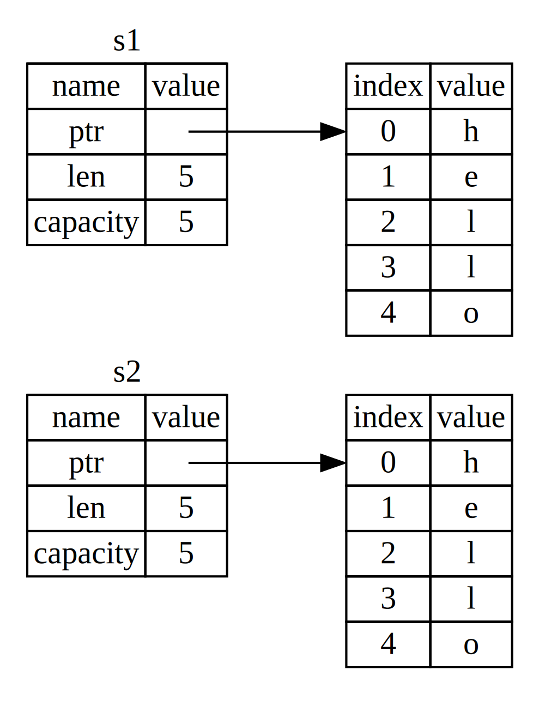

Введение
Добро пожаловать! Это книга о языке программирования Rust. Rust - это язык программирования, с помощью которого можно создать безопасные, быстрые и многопоточные приложения. Безопасность, скорость и многопоточность — это три кита, вашего Rust-приложения. Семантический дизайн языка позволяет создавать программы, объединяющие воедино высокую производительность, контроль над используемыми ресурсами и абстракции высокого уровня. Rust объединяет в себе черты низкоуровневых и высокоуровневых языков программирования. Системные программисты по достоинству оценят безопасность языковых конструкций, а прикладные программисты получат возможность создавать производительные решения. Код программ читается свободно, поэтому писать на нём удобно.
Компилятор производит работу по статическому анализу кода, оптимизации использования ресурсов. Это позволяет повысить производительность работы программ и заранее оптимизировать объём используемыех системных ресурсов. Благодаря этим особенностям Rust — это удобный инструмент для создания решений в следующих прикладных областях: приложения с предопределёнными жёсткими квотами ресурсов - кодеки, драйверы устройств, драйверы баз данных и даже встроенные системы. Rust весьма удобен для создания веб-приложений. Менеджер пакетов crates.io позволяет создавать высоконагруженные решения без неизбежных расходов многослойных, высокоуровневых альтернатив. Просто отпустите Вашу фантазию в полёт и создавайте приложения!
Эта книга будет полезна программистам, которые уже имеют теоретическую подготовку и практический опыт в программировании. Очень даже возможно, что после внимательного прочтения этой книги, написания и отладки кода, понимания основных шаблонов проектирования, обретения навыков комфортной работы с языковыми конструкциями Вы полюбите писать на Rust. Небольшие учебные примеры научат использовать потенциал Rust. Также Вы научитесь пользоваться инструментальными средствами — дополнительными программами и технологиями, благодаря которым продуктивность работы будет увеличиваться.
Доработка книги
Если вы найдете ошибку, неточность, пожалуйста внесите испраление с помощью возможностей GitHub. CONTRIBUTING.md — этом файл, в котром описаны основные правила внесения изменений.
Установка
Для использвания языка программирования Rust необходимо установить все необходимые программные компоненты. Вам будет необходимо скачать их, а также выполнить дополтельные установки.
Мы покажим, как с помощью командной строки. Начало любой команды будет обозначаться
символом-индикатором $. Строки без такого символа будут обозначать результат
работы команды.
Установка на Linux или Mac
Если вы используете Linux или Mac, пожалуйста, выполните следующую команду:
$ curl https://sh.rustup.rs -sSf | sh
Благодаря этой команде будет запущена инсталляция Rust. Возможно, понадобиться ввести пароль пользователя. Если все компоненты будут благополучно установлены, Вы увидите следующее сообщение:
Rust is installed now. Great!
Вы также можете просто скачать код инсталлятора без его выполнения
$ curl https://sh.rustup.rs
т.е. выполнить команду без запуска инсталляции и выполнить её в любое удобное время.
Инсталлятор автоматически добавить папку с компонентами Rust в системный путь PATH и их использование будет доступно из командной строки после следующего входа в систему. Если необходимо сразу начать работу, пожалуйста, выполните следующую команду:
$ source $HOME/.cargo/env
Или добавьте следующую строку в файл ~/.bash_profile:
$ export PATH="$HOME/.cargo/bin:$PATH"
Установка на Windows
Перейдите по ссылке https://rustup.rs и следуйте иструкциям исталлятора.
Авторы учебника предполагают, что Вы используете программу cmd для выполнения
описываемых команд. Если используется другая программа, возможно, имеется возможность
использовать команды для Linux и Mac. Если нет, пожалуйста, обратитесь к документации
по использованию программы, который Вы пользуетесь.
Установка Rust вручную
Если Вы по каким-то причинам не используете rustup.rs, пожалуйста, ознакомьтесь с документацией на с странице the Rust installation page.
Обновление
После установки Rust обновление выполняется с помощью следующей команды:
$ rustup update
Удаление компонентов Rust из Вашей системы
Удалить Rust также просто, как его установить. Для этого необходим выполнить следующую команду:
$ rustup self uninstall
Устранение возможных ошибок
Проверка работы Rust-компилятора:
$ rustc --version
Если Вы увидите версию компилятора, хэш-строку, дату обновления:
rustc x.y.z (abcabcabc yyyy-mm-dd)
Если Вы видите всё это - то Rust установлен успешно. Поздравляем!
Если этого не произошло, проверьте содержание системной переменной PATH.
Если проблема всё ещё не может быть устранена, вот сайты, на страницах которых Вы сможете найти ответ или задать вопрос the #rust IRC channel on irc.mozilla.org., Доступ к данному ресурсу осуществляется с помощь Mibbit. Перейдите по ссылке и Вы получите возможность задать Ваш вопрос в чате. Также обратить на форум the Users forum или на Stack Overflow.
Справочная информация
Один из устанавливаемых компонентов Rust - копия документации. Для её использования
нет необходимости доступа в Интернет. Команда rustup doc откроет локальную версию
сайта с документацией в Вашем браузере.
Если Вам необходимо найти описание функционала стандартной библиотеки или вы не знаете как использовать тот или иной объект - документация станет вашим верным помощником!
Hello, World!
Итак, когда Rust уже установлен можно приступать к написанию вашей первой программы. По традиции, (а точнее с 1978 года, когда вышла в свет первое издания книги о Си) напишем небольшую программу, которая напечатает "Привет, Мир!" в строке вывода.
Обратите внимание, что читатели должны быть знакомы с использованием командной строки. Язык Rust не требует каких-то специальных настроек редакторов исходного кода, настройкам инструментальных средств. IDE экономят время и если ещё дают возможность тонкой настройки параметров запуска утилит - это замечательно. Как бы там ни было, программист должен знать и уметь пользоваться командной строкой и мы этому научим.
Создание папки проекта
Первым делом создадим папку для хранения исходных кодов Rust. Это, конечно, не обязательное условие для программировании на Rust, но для удобства нашей работы это будут лучшим решением.
Т.к. работа в командной строке Linux и Mac идентичны, предлагаю, для краткости, писать Unix, когда мы будем описывать работу в терминале Linux и Mac.
Итак, приступим. Создадим папку projects и далее будем создавать проекты Rust в этой директории. Для этого откроем программу-терминал и введём следующие команды:
Unix:
$ mkdir ~/projects
$ cd ~/projects
$ mkdir hello_world
$ cd hello_world
Windows CMD:
> mkdir %USERPROFILE%\projects
> cd %USERPROFILE%\projects
> mkdir hello_world
> cd hello_world
Windows PowerShell:
> mkdir $env:USERPROFILE\projects
> cd $env:USERPROFILE\projects
> mkdir hello_world
> cd hello_world
Написание и запуск первой программы
Далее, создадим текстовый файл и назовём его main.rs.
Все файлы исходного кода Rust имеют расширение .rs (ещё одна конвенция упрощающая программирование). Рекомендуем использовать символ подчёркивания, для разделения слова в многословных названиях. Во-первых, такие названия легче читать, а во-вторых, это упрощает работу утилит. Пример: i_like_hello_world.rs.
Теперь откроем файлmain.rs для редактирования и введём следующие сроки кода:
Filename: main.rs
fn main() { println!("Hello, Rust world! Привет, Мир!"); }
Сохраним файл и вернёмся в окно терминала. Введём следующие (две) команды:
Unix:
$ rustc main.rs # нажмите клавишу Enter
$ ./main # нажмите клавишу Enter
Hello, Rust world! Привет, Мир!
Windows CMD:
> rustc main.rs # нажмите клавишу Enter
> main
Hello, Rust world! Привет, Мир!
Обратите внимание на отличия в запуске приложений в строке терминала Unix и Windows.
Если всё будет в порядке (вы не сделаете опечаток, не будет проблем в кодировках,
шрифтах или ещё с чем-нибудь ещё ("не удаётся найти указанный файл", "stream
did not contain valid UTF-8", ..)) - будет напечатана строка Hello, Rust world! Привет, Мир!.
Поздравляю! Вы написали первую программу на Rust! Добро пожаловать в увлекательное
путешествие в мир Rust! :-)
Если вам уже понравилось писать на Rust, создайте файл hello_world.rs введите тот же код и проверьте его работу. Далее создайте i_like_hello_world.rs и проделайте тоже самое. Если программы будут работать корректно - будет печататься тот же текст - вы закрепите свои первые навыки и почувствуете уверенность. Желаю успеха!
Как это работает
Теперь, давайте разберёмся, как же работает ваша новая "Hello Rust world!"-программа. Первое, разберем исходный код:
fn main() { }
Этот текст определяет Rust-функцию. Функция main - особенная. Это т.н. точка
входа в программу (если читатель уже знаком с C, C++, Java, то тут тоже самое).
main - начало всех начал вашей программы. Т.е. это текс значит следующее:
"Объявление функции с именем main, у которой нет ни параметров и она ничего не
возвращает во внешнюю среду." Если же у неё были бы параметры, они были бы заключены
в круглые скобки ( ).
Также обратите внимание, что содержание кода функции обрамляется фигурными скобками.
{ } (также как и в Си, С++, Java, Go). Эти скобки обязательны для описания
Rust-функций. Для повышения читаемости кода рекомендуем размещать открывающуюся
фигурную скобку { на той же строке, что и наименовании функции и описание её
параметров и отделять её одним пробелом. Вот так: fn main() {.
Содержание функции main:
# #![allow(unused_variables)] #fn main() { println!("Hello, Rust world! Привет, Мир!"); #}
Эта строчка кода описывает все действия программы: печать текста в терминальной строке. Есть определённые стилистические уточнения. Первое, в стиле написания кода на Rust используется четыре пробела вместо символа табуляции.
Второе, это println! (называется Rust макрос). Таким образом в Rust реализуется
метапрограммирование. Обратите, пожалуйста, внимание, что в конце слова println
стоит знак !. Именно этот знак говорит о том, что это макрос, а не функция.
Это важно! Пожалуйста обратите на это внимание!
Далее, в круглых скобках находится текст "Hello, Rust world! Привет, Мир!".
Он имеет тип данных строка. Этот текст передаётся макросу println! как входные
данные. Далее, макрос выполняет печать в строке терминала данный текст. Всё
достаточно просто и понятно, не так ли?!
Строка кода заканчивается символом ;. Это символ информирует о том, что выражение
окончено, далее можно напечатать следующее.
# #![allow(unused_variables)] #fn main() { println!("Hello, Rust world! Привет, Мир!"); println!("Hello! Привет!"); #}
Пожалуйста, добавьте новую сточку кода в вашу программу и проделайте необходимые операции, для того чтобы увидеть новый текст в терминальной строке!
Unix:
$ rustc main.rs
$ ./main
Hello, Rust world! Привет, Мир!
Hello! Привет!
Windows CMD:
> rustc main.rs
> main
Hello, Rust world! Привет, Мир!
Hello! Привет!
Компиляция и выполнения - это два различных этапа работы
В разделе "Написание и запуск первой программы" было показано, как выполнить созданную программу. Сейчас мы постараемся разъяснить как это работает.
Прежде чем выполнить программму (т.е.вызвать в строке териминала созданные файл
программы main), необходимо скомпилировать её с помощью программы-компилятора
rustc.
Unix:
$ rustc main.rs
Аналогично на Windows.
Windows CMD:
> rustc main.rs
Таким же образом компилируются программы на C, C++, Java, Go. Результатом компиляции Rust-программы является бинарный файл. Его можно увидеть в списке файлов:
Unix:
$ ls
main main.rs
Windows:
> dir /B
main.exe
main.rs
опция /B позволяет отображать только файлы
В списке присутствуют два файла: файл с исходным кодом программы .rs и бинарный файл (main.exe в Windows, main на других опрационных системах).
$ ./main # or .\main.exe на Windows
Если бы в исходном коде main.rs в входных параметрах макроса был введё текст
“Hello, world!”, то в строке терминала вы бы увидели Hello, world!.
Пожалуйста, отредактируйте файл исходного кода и проверьте работу нового бинарного файла!
Если у Вас есть опыт программирования на динамически компилируемых языках, таких как Ruby, Python или JavaScript то вас, наверное, удивит необходимсть разделения компиляции и выполнения программ. В составе утилит Rust есть Ahead-of-Time (AOT) компилятор. Он позволяет создавать автономный бинарный файл, которые может быть потом использован там, где нет Rust утилит. Это весьма удобно, как разработчиков программного обеспечения, так и для пользователей. Динамические компилирумые программы лишены такой возможности. Как бы там ни было, использование и динамические и статически компилируемых языков программирования имеют свои плюсы и минусы.
Компиляция простых программ с помощью rustc - это замечательно, но если ваше
проект всё больше и большое, вам понадобятся средства управления всеми компонентами,
а также удобные возможности всего цикла командной разработки. Далее, мы представим
вам программу cargo, которая поможет создать удобную среду разработки.
Hello, Cargo! Привет, Cargo!
Cargo - это система управления пакетами для разработки программ на Rust. Удобство её использования оценили программисты Rust. Cargo позволяет упростить процесс разработки. Например, Сargo поможет скомпилировать программу из исходного кода, скачать требуемые библиотеки для вашего проекта. В терминах языка программирования Rust внешние библиотеки называются зависимостями (dependencies).
Такая простая программа, которую мы написали (main) не имеет зависимостей. Поэтому Cargo нам может понадобиться только лишь для компиляции. Если же Вы напишете (когда-нибудь напишете) более сложную программу на Rust, то весь функционал Cargo, который помогает добавить зависимости в инфраструктуру вашего проекта будет весьма кстати.
Поскольку огромное (подчёркиваю огромное) количество Rust-проектов использует Cargo мы предположим, что и вам его функционал придётся по вкусу и будет удобен. Всё что вам нужно для его использования идёт в комплекте с компилятором и другими утилитами. Для того, чтобы проверить правильно ли установлен Cargo, введите с строке терминала следующую команду:
$ cargo --version
cargo 0.21.0
Если будет напечатана версия программы - Cargo скорее всего работает. А если
программа cargo не найдена - пожалуйста, постарайтесь устранить проблемы установки
(возможно, Вам понадобиться установить Cargo с помощью разлиных способов, кототры приведены на
сайте doc.crates.io.
Для того чтобы узнать подробнее о возможностях утилиты
cargo, пожалуйста, введите следующую команду:
$ cargo --help
Создание Cargo проекта
Создадим проект используя Cargo! Думаю, что он будет отличаться от того проекта,
что был нами создан ранее (проект main):
Unix:
$ cd ~/projects
Windows:
> cd %USERPROFILE%\projects
Далее введём следующую команду:
$ cargo new hello_cargo --bin
$ cd hello_cargo
Мы устанавливаем аргумент --bin для carog-команды new для того, чтобы по шаблону
была создана структура приложения командной строки - консольный проект (бинарное
приложение). hello_cargo - это название нашего нового Rust проекта.
Если мы просмотрим список созданных файлов, то мы увидим что внутри папки проекта
были созданы файлы и папка: Cargo.toml,.gitignore, src. Внутри папки src
находится файл main.rs. По умолчанию Cargo оснастил папку нашего проекта файлом
.gitignore - это служебный файл git хранилища. Вы можете создать проект и без
инициализации git хранилища (или какого-либо иного вида системы контроля версий файлов),
если воспользуйтесь флагом --vcs при создании нового проекта:
$ cargo new hello_cargo2 --bin --vcs none
$ cd hello_cargo2
Внутри текстового файла Cargo.toml следующее содержание:
Filename: Cargo.toml
[package]
name = "hello_cargo"
version = "0.1.0"
authors = ["Your Name <you@example.com>"]
[dependencies]
Это файл формата TOML (Tom’s Obvious, Minimal Language). Формат TOML очень похож на INI, но он имеет свои специфические особенности.
На первой строке расположен заголовок секции[package]. Далее следует описание пакета.
По мере усложнения проекта, в данный файл будут добавлять другие секции.
Следующие строки - это строки описания пакета: имя, версия, авторы. Если в строке у Вас написано имя компьютера, значит Вы ещё не до конца настроили систему для работы с Cargo (Cargo не может считать информацию о вас а также недоступны другие опции работы с github). Информацию об авторстве Cargo берёт из параметров вашего git вашей учетной записи. Подробнее об этом можно ознакомиться перейдя по ссылке. Если вы хотите устранить это недостаток, то для пользователей Windows предлагаю следующее решение:
- Устанавливаете "GitHub Desktop".
- В приложении подключаетесь к своей учётной записи.
- Далее создаёте проект.
- Открывайте файл Cargo.toml созданного проекта и видите имя учётной записи и e-mail в строке
authors.
Последняя строка [dependencies] - это заголовок секции crates (так называются
пакеты в терминах языка программирования Rust). Этот список содержит описание зависимостей
вашего проекта и предоставляет Cargo функционалу необходимую информацию для загрузки
и компиляции. Т.к. в нашем шаблонном поекте не испльзуются внешние зависимости -
эта секция пуста. В проекте "Угадай число" мы заполним информацию о зависимостях.
Если у Вас появились вопросы, пожалуйста, познакомьтесь с разделом FAQ документации.
Теперь перейдём к рассмотрению содержания файла src/main.rs:
Filename: src/main.rs
fn main() { println!("Hello, world!"); }
Как видите, тут уже есть код программы, который мы писали ранее. Отличия нашего предыдущего проекта от сгенерируемого Cargo следующий:
- Имеется специальная папка для исходного кода программы src.
- Есть файл конфигурации Cargo.toml
Программист Java, возможно, обратят внимание на концептуальную схожесть содержания проекта с Maven. Да, есть что-то общее. Ваша интуиция не подводит. В корневой папке проекта могут также содержаться файлы README, CONTRIBUTING, LICENSE, файлы конфигурации, а также всё что угодно не относящаяся к исходному коду программы. Концепция структуры хранения данных Cargo позволяет унифицировать структуру Rust проектов, что делает их понятными для изучения и развития. Такие проекты потенциально могут быть сколько угодно сложными и ёмкими. Cargo поможет со всеми ими справиться.
Если в своей работе вам придётся с необходимостью конвертации проекта Rust в Cargo-проект - генерируемые шаблоны помогут вам.
Структура Cargo-проекта:
.
├── Cargo.lock
├── Cargo.toml
├── benches
│ └── large-input.rs
├── examples
│ └── simple.rs
├── src
│ ├── bin
│ │ └── another_executable.rs
│ ├── lib.rs
│ └── main.rs
└── tests
└── some-integration-tests.rs
Более подробную информацию о структуре типового Cargo-проекта вы можете узнать на сайте;
Сборка и запуск Cargo проектов
В чём же разница между сборкой и запуском Cargo проекта. Предлагаю разобраться!
Для этого в папке созданного проекта введём следующую cargo-команду - build
(build - это cargo-команда компиляции текущего проекта. С работой команды new
вы уже знакомы):
$ cargo build
Compiling hello_cargo v0.1.0 (file:///projects/hello_cargo)
Результат - создание бинарного файла в папке target/debug/hello_cargo (target\debug\hello_cargo.exe в Windows). Проверим работу созданного файла:
Unix:
$ ./target/debug/hello_cargo
Hello, world!
Windows:
> .\target\debug\hello_cargo
Hello, world!
> # or .\target\debug\hello_cargo.exe
> # or target\debug\hello_cargo.exe
> # or target\debug\hello_cargo
Отлично! Всё работает замечательно. :-)
Обратите внимание, что команда cargo build при первом её запуске в текущем
проекте создаёт файл Cargo.lock. Этот файл содержит следующий текст:
Filename: Cargo.lock
[root]
name = "hello_cargo"
version = "0.1.0"
Файл Cargo.lock необходим для отслеживания зависимостей вашего проекта. Так как текущей проект не содержит зависимостей, данный файл не содержит данных для отслеживания зависимостей. По мере усложнения проекта Cargo будет отслеживать зависимости (данный файл будет заполнять необходимой для этого информацией). Более подробно об этом можно узнать из документации проекта.
Для компиляции и последующего запуска программы на выполнение воспользуйтесь
Cargo-командой run:
$ cargo run
Running `target/debug/hello_cargo`
Hello, world!
Обратите внимание, что в командной сроке не было напечатано ничего о компиляции.
Cargo умеет отслеживать состояние исходных файлов проекта. Так как изменений не
было - следовательно, перекомпиляция не нужно. Пожалуйста, внесите в исходный код
Rust-файла изменение. Скопируйте строчку кода ввода на печать и вставьте её на
новую строку. Сохраните ваши изменения. Запустите команду Cargo-команду run ещё
раз. Обратите внимание, что программа будет перекомпилирована и запущена.
$ cargo run
Compiling hello_cargo v0.1.0 (file:///projects/hello_cargo)
Running `target/debug/hello_cargo`
Hello, world!
Если запустить Cargo-команду run ещё раз - перекомпиляции не случиться.
$ cargo run
Compiling hello_cargo v0.1.0 (file:///projects/hello_cargo)
Running `target/debug/hello_cargo`
Hello, world!
shell $ cargo run Running `target/debug/hello_cargo` Hello, world!
Подведём итоги:
- Для создания сложных проектов вместо того, чтобы использовать Rust-компилятор
rustcнепосредственно, наилучшим решением является использование Cargo-команд. - Cargo-структура проекта используют принцип разделения и систематизации благодаря, которому возможно построение проектов со сложными внешними зависимостями.
Кроме того использование Cargo-команд позволяет вести многоплатформенную разработку. Более подробно о проекте Cargo его возможностях можно узнать из документации:
$ cargo --help
А также из материалов сайта.
Сборка готовых (оптимизированных) Rust-приложений
Когда проект уже готов к выпуску, можно воспользоваться Cargo-командой build c
флагом --release:
$ cargo build --release
Эта команда скомпилирует и оптимизирует вашу программу. В папке target/release будет создан бинарный файл. Все оптимизации позволят программе работать быстрее. Обратная сторона подобной операции - более длительное время компиляции. Поэтому существуют две команды компиляции - для разработки, для финальных версий. Для проверки производительности ваших Rust-программ мы рекомендуем использовать бинарные файлы, которые были получены путем компиляции и оптимизации (которые сохраняются в пакте target/release).
Cargo as Convention Cargo-конвенции
Конечно, простые примеры не могут раскрыть все возможностей, которые предоставляет Cargo по сравнение с прямой работой с компилятором. Для более сложных проектов концепции Cargo - это проверенный временем стиль разработки. Привыкайте к хорошему стилю работы даже с простыми проектами!
Этапы начала работы с любым Rust-проектом:
$ git clone someurl.com/someproject
$ cd someproject
$ cargo build
Для того, чтобы почувствовать, что такое работа с "неигрушечным" проектом, проделайте эти операции на примере проекта Cargo. Познакомьтесь с содержанием файлов Cargo.toml, Cargo.lock, посмотрите создержание папки src.
Проект Cargo находится по адресу: github.com/rust-lang/cargo. Также вы можете попрактиковаться и над другими проектами, исходные коды которых храняться на github.com. Для их поиска используйте возможности расширенного поиска проектов.
Если вы хотите подробнее ознакомится с работой проектов Cargo, со всем, что мы не рассказали в этой вводной статье, пожалуйста, ознакомьтесь с официальным руководством.
Игра "Угадай число"
Предлагаю начать программирование прямо сейчас! Мы создадим программу на Rust.
Будем учиться программированию по средством создания Rust-проекта. Эта глава поможет
Вам получить практический опыт работы, познакомит с концепциями языка программирования.
Вы научитесь использовать ключевые слова, такие как let и match, познакомитесь
с методами, ассоциированными функциями, научитесь использовать внешние модули и
многое другое. Мы надеемся, что изучив материалы этой главы вы освоите фундаментальные
знания теории и практике использования возможностей языка Rust.
Мы реализуем простую задачу: угадывание числа. Алгоритм игры следующий: программа генерирует целое число от 0 до 100. Игрок должен угадать это число. После каждого неправильного ответа даётся подсказка - загаданное число меньше или больше введенного игроком. Если число угадано - победитель принимает поздравления. :-) Программа завершает работу.
Настройка нового проекта
Для создания нового проекта, в строке терминала перейдите в папку projects (в
ту, которую Вы создали ранее). С помощью уже знакомой Вам утилиты cargo создадим
новый проект:
$ cargo new guessing_game --bin
$ cd guessing_game
or
$ cargo new guessing_game --bin && cd guessing_game
Данная команда cargo new принимает аргумент - имя нового проекта
guessing_game, а далее флаг --bin, который уточняет какой тип приложения мы
хотим создать. В данном случае - это консольное приложение.
Рассмотрим содержание файла Cargo.toml, созданного в папке нового проекта:
Filename: Cargo.toml
[package]
name = "guessing_game"
version = "0.1.0"
authors = ["Your Name <you@example.com>"]
[dependencies]
Содержание файла src/main.rs такое же (), как и файла в проекте hello_world:
Filename: src/main.rs
fn main() { println!("Hello, world!"); }
Копилируем и запускаем программу с помощью команды cargo run:
$ cargo run
Compiling guessing_game v0.1.0 (file:///projects/guessing_game)
Running `target/debug/guessing_game`
Hello, world!
Испльзуйте команду run, когда нужно быстро скомпилировать и запусть программу на
выполнение. Что-то подобное будет происходить и той программе, которую мы будем
создавать.
Отройте файл src/main.rs для редактирования. Далее мы будем менять содержание этого шаблонного файла исходного кода программы.
Обработка вводимых данных
Программа начинается с опроса пользователя - необходимо ввести число. Далее программа анализирует ввёденную пользователем информацию. Для начала напишем код, позволяющий ввести данные с клавиатуры. Пожалуйста, замените содержание файла исходного кода src/main.rs на следующий текст:
Filename: src/main.rs
use std::io;
fn main() {
println!("Guess the number!");
println!("Please input your guess.");
let mut guess = String::new();
io::stdin().read_line(&mut guess)
.expect("Failed to read line");
println!("You guessed: {}", guess);
}
Listing 2-1: Программа просит ввести строку, а потом печатает её
Этот программный код содержит много новой для Вас информации. Разберём код шаг за
шагом. Для того чтобы считать введённые данные с клавиатуры, а потом вывести их
на экран, нам нужна библиотека ввода/вывода io. Эта библиотека входит в состав
стандартной библиотеки Rust std.
use std::io;
По умолчанию, Rust загружает несколько типов данных в память, чтобы их можно было
бы использовать без каких-либо дополнительных описаний в коде (the prelude).
Если типы данных, которые вы хотите использовать в программе не входят в состав
этих типов данных вам надо описать их использования явным образом. Это можно сделать
с помощью выражения use. Библиотека ввода/вывода std::io предоставляет множество
полезных функциональных возможностей, в том числе для обработки вводимых данных
пользователя.
Функция main - точка начала выполнения программы:
fn main() {
Синтаксис определения функции следующий: fn - ключевое слово начала описания функции,
круглые скобки () - контейнер входных параметров функции, фигурная скобка { -
обозначение начала тела функции.
println! - это макрос, которые печатает текст и перемещает курсор на новую строку:
println!("Guess the number!");
println!("Please input your guess.");
Этот код просто печатает предложение ввести строку для начала игры и далее печатает введённое значение.
Создание переменной для хранения значений
Далее, мы создаём место хранения введенных игроком данных:
let mut guess = String::new();
Сейчас программа начинает становиться интересной. Обратите, пожалуйста, внимание,
как много нового в этой стоке! Прежде всего здесь есть выражение let, которое
используется для создания переменной. Вот, например:
let foo = bar;
В этой сроке создаётся переменная с именем foo, которая связывается со значением
bar. Особенностью языка Rust является то, что переменные по умолчанию неизменяемые.
Этот пример показывает, как использовать ключевое слово mut перед именем переменной
для того, чтобы сделать переменную изменяемой:
# #![allow(unused_variables)] #fn main() { let foo = 5; // immutable let mut bar = 5; // mutable #}
Обратите внимание, что символ
//- это ключевое слова обозначающее комментарий, который размещается на одной строке. Всё, что размещено в строке комментария - игнорируется компилятором.
Таким образом выражение let mut guess - это объявление изменяемой переменной с
именем guess.
# #![allow(unused_variables)] #fn main() { let mut guess = String::new(); #}
Обратите внимание, что это выражение состоит из двух частей разделенных знаком =.
С левой частью мы разобрались - это объявление переменной. Теперь разберёмся с
правой. Там располож вызов функции new(). Результат вызова этой функции - экземпляр
структуры имеющей тип String. Этот тип данных входит в стандартную библиотеку.
Создавая экземпляр String, вы создаёте контейнер,
который может хранить строковые данные в кодировке UTF-8. Размер хранящихся данных
может изменяться динамически.
Также обратите внимание на синтаксическую конструкцию ::. Выражение ::new
сообщает нам следующую информацию: функуция new - это функция, которая связана с
типом String, а не с экземпляром данного типа. Знатоки языка Java сейчас улыбнуться,
увидя тут что-то знакомое. Да, да. Вы не ошиблись - это статический метода типа String.
Результатом вызова Функции new является новая, пустая String. С данной new,
я думаю, вы ещё неоднократно столкнётесь изучаю код стандартной библиотеки, т.к.
это общее имя функции, которая создаёт экземпляр определённого типа.
Подытожим наш анализ выражения let mut guess = String::new();. Данный код создаёт
изменяемую переменную guess, которая связывается с новым пустым экземпляром типа
String. Всё просто и ясно. Отлично!
Теперь перейдем к следующей сроки нашей прогоаммы. Рассмотрим длинную строку кода:
# #![allow(unused_variables)] #fn main() { io::stdin().read_line(&mut guess).expect("Failed to read line"); #}
Тут мы видем вызов методов read_line и expect стандартной библиотеки std::io.
Благодаря тому, что мы заблаговременно сообщили о том, что будем использовать методы
данной библиотеки, мы сокращаем наш последующий код. Весьма удобно, не правда ли?!
Иначе ... а проверим, что будет иначе! Удалим (нет! просто закомментируем строку
кода use std::io;, ведь мы уже знаем как это делается в Rust!) и посмотрим
на ошибки компилятора. Потом добавлять префикс std::io там где он необходим
(компилятор нам сообщим, где проблема - какая строка кода имеет ошибку). Нашли?
Отлично! проверяйте работу кода с помощью cargo run!
Вот вариант рабочего кода:
//use std::io; fn main() { println!("Guess the number!"); println!("Please input your guess."); let mut guess = String::new(); // ↓↓ мы добавили префикс std:: ↓↓ std::io::stdin().read_line(&mut guess) .expect("Failed to read line"); println!("You guessed: {}", guess); }
Также этот код можно переписать следующим образом:
//use std::io; fn main() { println!("Guess the number!"); println!("Please input your guess."); let mut guess = String::new(); // ↓↓ мы добавили префикс std:: ↓↓ std:: io::stdin().read_line(&mut guess) .expect("Failed to read line"); println!("You guessed: {}", guess); }
Функция stdin возвращает экземпляр типа std::io::Stdin,
который является обработчиком данных, вводимых с клавиатуры терминала.
Следующая часть кода .read_line(&mut guess) вызывает метод экземпляра этого
обработчика read_line. Данный метод производит чтение
введеных данных. Обратите внимание на синтаксис описания входных данных этого метода:
&mut guess!
Метод read_line добавляет к содержанию переменной guess всё, что введено с
клавиатуры. Поэтому очень важно, чтобы переменная, к которой добавляются значения
была изменяемой.
Префикс переменной & обозначает, что в функцию мы передаём ссылку. Это даёт
возможность непосредственного изменения данных, которые находятся в памяти по данному
адресу. Rust проявляет свои преимущества как раз в безопасной работе с такими типами
данных. В главе № 4 будет рассказано подробнее об этом типе данных. Важной особенностью,
о которой мы узнали из работы с данной строкой кода, является то, что переменные
данного типа по умолчанию - неизменяемые. Именно поэтому мы должны описать вводимые
данные имеено так &mutguess. &guess - данного описания входных данных будет
недостаточно, чтобы сообщить компилятору о том, что мы передаём методу read_line
ссылку на изменяемые данные. Пожалуйста, проверьте это утверждение на практике!
Сначала изменим код так, чтобы некоторые его части можно было бы закоментировать,
а потом закомментируем строку содержащую ключевое слов mut.
use std::io; fn main() { println!("Guess the number!"); println!("Please input your guess."); let mut guess = String::new(); std::io::stdin().read_line( & //mut guess) .expect("Failed to read line"); println!("You guessed: {}", guess); }
При компиляции данного кода - получим ошибку, сообщающую нам о том, что входной параметр
данной функции должен быть изменяемым. Пожалуйста исправьте ошибку (раскомментировав
строку кода с ключевым словом mut и перекомпилировав программу)!
Далее перейдём к следующему методы этой длинной цепочки вызовов методов:
.expect("Failed to read line");
На практике мы уже научились размещать код на нескольких строках (это может быть необходимо по разным причинам: для удобства чтения длинных цепочек кода, для включения/отключения некоторых звеньев). Поэтому даная запись:
io::stdin().read_line(&mut guess).expect("Failed to read line");
для удобства чтения, разделена на две строки
io::stdin().read_line(&mut guess)
.expect("Failed to read line");
Оставим рассуждения о стиле. Вернёмся к сути! Далее мы продолжим изучать нашу (уже такую близкую и понятную строку кода).
Обработка потенциальных ошибок с помощью типа Result
Как мы уже знаем, функция read_line добавляет строковые данные к содержанию переменной.
Помимо этого эта фукнция возвращает значение io::Result.
В стандартной библиотеке существует множество типов имеющих название Result,
а также такими именами называются вложенные модули (например, io::Result).
Типа данных Result чаще всего являются перечисленияenums
(enums). Это такой тип данных, который имеет фиксированный набор значений.
В главе № 6 мы подробнее познакомится с этим типом данных.
Result-значениями таких перечислений являются Ok и Err, которые в свою очередь
содержат данные. Ok - обозначает успех и содержит результат работы (в данном случае,
результат работы функции), а Err- обозначает неудачу и содержит в себе описание
ошибки.
Основной целью Result-типов является понятное для последующего анализа информации
об ошибке. Значениями Result-типов, так как и любых других типов, являются
определённые в них методы. Экземпляр типа io::Result имеет метод expect,
который вы можете вызвать. Если экземпляр типа io::Result является значение Err,
метод expect завершит работы программы и отобразит информацию об ошибке (с дополнительной
информацией, которую вы передали функции):
.expect("Failed to read line");
Если же экземпляром типа io::Result является значение Ok, метод expect
возвратит результат работы. Пожалуйста, самостоятельно создайте переменую, присвойте
ей результат работы функции expect и напечатайте её содержание в терминальной
строке! В данном случае должно быть напечатано количество байт, которое было
введено с клавиатуры.
let number_of_bytes = io::stdin().read_line(&mut guess).expect("Failed to read line");
println!("number of bytes was entered: {}", number_of_bytes);
Если мы сохраним код программы, закомментировав вызов метода expect:
use std::io; fn main() { println!("Guess the number!"); println!("Please input your guess."); let mut guess = String::new(); std::io::stdin().read_line(&mut guess) //.expect("Failed to read line") ; println!("You guessed: {}", guess); }
то в терминальной сроке будет напечатано предупреждение проблемах вашего кода:
$ cargo build
Compiling guessing_game v0.1.0 (file:///projects/guessing_game)
src/main.rs:10:5: 10:39 warning: unused result which must be used,
#[warn(unused_must_use)] on by default
src/main.rs:10 io::stdin().read_line(&mut guess);
^~~~~~~~~~~~~~~~~~~~~~~~~~~~~~~~~~
Программа не обрабатывает возможные ошибки. Правильным решением соблюсти требования
компилятора будет написать обработчик ошибки. Вызов фукции expect - наиболее
простое решение. Боле подробно об обработки ошибок мы познакомится в главе № 9.
Вывод данных с помощью println!
Осталась еще одна строка которую нам необходимо обсудить:
println!("You guessed: {}", guess);
Эта команда печатет строку, которую пользователь ввел ранее. Пара фигурных
скобок {} — это шаблон, который будет заменен аргументами, следующими за
строкой описывающей формат вывода. Чтобы запомнить этот синтаксис представьте,
что {} — это маленькие клешни краба, удерживающие значение на месте. Вы
можете вывести на экран сразу несколько переменных используя этот формат. Для
этого в строку, описывающую формат, необходимо вставить несколько шаблонов. В
этом случае на место первой пары фигурных скобок будет подставлен первый
аргумент после строки формата, на место второй пары — второй аргумент и так
далее. Вывод нескольких значений в одной строке будет выглядеть так:
# #![allow(unused_variables)] #fn main() { let x = 5; let y = 10; println!("x = {} and y = {}", x, y); #}
Этот код напечатает x = 5 and y = 10.
Проверка работы вашей текущей версии программы "Угадай число"
Пожалуйста, убедитесь, что ваша программа "Угадай число" работает корректно. Надеемся, что Вы хорошо понимаете написанный код.
use std::io; fn main() { println!("\"Угадай число\""); println!("Пожалуйста, введите предположение!"); let mut guess = String::new(); io::stdin().read_line(&mut guess) .expect("Ой! Что-то случилось! К сожалению, Не удалось прочитать строку. :-("); println!("Вы ввели следующие данные: {}", guess); }
Пример компиляции и выполнения кода вашей программы с троке терминала:
$ cargo run
Compiling guessing_game v0.1.0 (file:///projects/guessing_game)
Running `target/debug/guessing_game`
Guess the number!
Please input your guess.
6
You guessed: 6
Итак, первая часть (ввод и отображения введённых вами данных) игры готова.
Создание числа для отгадывания
Прежде чем отгадать число нам необходимо его загадать. Программно это делается следующим
образом. Нам нужно сгенерировать число и сохранить его в какой-либо переменой.
Для того, чтобы игра была интересной для каждой новой игры это число должно быть
непредсказуемым. Для упрощения задачи, предположим что это число будет больше 0 и
меньше или равно 100. Пока стандартная библиотека не оснащена функциональностью
для генерации случайных чисел. Но для этих целей мы можем воспользоваться контейнером
(библиотекой) созданным разработчиками языка Rust rand crate.
Испльзование контейнеров для расширения функциональных возможностей приложений
Внимание! Новая и важная информация - контейнеры crate (их ещё называют пакетами)
— это набор переносимого программного определённого созданного по определённым
правилам и служащий определённой цели. Эти контейнеры бывают разных видов: бинарные
и библиотечные. Одна из главных целей и задача проекта Cargo - помочь разработчикам
использовать сторонние пакеты. rand — это один из таких библиотечных пакетов.
Для доступа к его функциональным возможностям, прежде всего, надо модифицировать
содержание секции [dependencies] файла конфигурации Cargo.toml.
Filename: Cargo.toml
[dependencies]
rand = "0.3.14"
Для того чтобы узнать последнюю версию пакера, пожалуйста воспользуйтесь строкой поиска на сайте crates.io
Обрате внимание, что вся информация в файле конфигурации сгруппирована по секциям.
Секция [dependencies] необходима для описания необходимого внешнего пакета.
В данном примере мы указали уникальный идентификатор и версию пакета. Обратите
внимание, что мы указали семантический номер версии 0.3.14. Менеджер Cargo
использует semver(SemVer) - методологию написания и анализа
номера версии. В данном случае 0.3.14 - это сокращенная вид полного идентификатора
^0.3.14. Этот текст значит следующее: "любая версия, которая имеет открытый API
и совместима с версией 0.3.14".
Будем считать, что Вы внесли вышеописанные изменения в файл Cargo.toml и сохранили данный файл. Теперь можно собрать проект заново:
$ cargo build
Updating registry `https://github.com/rust-lang/crates.io-index`
Downloading rand v0.3.14
Downloading libc v0.2.14
Compiling libc v0.2.14
Compiling rand v0.3.14
Compiling guessing_game v0.1.0 (file:///projects/guessing_game)
Listing 2-2: Результат работы команды cargo build после
того, как мы добавили информации о зависимости нашего проекта от пакета rand
Результат работы на вашем компьютере может отличаться от данного, т.к. проекты находятся в постоянном развитии (последовательность скачивания и компиляции пакетов также может быть иной).
Теперь ваш проект содержит необходимые внешние контейнеры (пакеты), скаченные из регистратора пакетов Crates.io. Crates.io - это сайт, где публикуются результаты работ сообщества программистов Rust. Все они доступны для использования.
После обновления данные регистратора, Cargo проверяет зависимости описанные в секции
[dependencies] каждого необходимого для вашего проекта пакета. В данном случае,
пакет rand требует для своей компиляции пакет libc, т.к. он от него зависит.
После того, как все зависимости скачены Rust компилирует их и далее компилирует
вместе со сторонними зависимостями.
Если запустить команду cargo build ещё раз, то компиляции не будет - в ней нет
необходимости (если же Вы внесли какие-либо изменения в файл конфигурации Cargo.toml
— перекомпиляция произойдёт). Также Cargo отслеживает все изменения в вашем исходном
коде. Так что если вы сделаете изменения исходного кода - произойдёт перекомпиляция
только вашего проекта. Внешние пакеты перекомпилироваться не будут:
$ cargo build
Compiling guessing_game v0.1.0 (file:///projects/guessing_game)
Защита проекта от изменений внешних контейнеров- файл Cargo.lock
Проект Cargo предлагает механизм защиты проекта от негативных воздействий со стороны сторонних проектов. Он предлагает сравнительно простое решение. Это своеобрзный реестр внешних проектов, который позволяет точно определить какие именно внешние пакеты участвовали в удачной сборке и предлагает их использование при перекомпиляции, при переносе проекта. Cargo.lock - как раз является хранилищем этих данных.
При повторной сборке проекта, Cargo, основывается на данных файла Cargo.lock. Проект изменит данные о зависимостях лишь тогда, когда будет явно вызвана команда обновления проекта.
Обновление пакетов и получение новой версии
Если Вам необходимо обновить внешние связи вашего проекта, Cargo предлагает для
этой цели команду update:
- При этом игнорируются данные файла Cargo.lock. Производится поик последних версий пакетов, описанных в файле Cargo.toml
- Если загрузка и компиляция зависимостей прошла успешно, происходит обновление данных файла Cargo.lock.
По умолчанию (согласно семантической теории версий), Cargo производит поиск новых
версий пакета rand, которые большое 0.3.0 и меньше 0.4.0. Если существует
несколько новых версий rand (0.3.15 и 0.4.0), при выполнений команды udate
вы увидите подобное сообщение:
$ cargo update
Updating registry `https://github.com/rust-lang/crates.io-index`
Updating rand v0.3.14 -> v0.3.15
В этому случае, данные файла Cargo.lock изменятся с строках, описывающие версию пакета.
Если же вы хотите перейти на версию 0.4.0 rand или даже большую 0.4.x, то в
этом случае вам необходимо вручную поменять значение используемой версии пакета:
[dependencies]
rand = "0.4.0"
Все эти условности - следствия семантической теории версий пакетов. Пожалуйста, найдите время познакомиться с ней!
Когда Вы в очередной раз будете использовать команду cargo build, будет произведен
анализ доступных версий исходя и новых особенностей зависимостей вашего проекта.
Более подробно о внутренней аналитической работе, связанной с анализом и обновлением версий пакетом можно прочитать на страницах документации и дополнительных статьях.
Благодаря активному использованию пакетов, создание ваших приложений становится проще, а проекты компактнее. Важно лишь знать о существовании нужного пакета.
Создание псевдослучайных чисел
Приступим к использованию функционала пакета rand. Когда необходимые пакеты
на своих местах, можно менять исходный код программы src/main.rs:
Filename: src/main.rs
extern crate rand;
use std::io;
use rand::Rng;
fn main() {
println!("Guess the number!");
let secret_number = rand::thread_rng().gen_range(1, 101);
println!("The secret number is: {}", secret_number);
println!("Please input your guess.");
let mut guess = String::new();
io::stdin().read_line(&mut guess)
.expect("Failed to read line");
println!("You guessed: {}", guess);
}
Listing 2-3: В исходный код внесён функционал, создающий псевдослучайное число
Мы добавили строку extern crate rand;, которая сообщает Rust-компилятору, что
далее будет использован функционал данного пакета. Префикс rand:: - это ссылка
на данный пакет.
Далее мы добавляем строку кода use rand::Rng, где Rng - это т.н. типаж (элемент
(синтаксическая конструкция) пакета rand, который определяет методы, которые
реализуют генераторы псевдослучайных чисел). Этот типаж обязан быть в области
видимости для выполняемого кода, для того, чтобы эти методы могли быть вызваны
(при необходимости). Более подробно о типажах будет рассказано в Главе 10.
Кроме декларирования намерений, мы написали код, который использует вышеописанный
функционал (если этого не сделать, то компилятор сообщит нам о нашей досадной
забывчивости). Функция rand::thread_rng возвращает экземпляр генератора псевдослучайных
чисел, ссылку на который мы используем в цепочке кода. Мы вызываем его метод
gen_range для получения псевдослучайного числа. Этот метод определён в типаже
Rng. Этот метод получает два числовых аргумента, которые являются концами числового
отрезка. Второе число не входит в числовой отрезок, поэтому псевдослучайное число
больше или равно 1 и строго меньше 101.
Мы, конечно, понимаем, что Вам неизвестно какой пакет и какая его функциональность
нужна для решения задачи. Возможно, знакомство с подробной документацией вселит в
Вас больше уверенности. Для удобства программистов Cargo предоставляет удобную
возможность получения документации с помощь команды cargo doc --open. При этом
кроме того, что создаётся локальная версия документации, она становится доступна в
виде локального сайта. Если вам необходим доступ к информации о каких-либо других
возможностях пакета rand - просто введите команду cargo doc --open и щелкните
по меню слева (где будут находиться ссылки на используемые вашим проектом и
его внешними зависимостями пакеты). Конечно, пока не очень понятно, что обозначают
конструкции кода, но путешествие по страницам данной документации даст общее представление
о возможностях утилит, которые в вашей дальнейшей работе с Rust будут весьма полезны.
Строка кода:
# #![allow(unused_variables)] #fn main() { println!("The secret number is: {}", secret_number); #}
печатает созданное случайное число. Вывод на печать текущих переменных - это одно из средств отладки программ. Но чтобы в создаваемую игру было интересно играть - данную строчку кода надо будет закомментировать (иначе нечего будет угадывать :-) ).
Когда код написан, изучен и сохранён - можно запустить нашу программу на выполнение и посмотреть её в действии. Пожалуйста, запустите программу несколько раз и убедитесь в том, что каждый раз печатаются разные случайные числа:
Попробуйте запустить программу несколько раз:
$ cargo run
Compiling guessing_game v0.1.0 (file:///projects/guessing_game)
Running `target/debug/guessing_game`
Guess the number!
The secret number is: 7
Please input your guess.
4
You guessed: 4
$ cargo run
Running `target/debug/guessing_game`
Guess the number!
The secret number is: 83
Please input your guess.
5
You guessed: 5
Обратите внимание, что выбор числа на заданном отрезке будет случайный. Программа замечательно работает. Есть чему порадоваться. :-)
Реализация попыток угадывания загаданного числа
Теперь у нас есть код для введения данных игроком и загадывания числа (генерация
псевдослучайного числа на заданном отрезке). Теперь осталось добавить реализацию
анализа введёных данных (сравнить то, что ввёл игрок с тем, что сгенерировал
пакет rand):
(Listing 2-4):
Filename: src/main.rs
extern crate rand;
use std::io;
use std::cmp::Ordering;
use rand::Rng;
fn main() {
println!("Guess the number!");
let secret_number = rand::thread_rng().gen_range(1, 101);
println!("The secret number is: {}", secret_number);
println!("Please input your guess.");
let mut guess = String::new();
io::stdin().read_line(&mut guess)
.expect("Failed to read line");
println!("You guessed: {}", guess);
match guess.cmp(&secret_number) {
Ordering::Less => println!("Too small!"),
Ordering::Greater => println!("Too big!"),
Ordering::Equal => println!("You win!"),
}
}
Listing 2-4: Вывод на печать результатов сравнения чисел
Пожалуйста, закомментируйте новые строчки кода! Сделали? А теперь строка за строкой будем убирать комментарий и разбираться как это работает. Итак, первая строчка кода, которая была добавлена, как вы наверное догадались, находится в заголовочной части текста программы:
use std::cmp::Ordering;
Ordering - это перечисление, имеющее значения: Greater, Less и Equal.
Всё логично, т.к. при любом сравнении исчисляемых объектов может быть только три
этих результата: больше, меньше или равно.
Далее, в теле функции main мы добавили следующую синтаксическую конструкцию:
match guess.cmp(&secret_number) {
Ordering::Less => println!("Too small!"),
Ordering::Greater => println!("Too big!"),
Ordering::Equal => println!("You win!"),
}
Метод cmp сравнивает два значения и может быть вызван любой значение, которое
имеет такую функциональную возможность (возможность быть равной с чем-либо).
Этот метод получает ссылку в качестве входного параметра. Метод возвращает значения
перечисления Ordering. Это значение передаётся выражению match,
благодаря которому выбирается действие, которое выполнится в зависимости от переданного
значения.
Работа с этой оригинальной синтаксической конструкцией будет подробно описана в главах 6 и 18. Сейчас вы должны понять, что это весьма удобная конструкция решает поставленную перед нами задачу - по шаблону выполняется действие. Входные данные сравниваются со значением шаблона и выполняется соответствующий код программы.
Если теоретически такой код должен работать, проверим это на практике:
$ cargo build
Compiling guessing_game v0.1.0 (file:///projects/guessing_game)
error[E0308]: mismatched types
--> src/main.rs:23:21
|
23 | match guess.cmp(&secret_number) {
| ^^^^^^^^^^^^^^ expected struct `std::string::String`, found integral variable
|
= note: expected type `&std::string::String`
= note: found type `&{integer}`
error: aborting due to previous error
Could not compile `guessing_game`.
Мы получаем ошибку несоответствия типа входных данных метода cmp. Rust не может
сравнить величины разных типов (в данном случае строки и числа). guess неявно,
при инициализации получил строковое значение. secret_number получил числовое значение.
Так как нам надо сравнить два числа, то строковое значение надо конвертировать в числовое. Следующий код демонстрирует такое преобразование:
Filename: src/main.rs
extern crate rand;
use std::io;
use std::cmp::Ordering;
use rand::Rng;
fn main() {
println!("Guess the number!");
let secret_number = rand::thread_rng().gen_range(1, 101);
println!("The secret number is: {}", secret_number);
println!("Please input your guess.");
let mut guess = String::new();
io::stdin().read_line(&mut guess)
.expect("Failed to read line");
let guess: u32 = guess.trim().parse()
.expect("Please type a number!");
println!("You guessed: {}", guess);
match guess.cmp(&secret_number) {
Ordering::Less => println!("Too small!"),
Ordering::Greater => println!("Too big!"),
Ordering::Equal => println!("You win!"),
}
}
Обратите, пожалуйста, внимание на две новые строки:
let guess: u32 = guess.trim().parse()
.expect("Please type a number!");
Обратите также внимание, на название числовой переменной, которую мы создали - guess!
Мы создали переменную с тем же названием - для удобства и демонстрации функциональной
возможности Rust - скрытие переменной. Да, таким образом можно скрывать переменные
разных типов, чтобы не создавать новые. Такая вот интересная оптимизация на уровне
языка программирования. В главе 3 вы узнаете об этом более подробно.
Мы связали переменную с именем guess с цепочкой вызовов функций. Остановимся подробнее
на звеньях этой цепочки. Первым звеном является переменная guess, которая содержит
текстовое представление числа, введённого с клавиатуры. Метод, trim, который был
вызван далее удалил пробелы с начала и с конца введённой строки. Также этот метод
удаляет все непечатаемые символы - такие, как знак табуляции, перенос на новую строку,
возврат каретки.
Метод parse конвертирует текст в число. Т.к. данный метод
позволяет получать разные числовые типы, мы должны явно указать, какой тип мы хотим
получить. Задание типа переменной let guess: u32 - отличное решение для этой задачи.
Тип u32 максимально близок к числам заданного отрезка. Вы познакомитесь со всеми
числовыми типами в главе 3. Переменную secret_number Rust приведёт к типу данных
u32 за нас.
Обратите внимание, что следующее звено в цепочке вызовов функций уже нам знакомо!
Это функция expect. Это результат Result работы предыдущей функции. Если пользователь
ввел нечисловое значение - будет сообщено об ошибке.
Давайте проверим работу нашей программы!
$ cargo run
Compiling guessing_game v0.1.0 (file:///projects/guessing_game)
Running `target/guessing_game`
Guess the number!
The secret number is: 58
Please input your guess.
76
You guessed: 76
Too big!
Отлично! Обратите внимание, что мы ввели пробелы перед и после числа. Пожалуйста, проверьте все возможные варианты поведения программы!
Созданная нами программа может вести себя по-разному в зависимости от введённых данных. Какого функционала ей не хватает?! Пожалуйста, подумайте! Конечно, же многократных попыток угадать число!
Многократные попытки угадать число
loop даёт возможность организовать бесконечный цикл:
Filename: src/main.rs
extern crate rand;
use std::io;
use std::cmp::Ordering;
use rand::Rng;
fn main() {
println!("Guess the number!");
let secret_number = rand::thread_rng().gen_range(1, 101);
println!("The secret number is: {}", secret_number);
loop {
println!("Please input your guess.");
let mut guess = String::new();
io::stdin().read_line(&mut guess)
.expect("Failed to read line");
let guess: u32 = guess.trim().parse()
.expect("Please type a number!");
println!("You guessed: {}", guess);
match guess.cmp(&secret_number) {
Ordering::Less => println!("Too small!"),
Ordering::Greater => println!("Too big!"),
Ordering::Equal => println!("You win!"),
}
}
}
Ого! Мы можем бесконечно искать и находить решение - программа не закончится. Только лишь сочетание клавиш ctrl-C, да неправильный ввод данных помогут нам остановить работу программы:
$ cargo run
Compiling guessing_game v0.1.0 (file:///projects/guessing_game)
Running `target/guessing_game`
Guess the number!
The secret number is: 59
Please input your guess.
45
You guessed: 45
Too small!
Please input your guess.
60
You guessed: 60
Too big!
Please input your guess.
59
You guessed: 59
You win!
Please input your guess.
quit
thread 'main' panicked at 'Please type a number!: ParseIntError { kind: InvalidDigit }', src/libcore/result.rs:785
note: Run with `RUST_BACKTRACE=1` for a backtrace.
error: Process didn't exit successfully: `target/debug/guess` (exit code: 101)
Введённое слово quit, конечно же остановило программу, но на его месте могло
быть любое иное слово и даже знак препинания. Для корректной работы программ нужны
иные средства прекратить работу бесконечного цикла и они, конечно же, есть.
Прекращение цикла после введения правильного ответа
Добавим необходимое улучшение нашей программы - реализуем возможность завершения
программы, если игра выйграна. Для этого надо добавить в наш код ключевое слово
языка программирования Rust - break:
Filename: src/main.rs
extern crate rand;
use std::io;
use std::cmp::Ordering;
use rand::Rng;
fn main() {
println!("Guess the number!");
let secret_number = rand::thread_rng().gen_range(1, 101);
println!("The secret number is: {}", secret_number);
loop {
println!("Please input your guess.");
let mut guess = String::new();
io::stdin().read_line(&mut guess)
.expect("Failed to read line");
let guess: u32 = guess.trim().parse()
.expect("Please type a number!");
println!("You guessed: {}", guess);
match guess.cmp(&secret_number) {
Ordering::Less => println!("Too small!"),
Ordering::Greater => println!("Too big!"),
Ordering::Equal => {
println!("You win!");
break;
}
}
}
}
Если игрок введёт число равное загаданному - будет выведено поздравление и выполнен
код (break;) прекращающий бесконечный цикл.
Обработка ошибок ввода
Вместо аварийного завершения программы при введении вместо числового значения, какого-либо иного, наилучшим решением было бы игнорировать это и дать возможность пользователю продолжить игру. Для этого необходимо изменить код нашей программы в том месте, где осуществляется конвертация строки в число:
let guess: u32 = match guess.trim().parse() {
Ok(num) => num,
Err(_) => continue,
};
Заменяя вызов метода expect на выражение match мы заменяем аварийное завершение
программы при ошибке конвертации на обработку этого события.
Пожалуйста, напишите код выводящий на печать результат работы функции parse:
let guess: u32 = match guess.trim().parse() {
Ok(num) => num,
Err(_) => continue,
};
Ok и Err - это значеня перечисления Result. Функция parse возвращает одно
из этих значений.
Ok будет содержать в себе конвертированное числовое значение.
Err будет содержать в себе информацию об ошибке. Обратите внимание на входной
параметр _. Он говорит о том, что будут обрабатываться любые ошибки одинаковым
образом. Выполнение кода continue позволяет программе прервать ход выполнения кода
и перейти на выполнение следующей итерации цикла. В данном случает этот код позволяет
игнорировать любые ошибки при конвертации, при этом останавливая ход выполнения программы
в этом месте и переходя на выполнения цикла с начала.
Теперь программа должна работать корректно. Пожалуйста проверьте это:
$ cargo run
Compiling guessing_game v0.1.0 (file:///projects/guessing_game)
Running `target/guessing_game`
Guess the number!
The secret number is: 61
Please input your guess.
10
You guessed: 10
Too small!
Please input your guess.
99
You guessed: 99
Too big!
Please input your guess.
foo
Please input your guess.
61
You guessed: 61
You win!
Отлично! Благодаря этому улучшению кода наша программа замечательно работает. :-) Программа оттестирована и теперь можно или удалить код программы, который печатает секретное число или просто закомментировать его. Решайте сами. :-)
Вот финальный вид кода нашей программы:
Filename: src/main.rs
extern crate rand;
use std::io;
use std::cmp::Ordering;
use rand::Rng;
fn main() {
println!("Guess the number!");
let secret_number = rand::thread_rng().gen_range(1, 101);
loop {
println!("Please input your guess.");
let mut guess = String::new();
io::stdin().read_line(&mut guess)
.expect("Failed to read line");
let guess: u32 = match guess.trim().parse() {
Ok(num) => num,
Err(_) => continue,
};
println!("You guessed: {}", guess);
match guess.cmp(&secret_number) {
Ordering::Less => println!("Too small!"),
Ordering::Greater => println!("Too big!"),
Ordering::Equal => {
println!("You win!");
break;
}
}
}
}
Listing 2-5: Полный код программы "Угадай число"
Итоги
Поздравляю Вас! Вы успешно прошли все этапы создания игры. Поздравляю!
Это было обзорное представления возможностей и концепций языка Rust: ключевые слова
let, match, методы, ассоциированные функции, внешние пакеты. Последующие главы
расскажут вам об всем этом более подробно. Глава 3 рассказывает
об общеязыковых концепциях Rust - переменные, типы данных, функции. Разбираются
примеры их использования. Глава 4 повествует о владении. Это одна из отличительных
черт Rust. Глава 5 рассказывает о структурах и их методах. Глава 6 рассказывает о
перечислениях.
Общеязыковые концепции языков программирования, которые также есть в Rust
Эта глава описывает концепции языков программирования, которые реализованы во многих языках программирования. Также будет описано, как эти концепции воплощены в Rust. Вы познакомитесь с стилем программирования, которым рекомендуют придерживаться разработчики языка.
Вы познакомитесь с такими понятиями, как переменные, простые типы, функции, комментарии и управляющие конструкции. Всё это теоретическая основа более сложных концепций. Очень важно знать об их существовании, понимать их и уметь использовать.
Ключевые слова
Язык Rust имеет набор слов - "ключевых" и зарезервированных слов, каждое из которые имеет специальное значение. Эти слова можно использовать только по назначению. Неправильное или неуместное их применение приводит к ошибкам. Все эти слова приведены в приложении А.
Переменные и понятие изменяемости
Как Вы знаете, по умолчанию все Rust-переменные неизменяемые. Это одна из особенностей (рекомендаций) языка Rust, которая позволяет писать безопасные программы. Также это важно для решения задач параллельного программирования. При необходимости переменные могут быть изменяемыми. Давайте рассмотрим преимущества того и другого подхода.
Поведение неизменяемых переменных напоминает поведение константы.
Приведём пример использования этого типа переменной. Давайте создадим новый проект.
Назовём его variables: cargo new --bin variables.
Потом перейдите в созданную папку проекта variables и отредактируйте исходный код следующим образом:
Filename: src/main.rs
fn main() {
let x = 5;
println!("The value of x is: {}", x);
x = 6;
println!("The value of x is: {}", x);
}
Сохраните код программы и выполните команду cargo run. В терминальной строке вы
увидите красноречивое сообщение об ошибке:
error[E0384]: re-assignment of immutable variable `x`
--> src/main.rs:4:5
|
2 | let x = 5;
| - first assignment to `x`
3 | println!("The value of x is: {}", x);
4 | x = 6;
| ^^^^^ re-assignment of immutable variable
Компилятор продемонстрировал вам свои полезные возможности. Ошибка была найдена.
Пожалуйста, будьте терпеливы! Компилятор - ваш помощник, который помогает делать
программы защищёнными от ошибок насколько это возможно. Из описания ошибки можно
понять что же не так - попытка присвоить неизменяемой переменной новое значение.
Очень важно получить сообщение об ошибке такого рода на этапе компиляции. В других языках программирования такую ошибку бывает трудно отыскать.
Компилятор Rust гарантирует, что ошибки такого рода будут выявлены. Ещё одно преимущество такого кода - такой код проще в изучении.
Неизменяемость - это, конечно, замечательная опция, но, иногда, требуется иное поведение
переменной. Сделать переменную изменяемой, при желании, очень просто. Достаточно
добавить ключевое слово mut при декларировании переменной. Также, явное указание
этой особенности переменной повышает читаемость исходного кода.
Рассмотрим использование изменяемой переменой на практике. Пожалуйста, измените
код программы src/main.rs следующим образом (обратите внимание, что мы просто
добавили при декларировании переменной x ключевое слово mut):
Filename: src/main.rs
fn main() { let mut x = 5; println!("The value of x is: {}", x); x = 6; println!("The value of x is: {}", x); }
Обратите, пожалуйста, внимание что теперь программа скомпилируется и код программы будет выполнен строчка за строчкой:
$ cargo run
Compiling variables v0.1.0 (file:///projects/variables)
Running `target/debug/variables`
The value of x is: 5
The value of x is: 6
Ключевое слово mut позволяет переменой x быть инициализированной значением 5,
а потом изменить своё содержание на другое значение 6. В некоторых случая такое
поведение переменной может быть безопасным.
Зачастую, исходный код программы - это компромисс между безопасностью и удобством. К примеру, для повышения производительности кода, при работе с большими массивами данных использование изменяемых переменных будет предпочтительным. При этом накладные расходы на изменение переменной будут значительно меньше нежели создание нового места хранения. При работе с небольшими наборами данных накладные расходы для создания новой переменной незначительны. Это ведёт к простоте кода программы.
Различия между переменными и константами
Вы, я думаю, обратили внимание, что поведение "неизменяемых переменных" весьма схоже с поведением коснтант. Да, действительно, сходства есть, но есть также и отличия:
- При объявлении констант нельзя использовать
mut(логично по определению). - При объявлении константы используется ключевое слово
const, а при объявлении переменойlet. - При объявлении константы указание типа данных обязательно (для оптимизации).
Важной особенностью констант является область видимости, в которой можно их декларировать. Без ограничений.
Кроме того константы могут быть инициализированы только лишь константным выражением, которое не может быть результатом вызова функции или какого-либо иного выражения, значение которого не известно во время компиляции исходного кода.
Вот пример объявления костанты MAX_POINTS. Для объявления констант рекомендуется
использовать заглавные буквы.
const MAX_POINTS: u32 = 100_000; fn main() { println!("MAX_POINTS is: {}", MAX_POINTS); }
Чтобы лучше понять что же такое константы, пожалуйста скомпилируйте следующий код:
fn main() { println!("MAX_POINTS is: {}", MAX_POINTS); const MAX_POINTS: u32 = 100_000; print(); } fn print(){ println!("MAX_POINTS is: {}", MAX_POINTS); } const MAX_POINTS: u32 = 200_000;
Константы доступны в своей области видимости. Также они могут скрываться одноименными константами во вложенной области видимости. Константы доступны в любом месте области видимости.
Константы также удобны для хранения неизменяемых данных программы, а также таких значения которых могут изменять со временем.
Многократное использование одноимённых переменных
Как вы знаете, в Rust можно использовать одно и тоже имя переменной многократно. При этом используется значение ближайшей доступной переменной.
Вот как это выглядит в коде программы:
Filename: src/main.rs
fn main() { let x = 5; let x = x + 1; let x = x * 2; println!("The value of x is: {}", x); }
Пожалуйста, закомментируйте все строчки тела функци main, кроме последней. А потом,
одну за одной раскомментируйте и запускайте программу на выполнение. Благодаря
проделанной работе вы поймёте как изменяется содержание переменной x.
Такое поведение неизменяемых переменных отличается от использования изменяемых. Этот шаблон эмуляции изменяемой переменной позволяет более точно выразить идею автора кода, что повысит как его надёжность так и читабельность:
# #![allow(unused_variables)] #fn main() { let spaces = " "; let spaces = spaces.len(); #}
Такая кострукция не вызывает ошибки компилятора, т.к. в каждой строке кода объявляется новая переменная, которая может быть (потенциально) любого типа. Первая переменная строкового типа, а вторая числового.
Пожалуйста проверьте это утверждение на практике:
Filename: src/main.rs
fn main() { let x = "_"; println!("The value of x is: {}", x); let x = x.len(); println!("The value of x is: {}", x); let x = "Привет!"; println!("The value of x is: {}", x); let x: u32 = x.len() as u32; println!("The value of x is: {}", x); let x = "Привет!"; println!("The value of x is: {}", x); let x: f32 = 3.45; println!("The value of x is: {}", x); }
Такая техника описания переменных даёт возможность использовать одно имя переменной для работы с разными типами данных. Изменяемая переменная не может обладать таким свойством, т.е компиляция:
fn main() { let mut x = "_"; println!("The value of x is: {}", x); spaces = x.len(); println!("The value of x is: {}", x); }
или
fn main() { let mut spaces = " "; spaces = spaces.len(); println!("The value of x is: {}", spaces); } приведёт к ошибке: ```text error[E0308]: mismatched types --> src/main.rs:3:14 | 3 | spaces = spaces.len(); | ^^^^^^^^^^^^ expected &str, found usize | = note: expected type `&str` found type `usize`
Пожалуйста, проверьте как работает этот код! Поэкспериментируйте над использованием уже знакомых вам типов данных (строками, целыми и дробными числами)! Обратите внимание, что компилятор сам подставляет типы данных при инициализации переменных.
Теперь, когда вы имеете представление о работе с переменными в Rust в общем виде, мы можем углубиться в детали. Изучим какие у них могут быть типы данных.
Data Types Типы данных
Любая переменная в языке Rust обязательно имеет какой-либо тип. Это даёт возможность корректной её обработки, а также проведение возможной оптимизации. В этой части книги вы познакомитесь с встроенными в стандартную библиотеку типами данных, которые не требуют перед своим использованием каких-либо дополнительных описаний. И предыдущей секции вы узнали, что типы данных присваиваются перемененным при их инициализации. В этой секции вы узнаете о типах данных подробнее.
Важной особенностью языка Rust является статическая типизация. Благодаря этому все типы данных переменных известны при компиляции кода. Конкретный тип данных, если это не указано заранее, компилятор выбирает сам на основании доступных данных (на основе конкретного значения и способа его использования). Для устранения неточности, используется явное указание типа данных:
Также особенностью объявления литерала является возможность аннотирования. Это
позволяет в краткой форме описать тип данных Например: 5i32, 1u32.
fn main() { let guess: u32 = "42".parse().expect("Not a number!"); println!("guess = {}",guess); }
Пожалуйста, удалите или закомментируйте информацию о типе переменной и, попробовав скомпилировать код, получите ошибку:
fn main() { let guess //: u32 = "42".parse().expect("Not a number!"); println!("guess = {}",guess); }
error[E0282]: unable to infer enough type information about `_`
--> src/main.rs:2:9
|
2 | let guess = "42".parse().expect("Not a number!");
| ^^^^^ cannot infer type for `_`
|
= note: type annotations or generic parameter binding required
Изучая материалы этой секции, вы познакомитесь с различными типами данных Rust.
Скалярные типы данных
Скалярный тип данных (scalar data type) содержит одно значение и не имеет внутренних компонентов. Скалярные типы данных делятся на четыре категории:
- Числовые.
- Символьные.
- Даты.
- Логические данные.
В состав скалярных типов Rust входят:
- целые числа,
- числа с плавающей запятой,
- логические,
- символьные.
Рассмотрим особенности каждого из них по порядку.
Целые числа
С одним из целых типом мы уже знакомы. Мы использовали его для уточнения при
конвертации строки в число. Обратите внимание на первый символ с типе u32!
Он указывает на то, что данный тип не может быть отрицательной величиной.
Число, стоящее после буквы указывает на битовую разрядность этого числа.
Если заменить символ u на i u32, то в переменной данного типа можно будет
присваивать отрицательные целый числа. Проверим на нашем примере:
fn main() { let guess: //u32 i32 = "-42".parse().expect("Not a number!"); println!("guess = {}",guess); }
Обратите внимание, на знак конвертируемого числа -42! Пропробуйте присвоить
это значение беззнаковому типу данных u32!
Table 3-1: Rust. Целочисленные типы данных
| Length | Signed | Unsigned |
|---|---|---|
| 8-bit | i8 | u8 |
| 16-bit | i16 | u16 |
| 32-bit | i32 | u32 |
| 64-bit | i64 | u64 |
| arch | isize | usize |
Пожалуйста, используйте их в нашей программе! Посмотрите на особенности их работы в коде!
fn main() { let guess: //u8 //u16 //u32 //u64 i8 //i16 //i32 //i64 //isize //usize = "-42".parse().expect("Not a number!"); println!("guess = {}",guess); }
Давайте пристальнее посмотрим на эту сводную таблицу: по горизонтали длины, по вертикали два варианта числового типа - знакового и беззнакового. Надеюсь, что теперь ясно какие Rust имеет типы данных. А теперь очень интересный вопрос. Какие ограничения у этих типов данных. Давайте напишем программу, которая будет выводить доступные для использования числа в определённом типе данных. Для этого исследования подойдут уже усвоенные нами знания об особенностях переменных, а также бесконечный цикл.
fn main() { let mut value: u8 //u16 //u32 //u64 //i8 //i16 //i32 //i64 //isize //usize = 0; println!("value = {}", value); }
Запустите программу, измените код так, чтобы программа вывела бы вам все доступные в указанном типе данных величины. Изучите работу со всеми целочисленными типами! Благодаря созданным учебным программам Вы узнаете максимально допустимые величины каждого целочисленного типа данных и, конечно, получите бесценный опыт и уверенность.
| Type | Signed min | Signed max |
|---|---|---|
| i8 | -128 | 127 |
| i16 | -32768 | 32767 |
| i32 | -2147483648 | 2147483647 |
| i64 | -9223372036854775808 | 9223372036854775807 |
| isize | -9223372036854775808 | 9223372036854775807 |
| Type | Unsigned min | Unsigned max |
|---|---|---|
| u8 | 0 | 255 |
| u16 | 0 | 65535 |
| u32 | 0 | 4294967295 |
| u64 | 0 | 18446744073709551615 |
| usize | 0 | 18446744073709551615 |
Один из возможных вариантов решения. Остановить длинный или бесконечный цикл, зависшее
консольное приложение можно комбинацией клавиш Ctrl-C:
fn main() { let max = <i8>::max_value(); let mut value = <i8>::min_value(); loop { value = value + 1; println!("value = {}", value); if value == max { break; } } }
Каждый знаковый числовой тип хранит данные от -(2n - 1) до 2n -
1 - 1 включительно, где n - это количество использованных битов данных.
Переменная типа данных i8 может хранить значения от -(27) до
27 - 1. Что эквивалентно следующему отрезку [-128, 127]. А беззнаковая
переменная такого же битового размера может хранить величины от 0 до 255.
Обратите внимание на типы данных isize и usize. Их битовая ёмкость зависит от
архитектуры операционной системы. Если система 32-битная - переменные могут хранить
32-битные величины, если 64-битные соответственно.
Кроме ёмкости целочисленные переменные могут иметь различные обозначения.
Так одно и тоже число может быть записана в разных системах счисления. Её выбор
зависит от замысла программиста. Есть также возможность указать тип литерала непосредственно
при его написании (в виде суффикса числа). Правда есть ограничения (битовая система
счисления не имеет суффикса). Также для удобства представления есть возможность
использовать визуальные разделитель разрядов _.
Table 3-2: Integer Literals in Rust
| Number literals | Example |
|---|---|
| Decimal | 98_222 |
| Hex | 0xff |
| Octal | 0o77 |
| Binary | 0b1111_0000 |
Byte (u8 only) | b'A' |
fn main() { let value = 98_222_000; println!("value = {}", value); let value = 0xff; println!("value = {}", value); let value = 0o77; println!("value = {}", value); let value = 0b1111_0000; println!("value = {}", value); let value = b'A'; println!("value = {}", value); }
Если вы не уверены какой тип данных выбрать - используйте тип по умолчанию. Это
i32. Типы данных isize или usize используются при сортировке наборов данных.
Примеры использования различных видов написания целочисленных числовых данных:
fn main() { let value = 98_222_000; println!("value = {}", value); let mut value = 0xff; println!("value = {}", value); value = 0x_ff; println!("value = {}", value); let mut value = 0o77; println!("value = {}", value); value = 0o_77; println!("value = {}", value); let mut value = 0b1111_0000; println!("value = {}", value); value = 0b1_111_0000; println!("value = {}", value); let value = b'A'; println!("value = {}", value); }
Примеры использование разделителя _:
fn main() { let value = 98_222_000; println!("value = {}", value); let mut value = 0xff; println!("value = {}", value); value = 0x_ff; println!("value = {}", value); let mut value = 0o77; println!("value = {}", value); value = 0o_77; println!("value = {}", value); let mut value = 0b1111_0000; println!("value = {}", value); value = 0b1_111_0000; println!("value = {}", value); let value = b'A'; println!("value = {}", value); }
Обратите внимание на результаты работы программы, при использовании инициализации по умолчанию данными значениями:
fn main() { //let value = 9223372036854775807; let value:i64 = 9223372036854775807; println!("value = {}", value); //let value = -9223372036854775808; let value:i64 = -9223372036854775808; println!("value = {}", value); //let value = 18446744073709551615; let value:u64 = 18446744073709551615; println!("value = {}", value); }
Пожалуйста, проверьте вышеописанную информацию, используя теоретическую информацию в ваших программных кодах. Уверен, что вы столкнётесь с различными сюрпризами, которые помогут усвоению пройденного материала и ускорят ваше становления в качестве знатока Rust. Пишите код, пишите!
Числа с плавающей запятой
Кроме типов данных обозначающие целые числа Rust имеет два типа данных обозначающие
числа с плавающей запятой. Это 32- и 64-битные величины - f32 и f64.
По умолчанию, т.е. при автоматическом определении типа используется f64.
Хотя скорость обработки данных не зависит он разрядности конкретного типа, всё же
на 32-разрядных системах для увеличения производительности рекомендуется использовать
f32.
Пример инициализации чисел с плавающей запятой:
Filename: src/main.rs
fn main() { let x = 2.0; // f64 let y: f32 = 3.0; // f32 }
Очень важно знать предельные значения типов данных. Стандратная библиотек Rust проелагает подробную информацию по каждому типу данных. Узнать максимальное и минимальное значения этих типов данных нам поможет "изящное" решение:
fn main() { let value32_min = std::f32::MIN; println!("value f32 min = {}", value32_min); let value32_max = std::f32::MAX; println!("value f32 max = {}", value32_max); let value64_min = std::f64::MIN; println!("value f64 min = {}", value64_min); let value64_max = std::f64::MAX; println!("value f64 max = {}", value64_max); }
Формат чисел с плавающей запятой соответствует стандарту IEEE-754. При этом f32 -
это числа с единичной точностью, а f64 с двойной точностью.
Пожалуйста, самостоятельно изучите состав констант модуля std::f32:
fn main() { println!("std::f32"); // Approximate number of significant digits in base 10. println!("DIGITS = {}", std::f32::DIGITS); // Difference between 1.0 and the next largest representable number. println!("EPSILON = {}", std::f32::EPSILON); // Infinity (∞). println!("INFINITY = {}", std::f32::INFINITY); // Number of significant digits in base 2. println!("MANTISSA_DIGITS = {}", std::f32::MANTISSA_DIGITS); // Largest finite f32 value. println!("MAX = {}", std::f32::MAX); // Maximum possible power of 10 exponent. println!("MAX_10_EXP = {}", std::f32::MAX_10_EXP); // Maximum possible power of 2 exponent. println!("MAX_EXP = {}", std::f32::MAX_EXP); // Smallest finite f32 value. println!("MIN = {}", std::f32::MIN); // Minimum possible normal power of 10 exponent. println!("MIN_10_EXP = {}", std::f32::MIN_10_EXP); // One greater than the minimum possible normal power of 2 exponent. println!("MIN_EXP = {}", std::f32::MIN_EXP); // Smallest positive normal f32 value. println!("MIN_POSITIVE = {}", std::f32::MIN_POSITIVE); // Not a Number (NaN). println!("NAN = {}", std::f32::NAN); // Negative infinity (-∞). println!("NEG_INFINITY = {}", std::f32::NEG_INFINITY); // The radix or base of the internal representation of f32. println!("RADIX = {}", std::f32::RADIX); }
Пожалуйста, самостоятельно изучите состав констант модуля std::f64:
fn main() { println!("std::f64"); // Approximate number of significant digits in base 10. println!("DIGITS = {}", std::f64::DIGITS); // Difference between 1.0 and the next largest representable number. println!("EPSILON = {}", std::f64::EPSILON); // Infinity (∞). println!("INFINITY = {}", std::f64::INFINITY); // Number of significant digits in base 2. println!("MANTISSA_DIGITS = {}", std::f64::MANTISSA_DIGITS); // Largest finite f64 value. println!("MAX = {}", std::f64::MAX); // Maximum possible power of 10 exponent. println!("MAX_10_EXP = {}", std::f64::MAX_10_EXP); // Maximum possible power of 2 exponent. println!("MAX_EXP = {}", std::f64::MAX_EXP); // Smallest finite f64 value. println!("MIN = {}", std::f64::MIN); // Minimum possible normal power of 10 exponent. println!("MIN_10_EXP = {}", std::f64::MIN_10_EXP); // One greater than the minimum possible normal power of 2 exponent. println!("MIN_EXP = {}", std::f64::MIN_EXP); // Smallest positive normal f64 value. println!("MIN_POSITIVE = {}", std::f64::MIN_POSITIVE); // Not a Number (NaN). println!("NAN = {}", std::f64::NAN); // Negative infinity (-∞). println!("NEG_INFINITY = {}", std::f64::NEG_INFINITY); // The radix or base of the internal representation of f64. println!("RADIX = {}", std::f64::RADIX); }
Чиcловые операции
Rust предоставляет основные математические операции с числовыми типами данных:
- сумма,
- разность,
- умножение,
- деление,
- остаток от деления.
Пример их использования:
Filename: src/main.rs
fn main() { // addition let sum = 5 + 10; // subtraction let difference = 95.5 - 4.3; // multiplication let product = 4 * 30; // division let quotient = 56.7 / 32.2; // remainder let remainder = 43 % 5; println!("sum = {}", sum); println!("difference = {}", difference); println!("product = {}", product); println!("quotient = {}", quotient); println!("remainder = {}", remainder); }
Каждое из этих выражений использует математические операции и вычисляет значение, которые присваивается переменной. Приложение 2 содержит список всех математических операции языка Rust.
Логический тип данных
В языке Rust логический тип данных bool может принимать два значения - true
и false. Обратите внимание, что Rust чувствительный к регистру. Так что любые
вариации с регистром в константных величинах будут считаться ошибкой.
Пример использования:
Filename: src/main.rs
fn main() { let t = true; println!("t = {}", t); println!("!t = {}", !t); println!("t && t= {}", t && t); println!("t || t= {}", t || t); let f: bool = false; // with explicit type annotation println!("f = {}", f); println!("!t = {}", !t); println!("t && t= {}", t && t); println!("t || t= {}", t || t); }
Логические значение применяются в операторах сравнения if, for.
Символьный тип данных
В Rust поддерживается работа с символьным типом данных char.
Пример:
Filename: src/main.rs
fn main() { let c:char = 'z'; let z = 'ℤ'; let heart_eyed_cat = '😻'; println!("c = {}", c); println!("z = {}", z); println!("heart_eyed_cat = {}", heart_eyed_cat); }
Размер для хранения одного символа составляет 4 байта. Символьный тип поддерживает Юникод. Поддерживаются сложные символьные-юникод структуры, такие как символы с ударением, китайские/японские/корейские иероглифы, смайлики и другие возможные символы. Внутреннее представление символов не соответствует концепции юникода. Подробнее об этом можно ознакомиться в главе 8.
Сложные типы данных
Сложные типы данных - это группа множества значений объединённых в один тип данных. В Rust существует два способа описания такого рода объединения типов. Это кортежи (упорядоченный набор фиксированной длинны) и массивы.
Группировка значений в кортежи (Tuples)
Кортеж - это способ группировки множества различные типов значений в один сложный тип.
Пример:
Filename: src/main.rs
fn main() { let tup: (i32, f64, u8) = (500, 6.4, 1); println!("tup = {:?}", tup); }
Присвоение множеству переменных содержание кортежа:
Filename: src/main.rs
fn main() { let tup = (500, 6.4, 1); let (x, y, z) = tup; println!("The value of (x,y,z) is: ({},{},{})", x, y, z); }
Есть ещё один способ доступа к содержанию кортежа - по индексу - с помощью .:
Filename: src/main.rs
fn main() { let x: (i32, f64, u8) = (500, 6.4, 1); let v1 = x.0; let v2 = x.1; let v3= x.2; println!("The value of (x,y,z) is: ({},{},{})", v1,v2,v3); }
Обратите внимание, каким образом были определены типы данных кортежа.
Массивы
Массивы отличаются от кортежей большими ограничениями. В массиве все значения имеют одинаковый тип данных. Также важной особенностью массивов является их размер. Он фиксируется при создании и не может быть изменён.
Пример:
Filename: src/main.rs
fn main() { let a = [1, 2, 3, 4, 5]; let b: [u8; 5] = [1, 2, 3, 4, 5]; println!("a is: {:?}", a); println!("b is: {:?}", b); }
Обратите внимание на тип скобок в выражении инициализации массива - они квадратные. В стандартной библиотеке есть тип данных, аналогичный массиву, но имеющий возможность изменения содержания - это вектор.
Массивы подходят для хранения группы данных, состав и значения которых заранее известны:
# #![allow(unused_variables)] #fn main() { let months = ["January", "February", "March", "April", "May", "June", "July", "August", "September", "October", "November", "December"]; println!("a is: {:?}", months); #}
Организация доступа к элементам массива
Массив - это непрерывная область памяти, содержащаяся в стеке. Вы можете получить доступ к какому-либо элементу по его индексу:
Filename: src/main.rs
fn main() { let a = [1, 2, 3, 4, 5]; let first = a[0]; let second = a[1]; println!("first = {}, second = {}", first, second); }
Ошибка доступа к элементу массива
При попытке доступа к несуществующему индексу массива - программа аварийно завершиться. Важной особенностью языка Rust является предотвращения доступа к памяти, если произошла ошибка какого-либо рода. Для системного языка программирования это большой плюс, т.к. существует возможность на уровне языка предотвратить несанкционированный доступ к памяти.
Filename: src/main.rs
fn main() {
let a = [1, 2, 3, 4, 5];
let index = 10;
let element = a[index];
println!("The value of element is: {}", element);
}
Описание ошибки при запуске этой программы:
$ cargo run
Compiling arrays v0.1.0 (file:///projects/arrays)
Running `target/debug/arrays`
thread '<main>' panicked at 'index out of bounds: the len is 5 but the index is
10', src/main.rs:6
note: Run with `RUST_BACKTRACE=1` for a backtrace.
В главе 9 будет подробно рассказано об возможных реакциях на ошибку.
Как работают функции
Функция - это ключевые части Rust кода. Вы, конечно, знакомы с самой важной функцией.
Это функция main, которая является точкой входа в программу. Также вы уже познакомились
с ключевым словом fn - обозначающее начало объявления функции.
В Rust используется т.н. "змеиный" стиль написания функций и переменных: это когда все слова пишутся в нижнем регистре и слова в многословных обозначениях разделяются нижним подчёркиванием. Пример объявления функции:
Файл: src/main.rs
fn main() { println!("Hello, world!"); another_function(); } fn another_function() { println!("Another function."); }
Обозначение функции состоит из группы скобок после имени функции. В фигурных скобках заключено тело функции.
Мы можем вызвать функцию по её имени. Обратите внимание, что мы можем объявить функцию как после, так и до её вызова.
Давайте рассмотрим работы с функциями на практическом примере. Пожалуйста, создайте, проект functions. Пожалуйста выполните код программы. Сейчас мы рассмотрим содержания строки вывода.
$ cargo run
Compiling functions v0.1.0 (file:///projects/functions)
Running `target/debug/functions`
Hello, world!
Another function.
Как вы видите, код программы выполняется последовательно. Сначала выполняется печать текста, а потом вызывается функция, которая также выводит на печать текст.
Параметры функции
При объявлении функции могут быть определены входные параметры. Конкретные значения, которые посылаются в функцию, называются аргументами.
Пример определения функции с параметром:
Filename: src/main.rs
fn main() { another_function(5); } fn another_function(x: i32) { println!("The value of x is: {}", x); }
Работа программы в терминальной строке:
$ cargo run
Compiling functions v0.1.0 (file:///projects/functions)
Running `target/debug/functions`
The value of x is: 5
Обратите внимание на описание параметра x при объявлении функции another_function.
Тип параметра i32. Когда аргумент функции 5 передаётся на вход, это значение используется
в её теле.
При объявлении нескольких входных параметров, они разделяются запятыми:
Файл: src/main.rs
fn main() { another_function(5, 6); } fn another_function(x: i32, y: i32) { println!("The value of x is: {}", x); println!("The value of y is: {}", y); }
Думаю, что тут всё ясно и понятно и подробные разъяснения излишни.
Работа кода cargo run:
$ cargo run
Compiling functions v0.1.0 (file:///projects/functions)
Running `target/debug/functions`
The value of x is: 5
The value of y is: 6
Внутреннее содержание функций
Важной особенностью Rust является тот факт, что в язык разделяет понятия операторы и выражения. Последующий материал поможет во всём этом разобраться.
Выражения и высказывания
Операторы (Statements) - это инструкци, которые выполняют действия, но не возвращают значение. Выражения возвращают значение.
Рассмотрим использование этого теоритического материала на примере.
Создадим переменную и присвоим ей значение. let y = 6; - это оператор (a statement).
Filename: src/main.rs
fn main() { let y = 6; }
Listing 3-3: Объявление функции main, содержащей один оператор.
Исходя из вышесказанного, оператор не может быть присвоен переменной:
Filename: src/main.rs
fn main() {
let x = (let y = 6);
}
Это код с ошибкой:
$ cargo run
Compiling functions v0.1.0 (file:///projects/functions)
error: expected expression, found statement (`let`)
--> src/main.rs:2:14
|
2 | let x = (let y = 6);
| ^^^
|
= note: variable declaration using `let` is a statement
Это важное отличие от других языков программирования.
В нашем примере let y = 6, 6 - это выражение, которое возвращает конкретное
значение. Вызов функции, макроса, блок кода - это всё выражения.
Пример:
Filename: src/main.rs
fn main() { let x = 5; println!("The value of x is: {}", x); let y = { let x = 3; x + 1 }; println!("The value of y is: {}", y); }
Блок кода (варажение):
{
let x = 3;
x + 1
}
возвращающий 4. Возвращаемое значение присваивается переменной y. Обратите внимание,
что выражения не заканчиваются символом ;. Если вы добавите к выражению символ
; - это оно превратиться в оператора.
Функции возвращающие значения
Функции могут возвращать значения. Определение возвращаемых значений следует после
символа ->. Возвращаемым значением функции является последнее выражение. Пример:
Filename: src/main.rs
fn five() -> i32 { 5 } fn main() { let x = five(); println!("The value of x is: {}", x); }
Обратите внимание на тело функции five! Функция имеет определение типа возвращаемого
значения. Внутри только выражение 5. Этого достаточно для корректной работы функции:
$ cargo run
Compiling functions v0.1.0 (file:///projects/functions)
Running `target/debug/functions`
The value of x is: 5
Обратите внимание, что возвращаемое значение функции присваевается переменной при её инициализации:
# #![allow(unused_variables)] #fn main() { let x = 5; #}
Рассмотрим ещё один пример::
Filename: src/main.rs
fn main() { let x = plus_one(5); println!("The value of x is: {}", x); } fn plus_one(x: i32) -> i32 { x + 1 }
Будет выведена строка The value of x is: 6. Какое значение будет присвоено
переменной, если в конце выражения будет символ ;? Давайте проверим:
Filename: src/main.rs
fn main() {
let x = plus_one(5);
println!("The value of x is: {}", x);
}
fn plus_one(x: i32) -> i32 {
x + 1;
}
Будуте ошибка при компиляции с весьма доходчивым описанием, как же эту ошибку можно исправить:
error[E0308]: mismatched types
--> src/main.rs:7:28
|
7 | fn plus_one(x: i32) -> i32 {
| ____________________________^
8 | | x + 1;
9 | | }
| |_^ expected i32, found ()
|
= note: expected type `i32`
found type `()`
help: consider removing this semicolon:
--> src/main.rs:8:10
|
8 | x + 1;
| ^
Для того, чтобы исправить ошибку просто удалите символ ;.
Комментарии
Все хорошие программисты, создавая программный код, стремятся сделать его простым и понятным. Бывают всё же случаи, когда дополнительное описание просто необходимо. В этих случаях программисты пишут заметки (или как их ещё называют, комментарии). Комментарии игнорируются компилятором, но для тех кто код читает - это очень важная часть документации.
Пример:
# #![allow(unused_variables)] #fn main() { // Hello, world. #}
Самый простой вид комментария - это комментарий строки //. Он ставится там, где
вся последующая строка текста должна быть игнорирована компилятором:
# #![allow(unused_variables)] #fn main() { // So we’re doing something complicated here, long enough that we need // multiple lines of comments to do it! Whew! Hopefully, this comment will // explain what’s going on. #}
Ещё пример:
Filename: src/main.rs
fn main() { let lucky_number = 7; // I’m feeling lucky today. }
Ещё пример (комментарий-аннотация):
Filename: src/main.rs
fn main() { // I’m feeling lucky today. let lucky_number = 7; }
Управление выполнением кода
Решение выполнять ту или иную часть кода зависит от логических условий. Конструкция
if и циклы является в Rust такими управляющими выражениями.
if-выражения
if`-выражение позволяет создавать ветви кода работающие при соблюдение определенных логических условий.
Создадим новый проект branches и добавить следующий код:
Filename: src/main.rs
fn main() { let number = 3; if number < 5 { println!("condition was true"); } else { println!("condition was false"); } }
Все if-выражения начинаются с ключевого слова if. Далее следует логическое выражение.
При необходимости, после тела блока if может следовать else-выражение.
Результат работы программы:
$ cargo run
Compiling branches v0.1.0 (file:///projects/branches)
Running `target/debug/branches`
condition was true
Если изменить значение переменной на большее, например на 7 программа выполнит
другую ветвь кода:
let number = 7;
Результат работы программы:
$ cargo run
Compiling branches v0.1.0 (file:///projects/branches)
Running `target/debug/branches`
condition was false
Тип if-выражение должен быть логическим:
Filename: src/main.rs
fn main() {
let number = 3;
if number {
println!("number was three");
}
}
Иначе будет ошибка при компиляции:
error[E0308]: mismatched types
--> src/main.rs:4:8
|
4 | if number {
| ^^^^^^ expected bool, found integral variable
|
= note: expected type `bool`
found type `{integer}`
В Rust нельзя автоматически конвертировать в bool тип данных. Исправим ошибку
в коде:
Filename: src/main.rs
fn main() { let number = 3; if number != 0 { println!("number was something other than zero"); } }
Будет выведено следующая строка number was something other than zero.
Использование выражений else if
if-выражения могут быть достаточно сложными. Например:
Filename: src/main.rs
fn main() { let number = 6; if number % 4 == 0 { println!("number is divisible by 4"); } else if number % 3 == 0 { println!("number is divisible by 3"); } else if number % 2 == 0 { println!("number is divisible by 2"); } else { println!("number is not divisible by 4, 3, or 2"); } }
Результат работы программы:
$ cargo run
Compiling branches v0.1.0 (file:///projects/branches)
Running `target/debug/branches`
number is divisible by 3
Для кода с большим количеством else if-выражений большое подойдёт конструкция match.
О ней мы расскажем в главе 6.
Использование if в let-операторах
По определению выражений, мы можем их использовать в операторах. Пример, Listing 3-4:
Filename: src/main.rs
fn main() { let condition = true; let number = if condition { 5 } else { 6 }; println!("The value of number is: {}", number); }
Listing 3-4: Присвоение результата if-выражения переменной
при её инициализации
Результат работы программы:
$ cargo run
Compiling branches v0.1.0 (file:///projects/branches)
Running `target/debug/branches`
The value of number is: 5
Обратите внимание, что у данной инициирующей конструкции есть ограничения. Все возвращаемые
значения if-выражения должны иметь один тип данных.
Пример:
Filename: src/main.rs
fn main() {
let condition = true;
let number = if condition {
5
} else {
"six"
};
println!("The value of number is: {}", number);
}
Результат работы программы:
error[E0308]: if and else have incompatible types
--> src/main.rs:4:18
|
4 | let number = if condition {
| __________________^
5 | | 5
6 | | } else {
7 | | "six"
8 | | };
| |_____^ expected integral variable, found reference
|
= note: expected type `{integer}`
found type `&'static str`
Такое поведение кода делает вашу работу предсказуемой и хранить от потенциальных ошибок.
Повторение выполнения кода с помощью циклов
Для многократного выполнения кода существуют циклы. В Rust существует несколько видов циклов. Создадим проект loops.
Виды циклов: loop, while и for. Рассмотрим каждый в отдельности.
loop
Ключевое слово тело loop - это бесконечный цикл.
Пример:
Filename: src/main.rs
fn main() {
loop {
println!("again!");
}
}
Остановить выполнения кода можно лишь аварийно завершив работу программы сочетанием клавиш ctrl-C.
Пример:
$ cargo run
Compiling loops v0.1.0 (file:///projects/loops)
Running `target/debug/loops`
again!
again!
again!
again!
^Cagain!
Существует ключевое слово break, благодаря которому можно остановить работу бесконечного
цикла.
while
Цикл с условием while выполняет тело пока выполняется логическое условие параметра.
Пример:
Filename: src/main.rs
fn main() { let mut number = 3; while number != 0 { println!("{}!", number); number = number - 1; } println!("LIFTOFF!!!"); }
for
Использование while-цикла для перебора элементов массива:
Filename: src/main.rs
fn main() { let a = [10, 20, 30, 40, 50]; let mut index = 0; while index < 5 { println!("the value is: {}", a[index]); index = index + 1; } }
Listing 3-5: Перебор элементов массива с помощью цикла while loop
Этот код выполняет тело цикла пока переменная index меньше 5:
$ cargo run
Compiling loops v0.1.0 (file:///projects/loops)
Running `target/debug/loops`
the value is: 10
the value is: 20
the value is: 30
the value is: 40
the value is: 50
Такой код выполняется весьма медленно и никак не защищён от ошибки во время работы
программы. Для этих целей больше подходит другая конструкция - for:
Filename: src/main.rs
fn main() { let a = [10, 20, 30, 40, 50]; for element in a.iter() { println!("the value is: {}", element); } }
Listing 3-6: Перебор элементов коллекции с помощью цикла
for
Данный код более защищён от ошибок.
Безопасный цикл for наиболее часто используется в Rust.
Реализация обратного осчёта в Rust:
Filename: src/main.rs
fn main() { for number in (1..4).rev() { println!("{}!", number); } println!("LIFTOFF!!!"); }
Summary
Вы познакомились с конструкциями управления ходом выполнения программы, а также с рекомендациями разработчиков Rust. Для закрепления изученного материала мы предлагаем написать следующие программы:
- Конвертер температур из Фаренгейта в Цельсий.
- Генератор чисел Фибоначчи.
- Генератор строк сказки "12 дней Рождества".
В следующей главе мы расскажем о владении - концепции языка программирования Rust.
Владение
Владение является очень важной особенностью языка Rust, благодаря которой осуществляется безопасная работа с памятью без необходимости наличия автоматической системы отслеживания, выделения и удаления ресурсов памяти. Для эффективного программирования на Rust понимание этой темы очень важно! В этой главе мы расскажем о владении, а также затронем связанные с ним возможности, такие как заимствование, срезы, а также как Rust распределяет данные в памяти.
Что же такое владение?
Владение является весьма важной концепцией Rust. Неудивительно, что она весьма сильно повлияла на язык программирования в целом.
Существуем множество решений по управлению памятью во время работы программ. Это системы сборки мусора (куча), ручное управление выделенными ресурсами. Rust предлагает своё решение: управление ресурсами осуществляется по средством набора правил владения, которые компилятор проверяет во время создания программы (компиляции). Благодаря этому отсутствует необходимость управления памятью во время работы программы. Звучит весьма заманчиво, неправда ли?! Об этом так давно мечтали в равной степени, как программисты Си, так и Java.
Так как эта концепция ещё нова для многих программистов, её осознание и эффективное использование потребует определённых навыков. Наградой будет владением инструментом для создания безопасных и эффективных программы. Думаю, что данная цель того стоит.
Понимание концепции владениия даст вам основу для понимания всех остальных особенностей Rust. В этой главе вы будите изучать владение на примере работы с строковым типом данных.
Стек и куча
Во многих языках программирования не принято уделять много внимания организации работы с памятью. Для системного языка программирование эта тема весьма важна. Место хранения переменной (это стек или куча) очень важно. Это весьма сильно влияет на языковые конструкции и рекомендуемых шаблоны.
Хотя и стек и куча - это всё части доступной для программ области памяти, но их структура и способы взаимодействия с ними различна. Стек сохраняет значения в порядке получения и удаляет их в противоположном порядке (LIFO - last in, first out). Стек подобен стопке тарелок. Вы накладываете тарелки сверху и когда нужно берёте их сверху.
Работа со стеком даёт большой выигрыш по времени, т.к. нет необходимости в системе поиска нужных данных, а также все сохраняемые там данные имеют известный размер.
Для тех данных, размер которых не известен во время компиляции используется другое место хранения - куча. В куче нет чёткой организации данных. Когда вы сохраняете данные в куче, вы запрашиваете произвольный размер памяти. Операционная система ищет необходимый блок и предоставляет ссылку на его начало. Этот процесс называется выделение памяти в куче. Или просто выделение памяти.
Система выделения памяти работает медленнее стека, т.к. мы должны затратить время на поиск места в памяти.
Когда код вызывает функцию, все локальные переменные сохраняются в стеке, когда функция прекращает работу все её переменные удаляются из стека.
Отслеживание какая часть кода использует данные из кучи, минимизирует дублирование и удаляет ненужное. Это приводит к эффективному расходованию системных ресурсов. Когда вы разберётесь с концепцией владения вы не будете думать о стеке и куче, но всё же понимание как эти системы распределения памяти работают поможет более глубоком пониманию теоретического материала.
Правила владения
Прежде всего, давайте познакомимся с самими правилами. Пожалуйста, помните о них во время практической работы с примерами программ:
- Каждое значение имеет переменную, которая ей владеет, т.е. имеет владельца.
- Одновременно, у значения может быть только один владелец.
- Когда переменная выходит за область видимости, значение удаляется.
Область видимости переменной
Для объяснения области видимости мы абстрагируемся о какого-либо контейнера.
Будем считать, что код находится в каком-то контейнере, например, внутри определения
функции main.
Рассмотрим область видимости переменной. Область видимости - это область, в которой с переменной можно осуществлять какие-либо действия. Сначала объявим переменную:
let s = "hello";
Переменная s ссылается на строковый литерал. Значение данной переменной вписано
в код программы. Переменная считается действительной с момента её объявления до
конца текущей области видимости.
Два важных замечания:
- Когда переменная
sпоявляется в области видимости она считается действительной. - Она остаётся действительно до момента выхода за границы этой области.
Отталкиваясь от понимания этих замечаний мы переходим к объяснению более сложной концепции.
Тип данных String
Для объяснения правил владения, рассмотрим более сложный тип данных. До сих пор мы рассматривали типы данных, которые хранились в стеке. Теперь рассмотрим данные, которые хранятся в куче и рассмотрим, как Rust узнаёт, когда можно удалить данные.
Мы будем использовать тип данных String и рассмотрим ту часть описания данного
типа, которая связана с владением. Владение работает таким же образом и других
типах данных. Более подробно мы познакомимся с типом данных String в главе 8.
Мы уже видели работу со строковыми литералами в предыдущих главах, где значение
строк было вписано в код программы. Строковые литералы удобны для использования,
но не могут решить всех вопросов при работе с этим типом данных. Важной особенностью
строковых литералов является их неизменяемость. Для работы с текстовыми данными,
когда их значение и размер заранее не известен (например, при вводе данных с клавиатуры),
используется тип данных String. Данные этого типа хранятся в куче. Размер
таких данных неизвестен в момент компиляции. Вы можете создать переменную данного
типа с помощью статической функции from:
let s = String::from("hello");
Двойное двоеточие (::) - это оператор, которые определяет пространство имён типа.
В данному случает пространство имён типа String. Более подробно мы обсудим синтаксис
методов в главе 5. Пространство имён обсудим в главе 7.
Такие строки могут быть изменены:
fn main() { let mut s = String::from("hello"); s.push_str(", world!"); // push_str() appends a literal to a String println!("{}", s); // This will print `hello, world!` }
В чём же отличия типов данных изменяемых строковых String и неизменяемых литеральных?
Отличия в способе работы с памятью.
Память и способы ещё выделения
Тот факт, что значение литеральных типов известно в момент компиляции делает работу с ними таким эффективным. К сожалению, мы не можем заранее выделить часть памяти для хранения данных неизвестного типа и размера.
Для хранения таких данных (таких как данные типа String) наиболее удобно использовать
кучу. Это значит, что:
- Размер необходимой памяти запрашивается программой в момент её выполнения.
- Необходим механизм возвращения неиспользуемой памяти обратно операционной системе.
Первый пункт этого списка решается с помощью метода типа String::from. Это довольно-таки
универсальное решение.
Но второй пункт довольно-таки специфичен для каждой системы (языка программирования, технологии). Там где используется сборщики мусора. Там где нет сборщиков мусора программист сам должен отслеживать использование ресурсов и явным образом их освобождать. Исторически, корректное освобождение ресурсов - источник ошибок и одна из проблем в программировании. Если данные не удаляются своевременно, это приводит к бесполезному расходованию ресурсов. Если данные удаляются, а часть переменных программы ссылается на них - это приводит к сбоям. Повторное возвращение данных операционной системе также приводит к ошибкам. Мы можем один раз получить и один раз возвратить ресурсы.
Rust предлагает решение этой проблемы - ресурсы памяти возвращаются автоматически, когда переменная вышла за область видимости. Пример:
# #![allow(unused_variables)] #fn main() { { let s = String::from("hello"); // s is valid from this point forward // do stuff with s } // this scope is now over, and s is no // longer valid #}
Это довольно-таки естественные способ освобождение неиспользованной памяти. Когда
переменная выходит за рамки области видимости, Rust вызывает специальную функцию
для освобождения памяти. Эта функция называется drop. Можно сказать, что это последний
оператор в любой области видимости.
Обратите внимание: В C++, такой шаблон освобождения ресурсов называется Получение ресурса есть инициализация (Resource Acquisition Is Initialization (RAII)). Функция
dropбудет вам понятная, если у Вас уже есть опыт использования данного шаблона при программировании на C++.
Это шаблон сильно влияет на стиль, способ создания программ на Rust. Поведение программы может быть непредсказуемым, когда необходимо нескольким переменным использовать данные из кучи. Рассмотрим эту ситуацию подробнее:
Способы взаимодействия переменных и данных: перемещение
Несколько переменных может взаимодействовать с одними и теме же данными различными способами. Listing 4-2:
# #![allow(unused_variables)] #fn main() { let x = 5; let y = x; #}
Listing 4-2: Присваивание целочисленного значения переменной
xпеременной y
Вы, конечно, можете догадаться, что же тут происходит. Переменной x присваивается
значение 5. Потом создаётся копия этого значения, которая присваивается переменной
y. После выполнения этих строчек кода обе переменные будут иметь значение 5.
Эти переменные имеют простой тип данных и известные в момент компиляции значения.
Вся данные хранятся в стеке.
Теперь рассмотрим этот же пример с другим типом данныx (String):
# #![allow(unused_variables)] #fn main() { let s1 = String::from("hello"); let s2 = s1; #}
Хотя код внешне выглядит таким же, алгоритм работы совсем иной.
Для более подробного объяснения давайте рассмотрим структуру String (рисунок 4-3).
String состоит из трёх частей: ссылки а память, которая содержит данные, длину
и ёмкость. Эта группа данных сохраняется в стеке. Справа память кучи, которая
содержит данные.

Figure 4-3: Представление переменной s1 в памяти, имеющей
тип данных String, содержащей значение "hello"
Длина (в байтах) содержит величину данных, которое в данных момент используется. Ёмкость - это общее количество памяти (в байтах), которое переменная получила от операционной системы. Разница между длинной данных и ёмкостью, конечно имеет значение, но для объяснение взаимодействия переменной и памяти эта информация никак не повлияет. Пока проигнорируем эту разницу.
При присваивании переменной s1 переменной s2 данные типа копируются в стеке,
т.е. копируются данные о ссылке, длине и ёмкости. Представления данных в памяти
выглядит следующим образом (Рисунок 4-4).
Рисунок 4-4: Представление в памяти переменной s2
которая содержит копию ссылки, длинны и ёмкости переменной s1
Это представление отличается от того, если бы копировалось всё содержимое кучи.
Если бы Rust позволял это делать, операция присваивания s2 = s1 могла быть очень
затратной (по скорости её выполнения), если бы ёмкость копируемых данных и их сложность
была высокой.

Рисунок 4-5: Другая возможность при копировании s2 = s1 -
копирование содержимого кучи
Ранее, мы говорили, что когда переменная выходит за границы области видимости, Rust
автоматически вызывает метод drop и очищает память кучи для этой переменной. Рисунок
4-4 показывает, что имеется две ссылки на одни данные. Это является проблемой и
источником потенциальной ошибки, т.к. переменные s2 и s1 обе вышли за границы
области видимости и ссылаются на одни и те же данные. Это ошибка называется
двойная очистка. Такая двойная очистка может быть причиной повреждения данных
в памяти, что в свою очередь может привести к проблемам безопасности.
Для обеспечения безопасности памяти, существует решение. Вместо копирования выделенной
памяти, Rust считает переменную s1 недействительной. Кроме того т.к. переменная не
является действительной, то она не должна ничего освобождать. Пожалуйста, проверьте,
что произойдёт, когда вы попытаетесь использовать переменную s1 после создания
s2:
fn main() {
let s1 = String::from("hello");
let s2 = s1;
println!("{}, world!", s1);
println!("{}, world!", s2);
}
В терминальной строке вы увидите подобное сообщение, информирующее о том, что переменную
s1 уже нельзя использовать:
error[E0382]: use of moved value: `s1`
--> src/main.rs:4:27
|
3 | let s2 = s1;
| -- value moved here
4 | println!("{}, world!", s1);
| ^^ value used here after move
|
= note: move occurs because `s1` has type `std::string::String`,
which does not implement the `Copy` trait
Вы, наверное, уже слышали о разных вариациях копирования. Концепция копирования в Rust
может показать похожей на одну из них. Но у Rust есть существенное отличие - копируемая
переменная становится недействительной после операции копирования в другую переменную.
Эта операция называется перемещением. Так что можно сказать, что переменная s1
была перемещена в переменную s2. То, что действительно произошло показано на рисунке
4-6.

Figure 4-6: Состояние памяти после перемещения переменной s1
Это решает проблему множественного доступа к памяти в куче. Такой проблемы
просто нет. Только одна переменная действительна имеет права на данные - это переменная
s2.
Также обратите внимание, что Rust никогда не делает полного копирования данных. Поэтому любое автоматическое копирование может быть недорогим с точки зрения производительности.
Способы взаимодействия переменныx и данных: клонироване
Если вы действительно хотите глубокого копирования данных в куче типа данных String,
вы можете использовать метод clone. Мы подробнее расскажем о синтаксисе этого
метода в главе 5.
Пример:
# #![allow(unused_variables)] #fn main() { let s1 = String::from("hello"); let s2 = s1.clone(); println!("s1 = {}, s2 = {}", s1, s2); #}
Этот метод копирования замечательно работает и это способ, который вы можете использовать, чтобы добиться поведения описанного на рисунке 4-5 (где данные кучи были скопированы).
Когда в исходном коде программы вы встречаете использование метода clone знайте,
что использование этого метода может быть затратным по производительности.
Стековые данные: Копирование
Это ещё одна особенность о которой мы ещё не говорили. Этот код использует целые числа, часть которого была показа ранее в листинге 4-2. Этот код работает и не имеет ошибок:
# #![allow(unused_variables)] #fn main() { let x = 5; let y = x; println!("x = {}, y = {}", x, y); #}
Но этот код кажется противоречит тому, что мы только что изучили: мы не должны
вызывать clone, но x остаётся действительной переменнной и не перемещается в y
В Rust есть специальная аннотация Copy типаж, благодаря которой любой тип может
быть сохранён в стеке. Если тип имеет типаж Copy, переменные которые владели данными
до текущей переменной остаются доступными. Rust имеет следующие ограничения: тип не может
одновременно иметь типаж Copy и Drop. Любая группа скалярных значений может быть
Copy.
Список типов, которые имею типаж Copy:
- Все целочисленные типы, такие как
u32. - Логический тип данных
bool, значения которыхtrueиfalse. - Все числа с плавающей запятой такие как
f64. - Кортежи, но только если они содержат типы, которые также
Copy.(i32, i32)Copy, но(i32, String)нет.
Владение и функции
Симантически передача значений в функцию схожа с присвоением значения переменной. Переменная, которая передаётся в функцию будет перемещаться или копироваться. Пример кода 4-7 демонстрирует как переменные входят и выходят из области видимости:
Filename: src/main.rs
fn main() { let s = String::from("hello"); // s comes into scope. takes_ownership(s); // s's value moves into the function... //println!("{}", s); // ... and so is no longer valid here. let x = 5; // x comes into scope. makes_copy(x); // x would move into the function, println!("{}", x); // but i32 is Copy, so it’s okay to still // use x afterward. } // Here, x goes out of scope, then s. But since s's value was moved, nothing // special happens. fn takes_ownership(some_string: String) { // some_string comes into scope. println!("{}", some_string); } // Here, some_string goes out of scope and `drop` is called. The backing // memory is freed. fn makes_copy(some_integer: i32) { // some_integer comes into scope. println!("{}", some_integer); } // Here, some_integer goes out of scope. Nothing special happens.
Listing 4-7: Демонстрация изменения владения посредством передачи функции переменной. Демонстрация выхода переменной за пределы области видимости и освобождения ресурсов
Если вы попытаетесь использовать переменную после вызова метода takes_ownership,
компилятор Rust сообщит вам об ошибке. При повторном использовании переменной
x всё будет в порядке.
Возвращения данных из области видимости
Возвращение значений также может переместить владение. Пример 4-7:
Filename: src/main.rs
fn main() { let s1: String = gives_ownership(); println!("{}",s1); // takes_and_gives_back, which also // value into s1. let s2 = String::from("hello"); // s2 comes into scope. let s3 = takes_and_gives_back(s2); // s2 is moved into //println!("{}",s2); // takes_and_gives_back, which also println!("{}",s3); // moves its return value into s3. } // Here, s3 goes out of scope and is dropped. s2 goes out of scope but was // moved, so nothing happens. s1 goes out of scope and is dropped. fn gives_ownership() -> String { // gives_ownership will move its // return value into the function // that calls it. let some_string = String::from("hello"); // some_string comes into scope. println!("{}",some_string); some_string // some_string is returned and // moves out to the calling // function. } // takes_and_gives_back will take a String and return one. fn takes_and_gives_back(a_string: String) -> String { // a_string comes into // scope. a_string // a_string is returned and moves out to the calling function. }
Изменение владения ведётся по описанным ранее законам. Оно перемещается при изменении владельца данных.
На практике очень неудобно всегда отслеживать владение данными.
При передаче данных в функцию и из функции, для упрощения работы, удобно использовать кортежи:
Filename: src/main.rs
fn main() { let s1 = String::from("hello"); let (s2, len) = calculate_length(s1); println!("The length of '{}' is {}.", s2, len); } fn calculate_length(s: String) -> (String, usize) { let length = s.len(); // len() returns the length of a String. (s, length) }
Было бы конечно сложно писать программы на Rust если бы это были бы все опции доступные программисту при работе с владением памятью. К счастью, существуют ссылки, которые упрощают эту работу.
Ссылочные переменные и заимствование
Необходимость использования кортежа в коде (в последнем примере предыдущей секции главы 4),
обусловлена дальнейшим использованием переменной типа String. Для этого мы должны
вернуть владение из метода обратно. Т.е. метод calculate_length помимо результата
должен вернуть входной параметр назад из функции.
А теперь приведём пример использования передачи в метод ссылки для решения этой задачи. При таком решении, возвращать кортеж нет необходимости. Владение не будет передано внутрь метода:
Filename: src/main.rs
fn main() { let s1 = String::from("hello"); let len = calculate_length(&s1); println!("The length of '{}' is {}.", s1, len); } fn calculate_length(s: &String) -> usize { s.len() }
Обратите внимание:
- Кортеж удалён из декларирования переменной и возвращаемых данных метода.
- Переменная метода имеет ссылочный тип
&String.
& обозначает что тип данных ссылочный и поэтому передавать владение не нужно.
Иллюстрация работы 4-8.
Figure 4-8: &String s ссылка на String s1
Давайте подробнее рассмотрим механизм вызова функции:
# #![allow(unused_variables)] #fn main() { # fn calculate_length(s: &String) -> usize { # s.len() # } let s1 = String::from("hello"); let len = calculate_length(&s1); #}
Синтаксическая конструкция &s1 создаёт ссылку на переменную s1. Передачи ей
владения не происходит. Т.к. нет передачи владения, переменная не удаляется из
области видимости, её статус не изменяется.
# #![allow(unused_variables)] #fn main() { fn calculate_length(s: &String) -> usize { // s is a reference to a String s.len() } // Here, s goes out of scope. But because it does not have ownership of what // it refers to, nothing happens. #}
Важное замечание - переменные ссылочного типа никогда не имеют владения, поэтому не влияют на него.
В Rust передача ссылки в функцию в качестве параметра называется заимствованием. Всё как в жизни, после того как что-то взято на время, потом надо это отдать.
А что произойдёт, если попытаться изменить то, что было заимствовано? Проверим на примере 4-9 (предупреждение - это код с ошибкой):
Filename: src/main.rs
fn main() {
let s = String::from("hello");
change(&s);
}
fn change(some_string: &String) {
some_string.push_str(", world");
}
Listing 4-9: Попытка модификации заимствованной переменной
Here’s the error:
error: cannot borrow immutable borrowed content `*some_string` as mutable
--> error.rs:8:5
|
8 | some_string.push_str(", world");
| ^^^^^^^^^^^
Как и переменные, ссылочные переменные неизменяемые. Т.е. изменять данные ссылки нельзя.
Изменяемые ссылочные данные
Для того, чтобы исправить ошибку в предыдущем примере 4-9 необходимо сделать небольшие изменения в коде:
Filename: src/main.rs
fn main() { let mut s = String::from("hello"); change(&mut s); println!("{}", s); } fn change(some_string: &mut String) { some_string.push_str(", world"); }
Для того, чтобы данные ссылочной переменной можно было изменить, также как и обычную
переменную её надо сделать изменяемой при инициализации. Это делается с помощью
префикса mut. В данному случае, в качестве параметра функции нужно написать &mut s.
Изменяемое ссылочная переменная имеет значительное ограничение: у одной переменной может быть только одна изменяемая ссылочная переменная в данной области видимости. Такой код не будет скомпилирован:
Filename: src/main.rs
fn main() { let mut s = String::from("hello"); let r1 = &mut s; let r2 = &mut s; println!("{}", r1); println!("{}", r2); }
Описание ошибки:
error[E0499]: cannot borrow `s` as mutable more than once at a time
--> borrow_twice.rs:5:19
|
4 | let r1 = &mut s;
| - first mutable borrow occurs here
5 | let r2 = &mut s;
| ^ second mutable borrow occurs here
6 | }
| - first borrow ends here
Это ограничение позволяет изменять данные, но в тоже время позволяет всё держать под контролем. Это немного удивляет, но всё это сделано для минимизации ошибок.
Это ограничение не даёт появлению эффекта гонки. Ошибки такого рода трудноуловимы и сложны.
Создание вложенных областей видимости, может быть полезным (при необходимости).
fn main() { let mut s = String::from("hello"); { let r1 = &mut s; println!("{}", r1); } { let r2 = &mut s; println!("{}", r2); } }
Подобное правило действительно и для комбинации изменяемых и неизменяемых ссылочных переменных. Пример кода с ошибкой:
fn main() { let s = String::from("hello"); let r1 = &s; // все нормально let r2 = &s; // все нормально let r3 = &mut s; // ОШИБКА println!("{}", r1); println!("{}", r2); println!("{}", r3); }
Ошибка:
error[E0502]: cannot borrow `s` as mutable because it is also borrowed as
immutable
--> borrow_thrice.rs:6:19
|
4 | let r1 = &s; // все нормально
| - immutable borrow occurs here
5 | let r2 = &s; // все нормально
6 | let r3 = &mut s; // ОШИБКА
| ^ mutable borrow occurs here
7 | }
| - immutable borrow ends here
Обратите внимание, что вы не можете иметь изменяемой ссылочной переменной пока существует изменяемая переменная. Наличие множества неизменяемых переменных допускается, т.к. они не могут изменить данные.
Статической анализатор кода помогает предотвратить таким образом возможные скрытые ошибка в коде. Такие ошибки легко устранить.
Недействительный ссылки
Работая с ссылками весьма легко создать недействительную ссылку или ссылку на участок памяти, который уже или ещё используется другими переменными приложения. Rust компилятор гарантирует защиту от создания подобных ссылок.
Попытаемся смоделировать подобную ошибку и посмотрим как с ней справится компилятор: Давайте создадим висячую ссылку:
Filename: src/main.rs
fn main() {
let reference_to_nothing = dangle();
println!("{}", reference_to_nothing);
}
fn dangle() -> &String {
let s = String::from("hello");
&s
}
Текст в строке терминала:
error[E0106]: missing lifetime specifier
--> dangle.rs:5:16
|
5 | fn dangle() -> &String {
| ^^^^^^^
|
= help: this function's return type contains a borrowed value, but there is no
value for it to be borrowed from
= help: consider giving it a 'static lifetime
error: aborting due to previous error
Эта ошибка сообщает об ещё не освещённой нами опции языка Rust - времени жизни переменной. Мы расскажем подробнее о этой опции в главе 10. Также компилятор сообщил кое-что ещё:
this function's return type contains a borrowed value, but there is no value
for it to be borrowed from.
Давайте рассмотрим что же происходит во время работы кода, который создаёт недействительные ссылки:
fn dangle() -> &String { // dangle возвращает ссылку на String
let s = String::from("hello"); //создаётся новая переменная s типа String
&s // вы возвращаем ссылку на созданную строку. При выходе из области видимости
}
// переменная становится недействительной и удаляется. Ссылка становится недействительной!
Т.к. переменная создаётся внутри метода, когда область действия метода заканчивается,
s удаляется. Но код метода пытается возвратить ссылку на эту недействительную
переменную. Это ошибка, которую компилятор Rust предотвращает.
Исправлением ошибки в данном случае будет возвращение из функции самой созданной переменной, а не ссылки на неё:
# #![allow(unused_variables)] #fn main() { fn no_dangle() -> String { let s = String::from("hello"); s } #}
Это решние прекрасно работает, т.к. соблюдаются правила владения.
Правила работы с ссылками
Список правил:
- В одной области видимости единовременно может существовать только один тип ссылочных переменных на одни данные:
- одна изменяемая ссылка на данные,
- любое количество неизменяемых ссылок на данные.
- Все ссылки должны быть действительными.
Сейчас вы рассмотрели ссылку на данные (на переменную). В следующей главе мы рассмотрим другой тип ссылочных переменных - динамические массивы.
Динамические массивы
Динамический массив - это ссылочный тип не использующий владение. Это непрерывная коллекция упорядоченных элементов.
Рассмотрим учебную задачу. Необходимо написать функцию, входным параметром которой является строка. Выходным значением функции является первое слово, которое будет найдено в этой строке. Если функция не находит разделителя слов (пробела), она возвращает эту строку.
Прежде всего рассмотрим описание этой функции:
fn first_word(s: &String) -> ?
Функция first_word имеет входной параметр типа &String. Нам не нужно владение
переменной для её работы, так что это то что нам нужно. Для решения задачи мы можем
найти индекс конца строки в тексте. Вот как это можно сделать с помощью функции 4-10:
Filename: src/main.rs
fn first_word(s: &String) -> usize { let bytes = s.as_bytes(); for (i, &item) in bytes.iter().enumerate() { if item == b' ' { return i; } } s.len() } fn main() { let index = first_word(&String::from("hello, Nik!")); println!("{}", index); }
Listing 4-10: Пример функции first_word, которая возвращает
index пробела в строке типа String
Теперь давайте изучим код этой функции. Для нахождения пробела в строке
необходимо превратить в массив байтов используя метод as_bytes:
let bytes = s.as_bytes();
Далее, используя метода массива iter() мы создаём объект для последовательного
перебора содержания массива - итератор. Далее, используя цикл for, мы перебираем
байты и анализируем каждый из них. Обратите внимание, что при каждой итерации мы
получаем индекс элемента и ссылку на него:
for (i, &item) in bytes.iter().enumerate() {
Мы будет изучать итераторы более детально в главе 13. Сейчас, достаточно понять,
что метод iter, который возвращает каждый элемент коллекции. Метод enumerate
передаёт результаты работы метода iter в кортеж. Первый элемент этого кортежа
возвращает индекс, второй элемент - ссылку на элемент. Такой способ перебора элементов
массива наиболее удобный.
Так как метод enumerate возвращает кортеж, мы можем использовать шаблон создающий
переменные, которые в дальнейшем можно использовать внутри тела цикла.
Нам надо найти байт, который представляет собой значение пробела. Для этого мы
приводим символьную константу ' ' к типу байт b' '. В выражении if мы сравниваем
полученное таким образом константное значение с текущим байтом из массива.
Если мы находим пробел, вы возвращаем позицию пробела. Иначе мы возвращаем длину
массива s.len():
if item == b' ' {
return i;
}
}
s.len()
Таким образом мы получаем искомое значение. Но оно может устареть в будущем 4-11:
Filename: src/main.rs
# fn first_word(s: &String) -> usize { # let bytes = s.as_bytes(); # # for (i, &item) in bytes.iter().enumerate() { # if item == b' ' { # return i; # } # } # # s.len() # } # fn main() { let mut s = String::from("hello world"); let word = first_word(&s); // word will get the value 5. s.clear(); // This empties the String, making it equal to "". // word still has the value 5 here, but there's no more string that // we could meaningfully use the value 5 with. word is now totally invalid! }
Listing 4-11: Сохранение результата вызова функции first_word,
потом изменяем содержимое переменной s
Эта программа скомпилирует без всяких проблем.
Создадим ещё одну функцию, которая возвращает индексы начала и конца первого слова. Вот как будет выглядеть её описание:
fn second_word(s: &String) -> (usize, usize) {
Обратите внимание, что весьма сложно удерживать в синхронном состоянии вcе эти переменные (входящие и исходящие). Для этих целей существуют динамические массивы.
Строковые динамические массивы
Строковый динамический массив - это ссылка на часть строки String и её инициализация
выглядит следующим образом:
# #![allow(unused_variables)] #fn main() { let s = String::from("hello world"); let hello = &s[0..5]; let world = &s[6..11]; #}
Эта инициализация похожа на создание ссылки на переменную String, но с дополнительными
условиями - указанием отрезка [0..5]. Вместо целой переменной мы получаем ссылку
на её часть. Начало и конец отрезка включено в динамический массив, а вот окончание
нет.
Мы можем создавать динамические массивы используя определение отрезка [starting_index..ending_index].
Внутренне, переменная типа динамический массив устроена следующим образом:
начальная позиция, длина отрезка.
Рисунок 4-12.

Figure 4-12: Динамический массив ссылается на часть
String
Синтаксис Rust позволяет упростить описание динамического массива, если он начинается с 0-го индекса:
fn main(){ let s = String::from("hello"); let slice = &s[0..2]; println!("{}",slice); let slice = &s[..2]; println!("{}",slice); }
Таким же образом можно поступить с последним элементом, если это последний байт в
String:
fn main() { let s = String::from("hello"); let len = s.len(); println!("sting length = {}", len); let slice = &s[3..len]; println!("{}", slice); let slice = &s[3..]; println!("{}", slice); }
Таким образом динамический массив целого массива можно описать так:
fn main() { let s = String::from("hello"); println!("{}", s); let len = s.len(); println!("a length of the string = {}", s); let slice = &s[0..len]; println!("{}", slice); let slice = &s[..]; println!("{}", slice); }
Применим полученные знания и перепишем метод first_word. Для представления
динамического массива строк существует короткая запись &str:
Filename: src/main.rs
# #![allow(unused_variables)] #fn main() { fn first_word(s: &String) -> &str { let bytes = s.as_bytes(); for (i, &item) in bytes.iter().enumerate() { if item == b' ' { return &s[0..i]; } } &s[..] } #}
Теперь, вызвав метод first_word, мы получим один объект, которые включает в себя
всю необходимую информацию.
Аналогичным образом можно переписать и второй метод second_word:
fn second_word(s: &String) -> &str {
Благодаря использованию динамических массивом нельзя изменить данные строки, если на неё ссылается динамический массив (т.к. это может привести к ошибке):
Filename: src/main.rs
fn main() {
let mut s = String::from("hello world");
let word = first_word(&s);
s.clear(); // Error!
}
Ошибка компиляции:
17:6 error: cannot borrow `s` as mutable because it is also borrowed as
immutable [E0502]
s.clear(); // Error!
^
15:29 note: previous borrow of `s` occurs here; the immutable borrow prevents
subsequent moves or mutable borrows of `s` until the borrow ends
let word = first_word(&s);
^
18:2 note: previous borrow ends here
fn main() {
}
^
Благодаря соблюдению правил, Rust просто исключает класс подобных ошибок.
Строковые константы и динамические массивы
Вооружившись знаниями о динамических массивах по-новому можно посмотреть на инициализацию переменной строкового типа:
# #![allow(unused_variables)] #fn main() { let s = "Hello, world!"; #}
Тип s является &str - это динамический массив бинарных данных специального вида.
Поэтому строковой литерал неизменяемый, а тип &str это неизменяемая ссылка.
Строковые динамические массивы как параметры
Используя строковые динамические массивы, как параметры вы можете улучшить код наших методов:
fn first_word(s: &String) -> &str {
Также можно записать этот код следующим образом:
fn first_word(s: &str) -> &str {
Если мы используем динамический массив, мы может его передавать в методы. Использование динамических массивов вместо переменных делает код боле удобным:
Filename: src/main.rs
fn first_word(s: &str) -> &str { let bytes = s.as_bytes(); for (i, &item) in bytes.iter().enumerate() { if item == b' ' { return &s[0..i]; } } &s[..] } fn main() { let my_string = String::from("hello world"); // first_word works on slices of `String`s let word = first_word(&my_string[..]); println!("{}",word); let my_string_literal = "hello world"; // first_word works on slices of string literals let word = first_word(&my_string_literal[..]); println!("{}",word); // since string literals *are* string slices already, // this works too, without the slice syntax! let word = first_word(my_string_literal); println!("{}",word); }
Другие динамические массивы
Существую также динамические массивы общего типа. Рассмотрим массив:
# #![allow(unused_variables)] #fn main() { let a = [1, 2, 3, 4, 5]; #}
Создадим динамический массив:
# #![allow(unused_variables)] #fn main() { let a = [1, 2, 3, 4, 5]; let slice = &a[1..3]; #}
Этот динамический массив имеет тип данных &[i32]. Мы поговорим о таком типе
коллекций в главе 8.
Итоги
Такие концепции как владение, заимствование и динамические массивы - это способы защиты использования памяти. Rust даёт вам возможность контролировать использование памяти.
Владение влияет на множество других концепций языка Rust.
В следующей главе мы рассмотрим способ группировки данных в struct.
Использование структуры для объединения логически связанных данных
Тип данных struct - это группировочный тип данных, который позволяет именовать связанные данные. Этот тип напоминает объект в объектно-ориентированном программировании. В этой главе мы сравним структуры с кортежами, рассмотрим наилучшие практики использования этого типа данных, рассмотрим как определить методы и ассоциированные функции связанные с данными. struct и enum (тема, которая будет освещена в 6 главе) - это строительные блоки для создания новых типов данных в Rust. Мы также рассмотрим как компилятор будет нам помогать создавать эти новые данные и избегать типичных ошибок.
Определение и инициализация структур
Внешне структуры похожи на кортежи. Также как кортежи, структуры могут содержать разные типы данных. Но в отличии от кортежей, все данные должны быть именованными. Поэтому структуры более удобные для создания новых типов данных, т.к. нет необходимости запоминать порядковый номер какого-либо значения внутри экземпляра структуры.
Для определения структуры, необходимо указать ключевое слово и struct имя.
Имя должно описывать содержание. Далее, в фигурных скобках, через запятую, вписывается
именованный состав данного типа данных. Каждый элемент, поле, имеет тип данных.
Пример 5-1, описывает структуру для хранения информации о учётной записи пользователя:
# #![allow(unused_variables)] #fn main() { struct User { username: String, email: String, sign_in_count: u64, active: bool, } #}
Пример 5-1: определение структуры User
После определения структуры можно создавать её экземпляры. Для этого каждому полю определяется конкретное значение, соответствующее типу данных. Мы создаём экземпляр указывая его имя и далее, в фигурных скобках, вписываем вместо типа данных конкретные данные. Нет необходимости чётко следовать порядку следования полей (но всё-таки желательно, для удобства чтения). Структура - это шаблон, а экземпляр - это шаблон с данными. Пример 5-2:
struct User { username: String, email: String, sign_in_count: u64, active: bool, } fn main() { let user1 = User { email: String::from("someone@example.com"), username: String::from("someusername123"), active: true, sign_in_count: 1, }; }
Пример 5-2: создание экземпляра структуры User
Чтобы получить какое-нибудь значения поля структуры, мы можем использовать
точечную нотацию (как в кортеже). Например: user1.email. Для изменения значения
данных поля структуры (если оно изменяемое), мы просто присваиваем ему новое значение.
Пример 5-3:
struct User { username: String, email: String, sign_in_count: u64, active: bool, } fn main() { let mut user1 = User { email: String::from("someone@example.com"), username: String::from("someusername123"), active: true, sign_in_count: 1, }; user1.email = String::from("anotheremail@example.com"); println!( "[{};{};{};{}]", user1.username, user1.email, user1.active, user1.sign_in_count ); }
Пример 5-3: изменение значения поля email структуры User
Как в любом выражении, мы можем вернуть экземпляр структуры из функции. Пример 5-4:
struct User { username: String, email: String, sign_in_count: u64, active: bool, } fn build_user(email: String, username: String) -> User { User { email: email, username: username, active: true, sign_in_count: 1, } } fn main() { let mut user1 = build_user(String::from("someone@example.com"),String::from("someusername123")); user1.email = String::from("anotheremail@example.com"); println!("[{};{};{};{}]", user1.username,user1.email,user1.active,user1.sign_in_count); }
Пример 5-4: Функция build_user имеющая две входные переменные
Если имя переменной функции и поля структуры повторяется, то можно не писать повторяющиеся наименования:
struct User { username: String, email: String, sign_in_count: u64, active: bool, } fn build_user(email: String, username: String) -> User { User { email, username, active: true, sign_in_count: 1, } } fn main() { let mut user1 = build_user(String::from("someone@example.com"),String::from("someusername123")); user1.email = String::from("anotheremail@example.com"); println!("[{};{};{};{}]", user1.username,user1.email,user1.active,user1.sign_in_count); }
Создание экземпляра структуры из экземпляра другой структуры
Часто бывает удобно создавать новый экземпляр на основе старого. Пример 5-6 показывает пример создания нового экземпляра на основе старого:
struct User { username: String, email: String, sign_in_count: u64, active: bool, } fn build_user(email: String, username: String) -> User { User { email, username, active: true, sign_in_count: 1, } } fn main() { let mut user1 = build_user(String::from("someone@example.com"),String::from("someusername123")); user1.email = String::from("anotheremail@example.com"); let user2 = User { email: String::from("another@example.com"), username: String::from("anotherusername567"), active: user1.active, sign_in_count: user1.sign_in_count, }; println!("[{};{};{};{}]", user1.username,user1.email,user1.active,user1.sign_in_count); println!("[{};{};{};{}]", user2.username,user2.email,user2.active,user2.sign_in_count); }
Пример 5-6: Создание экземпляра User user2 и
присвоение полям значений user1
Очень интересный вариант установки значений из другого экземпляра. Обновление использует
синтаксис .. для передачи данных из полей, которые не были установлены явно:
struct User { username: String, email: String, sign_in_count: u64, active: bool, } fn build_user(email: String, username: String) -> User { User { email, username, active: true, sign_in_count: 1, } } fn main() { let mut user1 = build_user(String::from("someone@example.com"),String::from("someusername123")); user1.email = String::from("anotheremail@example.com"); let user2 = User { email: String::from("another@example.com"), username: String::from("anotherusername567"), ..user1 }; println!("[{};{};{};{}]", user1.username,user1.email,user1.active,user1.sign_in_count); println!("[{};{};{};{}]", user2.username,user2.email,user2.active,user2.sign_in_count); }
Пример 5-7: Использование сокращенного синтаксиса
Сокращенное определение структур (как кортежи)
Мы также можем определять структуры, с помощью сокращенной записи, очень напоминающую кортежи (такое определение называют кортежными структурами). При определении такого вида имена полей не определяются. Пример:
# #![allow(unused_variables)] #fn main() { struct Color(i32, i32, i32); struct Point(i32, i32, i32); let black = Color(0, 0, 0); let origin = Point(0, 0, 0); #}
Обратите внимание, что переменные black и origin имеют разные типы данных.
Обращение к полям структур осуществляется с помощью . точечной нотации.
Структуры без полей
Создателю новых типов доступно создание структур без полей. Такой объект бывает полезен при более сложной работе, которая будет обсуждать в главе 10.
Владение данными структуры
При определении структуры
Userв примере 5-1 мы предпочли использовать типStringвместо&str. Это было осознанное решение, т.к. мы хотели чтобы экземпляры структур владели действительными данными во время своего существования в памяти.Конечно, возможно чтобы структуры сохраняли ссылки на данные это накладывает определённые ограничения, о которых мы поговорим в главе 10. Без учёта времени жизни - такой код не будет действительным:
Filename: src/main.rs
struct User { username: &str, email: &str, sign_in_count: u64, active: bool, } fn main() { let user1 = User { email: "someone@example.com", username: "someusername123", active: true, sign_in_count: 1, }; }Ошибка. Необходимы определители времени жизни:
error[E0106]: missing lifetime specifier --> | 2 | username: &str, | ^ expected lifetime parameter error[E0106]: missing lifetime specifier --> | 3 | email: &str, | ^ expected lifetime parameterМы расскажим, как исправить эту ошибку в главе 10. Для исправления этой ошибки с помощью имеющегося у Вас багажа знаний по Rust - используйте тип
Stringвместо&str.
struct User { username: String, email: String, sign_in_count: u64, active: bool, } fn build_user(email: String, username: String) -> User { User { email: email, username: username, active: true, sign_in_count: 1, } } fn main() { let mut user1 = build_user( String::from("someone@example.com"), String::from("someusername123"), ); user1.email = String::from("anotheremail@example.com"); let user2 = User { email: String::from("another@example.com"), username: String::from("anotherusername567"), ..user1 }; println!( "[{};{};{};{}]", user1.username, user1.email, user1.active, user1.sign_in_count ); println!( "[{};{};{};{}]", user2.username, user2.email, user2.active, user2.sign_in_count ); }
Пример использования структур
Для понимания где же лучше всего использовать структуры, мы напишим программу, которая будет рассчитывать площадь прямоугольника. Мы начнём с создания переменных, а потом изменение за именение напишем код, который будет использовать структуры.
Создадим проект программы Cargo rectangles, которая будет получать на вход длину и ширину прямоугольника в пикселах и будет рассчитывать площадь прямоугольника. Пример кода 5-8 проиллюстрирует это:
Filename: src/main.rs
fn main() { let length1 = 50; let width1 = 30; println!( "The area of the rectangle is {} square pixels.", area(length1, width1) ); } fn area(length: u32, width: u32) -> u32 { length * width }
Пример 5-8: Расчёт площади треугольника
Теперь, проверим её работу cargo run:
The area of the rectangle is 1500 square pixels.
Рефакторинг программы с помощью кортежей
Хотя пример 5-8 работает и расчитывает площадь прямоугольника, мы можем улучшить программу. Переменные длина и ширина связаны логически, т.к. они описывают параметры прямоугольника.
Задача этого метода описана в названии:
fn area(length: u32, width: u32) -> u32 {
Функция area расчитывает площадь одного прямоугольника, но в функцию вводятся
два параметра. Эти параметры связаны, но это никак не оказывает влияние на код программы.
Было бы лучше, если бы код был более очивидным и управляемым, чтобы переменные ширина
и длина были сгруппированы вместе. Мы уже знаем один способ группировки переменны -
кортежи. Следующий пример показывает, как это можно реализовать:
Filename: src/main.rs
fn main() { let rect1 = (50, 30); println!( "The area of the rectangle is {} square pixels.", area(rect1) ); } fn area(dimensions: (u32, u32)) -> u32 { dimensions.0 * dimensions.1 }
Пример 5-8: Определени длины и ширины в кортеже
Программа стала более понятной и структурированной. Но всёже есть проблема - элемены кортежа - это безымянные индексы.
Это хорошо, что не важно в каком порядке в кортеже переменные, но если будет нужно напечатать или сообщить какие-любо величину - можно сделать ошибку, перепутав переменные местами.
Изменения в коде с помощью структуры. Добавления в код читабельности и определённости
Мы будем использовать структуры для улучнешния читабельности и упраления кодом. Пример 5-10:
Filename: src/main.rs
struct Rectangle { length: u32, width: u32, } fn main() { let rect1 = Rectangle { length: 50, width: 30 }; println!( "The area of the rectangle is {} square pixels.", area(&rect1) ); } fn area(rectangle: &Rectangle) -> u32 { rectangle.length * rectangle.width }
или так:
struct Rectangle { length: u32, width: u32, } fn main() { let rect1 = &(Rectangle { length: 50, width: 30 }); println!( "The area of the rectangle is {} square pixels.", area(rect1) ); } fn area(rectangle: &Rectangle) -> u32 { rectangle.length * rectangle.width }
Пример 5-10: Определение структуры Rectangle
Мы определяем и именуем структуру Rectangle. Внутри фигурных скобок {} мы
определяем поля length и width, который имеют тип данны u32. Далее, в
методе main мы создаём экземпляр Rectangle, который имеет длину 50 и ширину 30.
Функция area также как и при работе с кортежем, использует один именованный параметр,
значение которого мы заимствуем из метода main. Как мы уже знаем в коде происходит
заимствование, а не изменение владения. Поэтому после работы в методе area переменную
rect1 можно далее использовать в методе main. Заимствование осуществляется
благодаря использованию сомвола & при передаче параметра и в описании параметра
функции.
Функция area имеет доступ к полям экземпляра. Теперь определение функции точно
объясняет, что она делает - высисляет площадь прямоугольника.
Добавим функциональности (признаки и поведение)
Было бы удобно иметь возможность печатать состояние экземпляра прямоугольника во время отладки программы. Пример 5-11:
Filename: src/main.rs
struct Rectangle {
length: u32,
width: u32,
}
fn main() {
let rect1 = Rectangle { length: 50, width: 30 };
println!("rect1 is {}", rect1);
}
Пример 5-11: Попытка напечатать содержание состояние экземпляра
Rectangle
Когда мы попытаемся выполнить этот код, то получим ошибку компиляции:
error[E0277]: the trait bound `Rectangle: std::fmt::Display` is not satisfied
С помощью макроса println! может делать различные виды форматирования. По умолчанию,
{} - это контейнер каких либо данных для форматирования, изветного как Display.
Простые встроенные типы данных реализуют Display. Но структуры не реализуют.
Это надо делать явно в коде.
Обратите внимание на информационное сообщение в коде:
note: `Rectangle` cannot be formatted with the default formatter; try using
`:?` instead if you are using a format string
Попробуем им воспользоваться. Изменим код соответствующим образом:
struct Rectangle {
length: u32,
width: u32,
}
fn main() {
let rect1 = Rectangle { length: 50, width: 30 };
println!("rect1 is {:?}", rect1);
}
Мы использовали вывод поведение Debug, которое позволяет нам напечатать содержание
структуры по умолчанию.
Выполнив это код также получим сообщение об ошибке компиляции:
error: the trait bound `Rectangle: std::fmt::Debug` is not satisfied
Но, как и в прошлый раз компилятор спешит к нам на помощь и даёт ценные и важные указания:
note: `Rectangle` cannot be formatted using `:?`; if it is defined in your
crate, add `#[derive(Debug)]` or manually implement it
Rust даёт возможность напечатать отладочную информацию, но для этого нам надо
явно описать это поведение. Для это необходимо аннотировать определение структуры
следующим текстом #[derive(Debug)].
Пример 5-12:
Filename: src/main.rs
#[derive(Debug)] struct Rectangle { length: u32, width: u32, } fn main() { let rect1 = Rectangle { length: 50, width: 30 }; println!("rect1 is {:?}", rect1); }
Listing 5-12: Добавление аннтации для использования поведения
Debug
Теперь ошибок компиляции не будет. Ура!
rect1 is Rectangle { length: 50, width: 30 }
Это, конечно, не самый лучший способ представления информации, но для отладки подойдёт.
Для более сложных структур было бы лучшим решением сделать вывод инфомации более удобным.
Для этого используем аннотацию {:#?} вместо {:?}.
#[derive(Debug)] struct Rectangle { length: u32, width: u32, } fn main() { let rect1 = Rectangle { length: 50, width: 30 }; println!("rect1 is {:#?}", rect1); }
Результат:
rect1 is Rectangle {
length: 50,
width: 30
}
Rust предоставляет специальные объекты - признаки для реализаци поведения в структурах. Мы раскажем как работать с этими объектами - поведениями в главе 10.
Функция area весьма специфична. Она делает расчет площади прямоугольника.
Было бы лучеше, если бы поведение было связано с структурой, т.к. функция может работать
только с этой ней. В следующей главе мы расскажем, как улучшить код и реализовать
эту связь. Мы расскажем, как сделать из обособленной функции метод структуры.
Особенности определения методов
Методы имею множество схожих черт с функциями. Сходства:
- Определение начинается с ключевого слова
fn, далее идёт имя. - Они имеют параметры и возвращаемое значение.
- Они содржат код, который выполняется, когда метод вызывается. Различия:
- они определяются в контексте структур (или перечислений или типажей, которые мы будем обсуждать в глава 6 и 17).
- первый параметр всегда
self, который представляет ссылку на экземпляр структуры.
Определение методов
Давайте изменим функцию area, которая имеет один входной параметр, ссылку на экземпляр
Rectangle. Сделаем это определение частью функционала структуры Rectangle.
Пример 5-13:
Filename: src/main.rs
#[derive(Debug)] struct Rectangle { length: u32, width: u32, } impl Rectangle { fn area(&self) -> u32 { self.length * self.width } } fn main() { let rect1 = Rectangle { length: 50, width: 30 }; println!( "The area of the rectangle is {} square pixels.", rect1.area() ); }
Пример 5-13: Определение метода area в структуре Rectangle
Для определения функций в контексте структуры мы пишем impl, далее имя структуры.
Внутри фигурных скобок располагаются определения функций. У функции area первым
и единственным аргументом является ссылка на экземпляр структуры. Метод экземпляра
вызывается через точку. Далее в скобках следуют аргументы.
Компилятор знает, что &self в данном контексте это rectangle: &Rectangle. Обратите
внимание, что мы используем ссылку &self. Метод может взять self во владение,
заимствовать, как неизменяемую переменную, а также может заимствовать, как изменяемую
переменную.
В данной функции мы выбрали использование &self, так как нам не нужно владение,
нам нужно только чтение данных структуры. Если нам понадобиться изменять значения
экземпляра структуры, мы должны вызвать &mut self. Очень редко может понадобиться
получить владение self, т.к. это может лишь понадобиться для трансформации экземпляра
во что-то другое.
Где используется оператор
->?В языках C++, два различных оператора используются для вызова методов: вы используете
.если вы вызываете метод непосредственно из экземпляра структуры и с помощью->если вызываем метод из ссылки на объект. Другими словами, еслиobjectявляется ссылкой вызовы методаobject->something()и(*object).something()аналогичны.Rust не имет такого эквивалента (оператора
->), наоборот, в Rust функционал, который называется автоматическая ссылка и разыменование. Вызов методов является одним из немногих мест в Rust, в котором есть такой функционал.Как это работает: когда вы вызываете метод
object.something(), Rust автоматически добавляет&,&mut, or*так чтообыobjectимет соответсующеие опции Другими словами, строки p1.distance(&p2); (&p1).distance(&p2); эквивалентны:#[derive(Debug,Copy,Clone)] struct Point { x: f64, y: f64, } impl Point { fn distance(&self, other: &Point) -> f64 { let x_squared = f64::powi(other.x - self.x, 2); let y_squared = f64::powi(other.y - self.y, 2); f64::sqrt(x_squared + y_squared) } } fn main(){ let p1 = Point { x: 0.0, y: 0.0 }; let p2 = Point { x: 5.0, y: 6.5 }; p1.distance(&p2); (&p1).distance(&p2); }
Первый вариант *p1.distance(&p2);* выглядит давольно-таки понятно.
Компилятор Rust может по определить, что можно делать с переменной переменной
(читать значение (`&self`), изменять содержание (`&mut self`) или сохранять значение (`self`) ).
Тот факт, что опсание владения происходит неявно, делать код программы более компактным.
### Методы с несколькими параметрами
Давайте дальше практиковаться в использовании методов. Добавим метод проверки
вхождения одного прямоугольника в другой. Метод возвратит `true`, если ответ положительный
и `false` если отрицательный.
Пример 5-14:
<span class="filename">Filename: src/main.rs</span>
```rust,ignore
fn main() {
let rect1 = Rectangle { length: 50, width: 30 };
let rect2 = Rectangle { length: 40, width: 10 };
let rect3 = Rectangle { length: 45, width: 60 };
println!("Can rect1 hold rect2? {}", rect1.can_hold(&rect2));
println!("Can rect1 hold rect3? {}", rect1.can_hold(&rect3));
}
Listing 5-14: Демонстрация использование ещё несуществующего метода
can_hold method
Предполагаемый вывод:
Can rect1 hold rect2? true
Can rect1 hold rect3? false
Мы знаем, что где и как добавляются методы внутре конструкции impl Rectangle.
Пример 5-15:
Filename: src/main.rs
#[derive(Debug)] struct Rectangle { length: u32, width: u32, } impl Rectangle { fn area(&self) -> u32 { self.length * self.width } fn can_hold(&self, other: &Rectangle) -> bool { self.length > other.length && self.width > other.width } } fn main(){ let rect1 = Rectangle { length: 50, width: 30 }; let rect2 = Rectangle { length: 40, width: 10 }; let rect3 = Rectangle { length: 45, width: 60 }; println!("area of rect1 = {}", rect1.area()); println!("Can rect1 hold rect2? {}", rect1.can_hold(&rect2)); println!("Can rect1 hold rect3? {}", rect1.can_hold(&rect3)); }
Listing 5-15: Реализация метода can_hold Rectangle,
который получает другой экземпляр Rectangle в качестве параметра
Когда будет выполнен код метода main вы увидите ожидаемый вывод в терминальной
строке. Методы могут иметь множество параметров, которые мы добавляем после параметра
self и все эти параметра работают также, как и параметры функции.
Ассоциированные функции
Ещё одна удобная опция блока impl - мы можем определять функции, которые не
имеют параметра self. Они называются ассоциированными функциями, т.к. они
находятся внутри структуры. Они функции, не методы, т.к. они не требуют для их
использования ссылки на экземпляр структуры. Пример (String::from).
Такие функция часто используются для инициализации экземпляра структуры. Пример:
Filename: src/main.rs
# #![allow(unused_variables)] #fn main() { #[derive(Debug)] struct Rectangle { length: u32, width: u32, } impl Rectangle { fn square(size: u32) -> Rectangle { Rectangle { length: size, width: size } } } #}
#[derive(Debug)] struct Rectangle { length: u32, width: u32, } impl Rectangle { fn area(&self) -> u32 { self.length * self.width } fn can_hold(&self, other: &Rectangle) -> bool { self.length > other.length && self.width > other.width } fn square(size: u32) -> Rectangle { Rectangle { length: size, width: size } } } fn main(){ let rect1 = Rectangle { length: 50, width: 30 }; let rect2 = Rectangle { length: 40, width: 10 }; let rect3 = Rectangle { length: 45, width: 60 }; println!("area of rect1 = {}", rect1.area()); println!("Can rect1 hold rect2? {}", rect1.can_hold(&rect2)); println!("Can rect1 hold rect3? {}", rect1.can_hold(&rect3)); let rect4 = Rectangle::square(50); println!("area of rect4 = {}", rect4.area()); }
Для вызова ассоциированной функции используется ::. Пример (let sq = Rectangle::square(3);.
Также :: используется в областях видимости создаваемые модулями. Об этом поговорим
в главе 7.
Несколько блоков impl
Каждая структура может использовать множество блоков impl. Пример 5-15:
#[derive(Debug)] struct Rectangle { length: u32, width: u32, } impl Rectangle { fn area(&self) -> u32 { self.length * self.width } } impl Rectangle { fn can_hold(&self, other: &Rectangle) -> bool { self.length > other.length && self.width > other.width } } impl Rectangle { fn square(size: u32) -> Rectangle { Rectangle { length: size, width: size, } } } fn main() { let rect1 = Rectangle { length: 50, width: 30, }; let rect2 = Rectangle { length: 40, width: 10, }; let rect3 = Rectangle { length: 45, width: 60, }; println!("area of rect1 = {}", rect1.area()); println!("Can rect1 hold rect2? {}", rect1.can_hold(&rect2)); println!("Can rect1 hold rect3? {}", rect1.can_hold(&rect3)); let rect4 = Rectangle::square(50); println!("area of rect4 = {}", rect4.area()); }
Пример 5-16: неоднократное использование impl
В главе 10 вы увидите, как множество таким блоков может быть эффективно использовано.
Итоги
Структуры помогают создавать типы и добавлять к ним методы. Методы могут быть статическими и динамическими (требующими ссылки на экземпляр структуры).
Также существуют и другие способы создавать новые типы данных. Один из них - это перечисления.
Перечисления и шаблоны выбора
В этой главе мы рассмотрим перечисления (enums). Это группировочный тип данных,
в который входит конечный набор константных значений. Сначала мы рассмотрим, как
можно использовать перечисление в коде. Далее, мы рассмотрим наиболее часто используемое
перечисление Option. Его удобно использовать, как оболочку для выходных данных
функции и или языковых контракций. Мы рассмотрим работу языковой конструкции match,
которая позволяет организовывать ветвления в коде. Также мы рассмотрим конструкцию
if let, которая позволяет использовать перечисления, как создании ветвления в коде.
Данный тип схож по алгебраическими типами данных в таких языках, как F#, OCaml или Haskell.
Определение перечисления
Рассмотрим ситуацию, когда использование перечисления весьма желательно.
Мы можем создать определение перечисления IpAddrKind:
# #![allow(unused_variables)] #fn main() { enum IpAddrKind { V4, V6, } #}
Enum Values
Экземпляр перечисления можно создать следующим образом:
enum IpAddrKind { V4, V6, } fn main() { let four = IpAddrKind::V4; let six = IpAddrKind::V6; }
Обратите внимание, что перед значением стоит идентификатор. :: разделяет эти данные.
Две эти величины одного типа IpAddrKind. Следовательно, мы можем использовать этот
тип при указании типа данных функции:
# #![allow(unused_variables)] #fn main() { enum IpAddrKind { V4, V6, } fn route(ip_type: IpAddrKind) { } #}
Значениями данной функции будут значения перечисления данного типа:
# #![allow(unused_variables)] #fn main() { enum IpAddrKind { V4, V6, } fn route(ip_type: IpAddrKind) { } route(IpAddrKind::V4); route(IpAddrKind::V6); #}
Преимущества использования перечислений. Мы можем получать информацию о типе данных, а не сами данные. Пример 6-1:
# #![allow(unused_variables)] #fn main() { enum IpAddrKind { V4, V6, } struct IpAddr { kind: IpAddrKind, address: String, } let home = IpAddr { kind: IpAddrKind::V4, address: String::from("127.0.0.1"), }; let loopback = IpAddr { kind: IpAddrKind::V6, address: String::from("::1"), }; #}
Пример 6-1: Сохранение данных IpAddrKindв структуре struct
Мы также можем реализовать перечисление содержащие переменные данные внутри элементов:
# #![allow(unused_variables)] #fn main() { enum IpAddr { V4(String), V6(String), } let home = IpAddr::V4(String::from("127.0.0.1")); let loopback = IpAddr::V6(String::from("::1")); #}
Мы добавили данные в каждый вариант перечисления. Таким образом, мы упростили наш предыдущий код и получили тот же результат.
Ещё одно преимущество перечисления заключается в том, что каждый вариант данных может иметь различный тип данных:
# #![allow(unused_variables)] #fn main() { enum IpAddr { V4(u8, u8, u8, u8), V6(String), } let home = IpAddr::V4(127, 0, 0, 1); let loopback = IpAddr::V6(String::from("::1")); #}
Мы показали несколько различных вариантов, которые можно использовать для определения IP-адреса.
Рассмотрим какое решение реализовано в стандартной библиотеке:
# #![allow(unused_variables)] #fn main() { struct Ipv4Addr { // details elided } struct Ipv6Addr { // details elided } enum IpAddr { V4(Ipv4Addr), V6(Ipv6Addr), } #}
Этот код иллюстрирует возможность добавления любого типа данных в значение перечисления: строк, чисел, структур и пр. Вы даже можете включит другие перечисления! Стандартные типы данных, не очень сложны, хотя, потенциально, могут быть очень сложными (вложенность данных может быть очень глубокой).
Обратите внимание, что имея определение перечисления IpAddr в стандартной библиотеке,
вы можете создавать и использовать свою собственную реализацию без каких-либо
конфликтов, т.к. вы можете не добавлять определение стандартной библиотеки в область
видимости. Подробнее об этом поговорим в главе 7.
Рассмотрим другой пример 6-2: в этом примере каждый элемент перечисления имеете свой, особый, тип данных внутри:
# #![allow(unused_variables)] #fn main() { enum Message { Quit, Move { x: i32, y: i32 }, Write(String), ChangeColor(i32, i32, i32), } #}
Пример 6-2: Перечисление Message, в котором каждый элемент
хранит различные данные (наиболее удобные и нужные для использования)
Это перечисление имеет 4 элемента:
Quit- пустой элемент.Move- имеющий анонимную структуру.Writeимеет строкуString.ChangeColorимеет кортежi32значений.
Это определение компактно хранит данные. Оно подобно определению множеству структур:
# #![allow(unused_variables)] #fn main() { struct QuitMessage; // unit struct struct MoveMessage { x: i32, y: i32, } struct WriteMessage(String); // tuple struct struct ChangeColorMessage(i32, i32, i32); // tuple struct #}
Но когда мы используем различные структуры, которые имеют свои собственные типы, мы не можем легко определять функции, которые могли бы любые типы сообщений, которые может содержать в себе перечисление.
Так и структуры и перечисления - это всё группировочные типы данные семантика
добавления функций в них идентична. Мы используем структуру impl:
enum Message { Quit, Move { x: i32, y: i32 }, Write(String), ChangeColor(i32, i32, i32), } impl Message { fn call(&self) { // method body would be defined here } } fn main() { let m = Message::Write(String::from("hello")); m.call(); }
Метод может использовать self для получения значения. В данном случае, self -
это строка..
Теперь рассмотрим наиболее часто использованное перечисление стандартной библиотеки
Option.
Перечисление Option и его преимущества перед нулевыми значениями
В предудущей секции, вы рассматривали как перечисление IpAddr позволяет нам
использовать систему типов Rust для архивирования информации.
Перечисление Option используется так часто, потому что оно реализует часто используемый
сценарий, в котором значение может быть чем-то или ничем. Этот шаблон позволяет
уберечь программу от множества ошибок.
Дизайн языка программирования спроектирован так, что не имеет нулевых значений.
Перечисление Option<T> даёт возможность показать, что значение нулевое с помощью
одного из своих элементов defined by the standard library:
# #![allow(unused_variables)] #fn main() { enum Option<T> { Some(T), None, } #}
Перечисление Option<T> очень важно для всей стандартной библиотеки. Также вы можете
использовать коде элементы перечисления Option<T> h Option:: без префикса:Some,
None.
О подстановочных типах <T> (дженерика), их синтаксисе мы ещё не говорили
Поговорим об этом в главе 10. <T> это обозначения того, что перечисление может иметь
любой тип. Пример:
# #![allow(unused_variables)] #fn main() { let some_number = Some(5); let some_string = Some("a string"); let absent_number: Option<i32> = None; #}
Если мы используем значение None, то нам обязательно нужно указывать конкретный
тип данных, который мы будем использовать.
Если вы используете значение Some, то это значит, что какое-либо значение существует.
Когда вы используете значение None, это значит, что никакого значения нет.
Т.к. Option<T> и T (T - это любой тип данных) разные типы данных, компилятор
не позволяет использовать значение Option<T> вместо конкретного типа данных.
Этот код не будет скомпилирован, т.к. тут происходит попытка суммирования двух разных
типов данных i8 и Option<i8>:
let x: i8 = 5;
let y: Option<i8> = Some(5);
let sum = x + y;
Оприсание ошибки:
error[E0277]: the trait bound `i8: std::ops::Add<std::option::Option<i8>>` is
not satisfied
-->
|
7 | let sum = x + y;
| ^^^^^
|
Для того, чтобы испльзовать содержащееся значение в в Some необходимо конвертировать
его в данные. Это также типичное действие помогающее избежать ошибок.
Если есть такая возможность, что значение может иметь нулевое значение, лучше всего
использовать тип данных Option<T>. Использование этого перечисления значительно
повышает уровень безопасности кода.
Вам надо хорошо разобраться с методами перечисления Option<T>. Это поможет вам
лучше понимать исходный код Rust стандартной библиотеки.
В следующей секции будет рассмотрена конструкция match. Это управляющая конструкция,
которая используется совместно с перечислениями. Результат выполнения той или иной
ветви кода зависит от значения перечисления.
Оператор управления работой кода match
match весьма мощная конструкция, которая позволяет сравнивать значение с серией
шаблонов и затем выполнять код, в зависимости от того, какое значение было выбрано.
Шаблоном может выступать как литеральное значение, так и имена переменных, подстановочные
значения и многое другое. В главе 18 будет много рассказано о различных типах шаблонов
и что каждый из них делает. Мощь match выражается в выразительной синтаксической
конструкции и возможности перебора всех возможных значений.
Пример 6-3:
# #![allow(unused_variables)] #fn main() { enum Coin { Penny, Nickel, Dime, Quarter, } fn value_in_cents(coin: Coin) -> u32 { match coin { Coin::Penny => 1, Coin::Nickel => 5, Coin::Dime => 10, Coin::Quarter => 25, } } #}
Пример 6-3: перечисление и выражение match, которое использует
значение перечисления в качестве параметров
Подробнее рассмотрим работу выражения match. Оно похоже на if с той разницей,
что может возвращать любые значения.
Внутри выражение match напоминает осьминога или сороконожку. Оно разделяется на лапки,
каждый из которых состоит из шаблона и кода. Первая лапка содержит значение Coin::Penny.
Далее следует оператор-разделитель =>, далее выполняемый код. В данном случае это
просто скалярное значение. Описание каждой лапки отделяется друг от друга запятой.
Когда выражение match выполняется, происходит сравнение результирующего значения с
шаблоном в каждой лапке по порядку. Если значение удовлетворяет правилам шаблона,
выполняется код, который связан с этим шаблоном. Если нет, проверка продолжается.
Код, в каждой руке является выражением, т.е. возвращает значение.
Фигурный скобки в коде могут быть опущены, если выражение совсем простое:
# #![allow(unused_variables)] #fn main() { # enum Coin { # Penny, # Nickel, # Dime, # Quarter, # } # fn value_in_cents(coin: Coin) -> u32 { match coin { Coin::Penny => { println!("Lucky penny!"); 1 }, Coin::Nickel => 5, Coin::Dime => 10, Coin::Quarter => 25, } } #}
Шаблоны, которые связываться со значениями
Ещё одно полезное качество, которое есть у рук выражения match следующее:
они могут связывать части значений, которые удовлетворяют шаблону поиска.
К примеру, давайте изменим одно из значений перечисления, чтобы оно содержало в себе значение. Пример 6-4:
# #![allow(unused_variables)] #fn main() { #[derive(Debug)] // So we can inspect the state in a minute enum UsState { Alabama, Alaska, // ... etc } enum Coin { Penny, Nickel, Dime, Quarter(UsState), } #}
Пример 6-4: Перечисление Coin, где одно из значений Quarter
содержит значение перечисления UsState value
Т.е. поиск может быть вложенным:
#[derive(Debug)] enum UsState { Alabama, Alaska, } enum Coin { Penny, Nickel, Dime, Quarter(UsState), } fn value_in_cents(coin: Coin) -> u32 { match coin { Coin::Penny => 1, Coin::Nickel => 5, Coin::Dime => 10, Coin::Quarter(state) => { println!("State quarter from {:?}!", state); 25 } } } fn main() { value_in_cents(Coin::Quarter(UsState::Alaska)); }
Если Вы вызовите метод value_in_cents(Coin::Quarter(UsState::Alaska)), где переменная
coin имеет значение Coin::Quarter(UsState::Alaska). То мы сможем вывести на
печать значение UsState::Alaska.
Использования перечисления Option<T> в конструкции match
Перечисление Option<T> используется аналогичным образом.
Разберем работу с ним на примере. Возьмём перечисление Option<i32>. Напишем функцию,
которая получает значение этого перечисления и содержит значение. Если значения нет,
оно имеет значение None.
Пример использования match и Option<T> 6-5:
fn plus_one(x: Option<i32>) -> Option<i32> { match x { None => None, Some(i) => Some(i + 1), } } fn main() { let five = Some(5); let six = plus_one(five); let none = plus_one(None); println!("{:?}", five); println!("{:?}", six); println!("{:?}", none); }
Пример использования match и Option<T>
Анализ значений перечисления Option<T>. Some(T)
Давайте рассмотрим работу функции plus_one более подробно.
Значение Some(5) не равно None, поэтому анализ идёт дальше.
Some(i) => Some(i + 1),
Значение Some(5) соответствует шаблону Some(i). Данные, содержащееся в
Some используется и изменяется. Создаётся новое значение Some(i) с новыми данными
внутри.
None
Теперь рассмотрим None и его поиск по шаблону.
None => None,
Значения совпадают. Анализ останавливается на этом месте.
Использование перечисления в конструкции match весьма удобно и часто используется.
Понимание как это работает приходит с опытом. Надеюсь, что эта конструкция будет
вам помогать в работе.
Перебор всех значений
Обратите внимание! Если мы уберем ветку возможных вариантов значения перечисления, компилятор не скомпилирует код и сообщит об ошибке:
fn plus_one(x: Option<i32>) -> Option<i32> {
match x {
Some(i) => Some(i + 1),
}
}
error[E0004]: non-exhaustive patterns: `None` not covered
-->
|
6 | match x {
| ^ pattern `None` not covered
Компилятор, проанализировав все возможные варианты перечисления, обнаружил, что какое-либо из них не используется. Это ошибка.
Использование _
В языке Rust есть специальный шаблон для match, который можно использовать, если
вы по каким-то причинам не хотите перебирать все значения перечисления. Т.е. _
используется для всех остальных вариантов. Например:
# #![allow(unused_variables)] #fn main() { let some_u8_value = 0u8; match some_u8_value { 1 => println!("one"), 3 => println!("three"), 5 => println!("five"), 7 => println!("seven"), _ => (), } #}
Код шаблона _ обрабатывает все остальные значения. () это пустой объект.
Выражение match имеет сокращенную форму, о котором мы поговорим в следующей секции.
if let
Конструкция if let позволяет комбинировать if и let, что позволяет присваивать
значение переменной, удовлетворяющее определённому шаблону. Пример 6-6:
# #![allow(unused_variables)] #fn main() { let some_u8_value = Some(0u8); match some_u8_value { Some(3) => println!("three"), _ => (), } #}
Пример 6-6. Будет напечатана строка, если some_u8_value будет
равна Some(3)
Существует возможность написать более компактный код этого примера. Пример 6-6:
# #![allow(unused_variables)] #fn main() { # let some_u8_value = Some(0u8); if let Some(3) = some_u8_value { println!("three"); } #}
Выбор между использованием match и if let зависит от задачи. Выбор за вами.
if let является синтаксическим упрощением match в определённых обстоятельствах.
Мы также можем написать if let c else. Это будет полностью похоже на match.
Пример:
# #![allow(unused_variables)] #fn main() { # #[derive(Debug)] # enum UsState { # Alabama, # Alaska, # } # # enum Coin { # Penny, # Nickel, # Dime, # Quarter(UsState), # } # let coin = Coin::Penny; let mut count = 0; match coin { Coin::Quarter(state) => println!("State quarter from {:?}!", state), _ => count += 1, } #}
Этот же код можно переписать с использованием if let и else:
#[derive(Debug)] enum UsState { Alabama, Alaska, } enum Coin { Penny, Nickel, Dime, Quarter(UsState), } fn doit(coin:Coin){ let mut count = 0; if let Coin::Quarter(state) = coin { println!("State quarter from {:?}!", state); } else { count += 1; } println!("{:?}", count); } fn main(){ doit(Coin::Penny); doit(Coin::Nickel); doit(Coin::Dime); doit(Coin::Quarter(UsState::Alabama)); doit(Coin::Quarter(UsState::Alaska)); }
Вам выбирать какая конструкция подходит для вашего кода лучше сего.
Итоги
В этой главе мы рассмотрели, как использовать перечисление (создание, примеры использования).
Также на пример типа из стандартной библиотеки Option<T> выяснили, как
предотвратить ошибки в коде. Изучили использование конструкций match и if let
для анализа и выборки данных из значений перечислений, а также некоторые возможные
улучшения и упрощения кода.
Теперь вы можете создавать программы и использовать возможности группировочных структур Rust.
Для логической организации большого количества файлов кода весьма удобно использовать модули, о которых мы поговорим далее.
Использование модулей для организации и многократного использования кода
Когда вы только начинаете писать программу, ваш код может совершенно свободно
поместиться в функции main. Но по мере создания функциональных возможностей, добавления
все большего и большего количества функций вам понадобиться организовать код в
удобные для чтения, группировки структуры. Для этого в Rust есть система модулей.
Также как вы используете код программы в функциях, вы можете использовать функции в модулях. Модуль представляет собой пространство имён, в которое может входить различные функции и типы. Вы также можете управлять видимостью внутри модуля.
Общее описание возможностей модулей:
- Ключевое слово
modобъявляет модуль. Код следующий после объявления модуля считается включенным в него. - По умолчанию, модуль закрыт и чтобы извне был доступ к его элементам это надо указать
в коде. Для этого используется ключевое слово
pub. - Ключевое слов
useдаёт возможность использовать в тексте программы функционал модуля.
Мы рассмотрим подробнее все эти возможности в следующих секциях.
mod и файловая система
Мы начнём создавать наш пример использования модуля. Создадим проект библиотеки кода.
Cоздадим основные блоки нашей библиотеки, которая будет предоставлять функциональные
возможности использования сетевых технологий. Назовём нашу библиотеку communicator.
По умолчанию Cargo создаёт библиотеки кода. Если при создании нового проекта мы
не установим флаг --bin, то будет создана библиотека:
$ cargo new communicator
$ cd communicator
Обратите внимание, что Cargo создаёт src/lib.rs вместо src/main.rs, в котором мы видим вот такое содержание:
Filename: src/lib.rs
# #![allow(unused_variables)] #fn main() { #[cfg(test)] mod tests { #[test] fn it_works() { } } #}
Cargo создаёт пустой тест, чтобы показать как можно тестировать функционал библиотеки.
Мы изучим использование синтаксических конструкций #[] и mod tests в последующей
секции "Использование super для доступа к родительскому модулю" этой главы.
Сейчас же мы не будем использовать данный функционал, поэтому просто удалить этот код.
Т.к. у нас нет файла src/main.rs, нечего запускать на выполнение с помощью команды
cargo run. В тоже время мы можем воспользоваться командой cargo build для компиляции
нашей библиотеки.
Мы рассмотрим различные опции организации кода нашей библиотеки.
Определение модуля
Первым делом напишем определение модуля network, который будет содержать
определение функции connect. Определение начинается с ключевого слова mod.
Filename: src/lib.rs
# #![allow(unused_variables)] #fn main() { mod network { fn connect() { } } #}
После определения модуля, внутри фигурных скобок пишем определения функции и
все что входит в состав модуля. В нашем случае это описание функции.
Если мы хотим вызывать функцию извне модуля, мы должны явно указать это network::connect().
У нас может быть множество описаний модулей в одном файле src/lib.rs.
К примеру, модуль client, может содержать функцию connect 7-1:
Filename: src/lib.rs
# #![allow(unused_variables)] #fn main() { mod network { fn connect() { } } mod client { fn connect() { } } #}
Пример 7-1: Определение модулей network и clientв файле
src/lib.rs
Теперь у нас есть описание двух функций, которые могут быть вызваны с помощью
синтаксических конструкций network::connect и client::connect.
У каждой из этих функций могут быть различные функциональные возможности, но у них нет
между собой никакого конфликта имён.
В этом случае, если мы создаём библиотеку, файл src/lib.rs хранит точку доступа к библиотеке. Также мы можем создать модуль в файле src/main.rs для какой-либо бинарной программы. Очень важная особенностью модулей - они могут быть вложенными. Это весьма удобно для логической организации кода. Пример 7-2:
Filename: src/lib.rs
# #![allow(unused_variables)] #fn main() { mod network { fn connect() { } mod client { fn connect() { } } } #}
Пример 7-2: Перемещение модуля client внутрь модуля network
Теперь у нас есть две разные функции network::connect и network::client::connect.
Каждая из которых находится в своём пространстве имён.
Теперь организация нашего кода имеет вот такую структуру:
communicator
├── network
└── client
Пример вложенных модулей 7-2:
communicator
└── network
└── client
Логическая организация кода зависит от ваших задач.
Размещение модулей по нескольким файлам
Модульная структура похожа на файловую систему. Мы можем использовать модульную систему для хранения кода в разных файлах. Рассмотрим пример 7-3:
Filename: src/lib.rs
# #![allow(unused_variables)] #fn main() { mod client { fn connect() { } } mod network { fn connect() { } mod server { fn connect() { } } } #}
Пример 7-3: Модули client, network иnetwork::server,
все они находятся в src/lib.rs
Архитектура модулей src/lib.rs:
communicator
├── client
└── network
└── server
Если модули имеет множество функций и эти функции длинные, было бы удобно разделить такой код на несколько файлов.
Сначала заменим код модуля client на декларацию модуля:
Filename: src/lib.rs
mod client;
mod network {
fn connect() {
}
mod server {
fn connect() {
}
}
}
Тут мы видим декларацию модуля. Этим мы сообщаем, что в другом месте есть определение
модуля client:
mod client {
// contents of client.rs
}
Теперь создадим файл client.rs в папке исходных кодов.:
Filename: src/client.rs
# #![allow(unused_variables)] #fn main() { fn connect() { } #}
Обратите внимание, что вам не надо декларировать модуль, т.к. вы уже декларировали
его в файле src/lib.rs. Файл src/client.rs содержит компоненты модуля client. Если же
вы и здесь напишите декларацию модуля mod client, то это будет значит, что внутри модуля
client есть модуль client!
По умолчанию, компилятор сначала исследует содержание файла src/lib.rs. Если
есть необходимость добавать несколько файлов в проект, необходимо сообщить об этом
в файле src/lib.rs. Именно поэтому, модуль client надо определить в файле src/lib.rs
и не надо делать этого в файле src/client.rs.
Компиляция проекта пройдет успешно:
$ cargo build
Compiling communicator v0.1.0 (file:///projects/communicator)
warning: function is never used: `connect`, #[warn(dead_code)] on by default
--> src/client.rs:1:1
|
1 | fn connect() {
| ^
warning: function is never used: `connect`, #[warn(dead_code)] on by default
--> src/lib.rs:4:5
|
4 | fn connect() {
| ^
warning: function is never used: `connect`, #[warn(dead_code)] on by default
--> src/lib.rs:8:9
|
8 | fn connect() {
| ^
Эти сообщения сигнализируют нам, что наши функции нигде не используются. Проигнорируем
их до секции "Управление доступом с помощью ключевого слова pub".
Теперь перенесём модуль network в свой файл:
Filename: src/lib.rs
mod client;
mod network;
Далее, создадим файл src/network.rs и введём в него следующий код:
Filename: src/network.rs
# #![allow(unused_variables)] #fn main() { fn connect() { } mod server { fn connect() { } } #}
Обратите внимание, что у нас есть описание модулей в файле, т.к. у нас всё еще есть вложенность модулей.
Выполним команды cargo clean а потом cargo build. Всё в порядке! Отлично!
Теперь осталось создать файл только для ещё одного модуля. Для этого создадим
описание подчиненного модуля в файле src/network.rs mod server;:
Filename: src/network.rs
fn connect() {
}
mod server;
Далее создадим файл src/server.rs и добавим в него содержание:
Filename: src/server.rs
# #![allow(unused_variables)] #fn main() { fn connect() { } #}
Выполним команды cargo clean а потом cargo build. Получим сообщение об ошибке 7-4:
$ cargo build
Compiling communicator v0.1.0 (file:///projects/communicator)
error: cannot declare a new module at this location
--> src/network.rs:4:5
|
4 | mod server;
| ^^^^^^
|
note: maybe move this module `network` to its own directory via `network/mod.rs`
--> src/network.rs:4:5
|
4 | mod server;
| ^^^^^^
note: ... or maybe `use` the module `server` instead of possibly redeclaring it
--> src/network.rs:4:5
|
4 | mod server;
| ^^^^^^
Код 7-4: Ошибка при переносе кода вложенного модуля server
в файл src/server.rs
Компилятор предлагает решение:
note: maybe move this module `network` to its own directory via
`network/mod.rs`
Вместо того, чтобы создавать файл аналогично предыдущему, сделаем следующее:
- Создадим папку с именем network (это имя нашего родительского модуля).
- Перенесём файл src/network.rs в эту новую папку и переменуем файл в src/network/mod.rs.
- Далее перенесём файл src/server.rs в папку network.
Для подчиненных модулей проделаем тоже самое.
Правила модульной файловой системы
Список правил:
- Если модуль
fooне имеет подчиненных модулей, вы можете сохранить код модуля в файл foo.rs. - Если модуль
fooимеет подмодуль, вы должны перенести код модуля в файл foo/mod.rs
Это правило применяется рекурсивно если модуль с именем foo имеет подмодуль с
bar и bar не имеет подмодулей, то у Вас получить вот такая файловая система
в папке src:
├── foo
│ ├── bar.rs (contains the declarations in `foo::bar`)
│ └── mod.rs (contains the declarations in `foo`, including `mod bar`)
Модули должны быть определены в своих файлах используя ключевое слово mod.
Далее, мы поговорим о модификаторе доступа pub и устраним сообщения о проблемах
в коде.
Управление доступом с помощью ключевого слова pub
Мы исправили ошибки связанные с распределением кода. Но остались проблемы с использованием кода (функци не используются):
warning: function is never used: `connect`, #[warn(dead_code)] on by default
src/client.rs:1:1
|
1 | fn connect() {
| ^
warning: function is never used: `connect`, #[warn(dead_code)] on by default
--> src/network/mod.rs:1:1
|
1 | fn connect() {
| ^
warning: function is never used: `connect`, #[warn(dead_code)] on by default
--> src/network/server.rs:1:1
|
1 | fn connect() {
| ^
Почему имеют место эти ошибки? Библиотеку существуют для того, чтобы ими пользовались пользователи. Поэтому важно, чтобы проблемы с доступом к функционалу были решены.
Для того, чтобы понять почему существуют такие ошибки, а как важно их устранить, попробуем воспользоваться функционалом кода извне. Для этого создадим выполняемый проект в этой же директории. Создадим файл src/main.rs, который содержит:
Filename: src/main.rs
extern crate communicator;
fn main() {
communicator::client::connect();
}
Мы сейчас использовали команду extern crate для того чтобы использовать функционал
библиотеки communicator в нашей новой программе. Cargo использует файл src/main.rs,
как точку доступа для бинарной программы, в то время, как src/lib.rs используется
для библиотеки. Такая организация кода довольно-таки обычна. Большинство кода
находится в библиотеках, а бинарный файл просто использует эту библиотеку. Результатом
такой архитектуры является возможность другим программам также использовать функционал
библиотеки.
Со стороны стороннего кода все что находится в библиотеке имеет пространство имён
communicator (имя библиотеки) верхнего уровня. Всё остальное, это подчиненные модули.
Также обратите внимание, что когда мы используем внешние библиотеки с подомодулями,
команда extern crate начинает искать модули с верхнего уровня.
В нашей программе бинарный файл вызывает библиотечную функцию connect из
модуля client. Но при компиляции этого кода получим сообщении об ошибке:
error: module `client` is private
--> src/main.rs:4:5
|
4 | communicator::client::connect();
| ^^^^^^^^^^^^^^^^^^^^^^^^^^^^^
Это сообщение говорит нам о том, что модуль client закрытый.
Т.к. код в модуле закрытый по умолчанию и не используется внутри библиотеки - на
это надо обратить внимание, т.к. это явная ошибка в организации кода.
После определения функции client::connect, как доступной (pub), не только сообщение
об ошибке исчезнет, но и проподёт сообщение о том, что код не используется.
Создания доступного кода в Rust даёт возможность его использования вне библиотеки.
Когда какой-либо кода помечается как pub, компилятор больше не сообщает об неиспользованном
коде, если даже он фактически не используется.
Сделать функции доступными
Для того, чтобы сделать что-либо доступным извне необходимо добавить ключевое слово
pub в начало декларирования элемента кода. Для исправления ошибки мы добавить
это спецификатор доступа перед определение имени модуля.
:
Filename: src/lib.rs
pub mod client;
mod network;
Ключевое слово pub перед mod. Компиляция. Сообщение об ошибке:
error: function `connect` is private
--> src/main.rs:4:5
|
4 | communicator::client::connect();
| ^^^^^^^^^^^^^^^^^^^^^^^^^^^^^
Сделаем исправления в определении функции в файле src/client.rs:
Filename: src/client.rs
# #![allow(unused_variables)] #fn main() { pub fn connect() { } #}
Снова компилируем cargo clean && cargo build снова:
warning: function is never used: `connect`, #[warn(dead_code)] on by default
--> src/network/mod.rs:1:1
|
1 | fn connect() {
| ^
warning: function is never used: `connect`, #[warn(dead_code)] on by default
--> src/network/server.rs:1:1
|
1 | fn connect() {
| ^
Код скомпилировался и предостережения о функции client::connect уже нет!
Вам решать, что делать с неиспользованным кодом, то ли открыть к нему доступ, то ли удалить.
В данном случае мы хотим, чтобы эти функции были доступны. Поэтому добавим pub
там, где это необходимо:
Filename: src/network/mod.rs
pub fn connect() {
}
mod server;
Скомпилируем и проанализируем ошибки:
warning: function is never used: `connect`, #[warn(dead_code)] on by default
--> src/network/mod.rs:1:1
|
1 | pub fn connect() {
| ^
warning: function is never used: `connect`, #[warn(dead_code)] on by default
--> src/network/server.rs:1:1
|
1 | fn connect() {
| ^
Для того, чтобы открытые функции модуля были доступны, сам модуль должен быть доступен:
Filename: src/lib.rs
pub mod client;
pub mod network;
Новые сообщения компилятора:
warning: function is never used: `connect`, #[warn(dead_code)] on by default
--> src/network/server.rs:1:1
|
1 | fn connect() {
| ^
Надеюсь, что теперь исправить последний недочёт программы Вам не составит труда.
Правила доступа
- Если элемент открытый, он должен быть открытый и все родительские модули тоже.
- Если элемент закрытый, он может быть доступен только из родительского модуля и из любых подчиненных модулей.
Примеры
Создадим новый проект библиотеки secret 7-5 src/lib.rs:
Filename: src/lib.rs
mod outermost {
pub fn middle_function() {}
fn middle_secret_function() {}
mod inside {
pub fn inner_function() {}
fn secret_function() {}
}
}
fn try_me() {
outermost::middle_function();
outermost::middle_secret_function();
outermost::inside::inner_function();
outermost::inside::secret_function();
}
Код 7-5: Примеры открытых и закрытый функций с ошибками
Перед компиляцией кода, попробуйте догадаться, где будет ошибка. Убедитесь в этом с помощью компиляции. Исправьте ошибки в коде!
Рассмотрим ошибки
Функция try_me находится на верхнем уровне модуля нашего проекта. Модуль
outermost закрытый, но к его функциям может быть доступ, т.к. модуль верхнего
уровня.
Вызов остальных двух функций вызовет ошибку, т.к. не применяются правила видимости. Пожалуйста, исправьте ошибку!
Исправление ошибок
Пожалуйста, попытайтесь поэкспериментировать с доступом к функциям и посмотрите на описания ошибок!
Далее, мы поговорим об использовании ключевого слова use.
Импорт имён
Мы изучили как вызывать функции, определённые в модуле используя имена модулей, как часть вызова. Пример 7-6:
Filename: src/main.rs
pub mod a { pub mod series { pub mod of { pub fn nested_modules() { println!("nested_modules"); } } } } fn main() { a::series::of::nested_modules(); }
Пример 7-6: Вызов функции, указав полный к ней путь
Как вы видите, указание полного пути к функции весьма утомительно. Конечно же, в Rust имеется функционал упрощающий вызов функций.
Краткий импорт. Использование use
Использование ключевого слова use сокращает указание полного пути к функции, которую
вы хотите использовать в определённой области видимости. Пример применения use:
Filename: src/main.rs
pub mod a { pub mod series { pub mod of { pub fn nested_modules() { println!("nested_modules"); } } } } use a::series::of; fn main() { of::nested_modules(); }
Строка use a::series::of;, что в данной области видимости могут использовать элементы,
которые находятся в модуле of. Их можно вызывать просто указывая префикс имени этого
модуля of::.
В область видимости попадают только элементы модуля. Подчиненные модуле не включаются.
Если в этом будет необходимость - надо явным образом это указать.
Поэтому укажем of::nested_modules, вместо nested_modules.
Чтобы не указывать имя модуля можно выполнить т.н. статический импорт функции в область видимости:
pub mod a { pub mod series { pub mod of { pub fn nested_modules() { println!("nested_modules"); } } } } use a::series::of::nested_modules; fn main() { nested_modules(); }
Такой способ импорт даёт нам возможность сокращать список импорта.
Очень интересная возможность импорта значений перечислений! Т.к. перечисления можно назвать разновидность пространств имеет, то можно указать только необходимые элементы перечисления при импорте:
#[derive(Debug)] enum TrafficLight { Red, Yellow, Green, } use TrafficLight::{Red, Yellow}; fn main() { let red = Red; let yellow = Yellow; let green = TrafficLight::Green; println!("{:?}",red); println!("{:?}",yellow); println!("{:?}",green); }
Так как мы не включили TrafficLight в список импортированных значений перечисления,
то для его использования нам необходимо указать полный путь до этого элемента.
Импорт всех элементов с помощью *
Есть ли возможность импортирования всех элементов выбранного пространсва имён?!
Да. Есть. Используйте *:
enum TrafficLight { Red, Yellow, Green, } use TrafficLight::*; fn main() { let red = Red; let yellow = Yellow; let green = Green; }
Символ * называют glob и его функция - импорт всех элементов, видимых извне
пространства имён. Обратите также внимание, что наряду с удобствами, существуют
также недоставки использования полного импорта пространства имён, т.к. это может привести
к конфликтными или неожиданным ситуациями, когда в разных пространствах имён существуют
одинаковые (по имени) функции, которые будут импортироваться.
Пример:
pub mod a { pub mod series { pub mod of1 { pub fn nested_modules() { println!("nested_modules 1"); } } pub mod of2 { pub fn nested_modules() { println!("nested_modules 2"); } } } } use a::series::of1::*; use a::series::of2::*; fn main() { nested_modules(); }
Описание ошибки:
error: `nested_modules` is ambiguous
--> src/main.rs:19:5
|
19 | nested_modules();
| ^^^^^^^^^^^^^^
|
note: `nested_modules` could refer to the name imported here
--> src/main.rs:15:5
|
15 | use a::series::of1::*;
| ^^^^^^^^^^^^^^^^^^
note: `nested_modules` could also refer to the name imported here
--> src/main.rs:16:5
|
16 | use a::series::of2::*;
| ^^^^^^^^^^^^^^^^^^
= note: consider adding an explicit import of `nested_modules` to disambiguate
Доступ к функционалу родительского модуля с помощью super
Как вы помните, при создании библиотеки Cargo предлагает использовать модуль tests.
Сейчас разберёмся подробнее. Добавим код теста в исходный код файла src/lib.rs:
Filename: src/lib.rs
pub mod client;
pub mod network;
#[cfg(test)]
mod tests {
#[test]
fn it_works() {
}
}
В главе 11 подробно рассказывается о тестировании. Сейчас мы только немного расскажем. Обратите внимание на специальную аннотацию и то что это отдельный модуль в нашем коде. Модульная система нашего проекта теперь имеет вид:
communicator
├── client
├── network
| └── client
└── tests
Тесты помогат отлаживать код библиотеки. Напишем наш первый тест. Он будет вызывать
функцию client::connect:
Filename: src/lib.rs
# #![allow(unused_variables)] #fn main() { #[cfg(test)] mod tests { #[test] fn it_works() { client::connect(); } } #}
Выполнение тестов осуществляется командойcargo test:
$ cargo test
Compiling communicator v0.1.0 (file:///projects/communicator)
error[E0433]: failed to resolve. Use of undeclared type or module `client`
--> src/lib.rs:9:9
|
9 | client::connect();
| ^^^^^^^^^^^^^^^ Use of undeclared type or module `client`
Почему-то компиляция прошла неуспешно. Почему же? Нам не надо добавлять префикс
библиотеки communicator::, т.к. мы находимся внутри неё.
Как же вызвать функцию client::connect из модуля tests? В модуле tests мы
можем указать что мы хотим начать поиски модулей с корневого модуля:
::client::connect();
Или мы можем использовать super для того чтобы переместиться по модульной иерархии
на один уровень выше текущаего модуля:
super::client::connect();
Эти две опции выглядят одинаковыми в этом примере. Если находитесь глубоко
внутри модульной иерархии, то начиная с корневого модуля ваш код будет длинным.
Есть случаи, когда использование super более удобно.
Это бывает утомительно печать super:: в каждом тесте. Есть решение use.
Функциональность super:: изменяет путь, который вы используете в use.
Для тех случаев, когда вы пишите тесты к библиотекам использование use super::something
наилучшее решение.
Пример:
Filename: src/lib.rs
# #![allow(unused_variables)] #fn main() { #[cfg(test)] mod tests { use super::client; #[test] fn it_works() { client::connect(); } } #}
Когда вы теперь выполните команду cargo test вы увидите следующий вывод:
$ cargo test
Compiling communicator v0.1.0 (file:///projects/communicator)
Running target/debug/communicator-92007ddb5330fa5a
running 1 test
test tests::it_works ... ok
test result: ok. 1 passed; 0 failed; 0 ignored; 0 measured
Итоги
Теперь вы знаете ещё один способ, как можно организовать ваш код. Её можно использовать для группировки различных элементов вместе, при рефакторинг большого количества кода.
Далее, мы рассмотрим структуры данных стандартной библиотеки.
Коллекции стандартной библиотеки
Стандартная библиотека содержит полезные структуры данных, которые называются коллекциями. Другие типы данных представляют собой хранение какого-то одного типа данных. Особенностью коллекций является хранение множества однотипных данных. В отличии от массива и кортежа, данных хранятся в куче, а это значит, что размер коллекций может быть неизвестен в момент компиляции программы. Она может изменяться (увеличиваться, уменьшаться) во время работы программы. Каждый вид коллекции имеет свои особенности и ограничения производительности. Выбор конкретной коллекции зависит от целей, которые необходимо решить. В этой главе будет рассмотрено несколько коллекций:
- Вектор позволяет нам сохранять данные последовательно.
- Строка - последовательность символов. В этой главе мы поговорим о этом типе данных подробнее.
- Хеш таблица позволяет сопоставлять значение ключу. Это реализация структуры map.
Для того, чтобы узнать о других видах коллекций, пожалуйста, перейдите на страницу документации the documentation.
Мы начинаем свой рассказ с того, как создать и обновить вектора, строки и хэш таблицы.
Векторы
Первым видом коллекции, который мы разберем будет вектор Vec<T>. Вектора могут
сохранять множество данных в одной структуре, сохраняя данные один за одним. Данные
могут быть только одного типа. Этот тип данных удобен, когда нужно иметь список
данных.
Создание нового вектора
Для создания нового вектора используется функция Vec::new:
fn main() { let v: Vec<i32> = Vec::new(); print!("{:?} ", v); }
Обратите внимание, что мы добавили описание (аннотацию) типа данных. Очень важным момент: пока мы не добавим хотя бы один элемент в вектор, компилятор (Rust) не будет знать, что за тип данных будет содержать в этой коллекции. Как мы уже говорили, вектор может содержать только один тип данных. Это его особенность.
Более удобный способ инициализации вектора - с помощью макроса vec! (по умолчанию
тип числовых данных i32):
fn main() { let v = vec![1, 2, 3]; println!("{:?}",v); }
Так как мы создали коллекцию скалярных значений, то компилятор на основе типов данных самостоятельно установит тип данных вектора. Интересно, кой тип данных будет у вектора, если сделать такие изменения в коде инициализации:
fn main() { let v = vec![1, 2, (3 as u64)]; println!("{:?}",v); }
В следующей секции вы узнаете, как изменить содержания коллекции вектор.
Изменение вектора
Для заполнения вектора данными, используется метод push:
fn main() { //let mut v = Vec::new(); let mut v = vec![]; v.push(5); v.push(6); v.push(7); v.push(8); println!("{:?}",v); }
Обратите внимание, что мы использовали mut для того, чтобы была возможность
изменять значения переменной. Компилятор определяет тип данных после добавления
первого элемента в коллекцию.
Удаление элементов из вектора
По работе памяти с объектами вектор ведёт себя также как и структура. Память, занимаемая вектором очищается после выхода кода за пределы области видимости:
# #![allow(unused_variables)] #fn main() { { let v = vec![1, 2, 3, 4]; // do stuff with v } // <- v goes out of scope and is freed here #}
При удалении коллекции, удаляется всё её содержимое. Есть кое-какие особенности в этом процессе, которые мы обсудим далее.
Чтение данных вектора
Следующим навыком, который вам пригодится при работе с векторами - это чтение
содержания. Существует два способа получения ссылке на данные: по индексу и с помощью
метода get:
fn main() { let v = vec![1, 2, 3, 4, 5]; let third: &i32 = &v[2]; println!("{}", third); let third: Option<&i32> = v.get(2); println!("{:?}", third); }
Содержимое вектора индексируется по номерам начиная с 0. Второй способ - использовать
метод get, который возвращает Option<&T>. Каждый из этих способов имеет свои
плюсы и минусы. Плюсы. Первый быстрый, второй надёжный (при ошибке выбора индекса
программа, аварийно, прекращает работу, а при втором просто возвращает None).
Какой способ доступа к данным выбрать зависит он контекста и целей программы.
# #![allow(unused_variables)] #fn main() { let v = vec![1, 2, 3, 4, 5]; let does_not_exist = &v[100]; let does_not_exist = v.get(100); #}
fn main() { let v = vec![1, 2, 3, 4, 5]; println!("{}", v[100]); //println!("{}", &v[100]); }
thread 'main' panicked at 'index out of bounds: the len is 5 but the index is 100', /checkout/src/liballoc/vec.rs:1555:10
note: Run with `RUST_BACKTRACE=1` for a backtrace.
fn main() { let v = vec![1, 2, 3, 4, 5]; println!("{}", v[100]); }
None
Неправильные ссылки
Освежите в памяти правила заимствования, ссылочной целостности, с которыми мы познакомились в главе 4! Здесь мы ещё раз посмотрим на их работу в действии в контексте работы с векторами:
let mut v = vec![1, 2, 3, 4, 5];
let first = &v[0];
v.push(6);
Получим ошибку компиляции:
error[E0502]: cannot borrow `v` as mutable because it is also borrowed as
immutable
|
4 | let first = &v[0];
| - immutable borrow occurs here
5 |
6 | v.push(6);
| ^ mutable borrow occurs here
7 | }
| - immutable borrow ends here
Правильный код будет иметь вид:
fn main() {
let mut v = vec![1, 2, 3, 4, 5];
v.push(6);
let first = &v[0];
//v.push(6);
println!("{:?}", v);
println!("{}", first);
}
Такие строгие ограничения существуют для того, чтобы исключить ошибку
Более подробно об этом читайте на странице https://doc.rust-lang.org/stable/nomicon/vec.html.
Использование перечисления для хранения множества разных типов
В начале этой главы мы выяснили, что вектор может хранить только однотипные данные. Бывают ситуации, когда нужно хранить разные типы данных. В этом нм помогу перечисления.
Приведем пример. К примеру, нам надо получить данные из строки ячеек данных, где разные колонки хранят разные типы данных (целые числа, дробны числа, строки). Создадим вектор, который будет содержать элементы перечисления:
fn main() { #[derive(Debug)] enum SpreadsheetCell { Int(i32), Float(f64), Text(String), } let row = vec![ SpreadsheetCell::Int(3), SpreadsheetCell::Text(String::from("blue")), SpreadsheetCell::Float(10.12), ]; println!("{:?}", row); }
Пример 8-1: Определение перечисления, которое будет иметь возможность содержать различные типы данных в векторе
Компилятору, обязательно, надо знать, какой тип данных будет у вектора во время
компиляции, для того, чтобы рассчитать сколько памяти нужно будет выделить в куче
для хранения одного элемента. Также используя перечисление и match можно будут
обработаны все возможные варианты.
Строки
Мы уже говорили о строках в предыдущих главах. Сейчас мы рассмотрим работу с этим типом данных более подробно. Этот тип данных в Rust сложен для понимания начинающими программистами, т.к. это комбинация трёх(!) элементов. Строки являются коллекциями байтов, интерпритируемых как текст. Кроме того, строки имеют свои специфические методы. В этой главе мы рассмотрим отличительныe черты данной коллекции, а также обратим внимание на то как строки интерпретируются.
Что же такое строка?
Что же значит строка. В самом Rust есть только один строковый тип данных str.
Это отрезок данных, обычно получаемый по ссылке &str. Это ссылка на текстовые
данные формата UTF-8. Код типа данных String входит в состав стандартной библиотеки.
Этот тип может изменяться, можно использовать при владении. Когда в Rust говорят
о работе со строками то, обычно, имеют ввиду String и срез строковых данных &str.
Оба этих типа данных манипулируют данными в кодировке UTF-8. В этой секции мы поподробнее
остановимся на String.
В стандартную библиотеку Rust также входят и другие типы, которые манипулируют строковыми
данными. Это OsString, OsStr, CString, и CStr. Кроме того сторонние библиотеки
могут предлагать ещё больше опций. Если вы хотите узнать о других типах данных,
которые работаю со строками, пожалуйста, обратитесь к документации.
Создание новых строк
Те операции, которые возможны в Vec также возможны в String. Метод new создаёт
новую строку:
# #![allow(unused_variables)] #fn main() { let mut s = String::new(); #}
Это выражение создаёт новую стоку s, в которую потом можно будет загрузить данные.
Часто, в каком-нибудь типе данных нам надо получить состояние объекта. Для этого
используется метод to_string, который реализован во многих типах данных, которые
реализовали поведение Display:
# #![allow(unused_variables)] #fn main() { let data = "initial contents"; let s = data.to_string(); // the method also works on a literal directly: let s = "initial contents".to_string(); #}
Эти выражения создают строку с initial contents.
Мы также можем использовать функцию String::from для создания String из литерала.
Это эквивалент использованию фикции to_string:
# #![allow(unused_variables)] #fn main() { let s = String::from("initial contents"); #}
Так как строки используются для различных целей, например, интенсивно применяются в
различных API. Некоторый из опций строк кажутся избыточными, но весьма удобны.
Некоторые функции имеют одинаковые действия, хотя имеют различные свойства.
Например, String::from и .to_string. Выбор использованной функции, порой, зависит
от стиля программирования.
Так как строки закодированы в кодировке UTF-8, мы можем использовать тексты на различных языках:
# #![allow(unused_variables)] #fn main() { let hello = "السلام عليكم"; let hello = "Dobrý den"; let hello = "Hello"; let hello = "שָׁלוֹם"; let hello = "नमस्ते"; let hello = "こんにちは"; let hello = "안녕하세요"; let hello = "你好"; let hello = "Olá"; let hello = "Здравствуйте"; let hello = "Hola"; #}
Обновление строковых данных
Данные переменой типа String в процессе своей жизни могут изменять своё содержание,
также как Vec. Кроме того, String могут быть объедены с помощью операции +.
Добавление данных с помощью push
Мы можем добавить данные с помощью метода push_str:
fn main() { let mut s = String::from("foo"); s.push_str("bar"); println!("{}", s); }
Результатом работы кода будет вывода на экран foobar. Метод push_str получает
отрезок символьных данных в качестве параметра. Переменная s будет содержать
строку “foobar”.
Метод push_str получает срез в качестве параметра, т.к. для использования
данного типа данных вдадение не нужно. К примеру, было бы очень жаль, если бы
вы не имели бы возможности использовать данные переменной s2 после добавления её
содержания в переменную s1:
fn main() { let mut s1 = String::from("foo"); let s2 = String::from("bar"); s1.push_str(&s2); println!("{}", s1); println!("{}", s2); println!("{}", s2); }
Метод push имеет в качестве параметра символьную переменную и добавляет её в
массив символов строки String:
# #![allow(unused_variables)] #fn main() { let mut s = String::from("lo"); s.push('l'); #}
После этого, переменная s будет содержать “lol”.
Объединение с помощью оператора + или макроса format!
Весьма часто приходится объединять строки. Один из возможных способов - использование
оператора +:
fn main() { let s1 = String::from("Hello, "); let s2 = String::from("world!"); let s3 = s1 + &s2; // Note that s1 has been moved here and can no longer be used println!("{}", s3); }
Результат - вывод строки Hello, world!. Причина такой вот жёсткой конструкции
оператора объединения - использование метода add:
fn add(self, s: &str) -> String {
Это не точное определение метода add стандартной библиотеки. Этот метод использует
обобщения (т.н. дженерики). К String мы можем добавлять только &str. Также метод
add использует получение данных по ссылке так что если даже второй параметр
имеет тип String всё равно он преобразуется в str.
Также обратите внимание, что первый параметр отдаётся во владение, поэтому его дальнейшее использование невозможно.
Для объединения множества строк оператор + не очень нагляден:
fn main() { let s1 = String::from("tic"); let s2 = String::from("tac"); let s3 = String::from("toe"); let s = s1 + "-" + &s2 + "-" + &s3; println!("{}", s); }
Есть лучшее решение - макрос format!:
fn main() { let s1 = String::from("tic"); let s2 = String::from("tac"); let s3 = String::from("toe"); let s = format!("{}-{}-{}", s1, s2, s3); println!("{}", s); }
Такое решение более предпочтительно, т.к. в последующих строках все переменые можно использовать.
Индексация в String
Во многих языках программирования для получения символа из строки достаточна сослаться на него по индексу. В Rust это приведёт к ошибке:
fn main() {
let s1 = String::from("hello");
let h = s1[0];
println!("{}", h);
}
Описание ошибки:
error[E0277]: the trait bound `std::string::String: std::ops::Index<{integer}>` is not satisfied
-->
|
3 | let h = s1[0];
| ^^^^^ the type `std::string::String` cannot be indexed by `{integer}`
|
= help: the trait `std::ops::Index<{integer}>` is not implemented for `std::string::String`
Глубинная причина не реализованности этой опции в системе хранения строк в памяти.
Внутренее представление
Тип String это объертка Vec<u8>. Прежде всего, рассмотрим пример:
fn main() { let len = String::from("Hola").len(); println!("{}", len); }
len содержит 4. Это значит, что вектор Vec содержит строку “Hola” состоящую из
4 байт. Рассмотрим другой пример:
fn main() { let len = String::from("Здравствуйте").len(); println!("{}", len); }
В данном случает len содержит 24. Каждый символ закодирован двумя байтами.
В качестве примера, рассмотрите этот некорректный Rust код:
let hello = "Здравствуйте";
let answer = &hello[0];
Этот код также не скомпилируется.
Байты, скалярные значения и графемные кластеры
В Rust можно оперировать UTF-8 данными тремя способами: байтами, скалярными значениями и графемными кластерами (наиболее близкое к понятию символов).
Если мы посмотрим на слова в хинди “नमस्ते”, в векторном виде (в виде байт) оно будет выглядеть следующим образом:
[224, 164, 168, 224, 164, 174, 224, 164, 184, 224, 165, 141, 224, 164, 164,
224, 165, 135]
Это 18 байт. Если мы посмотрим на скалярные данные Rust char, то они будут выглядеть
слудующим образом:
['न', 'म', 'स', '्', 'त', 'े']
Это 6 симвлов char, но 4 и 6 - это не символы, это диакртики (вспомогательные символы).
И наконец, посмотрим на графемные кластеры:
["न", "म", "स्", "ते"]
Вам решать, какой способ представления строковых данных Вам удобно для решения задачи.
Ещё одна причина по которой Rust не позволяет получать символ по индексу, это постоянная сложность данной операции (O(1)). Это ухудшает производительность программ и поэтому не используется.
Срезы строк
Если Вам действительно нужно массив байтов из сроки - используйте срезы:
# #![allow(unused_variables)] #fn main() { let hello = "Здравствуйте"; let s = &hello[0..4]; #}
Здесь s типа данных &str, которая будет содержать четыре первых байта.
В данном случае это будет “Зд”.
А что произойдет при такой выборке данных &hello[0..1]? Ответ - ошибка времени
выполнения, такая же если бы Вы попытались получить значение несуществующего индекса
вектора:
thread 'main' panicked at 'index 0 and/or 1 in `Здравствуйте` do not lie on
character boundary', ../src/libcore/str/mod.rs:1694
Пожалуйста, используйте срезы строковых данных с осторожностью, тщательно тестируйте подобные участки кода!
Методы итерации
Сейчас поговорим о предпочтительных способах доступа к элементам строки.
Если Вам необходимо производить операции над юникод-элементами строки, наилучший
способ - использовать метод chars. Вызов chars из “नमस्ते” разделяет и возвращает
6 значений типа char. Далее, вы можете производить итерации для получения элементов
этой строки:
fn main() { for c in "नमस्ते".chars() { println!("{}", c); } }
Будет напечатано:
न
म
स
्
त
े
Метод bytes возвращает очередной байт при каждой итерации:
fn main() { for b in "नमस्ते".bytes() { println!("{}", b); } }
Этот код напечатает 18 байт, из которых состоит данные строки:
224
164
168
224
// ... etc
Работая с байтами, пожалуйста, учитывайте тот факт, что значение одного символа может состоять из более одного байта.
Получение графемных кластеров из строки весьма сложное дело, поэтому этот функционал не входит в стандартную библиотеку. Но существуют дополнительные библиотеки, которые решают эту задачу.
Строки - это сложно
Это, действительно, сложно. Каждый язык программирования старается найти своё решение трудной задачи обработки, работы со строками. Методология Rust призвана сократить ошибки, поэтому функционал работы со строками реализован подобным образом.
Далее будет рассмотрена менее сложная тема - hash maps!
Hash Maps
Последняя коллекция, которую мы рассмотрим в нашей книге будет hash map.
HashMap<K, V> сохраняет ключи типа K и значения типа V. Данная структура организует и хранит данные
с помощью функции хэширования. Во множестве библиотек языков программирования
реализована данная структура и функционал. Все они, что неудивительно, имеют разные
наименования: hash, map, object, hash table, или ассоциированный массив.
Использование HashMap<K, V> удобно, когда доступ к элементам структуры необходимо
осуществлять по ключу (который может иметь любой тип). Например, в игре, вы можете
сохранять счет игроков в хэше, где имя игрока - это ключ, значение - счёт. По имени
игрока вы можете получить его счёт.
В этой главе мы рассмотрим только основные возможности API HashMap. Более подробную информацию вы можете получить в документации.
Создание нового HashMap<K, V>
С помощью метода new можно создать новый HashMap<K, V>. Метод insert
предназначен для добавления элементов.
Пример:
use std::collections::HashMap; fn main() { let mut scores = HashMap::new(); scores.insert(String::from("Blue"), 10); scores.insert(String::from("Yellow"), 50); println!("{:?}", scores); }
Обратите внимание на необходимость импорта HashMap. Эта коллекция не имеет
создающего макроса.
Также как и вектор, данные хранятся в куче. Также как и вектор HashMap имеет
однародную структуру.
Ещё один способ создания HashMap, использование метода вектора кортежей collect,
где каждый кортеж содержит ключ и его значение. Этот метод может объединять любые
типы данных, даже HashMap. Например, если у нас есть список команд и значения
счёта этих команд в двух различных векторах, мы можем использовать метод zip,
чтобы создать вектор кортежей где элементы с одинаковыми индексами образуют пары
"ключ-значение". Далее, мы можем использовать метод collect для создания `HashMap:
use std::collections::HashMap; fn main() { use std::collections::HashMap; let teams = vec![String::from("Blue"), String::from("Yellow")]; let initial_scores = vec![10, 50]; let scores: HashMap<_, _> = teams.iter().zip(initial_scores.iter()).collect(); println!("{:?}", scores); }
Такой необычный тип данных HashMap<_, _> необходим, т.к. метод collect может
содержать данные разных типов и Rust не может заранее проверить их соответствие.
Владение
Для типов данных, которые реализовали поведение Copy, значения копируются в хэш:
use std::collections::HashMap; fn main() { let field_name = String::from("Favorite color"); let field_value = String::from("Blue"); let mut map = HashMap::new(); map.insert(field_name, field_value); // field_name and field_value are invalid at this point println!("{:?}", map); }
После внесения данные в хэш строковые переменные уже не действительны. Если так случается, что в хэш вносятся ссылки, значение этих ссылочных данных должно быть действительным до конца срока жизни хэша. Более подробно об этом мы поговорим в главе 10.
Доступ к данным
Для получения данных из HashMap используется метод get:
use std::collections::HashMap; fn main() { let mut scores = HashMap::new(); scores.insert(String::from("Blue"), 10); scores.insert(String::from("Yellow"), 50); let team_name = String::from("Blue"); let score = scores.get(&team_name); println!("{} {:?}", team_name, score); }
Здесь установлено соответствие Blue значению score. В результате выборки данных
по ключу мы получим Some(&10). Результат содержится в Some, т.к. get
возвращает Option<&V>. Если данные не были найдены, то возвращается None.
Обход данных (пар "ключ-значение") в хэш:
use std::collections::HashMap; fn main() { let mut scores = HashMap::new(); scores.insert(String::from("Blue"), 10); scores.insert(String::from("Yellow"), 50); for (key, value) in &scores { println!("{}: {}", key, value); } }
Результат:
Yellow: 50
Blue: 10
Обновление данных
В то время, как количество ключей и значений растёт, каждый уникальный ключ может иметь только одно значение, ассоциированное с ним. Если вы хотите изменить это значение, вы должны решить каким образом это лучше сделать. Можно заменить старое значение на новое, вы можете оставлять старое и игнорировать новое, добавляя только новые значения. Или вы можете комбинировать старые и новые значения.
Перезаписывание старых данных
Если мы внесём ключ и значение в хэш, а потом внесём этот же ключ с другим значением,
значение замениться. Несмотря на то, что метод insert вызывается дважды, сохраняется
только одна пара "ключ-значение":
use std::collections::HashMap; fn main() { let mut scores = HashMap::new(); scores.insert(String::from("Blue"), 10); scores.insert(String::from("Blue"), 25); println!("{:?}", scores); }
Будет напечатано {"Blue": 25}. Первое значение 10 будет перезаписано.
Внесение данных в хэш, только если нет данных
Весьма часто необходимо знать присвоено ли определенному ключу какое-либо значение.
Если не присвоено - привязать к этому ключу значение. HashMap имеет специальную
API для этой цели - entry, которая получает ключ в качестве аргумента. Результатом
работы этой функции является значение перечисления Entry. Давайте проверим есть
ли значени по ключу Yellow:
use std::collections::HashMap; fn main() { let mut scores = HashMap::new(); scores.insert(String::from("Blue"), 10); scores.entry(String::from("Yellow")).or_insert(50); scores.entry(String::from("Blue")).or_insert(50); println!("{:?}", scores); }
Метод or_insert перечисления Entry возвращает значение ключа Entry если он
существует, и если он не существует, сохраняет новое значение. Этот метод весьма
удобен.
Результат - будет напечатано {"Yellow": 50, "Blue": 10}.
Обновление значения основанное на предыдущих данных
Ещё один весьма распространённый способ использования хэш, это поиск значений основанных на предыдущем. К примеру, если вы хотите посчитать сколько раз слово встречается в тексте, вы можете использовать хэш со словом в качестве ключа и увеличивать на единицу каждый раз, когда вы будете встречать это слово.
use std::collections::HashMap; fn main() { let text = "hello world wonderful world"; let mut map = HashMap::new(); for word in text.split_whitespace() { let count = map.entry(word).or_insert(0); *count += 1; } println!("{:?}", map); }
Будет напечатано {"world": 2, "hello": 1, "wonderful": 1}. Метод or_insert
возвращает изменяемую ссылку (&mut V) по ключу. Мы сохраняем изменяемую ссылку
в переменной count. Для того, чтобы присвоить переменной значение, необходимо
произвести разименование с помощью звёздочки (*). Изменяемая ссылка удаляется
сразу же после выхода из области видимости цикла for. Все эти изменения безопасны
и согласуются с правилами заимствования.
Функция хэширования
По умолчанию HashMap использует криптографическую защитную функцию, которая может
противостоять DOS-атакам. В этой реализации используется не самый быстрый алгоритм
хэширования, но достаточно защищенный. Если после профилирования вашего кода окажется,
что хэш функция очень медленная, вы можете её заменить на другую подобную функцию
(hasher). Эта функция реализует поведение BuildHasher. Подробнее о поведении
вы узнаете в главе 10. Вам совсем не обязательно реализовывать свою собственную функцию
хэширования. crates.io имеет достаточное количество библиотек для этих целей.
Summary
Векторы, строки и хэш-карты помогают вам, когда необходимо сохранять, получать доступ и модифицировать данные. Для закрепления рассмотренного материала, пожалуйста, выполните следующие учебные задания:
- Есть список целых чисел. Создайте функцию, входной параметр, которой вектор и возвращает: среднее; медиану (значение центрального элемента списка); значение, которое есть в списке набольшее количество раз.
- Сконвертируюйте строку в Pig Latin, где первая согласная каждого слова перемещается в конец и добавлением окончания “ay”. Пример, “first” - “irst-fay”. Если слово начинается на гласную, добавляет в конец слова суффикс “hay”. Пример, “apple” - “apple-hay”.
- Используя хэш мапы и векторы, создайте программу, позволяющую принимать текстовые данные и хранить структуры информации. Необходимо иметь возможность вводить имя работника в отдел компании. Например, добавьте Александра в отдел инжиниринга, добавьте Эмира в отдел продаж. Далее предоставьте возможность получить список всех введенных работников. Отсортируйте эти данные в алфавитном порядке, сгруппируйте данные по отделам.
Документация к стандартной библиотеке достаточно подробна и будет вам помогать в решении поставленных задач.
В следующей главе мы рассмотрим работу с ошибками и сообщениями о них. Как их предотвратить и как описать ошибки.
Обработка ошибок
В языке Rust и в стандартной библиотеке есть средства обработки ошибок. В большинстве случаев, Rust делает множество проверок, чтобы избежать ошибок, но их всё же недостаточно, чтобы исключить их вовсе.
В Rust ошибки делятся на две большие группы: обрабатываемые и необрабатываемые. Обрабатываемые ошибки случаются, когда, например, файл не найден. К необрабатываемым ошибками, т.н. багам кода относятся обращения к неверному индексу массива.
Во многих языках эти виды ошибок не разделяют каким-либо образом. Rust не имеет
механизма обработки ошибок. Вместо этого есть значения типа Result<T, E> для
обрабатываемых ошибок и макрос panic!, который останавливает выполнение программы,
когда происходит необрабатываемая ошибка. В конце главы мы поделится методами оценки
проблем: как следует поступить, если произошла ошибка - обработать исключительную
ситуацию или следует остановить выполнение программы.
Необрабатываемые ошибки с помощь макроса panic!
Бывает, что ошибки случаются и ничего с этим нельзя поделать. В таких случаях Rust
предлагает использовать макрос panic!. Когда этот макрос выполняется программа
печатает сообщене об ошибке, очищается стеки данных и затем программа завершает свою
работу. Весьма часто бывает, что нельзя предугадать появление ошибки.
Unwinding the Stack Versus Aborting on Panic
По умолчанию, когда срабатывает макрос
panic!, программа входит в определенное состояние, при котором очищаются стеки и данные каждой функции. Происходит много служебных действий, гарантирующих удаление устаревших данных, очисти буферов и пр. Есть также возможность просто мгновенно прервать работу программы без очистки буферов, данных. При этом очистка буферов, данных ложиться на плечи операционной системы. Самый простой вариант работы программы - это простое прерывание. При этом программа будет иметь минимальных код. Для этого просто добавьте текстpanic = 'abort'в соответствующую секцию[profile]файла конфигурации Cargo.toml. Например, если вы хотите прерывания в релизных версиях вашей программы:[profile.release] panic = 'abort'
Вызов макроса panic! в программном коде:
Filename: src/main.rs
fn main() { panic!("crash and burn"); }
Строка вывода:
$ cargo run
Compiling panic v0.1.0 (file:///projects/panic)
Finished dev [unoptimized + debuginfo] target(s) in 0.25 secs
Running `target/debug/panic`
thread 'main' panicked at 'crash and burn', src/main.rs:2
note: Run with `RUST_BACKTRACE=1` for a backtrace.
error: Process didn't exit successfully: `target/debug/panic` (exit code: 101)
Использование информационных сообщений макроса panic!
Рассмотрим пример, где макрос panic! вызывается из библиотечных функций. В данном
примере ошибка в коде программы:
Filename: src/main.rs
fn main() { let v = vec![1, 2, 3]; v[100]; }
Попытка доступа к несуществующему элементу привела к ошибке.
В таких языках, как C подобная ошибка приводит к переполнению буфера.
Для защиты от подобного рода ошибок в Rust останавливается работа программы.
$ cargo run
Compiling panic v0.1.0 (file:///projects/panic)
Finished dev [unoptimized + debuginfo] target(s) in 0.27 secs
Running `target/debug/panic`
thread 'main' panicked at 'index out of bounds: the len is 3 but the index is
100', /stable-dist-rustc/build/src/libcollections/vec.rs:1362
note: Run with `RUST_BACKTRACE=1` for a backtrace.
error: Process didn't exit successfully: `target/debug/panic` (exit code: 101)
Здесь приводится ссылка на файл из стандартной библиотеки libcollections/vec.rs.
Это реализация Vec<T>.
RUST_BACKTRACE - это переменная системы. Если она установлена - происходит оповещение
о ошибке.
$ set RUST_BACKTRACE=1 &&cargo run
Finished dev [unoptimized + debuginfo] target(s) in 0.0 secs
Running `target/debug/panic`
thread 'main' panicked at 'index out of bounds: the len is 3 but the index is 100', /stable-dist-rustc/build/src/libcollections/vec.rs:1392
stack backtrace:
1: 0x560ed90ec04c - std::sys::imp::backtrace::tracing::imp::write::hf33ae72d0baa11ed
at /stable-dist-rustc/build/src/libstd/sys/unix/backtrace/tracing/gcc_s.rs:42
2: 0x560ed90ee03e - std::panicking::default_hook::{{closure}}::h59672b733cc6a455
at /stable-dist-rustc/build/src/libstd/panicking.rs:351
3: 0x560ed90edc44 - std::panicking::default_hook::h1670459d2f3f8843
at /stable-dist-rustc/build/src/libstd/panicking.rs:367
4: 0x560ed90ee41b - std::panicking::rust_panic_with_hook::hcf0ddb069e7abcd7
at /stable-dist-rustc/build/src/libstd/panicking.rs:555
5: 0x560ed90ee2b4 - std::panicking::begin_panic::hd6eb68e27bdf6140
at /stable-dist-rustc/build/src/libstd/panicking.rs:517
6: 0x560ed90ee1d9 - std::panicking::begin_panic_fmt::abcd5965948b877f8
at /stable-dist-rustc/build/src/libstd/panicking.rs:501
7: 0x560ed90ee167 - rust_begin_unwind
at /stable-dist-rustc/build/src/libstd/panicking.rs:477
8: 0x560ed911401d - core::panicking::panic_fmt::hc0f6d7b2c300cdd9
at /stable-dist-rustc/build/src/libcore/panicking.rs:69
9: 0x560ed9113fc8 - core::panicking::panic_bounds_check::h02a4af86d01b3e96
at /stable-dist-rustc/build/src/libcore/panicking.rs:56
10: 0x560ed90e71c5 - <collections::vec::Vec<T> as core::ops::Index<usize>>::index::h98abcd4e2a74c41
at /stable-dist-rustc/build/src/libcollections/vec.rs:1392
11: 0x560ed90e727a - panic::main::h5d6b77c20526bc35
at /home/you/projects/panic/src/main.rs:4
12: 0x560ed90f5d6a - __rust_maybe_catch_panic
at /stable-dist-rustc/build/src/libpanic_unwind/lib.rs:98
13: 0x560ed90ee926 - std::rt::lang_start::hd7c880a37a646e81
at /stable-dist-rustc/build/src/libstd/panicking.rs:436
at /stable-dist-rustc/build/src/libstd/panic.rs:361
at /stable-dist-rustc/build/src/libstd/rt.rs:57
14: 0x560ed90e7302 - main
15: 0x7f0d53f16400 - __libc_start_main
16: 0x560ed90e6659 - _start
17: 0x0 - <unknown>
Listing 9-1: Подробное сообщение об ошибке, когда переменная
RUST_BACKTRACE установлена
Здесь мы видим описание всех функций, которые связана с данной проблемой.
Обрабатываемы ошибки и Result
Множество ошибок не являются настолько критичными, чтобы останавливать выполнение программы. Весьма часто необходим просто правильная их обработка. К примеру, при открытии файла может произойти ошибка из-за отсутствия файла. Решения могут быть разные: от игнорирования до создания нового файла.
Надеюсь, что вы ещё помните содержание главы 2, где мы рассматривали перечисление
Result. Оно имеет два значения Ok и Err.
# #![allow(unused_variables)] #fn main() { enum Result<T, E> { Ok(T), Err(E), } #}
T и E параметры перечисления. T - это тип, которые будет возвращён, при
успехе, а E при ошибке.
Let’s call a function that returns a Result value because the function could
fail: opening a file, shown in Listing 9-2.
Filename: src/main.rs
use std::fs::File; fn main() { let f = File::open("hello.txt"); }
Listing 9-2: Opening a file
Интересно, как узнать, какой тип возвращает метод File::open. Это просто. Надо
поставить тип данных, который точно не подойдет и увидим тип данных в описании
ошибки:
let f: u32 = File::open("hello.txt");
Информационное сообещение:
error[E0308]: mismatched types
--> src/main.rs:4:18
|
4 | let f: u32 = File::open("hello.txt");
| ^^^^^^^^^^^^^^^^^^^^^^^ expected u32, found enum
`std::result::Result`
|
= note: expected type `u32`
= note: found type `std::result::Result<std::fs::File, std::io::Error>`
Всё, я думаю, ясно из описания.
Для обработки исключительной ситуации необходимо добавить следующий код:
Filename: src/main.rs
use std::fs::File; fn main() { let f = File::open("hello.txt"); let f = match f { Ok(file) => file, Err(error) => { panic!("There was a problem opening the file: {:?}", error) }, }; }
Listing 9-3: Использование выражения match для обработки
Result
Обратите внимание, что перечисление Result, также как Option входит в состав
экспорта по умолчанию.
Здесь мы сообщаем значение Ok содержит значение типа File file.
Другое значение может хранить значение типа Err. В этом примере мы используем
вызов макроса panic!. Если нет файла с именем hello.txt, будет выполнен этот код.
Следовательно, будет выведено следующее сообщение:
thread 'main' panicked at 'There was a problem opening the file: Error { repr:
Os { code: 2, message: "No such file or directory" } }', src/main.rs:8
Обработка различных ошибок
Пример создание нового файла при отсутствии запрашиваемого файла:
Filename: src/main.rs
use std::fs::File;
use std::io::ErrorKind;
fn main() {
let f = File::open("hello.txt");
let f = match f {
Ok(file) => file,
Err(ref error) if error.kind() == ErrorKind::NotFound => match File::create("hello.txt") {
Ok(fc) => fc,
Err(e) => panic!("Tried to create file but there was a problem: {:?}", e),
},
Err(error) => panic!("There was a problem opening the file: {:?}", error),
};
print!("{:#?}",f);
}
Listing 9-4: Обработка различных ошибок несколькими способами
Сокращенные макросы обработки ошибок unwrap и expect
Метод unwrap - это оболочка выражения match, которая возвращает Ok или Err.
use std::fs::File; fn main() { let f = File::open("hello.txt").unwrap(); print!("{:#?}", f); }
Если мы выполним код без наличия файла hello.txt, будет выведена ошибка:
thread 'main' panicked at 'called `Result::unwrap()` on an `Err` value: Error {
repr: Os { code: 2, message: "No such file or directory" } }',
/stable-dist-rustc/build/src/libcore/result.rs:868
Есть ещё один метод похожий на unwrap. Используя expect вместо unwrap и
предоставляющей хорошие информативные описания ошибок::
use std::fs::File; fn main() { let f = File::open("hello.txt").expect("Failed to open hello.txt"); print!("{:?}", f); }
Мы используем expect таким же образом, каким и unwrap: возвращаем ссылку на файл или
вызов макроса panic!.
Генерировании ошибок
Когда вы пишите функцию, в результате работы которой может произойти непредвиденная ошибка, вместо того, чтобы обрабатывать эту ошибку вы можете создать подробное описание этой и передать ошибку по цепочке на верхний уровень обработки кода.
Например, код программы 9-5 читает имя пользователя из файла. Если файл не существует или не может быть прочтён, то функция возвращает эти ошибку в код, которые вызвал эту функцию:
# #![allow(unused_variables)] #fn main() { use std::io; use std::io::Read; use std::fs::File; fn read_username_from_file() -> Result<String, io::Error> { let f = File::open("hello.txt"); let mut f = match f { Ok(file) => file, Err(e) => return Err(e), }; let mut s = String::new(); match f.read_to_string(&mut s) { Ok(_) => Ok(s), Err(e) => Err(e), } } #}
Listing 9-5: Эта функция, которая возвращает ошибки вызова
выражения match
Давайте, рассмотрим тип возвращаемого значения Result<String, io::Error>.Если
эта функция будет выполнена успешно, будет возвращено Ok, содержащее значение
типа String. Если же при чтении файла будут какие-либо проблемы - io::Error.
Тело этой функции начинает с вызову функции File::open. Далее мы получаем результат
анализа результата чтения файла функцией match. Если функция File::open сработала
успешно, мы сохраняет ссылку на файл в переменную f и программа продолжает свою
работу.
Далее, мы создаём строковую переменную s и вызываем метод файла read_to_string,
которая читает содержание файла, как строковые данные в переменную s. Результатом
работы этой фунции будет знанчение перечисления Result: Ok или io::Error.
Этого же результата можно достичь с помощью сокращенного написания (с помощью использования
символа ?).
Сокращение описание match ?
Код программы 9-6 показывает реализацию функции read_username_from_file, функционал
которой аналогичен коду программы 9-5, но имеет сокрощённое описание:
# #![allow(unused_variables)] #fn main() { use std::io; use std::io::Read; use std::fs::File; fn read_username_from_file() -> Result<String, io::Error> { let mut f = File::open("hello.txt")?; let mut s = String::new(); f.read_to_string(&mut s)?; Ok(s) } #}
Код программы 9-6: Пример функции, которая возвращает ошибку,
используя символ ?
Благодаря и использованию символа ? сокращается запись кода (код, написанный в
предыдущем примере создаётся компилятором самостоятельно).
В коде примера 9-6 в первой строке функция File::open возвращает содержимое значения
перечисления Ok в переменную f. Если же в при работе этой функции происходит
ошибка, будет возвращен экземпляр структуры Err. Те же самые действия произойдут
при чтении текстовых данных из файла с помощью функции read_to_string.
Использование сокращенных конструкций позволят уменьшить количество строк кода и место потенциальных ошибок. Написанный в предыдущем примере сокращенный код можно сделать ещё меньше с помощью сокращения промежуточных переменных и конвейерного вызова методов:
# #![allow(unused_variables)] #fn main() { use std::io; use std::io::Read; use std::fs::File; fn read_username_from_file() -> Result<String, io::Error> { let mut s = String::new(); File::open("hello.txt")?.read_to_string(&mut s)?; Ok(s) } #}
Мы перенесли создание экземпляра структуры String в начало функции. Вместо того,
чтобы создавать переменную f мы последовательно вызываем методы экземпляров
выходные данных.
Ограничения использования ?
Сокращенную запись с помощью символа ? можно использовать в функциях, которые
возвращают значение перечисления Result. Соответственно, если функция не возвращает
значение перечисления Result, а в коде написано обратное - компилятор сгенерирует
ошибку. Пример:
use std::fs::File;
fn main() {
let f = File::open("hello.txt")?;
}
Описание ошибки:
error[E0308]: mismatched types
-->
|
3 | let f = File::open("hello.txt")?;
| ^^^^^^^^^^^^^^^^^^^^^^^^^ expected (), found enum
`std::result::Result`
|
= note: expected type `()`
= note: found type `std::result::Result<_, _>`
В описании ошибки сообщается, что функция main должна возвращать кортеж, а вместо
этого - функция возвращает Result.
В следующем разделе будет рассказано об особенностях вызова макроса panic!, приведены
рекомендации при выборе конструкции для отслеживания ошибок.
Ту пи о нот ту пи. Паниковать или нет, вот в чём вопрос. :-)
Как понять использовать макрос panic! или нет и когда лучше всего возвращать
значение Result? Если код уже находится в режиме паник - нет возможности восстановления.
Заранее Вы только можете выбрать использование panic! для разных ситуаций.
Например, вы решили, что можете решить, что в определенных случаях восстановление
ненужно. Когда вы возвращаете
некоторых из них возможно реализовать восстановление состояния работы программы,
в некоторых нет. Когда вы возвращаете значение перечисления Result пользователю
вашего кода, то вы предлагаете ему опцию, а не решаете за него. Пользователи решают
- попытаться восстановить текущую работу программы или самим вызвать макрос
panic!, создав невосстанавливаемую ситуацию. Возвращение значение перечисленияResult- это поведение по умолчанию.
Примеры, шаблоны кода и тесты: все что нужны для паники
Очень мало бывает таких ситуаций, когда будет необходимо изменить это поведение.
Далее, мы разберем работы с макросом panic!. Мы напишем и разберем код, протестируем
его. Далее мы смоделируем ситуации, приводящие к срабатыванию panic! в коде стандартной
библиотеки.
Выбор вспомогательного метода обработки ошибок зависит от целей и задач, которые вы
ставите. Методы unwrap и expect весьма удобны при начальном написании, кода.
Случаи, когда вы можете получить больше информации для анализа, чем компилятор
Бывают ситуации, когда наилучшим решением было бы вызов метода unwrap, в тех случаях,
когда часть кода вашей программы ожидает значение Ok. К сожалению, не всегда
компилятор может корректно понять логику вашей программы. Если в соответствующем месте
кода вашей программы вам необходимо получить результат работы в виде значения Result,
то в этом случае, использование метода unwrap - наилучший выбор.
Пример:
use std::net::IpAddr; fn main() { let home = "127.0.0.1".parse::<IpAddr>().unwrap(); println!("{}", home); }
В данном примере, мы создаём экземпляр перечисления IpAddr и защищаем код от
возможных негативных последствий результата работы анализатора с помощью метода
unwrap.
Руководство про обработке ошибок
Рекомендуем использовать макрос `panic!, когда существует вероятность того, что программа может войти в ошибочное состояние. Ошибочное состояние - это не выполняются предположения, соглашения, когда могут быть недоступны или утеряны какие-либо данные. Ошибочное состояние - это непредвиденная основной логикой программы проведение. Основные тезисы ошибочного состояния:
- это состояние не является целью работы программы,
- необходимо иметь возможность выйти из этого состояния после подобного происшествия,
- нет идеального способа получения информации о причинах и последствиях этого состояния в полном объеме.
Если пользователи вашего кода введут неправильные входные данные, то лучшим способом
реакции на них может быть макрос panic! и информирование о этом. Также макрос panic!
удобен при работе со сторонними библиотеками, логику работы кода, которых вы не
можете контролировать.
Если программа вошла в ошибочное состояние, но это состояние было спрогнозировано,
наилучшим решением - вернуть значение перечисления Result с информацией о проблеме.
Когда код программы сначала проверяет корректность данных можно вызвать макрос panic!,
лучше всего проинформировать о том, что входные данные неверны.
Примерами такого поведения могут быть ошибки разбора текстовый информации, или
сообщения об ошибочных состояниях HTTP запроса.
В стандартной библиотеке наиболее частый вариант обработки ошибок - использования
panic!. Это делается для безопасности. После получения данный информации, программист
решает что делать и как лучше в данном конкретном случае обработать ошибку.
В документации сообщается, если такое поведение возможно.
Множественные проверки на ошибки, конечно же делают ваш код более понятным в работе, но в тоже время достаточно неудобны для чтения. Для решения этого вопроса, в библиотеке Rust существует система типов (тех, которые могут быть обработаны компилятором). Эти типы помогают сделать Ваш код компактным и удобным для чтения. Если ваша функция имеет определённый параметр, вы даёте компилятору больше информации для анализа и принятия решений. Чем большое будет ограничений на тип данных, тем безопаснее будет ваш код.
Создание типа данных для проверки
Давайте рассмотрим идею использования типов для проверки корректности данных. Для этого будем использовать пример нашей программы "Игры в угадай число" (Глава 2). В программе мы не анализировали входные данные. В ней мы просто проверяли данные на совпадение. Было бы удобно и интересно, если бы программа реагировала на введенные неправильные данные более точно.
Один из способов решения - анализ строки. Рассмотрим пример:
loop {
// snip
let guess: i32 = match guess.trim().parse() {
Ok(num) => num,
Err(_) => continue,
};
if guess < 1 || guess > 100 {
println!("The secret number will be between 1 and 100.");
continue;
}
match guess.cmp(&secret_number) {
// snip
}
Выражение if проверяет корректность значения - не выходит ли оно за заданный диапазон.
Если значение в if - положительно - вызывается continue и итерация повторяется.
После успешного прохождения дополнительных проверок - происходит сравнение значения
с секретным числом.
Хотя, конечно, подобные проверки - не идеальное решение, это может быть важно, когда в программе необходимо быть уверенным, что далее будет производиться работа с числом, входящим в определенный диапазон.
Наилучшим решением может быть новый тип данных, который при создании нового экземпляра производит необходимые проверки. Т.е. сокращается количество однотипных действий, что может привести к повышению производительности и читаемости кода.
Создадим структуру Guess, которая решает поставленную задачу:
# #![allow(unused_variables)] #fn main() { pub struct Guess { value: u32, } impl Guess { pub fn new(value: u32) -> Guess { if value < 1 || value > 100 { panic!("Guess value must be between 1 and 100, got {}.", value); } Guess { value } } pub fn value(&self) -> u32 { self.value } } #}
Listing 9-8: Тип Guess, который создаёт свой экземпляр, только
на основе данных, соответствующие заданным условиям
Мы определили структуру с именем Guess, которая имеет поле value типа u32.
Далее, мы реализуем функцию new, которая создаёт новый экземпляр Guess.
У функции new имеется один входной параметр value типа u32.
Код функции new тестирует входной параметр, чтобы убедиться, что его значение
находится между 1 и 100. Если значение выходит за эти приделы, будет вызван
макрос panic!. Условия при котором будет вызван этот макрос будут описаны в генерируемой
документации к функции Guess::new. Мы поговорим подробнее о документации в Главе 14.
Если результаты проверки значения value будут положительными - будет создан экземпляр
структуры Guess.
Далее, мы реализуем метод value, который использует ссылку self и не имеет
других параметров. Этот метод возвращает значение поля value типа данных u32.
Это синтаксическая структура похожа на реализацию свойства для чтения. Этот метод
необходим для доступа к значению поля value, т.к. это доступ к этом полю закрыт
соответствующим спецификатором. Пользователи данной структуры обязаны использовать
метод Guess::new для создания экземпляра.
Использование экземпляра структуры Guess заметно повышает читабельность кода,
устраняет повторяемость ненужных проверок. Как следствие всё это должно привести к
повышению производительности программ.
Полный код улучшенного примера программы "Угадай число":
extern crate rand; use std::io; use std::cmp::Ordering; use rand::Rng; pub struct Guess { value: u32, } impl Guess { pub fn new(value: u32) -> Guess { if value < 1 || value > 100 { panic!("Guess value must be between 1 and 100, got {}.", value); } Guess { value } } pub fn value(&self) -> u32 { self.value } } fn main() { println!("Guess the number!"); let secret_number = rand::thread_rng().gen_range(1, 101); loop { println!("Please input your guess."); let mut guess = String::new(); io::stdin() .read_line(&mut guess) .expect("Failed to read line"); let guess: i32 = match guess.trim().parse() { Ok(num) => num, Err(_) => continue, }; let guess_item: Guess = Guess::new(guess as u32); let guess: u32 = guess_item.value(); println!("You guessed: {}", guess); match guess.cmp(&secret_number) { Ordering::Less => println!("Too small!"), Ordering::Greater => println!("Too big!"), Ordering::Equal => { println!("You win!"); break; } } } }
Итоги
Опции отслеживания и генерации сообщений об ошибках в Rust реализованы таким образом,
чтобы помочь создавать удобный для чтения и использования код. Макрос panic!
сигнализирует о том, что программа находится в аварийной ситуации и предоставляет
возможности как для остановки работы программы, так и для восстановления её работы.
Результатом работы макроса panic! является значение перечисления Result.
Вы можете использовать содержание данного значения для анализа случившийся проблемы.
Далее, мы познакомится с удобными практиками стандартной библиотеки использования
перечислений Option и Result в шаблонах и рассмотрим возможности работы с шаблонами.
Шаблонные типы данных, типажи и время жизни
Наверное, каждый прагматичный язык программирования имеет в своём арсенале эффективное средство. борьбы с дублированием кода. В Rust одним из таким средств является концепция шаблонных типов данных - generics. Это абстрактные типы для конкретных типов или свойств. Когда мы пишем и компилируем код мы можем подставить конкретный тип данных. Мы можем решать задачи с различными типами данных без учёта их специфики.
Эта концепция напоминает работу функции, тип входных параметров которой заранее
не известен. Мы также можем создавать функции, которые получают шаблонный тип данных
в качестве параментра. Мы уже использовали такие типы данных в Главе 6 Option<T>,
в Главе 8 Vec<T> и HashMap<K, V>, в Главе 9 Result<T, E>. В этой главе мы
рассмотрим, как определить наши собственные типы данных, функции и методы используя
возможности шаблонных типов данных.
Прежде всего, мы рассмотрим механизм получения функции, которая уменьшает дублирование кода. Далее, мы будем использовать тот же механизм для получения функции с шаблонным типом данных. Мы также можем использовать шаблонные типы данных при определении структур и перечислений.
После этого, мы поговорим о типажах. Типажи - это способ определения поведения в стиле шаблонных типов данных. Типажи могут быть комбинацией шаблонных типов данных для уменьшения возможных типов данных, которые имеют определённое поведение.
В конец главы, мы поговорим о времени жизни. Это функционал похож на шаблонные типы данных, которое даёт нам информацию из компилятора о связях между ссылками в памяти. Время жизни - это опция в Rust, которая позволяет заимствовать в различных ситуациях и в тоже время помогает компилятору проверять ссылочную целостность.
Удаление дублирование кода с помощью выделение функции
Прежде чем перейти к рассмотрению синтаксиса шаблонных типов данных, предлагаю рассмотреть технику устранения дублирования кода. Поняв механизм устранения дублирования применим его для создания шаблонных типов данных.
Рассмотрим небольшую программу, которая ищет наибольшее число в списке (Текст кода 10-1):
Filename: src/main.rs
fn main() { let number_list = vec![34, 50, 25, 100, 65]; let mut largest = number_list[0]; for number in number_list { if number > largest { largest = number; } } println!("The largest number is {}", largest); # assert_eq!(largest, 100); }
Текст кода 10-1: Программа поиска наибольшего числа в списке
В программе вектор целых чисел сохраняется в переменной number_list. Первое значение
из списка получает переменная largest. Далее, итератор перебирает элементы вектора.
Если текущий элемент больше наибольшего, его значение присваивается наибольшему.
После перебора всех элементов, переменная largest хранит наибольшее числовое значение.
Если необходимо искать наибольшее число в друх различных списках, мы должны будем дублировать код и использовать такую же логику в двух различных местах программы. Текст кода 10-2:
Filename: src/main.rs
fn main() { let number_list = vec![34, 50, 25, 100, 65]; let mut largest = number_list[0]; for number in number_list { if number > largest { largest = number; } } println!("The largest number is {}", largest); let number_list = vec![102, 34, 6000, 89, 54, 2, 43, 8]; let mut largest = number_list[0]; for number in number_list { if number > largest { largest = number; } } println!("The largest number is {}", largest); }
Текст кода 10-2: Программа поиска наибольшего числа в двух списках
Несмотря на то, что код программы работает - этот код может содержать ошибки. В этом код можно улучшить (прежде всего логику его работы).
Для устранения дублирования нам надо создать абстрактный код. В данном случае, это это будет абстрактная функция, которая принимает любые списки целочисленных данных. Создание и использование такой функции увеличит ясность и уменьшит количество кода. В программе 10-3, мы выбрали код, который ищет наибольшее значение в нескольких списках:
Filename: src/main.rs
fn largest(list: &[i32]) -> i32 { let mut largest = list[0]; for &item in list.iter() { if item > largest { largest = item; } } largest } fn main() { let number_list = vec![34, 50, 25, 100, 65]; let result = largest(&number_list); println!("The largest number is {}", result); # assert_eq!(result, 100); let number_list = vec![102, 34, 6000, 89, 54, 2, 43, 8]; let result = largest(&number_list); println!("The largest number is {}", result); # assert_eq!(result, 6000); }
Текст программа 10-3: Функция поиска наибольшего элемента в списках числовых значений
Функция принимает параметр list, который представляет собой любой отрезок
числовых данных. Когда функция вызывается, функция работает с входными данными.
Порядок устранения дублирования кода:
- Находим дублированный код.
- Выбираем дублирующий код из тела функции. Создаем отдельную функцию с этим кодом.
- Заменяем код на вызов функции.
Этот же алгоритм можно применить для создания шаблонных решений. Также код функции будет обрабатывать какой-то абстрактный список данных. У шаблонных решений есть свои синтаксические отличия, о которых мы поговорим далее.
Что будет если у нас будет две функции, одна ищет наибольшее значение в отрезке
с типами данных i32, а вторая с char? Как в этом случае избежать дублирования.
Об этом поговорим на следующей главе.
Шаблонные типы данных (родовые типы, дженерики) (Generic Data Types)
Использование шаблонных типов данных в описании входных параметров функций, полях и методах структур позволяет нам создавать структуры, языковые конструкции, которые можно использовать с различными типами данных. Далее, будут рассмотрены определения функций, структур, перечислений, методов, с помощью использования шаблонных типов данных. Также мы рассмотрим производительность кода, который использует этот подход.
Использование шаблонных типов данных в определении функций
Мы можем создавать определения функций с помощью шаблонов. При этом код становится более удобным и универсальным.
Продолжим исследование функции, которую мы создали в предыдущем разделе - largest.
Создадим коды искомых функций для срезов. Первая функция будет искать наибольшее значение в
данных в типа i32. Вторая функция будет искать наибольшее значение в типах данных
char:
Filename: src/main.rs
fn largest_i32(list: &[i32]) -> i32 { let mut largest = list[0]; for &item in list.iter() { if item > largest { largest = item; } } largest } fn largest_char(list: &[char]) -> char { let mut largest = list[0]; for &item in list.iter() { if item > largest { largest = item; } } largest } fn main() { let number_list = vec![34, 50, 25, 100, 65]; let result = largest_i32(&number_list); println!("The largest number is {}", result); # assert_eq!(result, 100); let char_list = vec!['y', 'm', 'a', 'q']; let result = largest_char(&char_list); println!("The largest char is {}", result); # assert_eq!(result, 'y'); }
Listing 10-4: Две функции, отличия которых (кроме названий) только в типе обрабатываемых данных
Функции largest_i32 и largest_char имеют абсолютно одинаковое содержание. Было бы,
конечно, замечательно если бы была возможность объединить содержание в одну функцию.
Это возможно с дженериков.
Для параметризирования параметров функции, необходимо дать имя типу параметра. Также,
как мы даём имя параметру функции. Назовём этот тип T. В качестве этого имени могут
быть любой идентификатор, но учитывая конвенции языка программирования Rust - имя будет
таковым. T - это сокращения от "тип". Для упрощения это имя в языке Rust выбирается
по умолчанию.
Для того, чтобы использовать данный параметр, мы должны определить его специальным образом. Переменная типа записывается в квадратных скобках между именем функции и списком параметров.
В результате описание функции largest будет иметь следующий вид:
fn largest<T>(list: &[T]) -> T {
...
Читает это определение следующим образом: обобщенная функция largest имеет тип параметров
T. Эта финкция имеет один параметр list. Тип данных данного параметра T. Функция
возвращает значение типа данных T.
В следующим тексте программы (10-5) будет продемонстрирован полный текст данной функции, а также её использование. Обратите внимание, что данный код ещё имеет недостатки! Пожалуйста, попробуйте скомпилировать код данного примера и ознакомьтесь с сообщениями компилятора!
Filename: src/main.rs
fn largest<T>(list: &[T]) -> T {
let mut largest = list[0];
for &item in list.iter() {
if item > largest {
largest = item;
}
}
largest
}
fn main() {
let number_list = vec![34, 50, 25, 100, 65];
let result = largest(&number_list);
println!("The largest number is {}", result);
let char_list = vec!['y', 'm', 'a', 'q'];
let result = largest(&char_list);
println!("The largest char is {}", result);
}
Listing 10-5: Объявление функции largest, которая использует
концепцию обобщенного программирования (дженерики) для параметризации используемых типов
данных
Описание ошибки:
error[E0369]: binary operation `>` cannot be applied to type `T`
|
5 | if item > largest {
| ^^^^
|
note: an implementation of `std::cmp::PartialOrd` might be missing for `T`
Мы подробнее поговорим о типажах (таких как std::cmp::PartialOrd) в последующих
главах книги. Эта ошибка сообщает нам о том, что содержание функции не будет работать
для всех типов данных, т.к. внутри функции используется оператор сравнения >, а для
его использования типы параметризированных переменных должны реализовать типаж std::cmp::PartialOrd.
Использование обобщенных типов данных при определении структур
Мы можем определять структуры для использования внутри. Для этого также, как и в функции
между названием структуры и списком параметров пишем в квадратных скобах имена используемых
типов данных. Код программы (10-6) наглядно демонстрирует это. Структура Point
содержит параметризированные поля x и y:
Filename: src/main.rs
#[derive(Debug)] struct Point<T> { x: T, y: T, } fn main() { let integer = Point { x: 5, y: 10 }; let float = Point { x: 1.0, y: 4.0 }; println!("{:?}", integer); println!("{:?}", float); }
Listing 10-6: Использование структуры Point содержащей поля
x и y типа T
Обратите внимание, на схожие черты синтаксиса при определении обобщенной функции и структуры. Мы называем тип параметра, располагаем его в определённом синтаксисом языка месте. Вызов и использование синтаксических структуру аналогичны.
Также обратите внимание, что типы данных полей структуры имеют один и тот же тип дынных. Если структура будет инициирована различными числовыми типами данных - код не скомпилируется:
Filename: src/main.rs
#[derive(Debug)]
struct Point<T> {
x: T,
y: T,
}
fn main() {
/*
let integer = Point { x: 5, y: 10 };
let float = Point { x: 1.0, y: 4.0 };
println!("{:?}", integer);
println!("{:?}", float);
*/
let wont_work = Point { x: 5, y: 4.0 };
println!("{:?}", wont_work);
}
Listing 10-7:Пример ошибки. Поля x и y должны быть инициированы
одинаковыми типами данных T
Описание ошибки:
error[E0308]: mismatched types
-->
|
7 | let wont_work = Point { x: 5, y: 4.0 };
| ^^^ expected integral variable, found
floating-point variable
|
= note: expected type `{integer}`
= note: found type `{float}`
Когда мы присваиваем значение первой переменной (в данном случае x), компилятор определяет
тип данных обобщенного типа. Следовательно, все последующие входные параметры должны иметь
тотже тип данных. Поэтому введение иного типа данных приводит к ошибке.
Если же необходимо использовать различные типы данных для входящих значений и переменных, для этого надо описать все типы при определении и корректно их использовать.
Пример:
Filename: src/main.rs
#[derive(Debug)] struct Point<T, U> { x: T, y: U, } fn main() { let both_integer = Point { x: 5, y: 10 }; let both_float = Point { x: 1.0, y: 4.0 }; let integer_and_float = Point { x: 5, y: 4.0 }; println!("{:?}", both_integer); println!("{:?}", both_float); println!("{:?}", integer_and_float); }
Listing 10-8: Структура Point имеет два поля разного типа
Теперь все эти экземпляры структуры Point можно использовать, код компилируется.
Нет ограничений на количество используемых параметров типов данных. Но большое их количество
может негативно повлиять на читабельность кода. Если всё же такая необходимость появляется,
то это обстоятельство может служить сигналом для реструктуризации имеющегося кода программы.
Использование обобщенного программирования в перечислениях
Также как и в структурах, перечисления могут иметь обобщенные типа данные. Мы уже использовали
такой тип данных в наших предыдущих примерах - Option<T> (в Главе 6). Рассмотрим определение
данного перечисления подробнее:
# #![allow(unused_variables)] #fn main() { enum Option<T> { Some(T), None, } #}
Это определение перечисления с обобщенным типом данных T. Перечисление имеет два
значения: Some, которое содержит значение типа T и None, которое не содержит каких-либо
данных. Стандартная библиотека предоставляет такой функционал - опциональное значение,
идея которого более абстрактная. Она позволяет обойтись без дублирования.
Как и структура и функция, перечисления также могут использовать список обобщенных параметров.
Примером этого - определение перечисления Result из Главы 9:
# #![allow(unused_variables)] #fn main() { enum Result<T, E> { Ok(T), Err(E), } #}
Перечисление Result имеет два обобщенных типа T и E. Result имеет два значения:
Ok, которое содержит тип T и Err, которое содержит тип E. Такое определение
позволяет использовать перечисление Result везде, где операции могут быть выполнены
успешно (возвращение значение типа данных T) или неуспешно (возвращение значения типа данных
E). Обратимся к коду программы 9-2, где мы открывали файл. При открытии файла предоставлялись
данные типа T, т.е. в том примере std::fs::File или, при ошибке, E (std::io::Error -
т.е. при каких-либо проблемах с открытием файла).
Мы надеемся, что Вам стало понятно, как избежать дублирование кода, используя возможности обобщенного программирования при работы с функциями, структурам и перечислениями.
Использование обобщенных типов данных в определении методов
Также как и в Главе 5, мы может реализовать методы структур и перечислений с помощью
обобщенного программирования. Код программы 10-9 демонстрирует пример добавления метода
x в структуру Point<T>. Метод возвращает ссылку на значение данных поля x:
Filename: src/main.rs
struct Point<T> { x: T, y: T, } impl<T> Point<T> { fn x(&self) -> &T { &self.x } } fn main() { let p1 = Point { x: 5, y: 10 }; let p2 = Point { x: p1.x, y: p1.y }; println!("p1.x() = {}", p1.x()); println!("p2.x = {}", p2.x()); }
Код программы 10-9: Реализация метода x в структуре Point<T>.
Метод x() возвращает ссылку на данные поля x (имеет тип T).
Конечно же, Вы обратили внимание на особенную структуры при описании обобщенного типа данных.
После impl находится имя обобщенного типа impl<T>. Таким образом в синтаксисе языка
компилятору передаётся информация о типах данных внутри структуры.
Например, мы можем выбрать реализацию методов Point<f32>.
Пример::
# #![allow(unused_variables)] #fn main() { # struct Point<T> { # x: T, # y: T, # } # impl Point<f32> { fn distance_from_origin(&self) -> f32 { (self.x.powi(2) + self.y.powi(2)).sqrt() } } #}
Код программы 10-10: Реализация impl блока структуры Point.
При данной реализации метод структуры Point можно использовать только с определенным
типом данных. В данном случае это f32.
Пожалуйста, попробуйте откомпилировать код примера программы и познакомьтесь с описанием ошибки:
struct Point<T> { x: T, y: T, } impl<T> Point<T> { fn x(&self) -> &T { &self.x } } impl Point<f32> { fn distance_from_origin(&self) -> f32 { (self.x.powi(2) + self.y.powi(2)).sqrt() } } fn main() { let p2 = Point { x: 3., y: 1. }; println!("p2.x() = {}", p2.x()); println!("distance from origin = {}", p2.distance_from_origin()); /////////////////// let p1 = Point { x: 5, y: 10 }; println!("p1.x() = {}", p1.x()); println!("distance from origin = {}", p1.distance_from_origin()); }
Описание ошибки помогает понять, что экземпляры типа Point<f32> имеют метод distance_from_origin,
а экземпляры типа Point<T>, где T не является типом данных f32 такого метода не
имеют.
Обобщенные типы параметров в определении структур не всегда такие же, которые вы бы хотели
использовать в методах. Код программы 10-11 описывает метод mixup структуры Point<T, U>.
Метод получает другую структуру Point в качестве параметра, которая может содержать
другие типы данных в качестве обобщенных типов данных. Метод создаёт новый экземпляр
структуры Point, который получает значение x из self Point (типа T) и y из
Point (типа W):
Filename: src/main.rs
struct Point<T, U> { x: T, y: U, } impl<T, U> Point<T, U> { fn mixup<V, W>(self, other: Point<V, W>) -> Point<T, W> { Point { x: self.x, y: other.y, } } } fn main() { let p1 = Point { x: 5, y: 10.4 }; let p2 = Point { x: "Hello", y: 'c'}; let p3 = p1.mixup(p2); println!("p3.x = {}, p3.y = {}", p3.x, p3.y); }
Код программы 10-11: Методы могут иметь различные обобщенные типы, нежели те, которые есть в определении структур
В методе main мы создали экземпляр Point, который имеет тип данных i32 для x и
f64 для y. Далее мы создали экземпляр Point, который имеет тип данных срез строкового
типа для x и char для y. Вызов метода mixup из переменной p1 с аргументом p2
создаёт новый экземпляр типа Point, копирую данные из уже имеющихся экземпляров.
Обратите внимание, что параметры типов T и U объявляется в блоке реализации после
ключевого слова impl. Параметры V и W объявляются после имени метода, и, следовательно,
могут быть использованы только в этом методе.
Производительность программ, использующие обобщенное программирование
Наверное, это немного удивительно какие же накладные расходы могут быть у программ с прадватирельной компиляцией, даже есль используюется обобщенное программирование. Так и есть. Программ созданные на Rust не имеет такой проблемы, но только лишь тогда, когда будут использованы конкретные типы данных, т.е. они будут определены в процессе компиляции программы. Технология мономорфизации кода позволяет это реализовать. Этот процесс конвертирует обобщенный код в конкретный.
Рассмотрим пример компиляции кода. Создадим два экземпляра перечисления Option:
# #![allow(unused_variables)] #fn main() { let integer = Some(5); let float = Some(5.0); #}
При компиляции произойдет оптимизация (мономорфизации). Компилятор прочитает значения
внутри значений перечисления Option и создаст необходимы типы Option<i32> и Option<f64>.
Оптимизированная версия кода будет выглядеть следующим образом:
Filename: src/main.rs
enum Option_i32 { Some(i32), None, } enum Option_f64 { Some(f64), None, } fn main() { let integer = Option_i32::Some(5); let float = Option_f64::Some(5.0); }
Подведём итоги. Мы познакомились с обобщенным программированием в Rust. Благодаря внутренней оптимизации обобщенного кода, нет накладных расходов при работе программ.
Типажи: определение общего поведения
Типажи позволяют использовать особые виды абстракций. Он позволяют типам данных получать поведение. Типаж сообщает компилятору о функциональности определенного типа, который может быть передан другому типу. Дополнительно к тому, что мы можем использовать обобщенные типы данных, мы можем использовать связывание с типажами.
Обратите внимание: Типажи похожи на интерфейсы (например, в языке Java), но имеют отличия.
Определение типажа
Поведение типа определяется теми методами, которые мы можем использовать. Различные типы разделяют поведение, если мы можем вызвать одни и теже методы во всех типах. Определение типажей - это способ группировки определений методов вместе для того чтобы иметь множество поведений необходимых для достижения каких-либо целей.
Например, у нас есть несколько структур, которые имеют различные типы и количество
текста. Структура NewsArticle содержит новости, которые печатаются в различных
местах в мире. Структура Tweet имеет 140 символов для содержания ссылки и короткого
сообщения.
Мы хотим создать библиотеку для хранения и отображения коротких описаний данных,
которые могли бы быть сохранены в экземплярах структур NewsArticle или Tweet.
Необходимо, чтобы каждая структура имела возможность делать короткие заметки
на основе имеющихся данных. Это должно происходить при вызове метода экземпляра
summary. Пример (10-12) иллюстрирует определение типажа Summarizable, в котором
есть необходимый метод (действие, поведение):
Filename: lib.rs
# #![allow(unused_variables)] #fn main() { pub trait Summarizable { fn summary(&self) -> String; } #}
Код 10-12: Определение типажа Summarizable, который содержит
поведение (метод summary)
Обратите внимание на синтаксис определения поведения. Синтаксис напоминает определение структуры. Отличие вы, наверное, тоже заметили. Оно в описании метода. Только описание. Реализации нет. Каждый тип данных, которые реализует это поведение должен иметь свою реализацию. Компилятор будет проверять, что каждый тип реализующий данное поведение делал это в точном соответствии с описанием.
Типаж может иметь несколько описаний методов. Каждое описание должно находиться на одной строке и все они должны закачиваться символом ";".
Реализация типажа в типах
После описания типажа Summarizable можно описать, реализовать типы имеющие соответствующее
поведение. Код (10-13) показывает реализацию типажа Summarizable в структуре
NewsArticle. Эта структура имеет поля для формирования описания.
Структура Tweet также имеет поля, для формирования содержания описания.
Filename: lib.rs
# #![allow(unused_variables)] #fn main() { pub trait Summarizable { fn summary(&self) -> String; } pub struct NewsArticle { pub headline: String, pub location: String, pub author: String, pub content: String, } impl Summarizable for NewsArticle { fn summary(&self) -> String { format!("{}, by {} ({})", self.headline, self.author, self.location) } } pub struct Tweet { pub username: String, pub content: String, pub reply: bool, pub retweet: bool, } impl Summarizable for Tweet { fn summary(&self) -> String { format!("{}: {}", self.username, self.content) } } #}
Код программы 10-13: Реализация типажа Summarizable
в структурах NewsArticle и Tweet
Реализация типажа это тоже самое, что реализация методов, которые не связаны с
типажом. Различия в том что после ключевого слова impl мы сообщаем имя типажа,
который будем реализовывать. Далее идет ключевое слово for и затем типа. Внутри
блока мы пишем определение функции и её реализацию.
После того, как мы реализовали типаж, мы можем вызвать методы экземпляров
NewsArticle и Tweet тем же способом, что и вызов методов, которые не являются
частью типажа:
let tweet = Tweet {
username: String::from("horse_ebooks"),
content: String::from("of course, as you probably already know, people"),
reply: false,
retweet: false,
};
println!("1 new tweet: {}", tweet.summary());
Чтобы проверить работу созданных программных решений в одной проекте, создадим новый проект с названием aggregator:
cargo new aggregator && cd aggregator
Далее в файле lib.rs внесем код (10-13). Далее создадим файл main.rs. Внесем в него следующий код:
extern crate aggregator;
use aggregator::Summarizable;
use aggregator::Tweet;
fn main() {
let tweet = Tweet {
username: String::from("horse_ebooks"),
content: String::from("of course, as you probably already know, people"),
reply: false,
retweet: false,
};
println!("1 new tweet: {}", tweet.summary());
}
Далее, запускайте проект на выполнение:
cargo run
В результате работы кода этой программы будет напечатано:
1 new tweet: horse_ebooks: of course, as you probably already know, people.
Обратите внимание, что т.к. мы объявили типаж Summarizable и типы NewsArticle
и Tweet в файле lib.rs, все они в одной и той же области видимости.
Если кто-либо ещё захочет использовать функционал нашего контейнера и также реализовать
поведение Summarizable, то в этом случае необходимо импортировать типаж Summarizable
в область видимости (10-14):
Filename: lib.rs
extern crate aggregator;
use aggregator::Summarizable;
struct WeatherForecast {
high_temp: f64,
low_temp: f64,
chance_of_precipitation: f64,
}
impl Summarizable for WeatherForecast {
fn summary(&self) -> String {
format!("The high will be {}, and the low will be {}. The chance of
precipitation is {}%.", self.high_temp, self.low_temp,
self.chance_of_precipitation)
}
}
Listing 10-14: Добавление типажа Summarizable из контейнера
aggregator в область видимости другого крата
Для проверки работы этого кода программы создайте новый проект ch10_weather_forecast. В файл lib.rs добавьте код (10-14). Далее, создайте файл main.rs в него внесите следующий код:
extern crate aggregator;
use aggregator::Summarizable;
struct WeatherForecast {
high_temp: f64,
low_temp: f64,
chance_of_precipitation: f64,
}
impl Summarizable for WeatherForecast {
fn summary(&self) -> String {
format!("The high will be {}, and the low will be {}. The chance of
precipitation is {}%.", self.high_temp, self.low_temp,
self.chance_of_precipitation)
}
}
Обратите внимание, что данный код не будет скомпилирован, т.к. контейнер aggregator
не будет найден. В этом проявляется ограничение работы с типажами.
Пожалуйста, обратите внимание на реализации типажей. Нельзя реализовывать внешние типажи
во внешних типах данных. Например, нельзя реализовать типаж Display в структуре Vec,
т.к. их код находится в стандартной библиотеке. Разрешается реализовывать внешние
типажи во внутренних типах. Например, типаж Display можно реализовать в структуре
Tweet внутри крата aggregator. Также можно изменить структуру стандартной библиотеки
Vec реализовав в ней типаж Summarizable также внутри контейнера aggregator.
Такое ограничение называется orphan rule и оно существует для предотвращения
дублирования и надёжности библиотек кода.
Реализации по умолчанию
Весьма удобно, когда существует поведение по умолчанию. Это может уменьшить трудозатраты программиста, если это поведения ему подходи в его структурах.
Код (10-15) демонстрирует реализацию поведения в типаже. Это поведение можно будет переписать в реализации:
Filename: lib.rs
# #![allow(unused_variables)] #fn main() { pub trait Summarizable { fn summary(&self) -> String { String::from("(Read more...)") } } #}
Listing 10-15: Реализация в типаже Summarizable поведения
summary
Если по каким-то причинам вы хотите реализовать поведение типажа без его перезаписывания, то просто напишите следующий код (пустой блок):
impl Summarizable for DefaultArticle {}
Использование структуры и унаследованного поведения от типажа NewsArticle:
let article = NewsArticle {
headline: String::from("Penguins win the Stanley Cup Championship!"),
location: String::from("Pittsburgh, PA, USA"),
author: String::from("Iceburgh"),
content: String::from("The Pittsburgh Penguins once again are the best
hockey team in the NHL."),
};
println!("New article available! {}", article.summary());
This code prints New article available! (Read more...).
Изменения сделанные в типаже Summarizable (реализация поведения) не отражается
каким-либо образом на структурах, которые ещё реализовали ранее.
Можно усложнить реализацию метода и в нём вызывать методы, которые не имеют реализации:
# #![allow(unused_variables)] #fn main() { pub trait Summarizable { fn author_summary(&self) -> String; fn summary(&self) -> String { format!("(Read more from {}...)", self.author_summary()) } } #}
Теперь для того чтобы использовать типаж Summarizable в каждой реализации необходимо
реализовать метод author_summary:
impl Summarizable for Tweet {
fn author_summary(&self) -> String {
format!("@{}", self.username)
}
}
Т.е. после того как вы реализуете author_summary в структуре Tweet реализация
по умолчанию вызовет метод author_summary.
Если вы знакомы с объектно-ориентированным программированием в Java, уверен, тут
у Вас не будет возникать вопросов. Всё это напоминает интерфейсы и абстрактные классы
Java.
let tweet = Tweet {
username: String::from("horse_ebooks"),
content: String::from("of course, as you probably already know, people"),
reply: false,
retweet: false,
};
println!("1 new tweet: {}", tweet.summary());
This will print 1 new tweet: (Read more from @horse_ebooks...).
Обратите также внимание, что нельзя вызвать метод по умолчанию из реализации.
Связывание с типажом
Теперь, когда мы создали типажи и реализовали их в типах, мы можем усложнить код и добавить в них элементы обобщенного программирования. Мы может сократить количество возможных обобщенных типов данных с помощью типажей. Этот приём называется связывание с типажом в обобщенном типе данных.
Например, в примере кода (10-13) мы реализовали типаж Summarizable в структурах
NewsArticle и Tweet. Теперь мы можем объявить функцию notify, которая будет
вызывать метод summary из переменной. Мы объявим в коде, что тип переменной item
должен реализовывать типаж Summarizable:
pub fn notify<T: Summarizable>(item: T) {
println!("Breaking news! {}", item.summary());
}
Добавим этот метов внутрь блока Summarizable:
pub trait Summarizable {
// fn summary(&self) -> String;
// fn summary(&self) -> String {
// String::from("(Read more...)")
// }
fn author_summary(&self) -> String;
fn summary(&self) -> String {
format!("(Read more from {}...)", self.author_summary())
}
fn notify<T: Summarizable>(item: T) {
println!("Breaking news! {}", item.summary());
}
}
Связывание с типажом - это ограничение накладываемое на обобщенный тип. Входящая
переменной может быть экземпляром любой структуры реализовавшей типаж Summarizable.
Внешний код программы, может вызвать метод notify, как, например WeatherForecast.
Все остальные типы данных, такие как String или i32 не могут быть входными данными
этой функции, т.к. они не реализовали типаж Summarizable.
Для того, чтобы указать несколько типажей в список ограничений необходимо использовать
знак +, чтобы объединить их названия. Например, можно добавить T: Summarizable + Display, чтобы наложить ограничение на особенности форматирования и реализацию
методов Summarizable.
Для функций, которые имеют множество обобщенных типов параметров, каждый обобщенный параметр может иметь своё собственное связывание.
fn some_function<T: Display + Clone, U: Clone + Debug>(t: T, u: U) -> i32 {
Для упрощения этой записи существует альтернативный синтаксис (использование where):
fn some_function<T, U>(t: T, u: U) -> i32
where T: Display + Clone,
U: Clone + Debug
{
Такое описание более понятно.
Исправление кода функции largest с помощью связывание с типажом
Каждый раз, когда вы хотите использовать поведение определенное в типаже в обобщенном методе, вам необходимо определить обобщенный тип в области типа.
Для того, чтобы использовать оператор сравнения вам нужно указать в ограничении
типаж стандартной библиотеки std::cmp::PartialOrd:
fn largest<T: PartialOrd>(list: &[T]) -> T {
Но это ещё не всё (попытавшись скомпилировать этот код, вы получите ошибку):
error[E0508]: cannot move out of type `[T]`, a non-copy array
--> src/main.rs:4:23
|
4 | let mut largest = list[0];
| ----------- ^^^^^^^ cannot move out of here
| |
| hint: to prevent move, use `ref largest` or `ref mut largest`
error[E0507]: cannot move out of borrowed content
--> src/main.rs:6:9
|
6 | for &item in list.iter() {
| ^----
| ||
| |hint: to prevent move, use `ref item` or `ref mut item`
| cannot move out of borrowed content
Т.к. вы сделали функцию largest, то есть потенциальная возможность использовать
типы данных, которые не реализовали типаж Copy (только реализации типажа Copy)
имеют известный размер, а следовательно могут быть измерены, сравнены. Добавим
это ограничение в список:
Filename: src/main.rs
use std::cmp::PartialOrd; fn largest<T: PartialOrd + Copy>(list: &[T]) -> T { let mut largest = list[0]; for &item in list.iter() { if item > largest { largest = item; } } largest } fn main() { let number_list = vec![34, 50, 25, 100, 65]; let result = largest(&number_list); println!("The largest number is {}", result); let char_list = vec!['y', 'm', 'a', 'q']; let result = largest(&char_list); println!("The largest char is {}", result); }
Код 10-16: Реализация largest с помощью наложения ограничений
на типы входных параметров
Если вы не хотите накладывать ограничение типажа Copy вы можете указать вместо
него типаж Clone. При этом будет использована куча для хранения данных.
Если же вы не хотите наложения ограничений - просто используйте ссылку &T, как
результат работы функции.
Использование связывание типажа при выполнении определенных условий
Пойдём дальше и сделаем наш код ещё интереснее. Мы можем связывать с типажом при наступлении определенных условий.
Например, тип Pair<T> из примера кода (10-17), всегда реализует метод new, но
в тоже время, реализует метод cmp_display только лишь если внутренний тип T
реализует типаж PartialOrd и Display:
# #![allow(unused_variables)] #fn main() { use std::fmt::Display; struct Pair<T> { x: T, y: T, } impl<T> Pair<T> { fn new(x: T, y: T) -> Self { Self { x, y, } } } impl<T: Display + PartialOrd> Pair<T> { fn cmp_display(&self) { if self.x >= self.y { println!("The largest member is x = {}", self.x); } else { println!("The largest member is y = {}", self.y); } } } #}
Код программы 10-17: Реализация метода только при соблюдении типами параметров определенных условий
Мы также можем опционально реализовать типа для типа для любого типа который реализует
типаж. Эта особенность весьма часто используется в стандартной библиотеке.
Например, в стандартной библиотеке типаж ToString реализован, только если реализован
типаж Display. Синтаксис такого условия выглядит следующим образом:
impl<T: Display> ToString for T {
// ...snip...
}
При таком условии мы можем вызвать метод to_string определенный в типаже ToString,
который реализовал типаж Display. Например, такой код будет корректным, т.к.
целочисленный тип реализовал типаж Display:
# #![allow(unused_variables)] #fn main() { let s = 3.to_string(); #}
В секции документации “Implementors” описываются подобные случаи использования типажей.
Все эти возможности, предоставляют инструмент для минимизации дублирования кода. Rust предоставляет такие широкие возможности для того чтобы на этапе компиляции можно было отследить возможные ошибки связывания типов.
Существует ещё одни тип обобщенного типов данных, которые можно использовать даже без реализации. Это т.н. lifetimes. Вместо того, чтобы проверять наличие реализаций в типах эти языковые конструкции помогают удостовериться в том, что ссылки действительны. В следующей части этой главы вы узнаете об этом подробнее.
Проверка ссылок с помощью Lifetimes
Когда мы говорили о ссылках в Главе 4, мы опустили весьма важную деталь: каждая ссылка в Rust имеет время жизни. Это область действия, в которой она является действительной.
Lifetimes являются уникальной парадигмой языка Rust. Эта тема несколько обширна, что в этой главе мы сможем изложить только синтаксис. В Главе 19 вы узнаете больше и подробнее о возможностях этой парадигмы программирования на Rust.
Lifetimes защищают программу от недействительных ссылок
Самое важное свойство lifetimes - это предотвращение недействительных ссылок. Такую
ошибку весьма трудно заметить. Это весьма коварная ошибка. Для примера, давайте
рассмотрим код (10-18). Здесь демонстрируется поведение переменных в различных
областях видимости. Во внешней области видимости мы декларируем переменную r без
её инициализации. Во внутренней области видимости мы декларируем переменную x и
инициализируем её значением 5. Внутри области видимости переменой x мы присваиваем,
точнее, пытаемся присвоить значение переменной r. Присваиваем её ссылочное значение
переменной x. Затем, мы хотим напечатать содержимое переменной r во внешней
области видимости:
fn main(){
let r;
{
let x = 5;
r = &x;
}
println!("r: {}", r);
}
Listing 10-18: Попытка использования ссылки, которая стала недействительной после выхода переменной из внутренней области видимости
Неинициализированные переменные не использоваться (в выражениях, параметрах
вызова функций или методов и пр.)
Следующие примеры демонстрируют объявление переменных без их инициализации. Имя переменной существует во внешней области видимости.
Сообщение об ошибке:
error: `x` does not live long enough
|
6 | r = &x;
| - borrow occurs here
7 | }
| ^ `x` dropped here while still borrowed
...
10 | }
| - borrowed value needs to live until here
Переменная x больше не существует, т.к. её области видимости закончилась сразу же
после выхода за пределы области её объявления. В тоже время переменная r продолжает
находится в зоне свого объявления. Как же в таком случае компилятор Rust понимает,
что содержание переменной уже недействительно?
Проверка заимствования
У в состав компилятора Rust входит функционал называющий ся провека заимствования. Демонстрационный код (10-19) иллюстрирует всё тот же пример (10-18), графически изображая область действия имеющихся переменных:
{
let r; // -------+-- 'a
// |
{ // |
let x = 5; // -+-----+-- 'b
r = &x; // | |
} // -+ |
// |
println!("r: {}", r); // |
// |
// -------+
}
Пример кода 10-19: Описание времени жизни переменных r и
x, с помощью идентификаторов 'a и 'b
Мы описываем время жизни переменной r с помощью 'a и время жизни переменной x
с помощью описательной переменной 'b. Обратите внимание, что блок 'b находится
внутри блока 'a и значительно меньше. Во время компиляции, компилятор Rust сравнивает
два идентификатора времени жизни и получается так, что описание времени жизни переменной
r находится в идентификаторе времени жизни 'a, но в тоже время хранит в себе
ссылку на объект с идентификатором времени жизни 'b. Такая программа не компилируется,
т.к. время жизни 'b короче, чем время жизни 'a, время жизни переменой больше,
чем её содержание. Это неприемлемо.
Рассмотрим другой пример (10-20), в котором нет проблем с недействительными ссылками. В нём просто закомментировали наличие вложенного блока кода. Данный код пройдет тест на ссылочную целостность и будет принят компиляторов, как действительный и готовый к исполнению:
# #![allow(unused_variables)] #fn main() { { let x = 5; // -----+-- 'b //{ // | let r = &x; // --+--+-- 'a //} // | | println!("r: {}", r); // | | // --+ | } // -----+ #}
Блок кода 10-20: Все ссылки действительные, т.к. и данные и ссылка имеют одинаковое время жизни
В данном примере переменная x имеет время жизни 'b, что большое чем время жизни
'a. Это означает, что переменная r может ссылаться на переменную x и её значение
будет действительно при введении значения на консоль и до конца блока, в котором
переменная x была объявлена.
В этом пример мы рассмотрели и проанализировали работу анализатора времени жизни переменных. Далее, рассмотрим время жизни обобщенных переменных, а также возвращаемых функциями значений.
Идентификаторы времени жизни обобщенных типов данных в функциях
Напишем функцию, которая возвращает наибольшую по длине строку. Эта функция
должна получать две переменные в качестве параметров функции и возвращать результат.
В строке вывода должно быть напечатано The longest string is abcd.
Пример кода (10-21):
Filename: src/main.rs
fn main() {
let string1 = String::from("abcd");
let string2 = "xyz";
let result = longest(string1.as_str(), string2);
println!("The longest string is {}", result);
}
Пример кода 10-21: Функция main вызывает функцию longest
для поиска наибольшей строки
Обратите внимание, что мы хотим иметь в качестве параметров срезы строк (которые являются ссылками (об этом мы говорили в Главе 4)). Это делается для того, чтобы не передавать владение в функцию передаваемых аргументов. Мы хотим, чтобы функция принимала в качестве аргументов строковые срезы.
Освежим в памяти материал Главы 4 (секцию "Срезы строк в качестве аргументов") для того, чтобы хорошо представлять особенности а тонкости рассматриваемого вопроса в данном примере.
Если просто реализовать функции так, как это показано в примере кода (10-22), то то программа не будет скомпилирована:
Filename: src/main.rs
fn longest(x: &str, y: &str) -> &str {
if x.len() > y.len() {
x
} else {
y
}
}
Код программы 10-22: Пример реализации функции longest,
которая возвращает наибольший срез строки, но пока ещё не компилируется (содержит
в себе ошибку)
В описании ошибки компилятор сообщает о проблемах в определении времени жизни:
error[E0106]: missing lifetime specifier
|
1 | fn longest(x: &str, y: &str) -> &str {
| ^ expected lifetime parameter
|
= help: this function's return type contains a borrowed value, but the
signature does not say whether it is borrowed from `x` or `y`
Описание ошибки давольно-таки информативно, но всё-таки не очень понятно. Ясно одно - анализатору времени жизни переменных не хватает данных для анализа корректности ссылочной целостности. Необходимо видоизменить код функции так, чтобы было устранить неопределенность и дать возможность компилятору провести все необходимые проверки.
Синтаксис описания времени жизни переменных
Описания времени жизни не может изменить время жизни ссылок в программе. Также как функции могут принимать любые входные данные удовлетворяющие условиям, также функции потенциально могут принимать любые ссылки с любым временем жизни. Описание времени жизни связывает между собой ссылки.
Описание времени жизни имеет необычный синтаксис: имена параметров времени жизни
обязаны начинаться с символа '. Имена их обычно пишутся в нижнем регистре и также,
как обобщенные типы данных, их имена очень короткие. Обычно, по умолчанию используется
'a. Параметры описания времени жизни следуют после символа & ссылочного типа данных
и разделяются пробелом от названия тип данных.
Пример ссылки на переменную типа данных i32:
&i32 // a reference
Пример ссылки на переменную типа данных i32 с описанием времени жизни 'a:
&'a i32 // a reference with an explicit lifetime
Пример изменяемой переменной типа данных i32 с описанием времени жизни 'a:
&'a mut i32 // a mutable reference with an explicit lifetime
Само по себе описание времени жизни не имеет значения: оно сообщает компилятору Rust,
как обобщенные параметры времени жизни изменяемой переменных связаны между собой.
Если у нас есть функция с параметром first, которая имеет ссылочный тип данных i32 и
имеет описание времени жизни 'a и эта функция имеет другой параметр с именем
second, который в свою очередь является ссылкой на переменную типа i32 и имеет
описание времени жизни 'a, то, следовательно у них одно и тоже описание времени
жизни. Следовательно эти ссылки существовать столько же, сколько существует обобщенное
описание времени жизни.
Описания времени жизни в синтаксисе функций
Теперь когда мы познакомились с аннотациями времени жизни переменных, применим
эти знания. В функцию longest внесём описания времени жизни переменных. Обратите
внимание, что аннотации в функциях располагаются в том же мести и квадратных скобках,
также как и обобщенные типы данных. Ограничение которое мы хотим внести в данную
функцию следующее: время жизни параметров и возвращаемого значения одно и тоже.
Пример (10-23):
Filename: src/main.rs
# #![allow(unused_variables)] #fn main() { fn longest<'a>(x: &'a str, y: &'a str) -> &'a str { if x.len() > y.len() { x } else { y } } #}
Listing 10-23: В функции longest определено время жизни
ссылочных переменных 'a, благодаря чему компилятор может провести соответствующие проверки
корректности кода
Теперь код (10-21) использующий эту функцию может быть скомпилирован.
Компилятор теперь знает достаточно, о функции longest, чтобы убедиться в ссылочной
целостности.
Когда необходимо описание времени жизни функций, это описание может располагаться только в заголовке функции. Это описание необходимо, как тонкая настройка целостности данных.
Т.к. время жизни переменных может отличаться друг от друга при использовании данной функции берется наименьшее значение. Только в этом случае мы можем гарантировать, что возвращаемое значение будет иметь действительное время жизни.
Рассмотрим пример ограничений времени жизни работает на следующем примере (10-24):
Filename: src/main.rs
# fn longest<'a>(x: &'a str, y: &'a str) -> &'a str { # if x.len() > y.len() { # x # } else { # y # } # } # fn main() { let string1 = String::from("long string is long"); { let string2 = String::from("xyz"); let result = longest(string1.as_str(), string2.as_str()); println!("The longest string is {}", result); } }
Код программы 10-24: Использование функции longest и ссылок
на строковые данные String, которые имеют разное время жизни
Далее, рассмотрим пример, которые покажет, что время жизни результата работы
функции минимальное из имеющихся. Мы переместим определение переменной result
из внутренней области видимости, но присвоим значение внутри внутренней области
видимости. При таких условиях, пример кода 10-25 не будет скомпилирован:
Filename: src/main.rs
fn main() {
let string1 = String::from("long string is long");
let result;
{
let string2 = String::from("xyz");
result = longest(string1.as_str(), string2.as_str());
}
println!("The longest string is {}", result);
}
Listing 10-25: Попытка использование переменной result
после выхода переменной string2 за пределы области видимости
Описание ошибки:
error: `string2` does not live long enough
|
6 | result = longest(string1.as_str(), string2.as_str());
| ------- borrow occurs here
7 | }
| ^ `string2` dropped here while still borrowed
8 | println!("The longest string is {}", result);
9 | }
| - borrowed value needs to live until here
Эта ошибка возникает из-за минимального значения времени жизни одного из значений входных данных функции.
Пожалуйста, поэкспериментируйте со значениями времени жизни ссылок! Посмотрите, какая из ссылок используется для определения времени жизни результата.
Думай категориями времени жизни
Для того, чтобы точно определить время жизни параметров необходимо точно знать,
что будет делать функция. Например, если мы изменили реализацию функции longest
в новой редакции функция будет всегда возвращать первый аргумент, то в этом случае
нет необходимости устанавливать время жизни параметра y:
Filename: src/main.rs
# #![allow(unused_variables)] #fn main() { fn longest<'a>(x: &'a str, y: &str) -> &'a str { x } #}
Для того, чтобы не было сообщений компилятора о неиспользуемом параметре, сделайте, как рекомендуется:
Filename: src/main.rs
# #![allow(unused_variables)] #fn main() { fn longest<'a>(x: &'a str, _y: &str) -> &'a str { x } #}
В этом примере мы сообщили параметр времени жизни 'a для параметра x и возвращаемого
значения, но не для параметра y.
Если же в коде метода возвращаемая ссылка не будет ссылаться на какой-либо из аргументов, тогда эта ссылка при выходе из области видимости станет недействительной, что приведёт к ошибке компиляции и другим тревожным сообщениям:
Filename: src/main.rs
fn longest<'a>(x: &str, y: &str) -> &'a str {
let result = String::from("really long string");
result.as_str()
}
Даже если будет установлен параметр время жизни у возвращаемого значения, этот код также не будет скомпилирован, т.к. возвращаемое значение не будет связано с временем жизни какого-либо из параметров.
Сообщение об ошибке:
error: `result` does not live long enough
|
3 | result.as_str()
| ^^^^^^ does not live long enough
4 | }
| - borrowed value only lives until here
|
note: borrowed value must be valid for the lifetime 'a as defined on the block
at 1:44...
|
1 | fn longest<'a>(x: &str, y: &str) -> &'a str {
| ^
Т.к. время жизни переменной истекает после выхода её из области видимости функции, такой код не будет скомпилирован.
Как только будет установлена связь времени жизни входящих переменных и возвращаемого значения - для компилятора будет достаточно информации, чтобы сделать проверки и скомпилировать код, исключив возможность появления недействительных ссылок.
Определение времени жизни при объявлении структур
До сих пор мы объявляли структуры, которые содержали нессылочные типы данных.
Также возможно в структурах использовать ссылочные типы данных, но при этом необходимо
добавить описание времени жизни каждой ссылки в определение структуры. Пример кода
10-26 описывает структуру ImportantExcerpt содержащую срезы строковых данных:
Filename: src/main.rs
struct ImportantExcerpt<'a> { part: &'a str, } fn main() { let novel = String::from("Call me Ishmael. Some years ago..."); let first_sentence = novel.split('.') .next() .expect("Could not find a '.'"); let i = ImportantExcerpt { part: first_sentence }; println!("{}",i.part); }
Пример кода 10-26: Структура, которая содержит ссылку и определение времени жизни
Обратите внимание, что поле структуры ImportantExcerpt содержит ссылку
Синтаксис такой же, как и при работе с обобщенными типами данных.
Функция main создаёт экземпляр структуры ImportantExcerpt, который содержит
ссылку на перовое предложение из переменной novel.
Правила неявного определения времени жизни
Подведём промежуточные итоги изучения описания времени жизни. Из этой части главы мы узнали, что каждая ссылка имеет время жизни и нам нужно устанавливать параметры времени жизни для функций или структур, которые используют ссылки.
Также, изучая материал Главы 4, мы создали функции (в секции “String Slices”), которая также использует ссылки, но при этом компилятор для её работы не требует информации о времени жизни (Пример кода 10-27):
Filename: src/lib.rs
# #![allow(unused_variables)] #fn main() { fn first_word(s: &str) -> &str { let bytes = s.as_bytes(); for (i, &item) in bytes.iter().enumerate() { if item == b' ' { return &s[0..i]; } } &s[..] } #}
Код программы 10-27: Обратите внимание, что функция, которою мы определили в Главе 4 компилируется без описания времени жизни ссылок, несмотря на то, что и входной параметр и выходной - ссылки
Причина по которой это код может быть скомпилирован - историческая, первые версии Rust предполагали явное указание подобной функциональности. Сейчас мы рекомендуем написать данный код следующим образом, чтобы иметь возможность использовать возможности компилятора по анализ возможных ошибок:
fn first_word<'a>(s: &'a str) -> &'a str {
После продолжительной работы и накопления большого опыта, разработчики языка Rust обнаружили, что описания времени жизни программисты пишут в определённых шаблонных решениях, практиках. Программисты Rust решили сделать так, что в таких случаях сам компилятор может расставлять переменные времени жизни без явного объявления его в коде программы.
Т.к. язык Rust постоянно развивается, возможно, в будущем роль переменных времени жизни будут уменьшиться и больше будет случает в описаниях функций и перечислений.
Шаблоны, по которым компилятор Rust анализирует ссылки называется правилами неявного поредения времени жизни. Эти правила существую для компилятора, а не для пишущего программы на Rust программиста. Знание этих правил позволит не описывать время жизни ссылок там, где это делать необязательно.
Неявные правила не имеет четких ограничений. Эти правила выводятся на основе имеющихся данных в коде программы. Если этих данных не будет достаточно - компилятор выведет соответствующие сообщения и не скомпилирует код.
Сейчас мы рассмотрим правила анализа переменных времени жизни. Первое правило применяется к входным переменным. Последующие два правила применяются к выходным переменным. Если компилятор применил эти правила и в результате этого он не смог определить связывание данных переменных компилятор остановит свою работу и сообщит об ошибке. Вот эти правила:
-
Каждый параметр является ссылкой получающей свой собственный параметр времени жизни. Другими словами, функция с одним параметром получает один параметр времени жизни:
fn foo<'a>(x: &'a i32). Функция с двумя аргументами получает два различных параметров времени жизни:fn foo<'a, 'b>(x: &'a i32, y: &'b i32)и так далее. -
Если существует одни параметр времени жизни он связывается со всеми выходными параметрами:
fn foo<'a>(x: &'a i32) -> &'a i32. -
Если есть множество входных параметров времени жизни и один из них является ссылкой
&selfили&mut self(т.к. это ссылка на метод структуры или перечисления то в этом случае, параметр времени жизниselfбудет связан со всеми выходными параметрами времени жизни.
Вооружившись этими знаниями вернёмся к функции first_word и рассмотрим подробнее
анализ компилятора её заголовка. В нём нет описания времени жизни:
fn first_word(s: &str) -> &str {
Далее, применим первое правило, которое говорит, что каждый параметр получает свой собственный параметр времени жизни. Пропишем это условие явным образом:
fn first_word<'a>(s: &'a str) -> &str {
Второе правило таки применяется, т.к. здесь только один входной параметр времени жизни. Следовательно, данная переменная времени жизни свяжется с выходной переменной времени жизни. Перепишем заголовок функции с учётом этого правила:
fn first_word<'a>(s: &'a str) -> &'a str {
Теперь все ссылки в этой функции имеют параметры времени жизни и компилятор может продолжить свой анализ без необходимости получить дополнительную информацию от программиста.
Давайте рассмотрим ещё один пример - заголовок функции longest, в котором нет
параметров времени жизни из примера 10-22:
fn longest(x: &str, y: &str) -> &str {
Применим правила времени жизни:
fn longest<'a, 'b>(x: &'a str, y: &'b str) -> &str {
Второе правило нельзя применить, т.к. входных параметров несколько. Смотрим третье правило. Оно также не применимо, т.к. это функция, а не метод. Поэтому компилятор в данном случае сообщит об ошибке (Пример кода 10-22)
Т.к. третье правило применяется только к методам, давайте рассмотрим работу этого правила подробнее.
Описание времени жизни в определении методов
Когда мы реализуем методы в структурах с описанием времени жизни, синтаксис описаний схож с аннотациями обобщенного программирования (Пример кода 10-11). Место где описания времени жизни определяется и используется зависит от того с чем он связывается - с полем структуры либо с аргументами методов и возвращаемыми значениями.
Имена переменных времени жизни для полей структур всегда должны описывается после
ключевого слова impl и затем помещаться после имени структуры, т.к. это имя -
неотъемлемая часть типа данных структуры.
В описании методов внутри блока impl, ссылки могут быть связаны с ссылками полей
или могут быть независимыми. Дополнительно, правила неявного использования
времени жизни делают использование переменных времени жизни необязательными.
Рассмотрим пример кода. Используем структуру ImportantExcerpt из примера 10-26.
Здесь метод в методе level входной параметр - ссылка на self и возвращаемое
значение типа i32 (не ссылка):
# #![allow(unused_variables)] #fn main() { # struct ImportantExcerpt<'a> { # part: &'a str, # } # impl<'a> ImportantExcerpt<'a> { fn level(&self) -> i32 { 3 } } #}
Описание параметра времени жизни находится после impl и используется после имени.
Нам не надо добавлять информацию к входному параметру (правило 1).
Пример применения третьего правила:
# #![allow(unused_variables)] #fn main() { # struct ImportantExcerpt<'a> { # part: &'a str, # } # impl<'a> ImportantExcerpt<'a> { fn announce_and_return_part(&self, announcement: &str) -> &str { println!("Attention please: {}", announcement); self.part } } #}
Тут два входных параметра. Применяем первое правило. Т.к. один из параметров &self
возвращаемое значения будет иметь время жизни переменой &self
Статическая переменная времени жизни
Существует ещё одно особенное врем жизни - 'static`. Оно описывает всё врем жизни программы. Все строковые литералы имеют этот тип времени жизни, которое мы можем указать явным образом:
# #![allow(unused_variables)] #fn main() { let s: &'static str = "I have a static lifetime."; #}
Содержание этой строки сохраняется внутри бинарного кода вашей программы и всегда
доступно для использования. Поэтому время жизни всех строковых литералов 'static.
В сообщениях компилятора могут быть сообщении использовать 'static. Прежде чем
использовать данный тип переменной времени жизни, пожалуйста, подумайте, должна ли
данная переменна быть доступна во время работы программы. Очень часто такие ссылки
являются источником скрытых ошибок.
Обобщенные типы, связывание с типажом и переменные времени жизни
Теперь когда мы узнали о синтаксисе переменных времени жизни настала пора объединить эти знания с другими концепциями языка Rust. Рассмотрим пример определения обобщенных параметров, типажа и переменных времени жизни вместе:
# #![allow(unused_variables)] #fn main() { use std::fmt::Display; fn longest_with_an_announcement<'a, T>(x: &'a str, y: &'a str, ann: T) -> &'a str where T: Display { println!("Announcement! {}", ann); if x.len() > y.len() { x } else { y } } #}
Это видоизмененный пример функции longest (код прогрммы 10-23). Программа
возвращает наибольшую строку. Обратите внимание на дополнительный аргумент обобщенного
типа ann: T! Он может быть любым, реализующим типаж Display. Содержание данной
переменной будет напечатано прежде, чем будет произведено сравнение строк. Т.к. переменные
времени жизни - это разновидность обобщенного типа параметров, они располагаются
вместе.
Итоги
В этой главе мы рассмотрели много важного материала для понимания работы переменных времени жизни. Вы уже знаете достаточно, чтобы писать код программы и не дублировать создаваемый вами код. Обобщенные параметры помогаю использовать код для различных типов данных. Типажи и связывании с типажами помогает соблюсти конвенции и контракты чтобы иметь предсказуемое поведение. Также у нас есть эффективных способ борьбы с недействительными ссылками. Вся эта подготовительная работа проводиться в момент компиляции. Есть ещё тему которые дополнят эту картину. В Главе 17 вы изучите типажные объекты (это ещё один способ использовать типажи). В Главе 19 будет говориться о сложных сценариях использования переменных времени жизни. В Главе 20 будет рассмотрена система опций. В следующей главе будут рассказано, как написать тесты в Rust.
Написание автоматических тестов
Тестирование программы может быть весьма эффективных средством проверки на наличие ошибок, но оно, к сожалению, положительно пройденные тесты не могут говорить об отсутствии ошибок. Эдсгер Вибе Дейкстра, “Скромный программист” (1972)
"Программа работает корректно" означает, что её код выполняет именно то, что мы от него ожидаем. В языке программирования Rust этому аспекту работы программ уделяется весьма много внимания. К сожалению, не всегда этого возможно достичь на все 100%. Система типов Rust способствует упрощению достижения этой цели, но, к сожалению, не может обеспечить исключения возможных ошибок. Именно поэтому в язык программирования была включена поддержка тестирования.
Например, мы написали функцию add_two, которая добавляет два к любому введённому в
данную функцию числи и возвращает результат. После реализации и в момент компиляции
данной функции, Rust проверит типы и владение, для того чтобы исключить возможные
ошибки. К сожалению, компилятор не сможет проверить, что функция выполняет именно
то, что от неё требуется (т.е. не будет возвращаться иное значение, нежели то, что
было задумано программистом). Решить эту задачу поможет тестирование.
Мы можем написать тесты, которые проверять, например, что когда мы введём в функцию
число 3, то будет возвращено число 5. Мы можем выполнять эти тесты после внесения
изменений в код, чтобы убедиться, что всё работает корректно.
Тестирования - весьма сложная и многоаспектная тема для обсуждения. Поэтому в этой главе будет разъеснена только механизмы тестирования в Rust. Мы расскажем об описаниях и макросах доступных вам для написания тестов, о поведениях по умолчанию и возможностях запуска тестов, об способах организации тестов в группы и об интеграционном тестировании.
Как писать тесты
Тесты в Rust - это функции специального вида, которые проверяют работу отдельных
частей программы. Тело функции-теста состоит из нескольких частей: установки входных
данных, тестирования исследуемой функции на ожидаемое поведение. Далее, будут рассмотрен
состав возможностей, который предлагается в Rust для этого: атрибуты, макросы, и
специальный атрибут should_panic.
Структура функции-теста
Простейшая функция-тест - это функция аннотируемая атрибутом test. Атрибуты -
это метаданные (мы их уже встречали в примерах кода (Глава 5)). Чтобы функция превратилась
в тест для этого необходимо добавить #[test] перед ключевым словом fn.
Далее, с помощью команды cargo test будут выполнены тесты и в строках вывода
будут информационные сообщения о ходе проведения тестирования.
При создании библиотеки кода в Главе 7 мы обращали внимание на то, что создаётся специальный модуль и тестовая функция. Этот код создаётся для ускорения написания тестов. Далее, мы можем добавить необходимое количество тестовых функций в наш проект.
Мы рассмотрим аспекты работы шаблонных тестов, а потом напишем тесты, которые будут проверять корректность поведения написанного нами кода.
Создадим проект adder:
$ cargo new adder
Created library `adder` project
$ cd adder
Содержание файла src/lib.rs:
Filename: src/lib.rs
# #![allow(unused_variables)] #fn main() { #[cfg(test)] mod tests { #[test] fn it_works() { } } #}
Пример кода 11-1: Тестовый модуль и функция генерируемая при
создании проекта библиотеки кода с помощью команды cargo new
Сейчас проигнорируем первый две строчки кода и сфокусируемся на функции для того,
чтобы увидеть её работу. Обратите внимание на синтаксис описания #[test] перед
ключевым словом fn. Это атрибут сообщает компилятору, что далее будет заголовок
функции-теста. Функционал запускающий тесты на выполнение теперь знает, что это
особая функция - функция-тест. Также в составе модуля-тестов у нас могут бы вспомогательные
функции, не являющиеся тестами. Поэтому специальная аннотация (описание) так важна
для явного объявления функций - тестами.
Пока, функция не имеет содержания, что означает, что нет кода, который мог бы повлиять на работу теста. Такой тест считается корректным.
Команда cargo test выполнить все тесты в выбранном проекте и сообщит о результатах 11-2:
$ cargo test
Compiling adder v0.1.0 (file:///projects/adder)
Finished dev [unoptimized + debuginfo] target(s) in 0.22 secs
Running target/debug/deps/adder-ce99bcc2479f4607
running 1 test
test tests::it_works ... ok
test result: ok. 1 passed; 0 failed; 0 ignored; 0 measured
Doc-tests adder
running 0 tests
test result: ok. 0 passed; 0 failed; 0 ignored; 0 measured
Результат работы программы 11-2: Вывод информации о работе тестов
Cargo скомпилировал и выполнил тест. После строк Compiling, Finished и
Running мы видим строку running 1 test. Следующая строка показывает имя функции-теста.
Её имя it_works. Результат её работы - ok. Далее вы видите обобщенную информации
о работе всех тестов: test result: ok. Это означает, что все тесты пройдены успешно.
Мы не должны отмечать тесты быть игнорированы, поэтому написано 0 ignored.
Мы поговорим об игнорировании тестов в следующей секции.0 measured - это информация
об измерения производительности.
Следующая часть информации Doc-tests adder - это информация о тестировании документации.
У нас пока нет тестов документации, но Rust может компилировать любые примеры кодов,
которые находятся в API документации. Такая возможность помогает поддерживать документацию
в актуальном состоянии. Мы поговорим о тестировании документации в Главе 14. Пока
просто не будем обращать на эту информацию нашего внимания.
Давайте поменяем название нашего теста и посмотрим что же измениться в строке вывода.
Назовём нашу функцию it_works другим именем - exploration:
Filename: src/lib.rs
# #![allow(unused_variables)] #fn main() { #[cfg(test)] mod tests { #[test] fn exploration() { } } #}
Снова выполним команду cargo test. В строке вывода мы увидим новое наименование
нашей функции-теста - exploration вместо it_works:
running 1 test
test tests::exploration ... ok
test result: ok. 1 passed; 0 failed; 0 ignored; 0 measured
Отлично! Добавим ещё один тест. Сделаем так, чтобы этот наш новый тест не срабатывал специально. Используем для этого уже известный на макрос panics. Хочу обратить ваше внимание на то, что каждый тест выполняет в новом потоке. Поэтому когда главный поток выполнения тестов видит, что какой-либо тест не срабатывает - этот тест отмечается как непройденный. Мы поговорим об особенностях использования макроса panic в Главе 9. После написания нового тесты код будет выглядеть так (11-3):
Filename: src/lib.rs
# #![allow(unused_variables)] #fn main() { #[cfg(test)] mod tests { #[test] fn exploration() { } #[test] fn another() { panic!("Make this test fail"); } } #}
Описание 11-3: Добавление второго теста. Второй тест вызывает
макрос panic!
Запустим команду cargo test. Вывод результатов 11-4, которое сообщает, что тест
exploration пройден, а another нет:
running 2 tests
test tests::exploration ... ok
test tests::another ... FAILED
failures:
---- tests::another stdout ----
thread 'tests::another' panicked at 'Make this test fail', src/lib.rs:9
note: Run with `RUST_BACKTRACE=1` for a backtrace.
failures:
tests::another
test result: FAILED. 1 passed; 1 failed; 0 ignored; 0 measured
error: test failed
Описание 11-4: Описание результаты выполнения тестов
Вместо ok, строка test tests::another сообщает FAILED. У нас есть две новых
секции между результатами и итогами. Первая секция показывает детальную причину
ошибки теста. В данном случае тест another не сработал, т.к. panicked at 'Make this test fail',
в строке 9 файла src/lib.rs. В следующей секции находятся имена всех непройденных тестов.
Это удобно, когда тестов очень много. Мы можем использовать имя непройденного
теста для отладки. Это обсудим в следующей секции.
Далее следуют итоговые данные. У нас один тест пройден, а 1 непройден.
Теперь мы знаем как выглядят описания при различных ситуациях работы системы тестирования в Rust. Далее мы расширим наши знания о тестировании и познакомимся с макросами для тестирования.
Проверка результатов с помощью макроса assert!
Макрос assert! доступен в стандартной библиотеке. Он удобен, когда вы хотите проверить
какое-либо условие. Внутри входных данных данного макроса вычисляет логическое
значение. Если результат true, assert! ничего не делает и тест считается пройденным.
Если же значение входного параметра макроса assert! false вызывается макрос
panic! и данный тест считается непройденным.
Вспомним пример кода из Главы 5 (5-9), где у нас была структура Rectangle
и метод can_hold. Повторим здесь код примера. Добавим код примера в файл src/lib.rs
и напишем тесты используя макрос assert!.
Filename: src/lib.rs
# #![allow(unused_variables)] #fn main() { #[derive(Debug)] pub struct Rectangle { length: u32, width: u32, } impl Rectangle { pub fn can_hold(&self, other: &Rectangle) -> bool { self.length > other.length && self.width > other.width } } #}
Код 11-5: Структура Rectangle и его метод can_hold
Метод can_hold возвращает булево (логическое) значение. Такой метод удобен для
тестирование. Сейчас напишим тест (11-6), который будет проверять результат работы
метода can_hold экземпляра структуры Rectangle. С помощью теста проверим может
ли прямоугольник шириной 8 и длинной 7 содержать прямоугольник другого размера
(длинной 5 и шириной 1):
Filename: src/lib.rs
# #![allow(unused_variables)] #fn main() { #[cfg(test)] mod tests { use super::*; #[test] fn larger_can_hold_smaller() { let larger = Rectangle { length: 8, width: 7 }; let smaller = Rectangle { length: 5, width: 1 }; assert!(larger.can_hold(&smaller)); } } #}
Пример кода 11-6: Код теста для метода структуры Rectangle
can_hold, который проверяет корректность его работы
Если вы пишите тесты, которые мы описываем в один и тот же проект и файл, вы, наверное, обратили внимание на работу с модулями. Описание модуля - это иерархическая синтаксическая конструкция, которые может быть только в одном экземпляре в тексте программы. Не может быть несколько объявлений модуля tests в файле тестируемой библиотеки.
Также обратите внимание на сроку кода use super::*;. Модуль tests подчиняется
тем же правилам видимости, что и все остальные модули (всё то, что мы обсуждали
в Главе 7). Т.к. этот модуль внутренний, ему нужно дать доступ на верхний уровень,
чтобы можно было бы создать экземпляр структуры и вызвать его метод (или получить
доступ к чему-либо ещё на этом уровне).
Обратите на реализацию нашего нового теста. Его название larger_can_hold_smaller.
В теле теста мы создаём два экземпляра структуры Rectangle. Далее, мы вызываем
метод из одно из экземпляров (в данном случае из переменной larger) и передаём в
метод ссылку на вторую переменную larger.can_hold(&smaller). Это выражение мы
помещаем, как аргумент в макрос assert!. Т.к. метод возвращает логическое значение,
а макрос assert! принимает в качестве аргумента логическое значение, синтаксически
всё верно. Далее проверяем работу теста.
running 1 test
test tests::larger_can_hold_smaller ... ok
test result: ok. 1 passed; 0 failed; 0 ignored; 0 measured
Всё в порядке. Тест пройдёт. Теперь проверим, сообщит ли макрос об ошибке, если мы попытаемся поместить большой прямоугольник в маленький:
Filename: src/lib.rs
# #![allow(unused_variables)] #fn main() { #[cfg(test)] mod tests { use super::*; #[test] fn larger_can_hold_smaller() { let larger = Rectangle { length: 8, width: 7 }; let smaller = Rectangle { length: 5, width: 1 }; assert!(larger.can_hold(&smaller)); } #[test] fn smaller_cannot_hold_larger() { let larger = Rectangle { length: 8, width: 7 }; let smaller = Rectangle { length: 5, width: 1 }; assert!(!smaller.can_hold(&larger)); } } #}
Т.к. правильный входной параметр данного макроса должен возвращать отрицательное значение, с помощью логического "не" (!) мы корректно организовали проверку:
running 2 tests
test tests::smaller_cannot_hold_larger ... ok
test tests::larger_can_hold_smaller ... ok
test result: ok. 2 passed; 0 failed; 0 ignored; 0 measured
Отлично! Тесты работают. Теперь проверим, как отреагируют тесты, если мы добавим
ошибку в код метода can_hold - изменим знак сравнения в одной из логических выражений
на противоположное:
# #![allow(unused_variables)] #fn main() { #[derive(Debug)] pub struct Rectangle { length: u32, width: u32, } impl Rectangle { pub fn can_hold(&self, other: &Rectangle) -> bool { self.length < other.length && self.width > other.width } } #}
Строки вывода:
running 2 tests
test tests::smaller_cannot_hold_larger ... ok
test tests::larger_can_hold_smaller ... FAILED
failures:
---- tests::larger_can_hold_smaller stdout ----
thread 'tests::larger_can_hold_smaller' panicked at 'assertion failed:
larger.can_hold(&smaller)', src/lib.rs:22
note: Run with `RUST_BACKTRACE=1` for a backtrace.
failures:
tests::larger_can_hold_smaller
test result: FAILED. 1 passed; 1 failed; 0 ignored; 0 measured
Наши тесты нашли ошибки! В тесте larger.length равно 8 и smaller.length равно 5.
Выражения сравнения в методе can_hold дают результат false, т.к. 8 больше 5.
Проверка на равенство с помощью макросов assert_eq! и assert_ne!
Весьма часто для проверки работы методов и функций используется сравнение выходного
результата и предполагаемого значения. Для этого мы можем использовать макрос assert!
и оператор ==. Важно также знать, что кроме этого макроса стандартная библиотека
предлагает использовать макросы assert_eq! и assert_ne!. Использование этих
макросов повышает читабельность кода. Кроме собственно проверки на равенство,
эти макросы также печатают значения входных параметров, если тест завершился ошибкой.
Эти макросы также более информативны, чем предыдущий, т.к. мы увидим ошибочные
входные данные.
В примере кода 11-7, мы создадим функции add_two, которая прибавляет к входному
параметру 2 и возвращает значение. Then let’s test this function using the
assert_eq! macro:
Filename: src/lib.rs
# #![allow(unused_variables)] #fn main() { pub fn add_two(a: i32) -> i32 { a + 2 } #[cfg(test)] mod tests { use super::*; #[test] fn it_adds_two() { assert_eq!(4, add_two(2)); } } #}
Код 11-7: Тестирование функции add_two используя макрос
assert_eq! macro
Проверим! Запустим тесты снова.
running 1 test
test tests::it_adds_two ... ok
test result: ok. 1 passed; 0 failed; 0 ignored; 0 measured
Всё в порядке. Функция работает как и предполагалось.
Теперь проверим, как будет выявлена ошибка. Изменим реализацию функции add_two:
# #![allow(unused_variables)] #fn main() { pub fn add_two(a: i32) -> i32 { a + 3 } #}
Попробуем выполнить данный тест ещё раз:
running 1 test
test tests::it_adds_two ... FAILED
failures:
---- tests::it_adds_two stdout ----
thread 'tests::it_adds_two' panicked at 'assertion failed: `(left ==
right)` (left: `4`, right: `5`)', src/lib.rs:11
note: Run with `RUST_BACKTRACE=1` for a backtrace.
failures:
tests::it_adds_two
test result: FAILED. 0 passed; 1 failed; 0 ignored; 0 measured
Наш тест нашел ошибку. Мест it_adds_two не сработал и сообщил важную информацию
для начала поиска ошибки в коде программы.
Обратите внимание, что в некоторых языках (таких как Java) в библиотеках кода
для тестирования принято именовать входные параметры проверочных функций "предполагаемое"
(expected) и "фактическое" (actual). В Rust приняты следующие обозначения
left и right, соответственно. Кроме того макросам тестирования совершенно не важно,
где находится предполагаемое (слева или справа), а где фактическое. Информационные
сообщения будут достаточно информативны:
assertion failed: `(left == right)` (left: `5`, right: `4`).
Макрос assert_ne! сработает успешно, если входные параметры не равны друг другу.
Этот макрос будет полезен в тех случаях, когда вы не знаете, какое точно может быть
значение, то знаете точно, каким оно быть не может. К примеру, если у вас есть
функция, которая изменяет входные данные определённым образом. Лучший способ проверить
правильность работы такой функции - сравнить входное и выходное значения. Они не
должны быть равными.
С своей работе макросы assert_eq! и assert_ne! неявным образом используют
операторы == и !=. Когда тест не сработает, макросы напечатают значения аргументов
с помощь отладочного форматирования (что в свою очередь значит, что значения аргументов
должны реализовать типажи PartialEq и Debug). Все примитивные типы стандартной
библиотеки Rust реализовали эти типажи. Для структур и перечислений, которые вы
сами реализуете вы должны реализовать типаж PartialEq для сравнения значений.
Для печати отладочной информации в виде сообщений в строку вывода консоли необходимо
реализовать типаж Debug. Эти типажи можно реализовать добавив аннотацию
#[derive(PartialEq, Debug)]на определение структуры или перечисления.
Создание сообщений об ошибках
Продолжим изучать работу с макросами для тестирования. Конечно, было бы удобно,
если была бы возможность добавить дополнительную информацию при выводе ошибки.
И такая возможность есть. Это опциональный текстовый аргумент, которые обрабатывается
макросом format!. Такие сообщения удобны для более детального раскрытия информации
о состоянии теста, ожидаемых результатах, возможных причинах ошибки и способах её
устранения.
Например, создадим функцию, которая приветствует человека по имени. Протестируем эту функцию. Мы хотим чтобы вводимое имя выводилось на консоль:
Filename: src/lib.rs
# #![allow(unused_variables)] #fn main() { pub fn greeting(name: &str) -> String { format!("Hello {}!", name) } #[cfg(test)] mod tests { use super::*; #[test] fn greeting_contains_name() { let result = greeting("Carol"); assert!(result.contains("Carol")); } } #}
Теперь внесём ошибку в функцию:
# #![allow(unused_variables)] #fn main() { pub fn greeting(name: &str) -> String { String::from("Hello!") } #}
Running this test produces:
running 1 test
test tests::greeting_contains_name ... FAILED
failures:
---- tests::greeting_contains_name stdout ----
thread 'tests::greeting_contains_name' panicked at 'assertion failed:
result.contains("Carol")', src/lib.rs:12
note: Run with `RUST_BACKTRACE=1` for a backtrace.
failures:
tests::greeting_contains_name
Сообщение содержит лишь информацию о том что сравнение не было успешным. Сообщение было бы более информативным, если бы выводило также выходные данные. Изменим тестовую функцию для того, чтобы выводились форматированное сообщение:
#[test]
fn greeting_contains_name() {
let result = greeting("Carol");
assert!(
result.contains("Carol"),
"Greeting did not contain name, value was `{}`", result
);
}
После того, как выполним тест ещё раз мы получим подробное ожидаемое сообщение:
---- tests::greeting_contains_name stdout ----
thread 'tests::greeting_contains_name' panicked at 'Greeting did not contain
name, value was `Hello`', src/lib.rs:12
note: Run with `RUST_BACKTRACE=1` for a backtrace.
Это сообщение поможет нам в отладке (получим то, что есть, вместо того что должно быть).
Проверка с помощью макроса should_panic
Кроме проверок выходных данных также важно, проверить условия при которых могу быть
ошибки. Например, рассмотрим инициализацию структуры Guess, которую мы создали в
Главе 9 (9-8). При создании экземпляра структуры проверяется входной параметр (он
должен быть между 1 и 100). Мы можем написать тест, который проверит реакцию кода
инициализации на неправильные входные данные.
Реализуем это с помощью атрибута функции теста #[should_panic]. Этот атрибут
сообщает системе тестирования, что этот метод должен генерировать ошибку. Если ошибка
не генерируется - тест считается непройденым.
Код программы 11-8 показывает, как надо написать такой тест:
Filename: src/lib.rs
# #![allow(unused_variables)] #fn main() { struct Guess { value: u32, } impl Guess { pub fn new(value: u32) -> Guess { if value < 1 || value > 100 { panic!("Guess value must be between 1 and 100, got {}.", value); } Guess { value } } } #[cfg(test)] mod tests { use super::*; #[test] #[should_panic] fn greater_than_100() { Guess::new(200); } } #}
Код программы 11-8: Тестирование генерации panic!
Атрибут #[should_panic] следует после #[test] и до объявления текстовой функции.
Строка вывода может выглядеть следующим образом:
running 1 test
test tests::greater_than_100 ... ok
test result: ok. 1 passed; 0 failed; 0 ignored; 0 measured
Отлично! Теперь внесём ошибку:
# #![allow(unused_variables)] #fn main() { # struct Guess { # value: u32, # } # impl Guess { pub fn new(value: u32) -> Guess { if value < 1 { panic!("Guess value must be between 1 and 100, got {}.", value); } Guess { value } } } #}
Вид обновлённой строки вывода:
running 1 test
test tests::greater_than_100 ... FAILED
failures:
failures:
tests::greater_than_100
test result: FAILED. 0 passed; 1 failed; 0 ignored; 0 measured
Обратите внимание, что сообщение не очень информативное.
Мы можем улучшить взаимодействие с атрибутом should_panic добавив параметр - ожидаемую
подстрку выводимого при генерации ошибки сообщения:
Filename: src/lib.rs
# #![allow(unused_variables)] #fn main() { struct Guess { value: u32, } impl Guess { pub fn new(value: u32) -> Guess { if value < 1 { panic!("Guess value must be greater than or equal to 1, got {}.", value); } else if value > 100 { panic!("Guess value must be less than or equal to 100, got {}.", value); } Guess { value } } } #[cfg(test)] mod tests { use super::*; #[test] #[should_panic(expected = "Guess value must be less than or equal to 100")] fn greater_than_100() { Guess::new(200); } } #}
Код программы 11-9: Тестирования случая вызова макроса
panic! содержащего предполагаемую ошибку
Этот тест сработает, т.к. соблюдены все условия.
Изменим код (внесём ошибку и посмотрим на результат):
if value < 1 {
panic!("Guess value must be less than or equal to 100, got {}.", value);
} else if value > 100 {
panic!("Guess value must be greater than or equal to 1, got {}.", value);
}
Ошибка:
running 1 test
test tests::greater_than_100 ... FAILED
failures:
---- tests::greater_than_100 stdout ----
thread 'tests::greater_than_100' panicked at 'Guess value must be greater
than or equal to 1, got 200.', src/lib.rs:10
note: Run with `RUST_BACKTRACE=1` for a backtrace.
note: Panic did not include expected string 'Guess value must be less than or
equal to 100'
failures:
tests::greater_than_100
test result: FAILED. 0 passed; 1 failed; 0 ignored; 0 measured
Эта ошибка говорит нам о том, что параметр атрибута не содержиться в генерируемом
макросом panic! сообщении. Также приводится тестовый параметр атрибута should_panic,
что, возможно, поможет найти ошибку в коде.
Теперь, когда вы научились писать тесты, в следующей секции мы приступим к детальной
настройке запуска тестов с помощью команды cargo test.
Контролирование хода выполнение тестов
Также как команда cargo run компилирует и затем выполняет созданный бинарный файл,
команда cargo test компилирует его в тестовом режиме а затем выполнят его.
Для изменения поведения команды по умолчанию существуют параметры, на которые можно
влиять при запуске тестирования. Например, по умолчанию, система управлением запуска
тестов (СУЗТ) выполняет тесты параллельно (т.е. создаётся поток для каждого теста, чтобы
обеспечить изолированное выполнение каждого теста). Кроме того СУЗТ собирает консольные
сообщения каждого теста и форматирует их и выводит по своим правилам. Есть возможность
менять это поведение с помощь опций командной строки при запуске команды cargo test.
Опции команды cargo test могут быть добавлены после,
опции для тестов должны устанавливаться дополнительно (следовать далее). Для разделения
этих двух типов аргументов используется разделитель --. Чтобы узнать подробнее об
доступных опциях команды cargo test - используйте опцию --help. Для того, чтобы узнать
об опциях доступных для непосредственно для тестов используйте команду cargo test -- --help.
Обратите внимание, что данную команду необходимо запускать внутри cargo-проекта
(пакета).
Выполнение тестов параллельно или последовательно
Когда выполняется несколько тестов они выполняются параллельно (по умолчанию). Это значит, что тесты завершат свою работу быстрее, т.е. мы быстрее узнаем успешно работают тесты или нет. Важно соблюдать независимость работы тестов.
Например, когда тесты создают в одном и том же месте на диске файл с одним и тем же названием, читают из него данные, записывают их - вероятность ошибки в работе таких тестов (из-за конкурирования доступа к ресурсу, некорректных данных в файле) весьма высока. Решением будет использование уникальных имён создаваемых и используемых каждым тестом в отдельности, либо выполнение таких тестов последовательно.
Для выполнения тестов последовательно, пожалуйста запустите следующую команду в папке проекта с тестами:
$ cargo test -- --test-threads=1
В данной команде мы сообщили количество потоков, которое будет использовано системой тестирования для запуска всех тестов (т.к. количество 1, то все тесты будут работать последовательно).
Демонстрация результатов работы функции
По умолчанию, если тест пройден, СУЗТ блокирует вывод на печать, т.е. если вы вызовете
макрос println! внутри кода теста и тест будет пройден, вы не увидите вывода
на консоль результатов вызова println!. Если же тест не был пройден, все информационные
сообщение, а также описание ошибки будет выведено на консоль.
Например, в коде (11-10) функция выводить значение параметра с поясняющим текстовым
сообщением, а также возвращает целочисленное константное значение 10. Далее,
следуют тест, который имеет правильный входной параметр и тест, который имеет ошибочный
входной параметр:
Filename: src/lib.rs
# #![allow(unused_variables)] #fn main() { fn prints_and_returns_10(a: i32) -> i32 { println!("I got the value {}", a); 10 } #[cfg(test)] mod tests { use super::*; #[test] fn this_test_will_pass() { let value = prints_and_returns_10(4); assert_eq!(10, value); } #[test] fn this_test_will_fail() { let value = prints_and_returns_10(8); assert_eq!(5, value); } } #}
Listing 11-10: Тест функции, которая использует макрос println!
println!
Результат вывода на консоль команды cargo test:
running 2 tests
test tests::this_test_will_pass ... ok
test tests::this_test_will_fail ... FAILED
failures:
---- tests::this_test_will_fail stdout ----
I got the value 8
thread 'tests::this_test_will_fail' panicked at 'assertion failed: `(left ==
right)` (left: `5`, right: `10`)', src/lib.rs:19
note: Run with `RUST_BACKTRACE=1` for a backtrace.
failures:
tests::this_test_will_fail
test result: FAILED. 1 passed; 1 failed; 0 ignored; 0 measured
Обратите внимание, что мы не увидели вывода на консоль работы корректно сработавшего
теста I got the value 4. Этот вывод был проигнорирован. А вот результат работы
программы, при неработающем тесте был показан (для лучшего понимания ошибки).
Для того, чтобы всегда видеть вывод на консоль и корректно работающих программ,
используйте флаг --nocapture:
$ cargo test -- --nocapture
Выполним тесты ещё раз с этим флагом:
running 2 tests
I got the value 4
I got the value 8
test tests::this_test_will_pass ... ok
thread 'tests::this_test_will_fail' panicked at 'assertion failed: `(left ==
right)` (left: `5`, right: `10`)', src/lib.rs:19
note: Run with `RUST_BACKTRACE=1` for a backtrace.
test tests::this_test_will_fail ... FAILED
failures:
failures:
tests::this_test_will_fail
test result: FAILED. 1 passed; 1 failed; 0 ignored; 0 measured
Обратите внимание, что есть какая-то неразбериха в косольном выводе. Всё это из-за
того, что тесты выполняются параллельно. Этого можно избежать с помощью опции
--test-threads=1. Пожалуйста, проверьте работу команды с флагом --nocapture ещё
раз с последовательном выводом данных на экран.
Запуск теста по имени Running a Subset of Tests by Name
Бывают случаи, когда в запуске всех тестов нет необходимости и нужно запустить
только несколько тестов. Если вы работаете на над функцией и хотите запустить
тесты, которые исследуют её работу - это было бы удобно. Вы можете это сделать,
используя команду cargo test.
Для демонстрации как запустить группу тестов мы создадим группу тестов для функции
add_two (код программы 11-11) и постараемся выбрать интересующие нас тесты при
их запуске:
Filename: src/lib.rs
# #![allow(unused_variables)] #fn main() { pub fn add_two(a: i32) -> i32 { a + 2 } #[cfg(test)] mod tests { use super::*; #[test] fn add_two_and_two() { assert_eq!(4, add_two(2)); } #[test] fn add_three_and_two() { assert_eq!(5, add_two(3)); } #[test] fn one_hundred() { assert_eq!(102, add_two(100)); } } #}
Код программы 11-11: Три теста с различными именами
Если вы выполните команду cargo test без уточняющих аргументов, все тесты выполнятся
параллельно:
running 3 tests
test tests::add_two_and_two ... ok
test tests::add_three_and_two ... ok
test tests::one_hundred ... ok
test result: ok. 3 passed; 0 failed; 0 ignored; 0 measured
Запуск одного теста
Мы можем запустить один тест с помощью указания его имени в команде cargo test:
$ cargo test one_hundred
Finished dev [unoptimized + debuginfo] target(s) in 0.0 secs
Running target/debug/deps/adder-06a75b4a1f2515e9
running 1 test
test tests::one_hundred ... ok
test result: ok. 1 passed; 0 failed; 0 ignored; 0 measured
К сожалению, таким простым образом (списком тестов) мы не можем запустить несколько тестов. Только первый тест из списка будет запущен. Пожалуйста, проверьте как это работает (точнее, убедитесь, что это не работает).
Использование фильтров для запуска нескольких тестов
Существует возможность по имени (с использованием фильтров) запустить несколько тестов.
Например, мы знаем, что несколько тестов содержат add. Для того, чтобы запустить
вполне достаточно этих знаний:
$ cargo test add
Finished dev [unoptimized + debuginfo] target(s) in 0.0 secs
Running target/debug/deps/adder-06a75b4a1f2515e9
running 2 tests
test tests::add_two_and_two ... ok
test tests::add_three_and_two ... ok
test result: ok. 2 passed; 0 failed; 0 ignored; 0 measured
Обратите внимание, что у нас получилось выполнили тесты с именем add. Также
обратите внимание, что имя модуля включено в имя теста. Таким образом мы можем
запустить тесты используя имя модуля, в котором он находятся.
Игнорирование тестов
Бывают случаи, когда выполнение тестов может занимать продолжительное время и
нет необходимости в их постоянном запуске. Для этих случаев существует
атрибут ignore:
Filename: src/lib.rs
# #![allow(unused_variables)] #fn main() { #[test] fn it_works() { assert!(true); } #[test] #[ignore] fn expensive_test() { // code that takes an hour to run } #}
Мы добавили атрибут #[ignore] для того, чтобы описать исключаемую функцию из списка тестов.
Теперь, когда мы запустим команду cargo test, данный тест будет проигнорировал,
о чём будет сообщено в описании результатов тестирования:
$ cargo test
Compiling adder v0.1.0 (file:///projects/adder)
Finished dev [unoptimized + debuginfo] target(s) in 0.24 secs
Running target/debug/deps/adder-ce99bcc2479f4607
running 2 tests
test expensive_test ... ignored
test it_works ... ok
test result: ok. 1 passed; 0 failed; 1 ignored; 0 measured
Doc-tests adder
running 0 tests
test result: ok. 0 passed; 0 failed; 0 ignored; 0 measured
Выполнение теста expensive_test было проигнорировано. Если же вы хотите выполнить
только проигнорированные тесты, вы можете сообщить это с помощью команды
cargo test -- --ignored:
$ cargo test -- --ignored
Finished dev [unoptimized + debuginfo] target(s) in 0.0 secs
Running target/debug/deps/adder-ce99bcc2479f4607
running 1 test
test expensive_test ... ok
test result: ok. 1 passed; 0 failed; 0 ignored; 0 measured
Подведём итоги. Вы можете фильтровать тесты по имени при запуске. Вы также можете указать какие тесты должны быть проигнорированы, а также отдельно запускать проигнорированные тесты.
Организация процесса тестирования
Как мы уже упоминали в начале главы, тестирование - довольно-таки обширная тема, в которой существует несогласованность в терминологии и методологии. В Rust-сообществе принято говорить о тестировании в как модульном (unit tests) и интеграционном (integration tests). Модульные тесты - это короткие, изолированные по среде выполнения и времени тесты. Данные тесты могут проверять работу внутренний (private) частей модулей. Интеграционные тесты - это тестирование функционала вашей библиотеки при взаимодействии с другими, внешними контейнерами. В данных тестах можно использовать только открытие (pub) функционал, чтобы проверить его работу, как внешний компонент.
Реализация всех этих типов тестов важна для понимания надежности работы компонент, как изолировано, так и совместно с внешними контейнерами.
Модульные тесты
Целью модульного тестирования является изолированное от остального функционала
проекта малой части программы, чтобы можно было быстро понять, что не работает корректно.
Мы сохраняем такие тесты в папку src, там же где и тестируемый функционал.
В Rust принято называть тестирующий модуль tests и его код сохранять в тот же
файл, что предстоит тестировать. Также необходимо добавить аннотацию cfg(test)
к этому модулю.
Использование аннотации #[cfg(test)]
Аннотация #[cfg(test)] тестирующего модуля сообщает компилятору, что необходимо
компилировать и тестировать по команде cargo test. Это позволяет экономить время
на компиляцию, когда необходимо только лишь компиляция (без тестирования). При обычной
компиляции код тестирующего модуля не входит в компилируемый код.
Т.к. интеграционные тесты не входят в состав файла тестируемого функционала код
таких тестов не нуждается в этой специальной аннотации.
Как вы, конечно, помните при создание нового проекта библиотеки в файл исходного кода добавляется код тестирующего модуля:
Filename: src/lib.rs
# #![allow(unused_variables)] #fn main() { #[cfg(test)] mod tests { #[test] fn it_works() { } } #}
Атрибут cfg - это сокращение от слова конфигурация (configuration). Он сообщает
компилятору, что аннотируемый модуль необходимо включать в только лишь при соблюдении
определенных в конфигурации условий (в данном случае - это условие test). Т.е.
если carogo будет запущен с опцией test компилятор будет работать с этой частью
кода.
Тестирования функций с ограниченной областью видимости (private)
Сообщество программистов не имеет однозначного мнения по поводу способа тестирования закрытых (private) функций. В некоторых языках весьма сложно или даже невозможно тестировать такие функции. В Rust закрытые функции. Рассмотрим пример (11-12) тестирования закрытой функции:
Filename: src/lib.rs
# #![allow(unused_variables)] #fn main() { pub fn add_two(a: i32) -> i32 { internal_adder(a, 2) } fn internal_adder(a: i32, b: i32) -> i32 { a + b } #[cfg(test)] mod tests { use super::*; #[test] fn internal() { assert_eq!(4, internal_adder(2, 2)); } } #}
Код 11-12: Тестирование закрытых функций
Обратите внимание, что функция internal_adder не объявлена открытой (pub), но
так как тестирующий модуль имеет возможность импортировать код use super::*;
тест скомпилируется и выполниться без каких-либо проблем. Если же вы считает, что
закрытые функции не должны быть тестируемы - Rust также не будет вас в этом ограничивать,
сопровождая предупреждениями компиляцию кода.
Интеграционные тесты
Интеграционные тесты в Rust должны быть внешними относительно тестируемой библиотеки. Тесты моделируют различные сценарии использования библиотеки. Идет взаимодействие с помощью открытых интерфейсов. Целью данного тестировать проверить слаженность выполнения сценариев работы функционалом библиотеки в целом. Коды интеграционных тестов храниться в папке проекта tests.
Содержание папки tests
Для создания интеграционных тестов вам понадобиться создать папку tests в корневой папке вашего проекта (в той же, где находится папка src). По условиям конвенций Cargo интеграционные файлы с тестами будут храниться в этой директории. Каждый такой файл будет компилироваться в отдельный контейнер (crate).
Начнем практику. В корневой папке проекта adder создадим папку tests.
Далее создадим файл tests/integration_test.rs и в него внесём следующий код (11-13):
Filename: tests/integration_test.rs
extern crate adder;
#[test]
fn it_adds_two() {
assert_eq!(4, adder::add_two(2));
}
Код программы 11-13: Интеграционный тест контейнера adder
Обратите внимание, что мы добавили дополнительную информацию для компилятора в для
теста extern crate adder, которая для модульного теста не нужна. Т.к. при тестировании
происходит моделирование изоляции при доступе к тестируемому функционалу, а физически
кода тестов и исходные коды разделены по разным папкам, описания тестируемого контейнера
необходимо.
Также обратите внимание, что нам не нужно добавлять конфигурационный атрибут в
аннотацию тестов. Cargo считает директорию tests специальной и данные тесты будут
компилироваться, только в случае запуска команды тестирования cargo test.
Убедимся на практике:
cargo test
Compiling adder v0.1.0 (file:///projects/adder)
Finished dev [unoptimized + debuginfo] target(s) in 0.31 secs
Running target/debug/deps/adder-abcabcabc
running 1 test
test tests::internal ... ok
test result: ok. 1 passed; 0 failed; 0 ignored; 0 measured
Running target/debug/deps/integration_test-ce99bcc2479f4607
running 1 test
test it_adds_two ... ok
test result: ok. 1 passed; 0 failed; 0 ignored; 0 measured
Doc-tests adder
running 0 tests
test result: ok. 0 passed; 0 failed; 0 ignored; 0 measured
Обратите внимание, что интеграционные тесты будут запускаться только если модульные тесты успешно сработали. Если в них будут ошибки. Интеграционные тесты не будут запущены.
Подведем промежуточные итоги. При запуске команды тестирования, по умолчанию, у нас есть три секции вывода: секция модульных тестов, секция интеграционных тестов и секция тестов документации. В первой секции описание прохождения модульных тестов следуют один за одним.
В секции интеграционных тестов мы видим, что воздаются файлы для каждого теста и мы видим их названия. Далее идёт сводное описание работы интеграционных тестов.
Каждый интеграционный тест имеет свою секцию описания. Т.е. чем больше будет интеграционных тестов, тем больше будет секций описания.
Мы также можем запускать интеграционные тесты по имени. Для запуска всех тестов
в выбранном файле интеграционных тестов, используйте аргумент --test команды
cargo test. Например:
$ cargo test --test integration_test
Finished dev [unoptimized + debuginfo] target(s) in 0.0 secs
Running target/debug/integration_test-952a27e0126bb565
running 1 test
test it_adds_two ... ok
test result: ok. 1 passed; 0 failed; 0 ignored; 0 measured
Эта команда запускает только те тесты, которые содержаться в файле
integration_test.rs в папке tests.
Подмодули в интеграционных тестах
При росте числа интеграционных тестов, естественным путём оптимизации будет разделение тесты на отдельные файлы.
Реализация каждого интеграционного теста, как одного модуля оправдано с точки зрения
реализации изоляции. Недостатком такого разделения является наложение ограничений
на возможности общего доступа к функциям, структурам и пр. между файлами тестов.
К примеру, если вы создадите файл tests/common.rs и создадите в ней функцию
setup, то чтобы иметь доступ к этой функции из другого файла интеграционных тестов,
то вам придётся разместить кода данной функции в других файлах (копированием и
вставкой):
Filename: tests/common.rs
# #![allow(unused_variables)] #fn main() { pub fn setup() { // setup code specific to your library's tests would go here } #}
Если вы запустите команду запуска тестирования снова, то вы увидите новую секцию для файла common.rs, даже если файла не содержать тестов:
running 1 test
test tests::internal ... ok
test result: ok. 1 passed; 0 failed; 0 ignored; 0 measured
Running target/debug/deps/common-b8b07b6f1be2db70
running 0 tests
test result: ok. 0 passed; 0 failed; 0 ignored; 0 measured
Running target/debug/deps/integration_test-d993c68b431d39df
running 1 test
test it_adds_two ... ok
test result: ok. 1 passed; 0 failed; 0 ignored; 0 measured
Doc-tests adder
running 0 tests
test result: ok. 0 passed; 0 failed; 0 ignored; 0 measured
Наличие секции common и текстов типа running 0 tests не то, чтобы мы хотели.
Необходимо иметь доступ всем интеграционным файлам к этой функции.
Для этой цели можно создать модуль tests/common/mod.rs. Когда вы перенесёте
функцию setup это файл, секцию, которую мы видели при предыдущем запуске
тестирования (common...) не будет показана. Файлы в поддиректории папки tests
не компилируются, как отдельные контейнеры.
После того, как вы создали модуль tests/common/mod.rs мы можем использовать
содержание его функций в любых интеграционный файлах. Создадим тест и испльзуем
функцию setup в файле tests/integration_test.rs:
Filename: tests/integration_test.rs
extern crate adder;
mod common;
#[test]
fn it_adds_two() {
common::setup();
assert_eq!(4, adder::add_two(2));
}
Обратите внимание на ссылку на модуль mod common;. Далее, в коде теста
вы можете получить доступ к функции common::setup().
Интеграционные тесты для бинарных контейнеров
Если наши проект является бинарным контейнером и содержать только src/main.rs
и не содержит src/lib.rs мы не можем создать интеграционные тесты в папке
tests и использовать extern crate для импорта функций объявленных в файле
src/main.rs. Только библиотечные контейнеры могут быть использованы для хранения
кода, к которому можно получить доступ. Бинарные контейнеры могу запущены на выполнение.
Поэтому, основной код программной логики контейнера удобно хранить в файле src/lib.rs. Код в файле src/main.rs содержать только запускающие функции и минимальную логику, которую не надо тестировать ввиду её очевидной простоты
Итоги
Возможности тестирования в Rust предполагают определенный стиль написания тестов для создаваемых модулей. Существуют два типа тестирования, которые имеют разные задачи и поэтому реализуются различным образом. Тестирования является важным элементом жизненного цикла программного обеспечения и разработчика Cargo знают об этом и предлагают рациональные решения этой задачи.
Пожалуйста, объедините полученные знания и приступайте. В следующей главе и будете использовать знания и навыки накопленные за время учёбы Rust.
Работа с файловой системой (I/O). Создание консольного приложения
В этой главе вы примените все знания полученные в предыдущих, а также познакомитесь с ещё не изученными API стандартной библиотеки. Мы будем создавать консольное приложение, которое будет использовать файл для чтения и записи. Также вы будете использовать возможности командной строки.
Скорость, безопасность, компиляция для множество платформ делает язык Rust удобным
для создания консольных приложений. Создадим на Rust аналог приложения grep.
Акроним greap расшифровывается, как глобальное средство писка и печати
“Globally search a Regular Expression and Print.”. Часто grep
используется для поиска файлов содержащих определенный текст. Для этого программа
получает имя файла и строку как аргументы командной строки, далее читает файл и ищёт
строки в этом файле, которые содержат искомый текст. Результатом работы программы
являются строки, в которых были найдены этот текст.
Попутно, мы покажем как применять широко используемые возможности командной строки.
Мы будет считывать значения переменной среды для настройки приложения. Также мы
будем печатать в поток ошибок (stderr) вместо стандартного потока (stdout).
Это удобно в тех случаях, когда пользователь может выбрать направления вывода данных
(в файл - при безошибочной работе и на консоль ошибок при каких-либо сложностях в
работе программы).
Один из участников Rust-сообщества, Эндрю Галлант (Andrew Gallant) уже реализовал
полнофункциональную, очень быстрый аналог программы grep и назвал её
ripgrep. Создаваемая же
нами программы будет намного проще, но в тоже время вы получите знания для понимания
этапов создания подобных проектов.
Создаваемый проект будет использовать ранее изученные концепции:
- Организация кода в виде модулей (Глава 7)
- Использование векторов и строк (коллекции, Глава 8)
- Обработка ошибок (Глава 9)
- Использование типажей и переменных времени жизни (Глава 10)
- Написание тестов (Глава 11)
Также мы сообщим о замыканиях, итераторах, объектах-типажах, которые будут подробнее описаны в главах 13 и 17.
Принятие аргументов командной строки в консольном приложении
Создадим новый проект консольного приложения с помощью команды cargo new --bin minigrep
для того, чтобы различать наше приложение от grep:
$ cargo new --bin minigrep
Created binary (application) `minigrep` project
$ cd minigrep
Первой задачей для реализации в нашем приложении будет принятие двух переменных командной
строки: имени файла и строки для поиска. Мы будем запускать нашу программ у с помощью
команды cargo run:
$ cargo run searchstring example-filename.txt
Пока наша программа не может обработать входные параметры командной строки. Для этой цели существует специальная библиотека в crates.io, которая может помощь решить данную задачу.
Чтение значений аргументов
Для того чтобы быть уверенным, что программа может получать значения аргументов
командной строки, первое что нужно сделать, это подключить функционал стандартной
библиотеки: std::env. Эта функция возвращает итератор (iterator) аргументов
командной строки. Мы сейчас не будем вдаваться в подробности работы итераторов.
Разберём эту тему в Главе 13. Сейчас нужно лишь понять, что итераторы создают
последовательность значений и мы можем вызвать метод std::env::args().collect()
для того, чтобы передать их в коллекцию. Например, в вектор.
Рассмотрим пример (12-1), в котором программа будет считывать значения командной строки и сохранять их в вектор.
Filename: src/main.rs
use std::env; fn main() { let args: Vec<String> = env::args().collect(); println!("{:?}", args); }
Listing 12-1: Считывание аргументов командной строки в вектор и печать этих данных на консоль
Разберем код этой программы. В первой строке мы добавляем импорт модуля std::env.
После импорта модуля в коде программы становятся доступна функция args. Обратите
внимания на модульную вложенность этой функции std::env::args. Для того чтобы
сократить длину пути к вложенной функции мы заранее объявляем доступ к содержанию
модуля командой use. Для предотвращения возможных недоразумений в принято, что
функция модуля вызывается с префиксом родительского модуля env::args(). Это предотвращает
возможные конфликты названий функций в текущем модуле и импортируемом модуле.
Пожалуйста, разберите работу этого кода программы, посмотрите что возвращает функция
arg(), каково содержание вектора. Запускайте программу с разными аргументами
и смотрите как она работает.
Функция
argsи недействительный символы Юникода (Unicode)Возможно вы не обратили внимания, но функция
std::env::argsне является универсальной. Если в качестве аргументов будут выступать недействильены символы юникода сработает макросpanic. Если же нужно принимать подобные аргументы, то необходимо использовать функцияstd::env::args_os. Эта функция возвращаетstd::ffi::OsString.
Метод args возвращает итератор. Вызов метода итератора collect возвращает
вектор содержащий все переданные в командрую строку данные. Функция collect
универсальная и может возвращать различные коллекции данных. Для того, чтобы для
компиляции кода было достаточно информации, необходимо сообщить какой тип данных
мы ожидаем в описание декларации переменной let args:.
Последняя строка нашего кода печатает содержимое вектора. Формат описания данные -
отладка :?. Надеюсь, что дочитав до этой строки вы уже неоднократно запускали
созданный код на выполнение:
$ cargo run
["target/debug/minigrep"]
$ cargo run needle haystack
...snip...
["target/debug/minigrep", "needle", "haystack"]
Вы, конечно же, обратили внимание на первый элемент в коллекции - это "target/debug/minigrep".
Это, как вы поняли, имя бинарного файла. Работа обработки строк командной напоминает
работу c-компилятора. Весьма удобно иметь доступ к имени программы, для написания
сообщений или изменять поведение программы на основании вводимых данных. Для целей
данной главы мы будем обращать внимание только на необходимые для решения поставленной
задачи аргументы.
Сохранения значений аргументов в переменные
Вывода на печать значений аргументов командной строки - это простой тест возможности программы иметь доступа к аргументам командной строки. Далее, нам надо сохранить значение аргументов в переменные, чтобы иметь возможность их использования далее в программе. Пример реализации (Код 12-2):
Filename: src/main.rs
use std::env; fn main() { let args: Vec<String> = env::args().collect(); let query = &args[1]; let filename = &args[2]; println!("Searching for {}", query); println!("In file {}", filename); }
Listing 12-2: Создание переменных для хранения шаблона поиска и имени файла
Как мы уже знаем из наших предыдущих упражнений, первый аргумент вектора хранит
полное имя бинарного файла в ячейке вектора args[0]. Далее идут вводимые в командной
строке аргументы. По условию задачи первым аргументом должен быть шаблон поискового
запроса, а второй имя текстового файла, в котором будет осуществлён поиск.
Для проверки корректности работы нашей программы значения переменных были выведены
на консоль. Далее запустим нашу программ со следующими аргументами: test и sample.txt:
$ cargo run test sample.txt
Finished dev [unoptimized + debuginfo] target(s) in 0.0 secs
Running `target/debug/minigrep test sample.txt`
Searching for test
In file sample.txt
Отлично! Всё работает корректно. Для простоты изложения материала мы пока не будет вводить функционал отслеживающие неправильный ввод данных.
Чтение файла
Далее, мы дополним функционал нашей программы, чтобы иметь возможность читать
содержимое файла. Для начала создадим файл в корне нашего проекта с текстовыми данными poem.txt и добавим
в него следующее содержание стихотворение “I’m nobody! Who are you?”:
Filename: poem.txt
I’m nobody! Who are you?
Are you nobody, too?
Then there’s a pair of us — don’t tell!
They’d banish us, you know.
How dreary to be somebody!
How public, like a frog
To tell your name the livelong day
To an admiring bog!
Тест 12-3: Стихотворение Эмили Дикинсон “I’m nobody! Who are you?”
Далее, рассмотрим код решающий поставленную задачу src/main.rs 12-4:
Filename: src/main.rs
use std::env; use std::fs::File; use std::io::prelude::*; fn main() { # let args: Vec<String> = env::args().collect(); # # let query = &args[1]; # let filename = &args[2]; # # println!("Searching for {}", query); // ...snip... println!("In file {}", filename); let mut f = File::open(filename).expect("file not found"); let mut contents = String::new(); f.read_to_string(&mut contents) .expect("something went wrong reading the file"); println!("With text:\n{}", contents); }
Код 12-4: Чтение содержания файла
Изучим содержание исходного кода. Прежде всего, мы добавили импорт необходимых модулей и структуры. Для чтения файла нам необходимо:
- Модуль
std::env. - Структура
std::fs::File. - Всё содержимое модуля
std::io::prelude::*. В этом модуле есть множество типажей для работы с файлами.
Коде функции main мы добавили вызов функции File::open, входным параметром, которой
является содержание переменной filename. Далее мы создали переменную contents,
установив атрибут изменяемости и присвоив экземпляр структуры данных String.
Данная переменная будет содержащийся текст в открытом файле. Далее, используя метод
экземпляра структуры File read_to_string производим считывание текста в переменную
и выводим её содержание на консоль.
Пожалуйста, проверьте работу нашей программы. Введите какой-либо текст в качестве первого аргумента и название файла вторым аргументом:
$ cargo run the poem.txt
Finished dev [unoptimized + debuginfo] target(s) in 0.0 secs
Running `target/debug/minigrep the poem.txt`
Searching for the
In file poem.txt
With text:
I’m nobody! Who are you?
Are you nobody, too?
Then there’s a pair of us — don’t tell!
They’d banish us, you know.
How dreary to be somebody!
How public, like a frog
To tell your name the livelong day
To an admiring bog!
Отлично! Наша программа может читать текстовые данные файла. Хотя наша программа
решает поставленную задачу, она не лишена недостатков. Прежде всего функция main
решает множество задач. Такую функцию неудобно тестировать. Далее, не отслеживаются
возможные ошибки ввода данных. Пока наша программа небольшая - данными недочётами
можно пренебречь. При увеличении размеров программы такую программу будет всё сложнее
и сложнее поддерживать. Хорошей практикой программирования является трансформация,
перестройка кода (refactoring) по мере её усложнения. Поэтому далее мы улучшим наш
код с помощью улучшения его структуры.
Реструктуризация (рефакторинг, refactoring) кода для улучшения его модульности и получение возможности отслеживания возможных ошибок в работе программы
Наше текущее решение имеет 4 проблемы, которые мы будем устранять. Решать эти задачи будем путём реструктуризации кода.
Во-первых, функция main на данный момент решает две задачи - анализирует переменные
командной строки и открывает файлы. Для нашей небольшой программы это не является
проблемой, но при увеличении функционала её будет всё труднее и труднее читать и
отлаживать. Наилучшим решением будет разделение функционала на несколько частей.
Вторая проблема - это переменные которые хранят данные командной строки. Наилучшим решением было бы сгруппировать их в структуру.
Третья проблема - это отслеживание возможных ошибок. Метод expect сообщает одну
из возможных причин проблем при открытии файла, а их может быть намного больше.
Четвёртая проблема связана с распределенностью кода, отслеживающий ошибки и отсутствия такового в тех местах, где потенциальная ошибка может быть. Необходима централизовано отслеживать ошибки и корректно реагировать, сообщая пользователем достоверную информацию о причинах ошибки.
Приступим к рефакторинг!
Рекомендации по распределению исходного кода
Накопленные сообществом Rust опыт позволил составить рекомендации по распределению исходного кода в бинарных проектах. Рекомендации представляются в виде последовательности шагов:
- Резделите код программы на два файла main.rs и lib.rs. Перенесите всю логику работы программы в файл lib.rs.
- Т.к. код необходимый для анализа переменных командной строки достаточно мал, его можно оставть в функции main.rs.
- Если же код анализа переменной командной строки усложняется - можно перенести его в файл lib.rs.
- Содержание функционала в
mainможно ограничить следующими задачами:- анализ переменных командной строки,
- установка конфигурационных настроек приложения,
- вызов функции
runиз файлаlib.rs, - Если функция
runвозвращает ошибку - обработать данную ошибку.
Данные рекомендации - логичное типовое решения по разделению функционала:
в файле main.rs содержит код запуска программы, в файле lib.rs содержится
вся логика работы программы. Т.к. в силу конвенция проекта Cargo нельзя производить
тестирование функции main, весь код, который необходимо протестировать перенести
в библиотечные файлы исходного кода (в функцию lib.rs и модули (при необходимости)).
Код, который находится в функции main файла main.rs должен быть максимально компактным
и понятным, не требующей специального тестирования для проверки своей корректности.
Далее, мы реализуем рефакторинг, следуя этим рекомендациям.
Группировка функционала анализа переменных командной строки
Прежде всего, мы сгруппируем функционал анализа переменных командной строки и
будем хранить его в файле src/lib.rs. Код 12-5 Демонстрирует первое приближение
решение поставленной задачи. Код анализа функционала анализа переменных командной
строки перенесён в функцию parse_config внутри файла src/main.rs:
Filename: src/main.rs
fn main() {
let args: Vec<String> = env::args().collect();
let (query, filename) = parse_config(&args);
// ...snip...
}
fn parse_config(args: &[String]) -> (&str, &str) {
let query = &args[1];
let filename = &args[2];
(query, filename)
}
Код 12-5: Создание функции parse_config для чтения данных
из косоли в переменные (в кортеж) и её вызов в функции main
Мы всё ещё храним данные из командной строке в векторе, наш код стал более осмысленным
(вместо неинформативного индекса массива мы уже используем переменную query,
название которой описывает содержание данных. Переменная filename также описывает
свое содержание. Функция parse_config получает на вход вектор, содержащий все
переменные командной строки. Функция parse_config содержит логику выборки данных
из вектора, сопоставляя ячейки вектора с переменными.
Эта функция кажется избыточное для нашей маленькой программки, но такова уж особенность рефакторинга. Рефакторинг - это постепенное, многоэтапное улучшение структуры кода.
Группировка конфигурационных переменных
Далее, мы продолжим наши улучшения. На данные момент мы создали функцию возвращающую кортеж, но далее он превращается в переменные.
Следующий индикатор улучшений для рефакторинга - группа связанных переменных. Было бы удобно использовать структуру для группировки.
Обратите внимание: некоторые разработчики называют это решение (одержимостью примитивными данными primitive obsession) - это анти-шаблон использования примитивных значений, в то время как использование структур было бы более информативным решением.
Код (12-6) показывает код нашего очередного улучшения. Создаём структуру Config.
Внутри создаём поля query и filename соответственно. Мы также изменяем содержание
и тип выходных данные метода parse_config. Связи с этими изменениями места хранения
переменных, переписываем код обращения к данным этих переменных:
Filename: src/main.rs
use std::env; use std::fs::File; fn main() { let args: Vec<String> = env::args().collect(); let config = parse_config(&args); println!("Searching for {}", config.query); println!("In file {}", config.filename); let mut f = File::open(config.filename).expect("file not found"); // ...snip... } struct Config { query: String, filename: String, } fn parse_config(args: &[String]) -> Config { let query = args[1].clone(); let filename = args[2].clone(); Config { query, filename } }
Код 12-6: Рефакторинг функции parse_config. Теперь функция
возвращает экземпляр структуры Config
Мы изменили описание функции parse_config. Теперь она возвращает экземпляр
структуры Config. Обратите внимание, что типы полей структуры - это экземпляры
String. Таким образом мы разорвали связь между входными данными и данными хранящимися
в экземпляре структуры Config. Такое решение оправдано правилами заимствования.
Чтобы их не нарушать - для экземпляра Config нужны свои контейнеры текстовых данных.
Операция клонирование считается не эффективной с точки зрения использования памяти. В тоже время у неё есть ясные плюсы так как отсутствие необходимости следить за временем жизни переменных. Клонирование также делает код более понятным для чтения.
Компромиссы при использовании метода
cloneСуществует тенденция в среде программистов Rust отказа от использования
clone, т.к. это понижает эффективность работы кода. В Главе 13, в той части которая посвящена итераторам, вы изучите более эффективные методы, которые могут подойти в подобной ситуации. Сейчас же использование метода удобно и оправданоclone. Намного важнее иметь рабочую программу, пусть даже с немного неэффективна. program Становясь всё более опытным программистом Rust вам будет всё проще и проще выбрать наилучшее решение.
Мы обновили код метода main. Мы добавили создание нового экземпляра структуры
Config, как возвращаемое значение функции parse_config в переменную config.
Теперь переменные query и filename являются полями структуры Config и имеют
тип данных String.
Мы реализовали логическое объединение переменных query и filename. Теперь
код стал более понятным и удобным в использовании.
Создание конструктора для структуры Config
Мы провели рефакторинг кода, перенеся функционал считывания переменных в функцию
parse_config и реализовали группировку переменных в экземпляр структуры Config.
Главная задача функции этой функции стало создание экземпляра структуры Config.
Осозав это мы можем переименовать функцияю в new и связать её с создаваемой
структурой. Реализовав это мы сделаем ещё один шаг в сторону улучшения нашего кода.
Такой подход будет соответствовать принятым в стандартной библиотеки конвенциям
создания экземпляра структуры, такой как, например, String. С помощью функции
String::new создаётся новый экземпляр этой структуры. Реализовал этот рефакторинг
мы сможем вызвать переименованную написав Config::new.Код 12-7 демонстрирует, как
это можно сделать:
Filename: src/main.rs
use std::env; fn main() { let args: Vec<String> = env::args().collect(); let config = Config::new(&args); // ...snip... } struct Config { query: String, filename: String, } // ...snip... impl Config { fn new(args: &[String]) -> Config { let query = args[1].clone(); let filename = args[2].clone(); Config { query, filename } } }
Listing 12-7: Трансформация функции parse_config в функцию
структуры Config::new
Мы изменили код в инициализации переменной config. Вместо функции parse_config
вызываем функция структуру Config::new. Обратите внимание на местонахождение функции
new. Она находится в блоке impl. Пожалуйста, проверьте, как работаёт новая версия
нашей программы!
Проблема обработки ошибок и пути её решения
Вы наверное обратили внимание, что пока корректность работы нашей программы очень сильно зависит от количества введённых входных данных. Если сделать ошибку при вводе данных (например, не ввести ничего или ввести недостаточно данных) программа завершиться ошибкой:
$ cargo run
Finished dev [unoptimized + debuginfo] target(s) in 0.0 secs
Running `target/debug/minigrep`
thread 'main' panicked at 'index out of bounds: the len is 1
but the index is 1', /stable-dist-rustc/build/src/libcollections/vec.rs:1307
note: Run with `RUST_BACKTRACE=1` for a backtrace.
Хуже того, описание ошибки не будет понятно пользователю программы, не знающего особенностей её реализации. Приступим к улучшению нашей программы в этой её части!
Реализация корректного сообщение об ошибке
В коде программы 12-8 мы добавим проверку входных данных в функцию new. Если
длинна среза меньше 3, произойдет генерация контролируемой ошибки с помощью макроса
panic!, который сообщит причину ошибки. Описание будет достаточно информативным
для пользователей программы:
Filename: src/main.rs
// ...snip...
fn new(args: &[String]) -> Config {
if args.len() < 3 {
panic!("not enough arguments");
}
// ...snip...
Код программы 12-8: Добавление проверки количества аргументов входных даных программы
Это решение мы уже использовали в коде программы 9-8, где в функции Guess::new
производили проверку значения аргумента value и вызывали макрос panic!, если
он не соответствовал критериям проверки. В этом коде мы решили проверить длину
среза. Если это значение меньше 3, то условие проверки будет выполнено и ошибка
будет найдена, программа в этом месте остановит ход своего выполнения.
Пожалуйста, проверьте как срабатывает ошибка при вводе недостаточного количества аргументов командной строки!
$ cargo run
Finished dev [unoptimized + debuginfo] target(s) in 0.0 secs
Running `target/debug/minigrep`
thread 'main' panicked at 'not enough arguments', src/main.rs:29
note: Run with `RUST_BACKTRACE=1` for a backtrace.
Такое сообщение об ошибке будет ясно для пользователя программы не знакомым с
исходным кодом. Всё же данное решение не совсем корректно, т.к. panic! лучше
применять по назначению - для обработки программных ошибок нежели ошибок ввода.
Лучшим решением было бы использование перечисления Result, которое мы изучали в
Главе 9 - возврат результата или ошибки и её описание.
Замена возвращаемого типа данных функции new. Использование перечисления Result
Продолжим наши улучшения. Реализуем возврат значения перечисления Result в методе
new. Теперь при вызове из метода main функции Config::new мы может получить
различную информацию - результат успешной работы или описание ошибки. Имея эти данные
мы можем, например, преобразовать значение Err в удобное для использования в
логике нашей программы действие (без использования макроса panic!).
Код программы 12-9 показывает изменённый код:
Filename: src/main.rs
impl Config {
fn new(args: &[String]) -> Result<Config, &'static str> {
if args.len() < 3 {
return Err("not enough arguments");
}
let query = args[1].clone();
let filename = args[2].clone();
Ok(Config { query, filename })
}
}
Код 12-9: возврат значения перечисленияResult из функции
Config::new
Функция new теперь возвращает Result с экземпляром структуры Config при
корректном количестве входных данных или Err c &'static str. Пожалуйста,
обратитесь ещё к информации в Главе 10, рассказывающей о статической переменной
времени жизни - таков тип строковых литералов. И этот тип данные будет находится,
как значение внутри Err.
Итак, мы сделали два изменения в коде функции new: вместо вызова макроса panic!
мы возвращаем значение Err и мы возвращаем Config внутри Ok. Все эти изменения
подготавливают нас к изменению типа данных выходного значения функции new.
Обратите внимание, что возвращение из функции описания ошибки Err даёт возможность
реализовать логику программы таким образом, чтобы не завершать работы всей программы.
Вызов функции Config::new и обработка возвращаемых значений
Для обработки возвращаемого значения обновлённой функции new в коде функции main
необходимо сделать изменения. Код программы 12-10 демонстрирует эти изменения.
Обратите внимание, что в мы реализовали завершение программы специальным образом,
для того чтобы передать процессу вызвавшей нашу программ, что произошла ошибка.
Filename: src/main.rs
use std::process;
fn main() {
let args: Vec<String> = env::args().collect();
let config = Config::new(&args).unwrap_or_else(|err| {
println!("Problem parsing arguments: {}", err);
process::exit(1);
});
// ...snip...
Код программы 12-10: Завершение программы с кодом ошибки, если
при создании вызове функции Config::new произошла ошибка
Обратите, пожалуйста, внимание, что в этом коде программы мы использовали метод,
который мы ещё Вам не объясняли: unwrap_or_else, который определён в перечислении
Result<T, E> стандартной библиотеки. Использование unwrap_or_else позволяет
удобное решение обработки ошибки без использования макроса panic! (non-panic! error
handling). Если значение перечисления Result будет Ok, то этот метод ведёт себя
также как и unwrap - он возвращает внутреннее значение Ok. Если же значением
перечисления является Err, срабатывает код замыкания closure, которое является
анонимной функцией (мы поговорим об этом аспекте языка Rust в Главе 13). Сейчас
вам нужно знать, что внутреннее значение Err передаётся в аргумент err, который
расположен между вертикальными линиями. Анонимная функция может иметь доступ
к данной переменной она используется внутри блока.
Также обратите внимание, что мы импортировали модуль process из стандартной
библиотеки. Код внутри анонимной функции состоит из двух строк: печать на консоль
описания ошибки и вызов функции process::exit. Функция process::exit прекращает
работу программы и возвращает номер ошибки (в данном случае 1). Это решение напоминает
вызов макроса panic!, но отличается от него возвращение значения кода ошибки.
Пожалуйста, проверьте работу программы после данного рефакторинга!
$ cargo run
Compiling minigrep v0.1.0 (file:///projects/minigrep)
Finished dev [unoptimized + debuginfo] target(s) in 0.48 secs
Running `target/debug/minigrep`
Problem parsing arguments: not enough arguments
Превосходно! Такая работа программы наиболее дружелюбна для пользователей и достаточно информативна.
Продолжаем рефакторинг функции main
После того, как мы реализовали обработку входных данных, преступим к улучшению
логики нашей программы. Целью нашего улучшения кода будет перенесение кода отвечающего
за логику работы нашей программы в функцию run (Как было описана в секции этой
главы "Концепция разделения кода"). После реализации данного рефакторинга функция
main станет проще для проверок корректности работы и у нас появится возможность
тестирования функционала нашей программы.
Код 12-11 демонстрирует перенос логики программы в функцию run. Пока мы сделали
первое приближение к поставленной цели, т.к. код всё ещё сосредоточен в файле
src/main.rs:
Filename: src/main.rs
fn main() {
// ...snip...
println!("Searching for {}", config.query);
println!("In file {}", config.filename);
run(config);
}
fn run(config: Config) {
let mut f = File::open(config.filename).expect("file not found");
let mut contents = String::new();
f.read_to_string(&mut contents)
.expect("something went wrong reading the file");
println!("With text:\n{}", contents);
}
// ...snip...
Код программы 12-11: Перенос в функцию run логику программы
Теперь функция run содержит всю логику программы, начиная с чтения файла кончая
выводом результата. Обратите внимание, что функция 'run' имеет входной аргумент
экземпляр структуры Config.
Реакторинг функции run. Добавление возвращаемого значения.
Как мы уже знаем по опыты реализации функции new, весьма удобно, когда функция
возвращает информацию о своей работе и не запускает макрос panic!. Реализуем тот
же подход и в случае с функцией run, реализуем возврат значения перечисления
Result<T, E>. Это позволит реализовать в вызывающей функции подходящую обработку
выходных данных. Код улучшения 12-12 нашей функции run:
Filename: src/main.rs
use std::error::Error;
// ...snip...
fn run(config: Config) -> Result<(), Box<Error>> {
let mut f = File::open(config.filename)?;
let mut contents = String::new();
f.read_to_string(&mut contents)?;
println!("With text:\n{}", contents);
Ok(())
}
Код программы12-12: Внесения изменений в функцию run. Теперь
она возвращает значение перечисления function to return Result<T, E>
Обратите внимание, какие мы сделали изменения в функции. Перовое, мы описали
тип возвращаемого значения данной функцией - Result<(), Box<Error>>. Ранее
функция просто возвращала неявным образом пустой кортеж (). Сейчас же мы указали
это явно, а также описали формат сообщения об ошибке Box
Для описания ошибки мы используем т.н. объект типажа (trait object) Box<Error>.
Для использования в коде типажа std::error::Error мы должны явным образом указать
это с помощью декларации use. Подробнее о объектах типажа (trait objects)
мы поговорим в Главе 17. Сейчас важно понять, что Box<Error> - это обозначение
того, что функция возвращает тип, который реализует типаж Error, но в тоже время
на нас не накладываются ограничения на выбор типа его значения. Это возможность даёт
нам право использовать разные типы данных в зависимости от типа ошибки.
Второе изменение, которое мы сделали - это удаление вызова метода expect. Вместо
него мы используем сокращение ?, о котором мы говорили в Главе 9. Вместо вызова
макроса panic! при выявлении ошибки, выражение возвращает значение ошибки из той
функции, которую мы вызываем.
Третье изменение - это добавление возвращаемого значения - это значение Ok причисления
Result. В результате значение Ok будет содержать в себе пустой кортеж ().
Данное решение ещё называют "заглушкой" - синтаксическая конструкция не несущая
в себе каких-либо данных - просто индикатор, соблюдающиеся необходимы конвенции.
Если вы запустите данный код на выполнение, то увидите предупреждающее сообщение:
warning: unused result which must be used, #[warn(unused_must_use)] on by
default
--> src/main.rs:39:5
|
39 | run(config);
| ^^^^^^^^^^^^
Данное сообщение говорить об игнорировании результатов работы функции. Такое поведение трактуется как подозрительное, требующее к себе дополнительного внимания, предпосылка к ошибке. Мы исправим наш код в следующем разделе на следующем этапе рефакторинга.
Исправление замечания компилятора
Мы решим эту задачу также, как и в случае функции Config::new (12-10), но с
небольшими отличиями:
Filename: src/main.rs
fn main() {
// ...snip...
println!("Searching for {}", config.query);
println!("In file {}", config.filename);
if let Err(e) = run(config) {
println!("Application error: {}", e);
process::exit(1);
}
}
Мы используем синтаксическую конструкцию if let для проверки возвращаемого значения
функцией run. Т.к. run не возвращает информация для анализ (это может быть только
информации об ошибке) её та мы и будем анализировать.
Содержание блока кода if let такое же как и функции unwrap_or_else: печатаем
информацию об ошибке и заканчиваем работу.
Разеделение кода внутри библиотечного пакета(a Library Crate)
Продолжаем наш рефакторинг. Теперь приступим к переносу кода программы в файл библиотеки нашего пакета (src/lib.rs). Далее будем тестировать наш код.
Итак, что мы переносим в файл src/lib.rs:
Let’s move everything that isn’t the main function from src/main.rs to a
new file, src/lib.rs:
- Определение функции
run. - Необходимый импорт в строки
use. - Определение структуры
Config. - Определение функции
Config::new.
Содержание файла src/lib.rs должно иметь следующее содержание (12-13) (для краткости некоторые строчки кода опущены):
Filename: src/lib.rs
use std::error::Error;
use std::fs::File;
use std::io::prelude::*;
pub struct Config {
pub query: String,
pub filename: String,
}
impl Config {
pub fn new(args: &[String]) -> Result<Config, &'static str> {
// ...snip...
}
}
pub fn run(config: Config) -> Result<(), Box<Error>> {
// ...snip...
}
Код программы 12-13: Перемещение определения структуры Config
и функции run в файл src/lib.rs
Мы добавили спецификатор доступа pub к структуре Config, а также её полям, к
методу new и функции run. Теперь у нас есть API, функционал которой мы сможем
протестировать.
Теперь нам нужно добавить строку extern crate minigrep. Далее мы добавляем
строку use minigrep::Config в область видимость и префикс к функции run. Код
программы 12-14:
Filename: src/main.rs
extern crate minigrep;
use std::env;
use std::process;
use minigrep::Config;
fn main() {
// ...snip...
if let Err(e) = minigrep::run(config) {
// ...snip...
}
}
Код программы 12-14: Подключение пакета minigrep в область
src/main.rs
Запустим команду cargo run test poem.txt и проверим работу пакета.
Работает! Ура! Мы проделали большую работу. Такую программу легко отлаживать и сделать код модульным.
Теперь можно приступать к тестированию созданного нами пакета.
Разработка функционала библиотеки с помощью методологии "разработка через тестирование"
Test Driven Development (TDD) - "разработка через тестирование".
Теперь, когда мы перенесли логику работы программы в файл src/lib.rs, оставив
только получение аргументов командной строки и обработку ошибок в файле src/main.rs.
Далее, мы будем тестировать функционал нашего кода. Мы можем вызвать функции
непосредственно с различными аргументами и проверить возвращаемые значения без
вызова приложения из командной строки. Вы можете написать тесты для функции
Config::new и run.
В этой секции Главы 12 мы добавим функционал поиска в пакет minigrep с помощью
TDD. Эта методология имеет несколько шагов:
- Написать тест, которые не работает. Проверяем это.
- Изменить тест, который будет работать. Проверяем это.
- Изменяем код, который мы тестировали и проверяем, что он работает.
- Повторим.
Эта методология одни из возможных методик разработки программ. Отличительной особенностью TDD является помощь в разработке структуры кода. Написание теста прежде написания кода даёт возможность реализовать высокую степень покрытия тестами разрабатываемый функционал. Т.е. помогает проверить возможные режимы её работы.
Мы хотим протестировать реализацию кода, который ищет по запросу текст в файле и
сообщает строки в которых был найден искомый текст. Код данного функционала будет
находится в функции search.
Написание теста с ошибкой
Первое, удалим макрос println! из файлов src/lib.rs иd src/main.rs. Далее,
добавим в модуль test с функции тестирования (так как мы это делали в Главе 11).
Тестовая функция определяет поведение, наподобие функции search: мы получаем
текст запроса и возвращаем только строки текста, где искомый текст был найден.
Код программы показывает реализацию описанного функционала (12-15)::
Filename: src/lib.rs
# #![allow(unused_variables)] #fn main() { # fn search<'a>(query: &str, contents: &'a str) -> Vec<&'a str> { # vec![] # } # #[cfg(test)] mod test { use super::*; #[test] fn one_result() { let query = "duct"; let contents = "\ Rust: safe, fast, productive. Pick three."; assert_eq!( vec!["safe, fast, productive."], search(query, contents) ); } } #}
Код программмы 12-15: Создание теста с ошибкой для функции
search
В этом тесте мы ищем строку “duct” в строк состоящей из 3-х строк. Только в одной
из них есть текст “duct”. Мы проверяем возвращаемое значение функции search с
ожидаемой строкой.
Пока мы не можем запустить тест и посмотреть на этот ошибочный результат.
Этот код не будет скомпилирован, т.к. функции search ещё не существует.
Добавим определение функции search. Данная функция будет возвращать пустой
вектор (код 12-16). После наш код сможет быть скомпилирован и тест будет выдавать ошибку, т.к. пустой вектор не равен вектору с данными.
Filename: src/lib.rs
pub fn search<'a>(query: &str, contents: &'a str) -> Vec<&'a str> {
vec![]
}
Код программы 12-16: Реализация описания функции search,
добавления возвращаемого значения для достаточного для безошибочной компиляции
кода
Обратите внимание, что нам надо явно указать время жизни переменной 'a contents
и возвращаемого значения Vec<&'a str>. Напомним (Глава 10), что время жизни
переменных связывает один из входных параметров с выходным. В нашем случае мы
сообщаем компилятору, что срез текстовых данных переменной contents и данные вектора
выходных данных будут ссылаться на одни и туже строку.
Если вы попытаетесь скомпилировать код программ без использования переменных времени жизни - вы получите сообщение об ошибке:
error[E0106]: missing lifetime specifier
--> src/lib.rs:5:47
|
5 | fn search(query: &str, contents: &str) -> Vec<&str> {
| ^ expected lifetime parameter
|
= help: this function's return type contains a borrowed value, but the
signature does not say whether it is borrowed from `query` or `contents`
Компилятор без указания этих данных не могут быть уверенным в отсутствии некоренных
ссылочных данных. Т.к. аргумент contents содержит текст и мы собираемся возвратить
часть данного текста мы можем установить связь между этим аргументом и выходными
данными.
Другие языки программирования не требуют организовать явную связь подобного рода. Такое избыточное и подробное описание может показаться странным, но эта избыточность оправдывается корректностью работы кода.
Проверим наш тест ещё раз:
$ cargo test
...warnings...
Finished dev [unoptimized + debuginfo] target(s) in 0.43 secs
Running target/debug/deps/minigrep-abcabcabc
running 1 test
test test::one_result ... FAILED
failures:
---- test::one_result stdout ----
thread 'test::one_result' panicked at 'assertion failed: `(left == right)`
(left: `["safe, fast, productive."]`, right: `[]`)', src/lib.rs:16
note: Run with `RUST_BACKTRACE=1` for a backtrace.
failures:
test::one_result
test result: FAILED. 0 passed; 1 failed; 0 ignored; 0 measured
error: test failed
Отлично. Наш тест не сработал. Это мы и ожидали получить. Продолжим!
Написание кода, которые поможет тесту добиться искомого результата
Сейчас наш тест не срабатывает, т.к. мы всегда возвращаем пустой вектор. Для исправления этой ошибки необходимо выполнить следующие действия:
- Проанализировать про всеем строкам текста на наличие нужного текста.
- Если он есть, добавить структур в вектор.
- Если нет, выбрать новую строку.
- Возвратить результат.
Проделаем эти действия поэтапно.
Выборка строк с помощью метода lines
Стандартная библиотека предоставляет метод выборки строк одна за одной. Код 12-17:
Filename: src/lib.rs
pub fn search<'a>(query: &str, contents: &'a str) -> Vec<&'a str> {
for line in contents.lines() {
// do something with line
}
}
Код 12-17: Построчная выборка строк из contents
Метод lines возвращает итератор. Мы поговорим об итераторах подробнее в Главе 13.
Мы уже встречались с итераторами в коде (3-6), где использовался цикл for.
Поиск текста в каждой строке
Далее. мы добавим функционал поиска необходимого текста в строке. Есть метод contains,
который делает всё работу. Добавим вызов этого метода (12-18):
Filename: src/lib.rs
pub fn search<'a>(query: &str, contents: &'a str) -> Vec<&'a str> {
for line in contents.lines() {
if line.contains(query) {
// do something with line
}
}
}
Код 12-18: Добавление функционала проверки наличия подстроки в тексте
Сохранение найденной строки
Далее, нам нужно сохранить строку, если она соответствует условиям поиска.
Для этого сделаем наш вектор изменяемым и вызовем метод push для сохранения данных
в переменной line в вектор. После обработки всех строк функция вернёт заполненный
данными вектор. Код программы (12-19):
Filename: src/lib.rs
pub fn search<'a>(query: &str, contents: &'a str) -> Vec<&'a str> {
let mut results = Vec::new();
for line in contents.lines() {
if line.contains(query) {
results.push(line);
}
}
results
}
Код 12-19: Сохранение строк в вектор
Теперь функция search может возвратить искомые данные и тест может быть пройден:
$ cargo test
running 1 test
test test::one_result ... ok
test result: ok. 1 passed; 0 failed; 0 ignored; 0 measured
Отличная работа! Тест пройден.
Теперь мы можем приступить к рефакторингу кода. В нем мы пока не использовали возможности итераторов. Мы вернёмся к этому коду в Главе 13 и внесём исправления.
Использование функции search в функции run
Теперь мы можем использовать нашу функцию в логической цепочки нашей программы.
Нам необходимо использовать поле config.query в качестве искомой подстроки и
текст, который функция run считывает из файла. Далее функция run печатает
каждую строку полученную в результате работы функции search:
Filename: src/lib.rs
pub fn run(config: Config) -> Result<(), Box<Error>> {
let mut f = File::open(config.filename)?;
let mut contents = String::new();
f.read_to_string(&mut contents)?;
for line in search(&config.query, &contents) {
println!("{}", line);
}
Ok(())
}
Мы будем использовать цикл for для получения строк из результата работы функции
search.
Проверим работу программы после рефакторинга:
$ cargo run frog poem.txt
Compiling minigrep v0.1.0 (file:///projects/minigrep)
Finished dev [unoptimized + debuginfo] target(s) in 0.38 secs
Running `target/debug/minigrep frog poem.txt`
How public, like a frog
Отлично! Теперь введём другой текст, например, “the”:
$ cargo run the poem.txt
Finished dev [unoptimized + debuginfo] target(s) in 0.0 secs
Running `target/debug/minigrep the poem.txt`
Then there’s a pair of us — don’t tell!
To tell your name the livelong day
Теперь проверим отсутствующего слова “monomorphization”:
$ cargo run monomorphization poem.txt
Finished dev [unoptimized + debuginfo] target(s) in 0.0 secs
Running `target/debug/minigrep monomorphization poem.txt`
Отлично! Мы реализовали сокращенную версию функции grep и научились структурировать
приложение. Мы также изучили о чтении данных из файла, повторили использование
переменных времени жизни, тестировали код и использовали команды cargo.
Далее мы рассмотрим, как можнго работать с переменными окружения системы и как использовать поток ошибок.
Работа с системными переменными
Мы хотим улучшить наше приложение - добавить дополнительную функцию - установить опцию для поиска текста без учёта регистра символов. Это опцию пользователь программы может установить в своё системе с помощью переменных среды. Мы можем установить опцию такую при запуске программы, что потребует от пользователя при каждом запуске программы использовать данную опцию. Мы хотим упростить решение такой задачи. Переменные среды позволяют установить какую-либо опцию один раз.
Написание теста с ошибкой для решения задачи поиск без учёта регистра
Добавим новую функцию search_case_insensitive, которую мы будем вызывать для того,
чтобы установить переменную среды.
Напишем тест с ошибкой. Добавим новый тест case_insensitive (12-20):
Filename: src/lib.rs
# #![allow(unused_variables)] #fn main() { #[cfg(test)] mod test { use super::*; #[test] fn case_sensitive() { let query = "duct"; let contents = "\ Rust: safe, fast, productive. Pick three. Duct tape."; assert_eq!( vec!["safe, fast, productive."], search(query, contents) ); } #[test] fn case_insensitive() { let query = "rUsT"; let contents = "\ Rust: safe, fast, productive. Pick three. Trust me."; assert_eq!( vec!["Rust:", "Trust me."], search_case_insensitive(query, contents) ); } } #}
Код 12-20: добавление нового тест с ошибок для проверки поиск без учёта регистра
Обратите внимание, что мы также поменяли входные параметры теста case_sensitive.
Мы добавили новую строку “Duct tape”, чтобы была возможность поиска строки “duct”
при установленной опции игнорирования регистра символов. Благодаря этому изменению
мы не нарушим ненароком работу предыдущего теста (он сработает при любом установленном
режиме поиска).
Новый тест будет использовать следующий шаблон для поиска - “rUsT”. В функции
search_case_insensitive функция поиска должна найти текст и в строке содержащей
“Rust:” и в “Trust me.”. Пока наш тест ещё не будет срабатывать, т.к. мы ещё не
реализовали функцию search_case_insensitive. Добавим описание функции так, как
мы это уже делали в функции search (без рабочей реализации, но с соблюдением
всех синтаксических формальностей.).
Реализация функции search_case_insensitive
Функция search_case_insensitive показанная в примере кода 12-21 почти нечем не
отличается от функции search. Отличие в том, что производится принудительное
приведение значения переменной line и в нижний регистр и аргумента query.
Filename: src/lib.rs
# #![allow(unused_variables)] #fn main() { fn search_case_insensitive<'a>(query: &str, contents: &'a str) -> Vec<&'a str> { let query = query.to_lowercase(); let mut results = Vec::new(); for line in contents.lines() { if line.to_lowercase().contains(&query) { results.push(line); } } results } #}
Код программы 12-21: Определение функции search_case_insensitive
и реализация тела этой функции
Описание решения. Сначала получили значение аргумента query в нижнем регистре.
Для этого скроим аргумент с помощью одноимённой локальной переменный и используем
метод to_lowercase. Каждый раз при её использовании создаётся новый экземпляр
String. Метод contains требует предоставить срез в качестве входных данных.
Т.к. мы приводим сравниваемые значение в один регистр неважно в каком регистре они были изначально.
Проверим работу тестов:
$ cargo test --lib
running 2 tests
test test::case_insensitive ... ok
test test::case_sensitive ... ok
test result: ok. 2 passed; 0 failed; 0 ignored; 0 measured
Отлично! Тесты срабатывают. Теперь мы можем использовать нашу новую функцию в run.
Сделаем рефакторинг кода. Добавим поле case_sensitive: bool в структуру Config:
Filename: src/lib.rs
# #![allow(unused_variables)] #fn main() { pub struct Config { pub query: String, pub filename: String, pub case_sensitive: bool, } #}
Дополнительное поле нужно для проверки в функции run для выбора какой функцией
воспользоваться для поиска: case_sensitive или search_case_insensitive. Пример
кода 12-22:
Filename: src/lib.rs
# #![allow(unused_variables)] #fn main() { # use std::error::Error; # use std::fs::File; # use std::io::prelude::*; # # fn search<'a>(query: &str, contents: &'a str) -> Vec<&'a str> { # vec![] # } # # fn search_case_insensitive<'a>(query: &str, contents: &'a str) -> Vec<&'a str> { # vec![] # } # # struct Config { # query: String, # filename: String, # case_sensitive: bool, # } # pub fn run(config: Config) -> Result<(), Box<Error>>{ let mut f = File::open(config.filename)?; let mut contents = String::new(); f.read_to_string(&mut contents)?; let results = if config.case_sensitive { search(&config.query, &contents) } else { search_case_insensitive(&config.query, &contents) }; for line in results { println!("{}", line); } Ok(()) } #}
Код программы 12-22: вызов функции в зависимости от значения
поля config.case_sensitive
Следующим этапом нашего рефакторинга будет реализации проверки переменной среды в
функции Config::new.
Функции для работы с системными переменными находятся в модуле env стандартной
библиотеки. Добавим импорт данного модуля use std::env; в файле src/lib.rs.
Далее, мы можем использовать функцию var данного модуля для проверки значения
системной переменной CASE_INSENSITIVE. Пример кода 12-23:
Filename: src/lib.rs
# #![allow(unused_variables)] #fn main() { use std::env; # struct Config { # query: String, # filename: String, # case_sensitive: bool, # } // ...snip... impl Config { pub fn new(args: &[String]) -> Result<Config, &'static str> { if args.len() < 3 { return Err("not enough arguments"); } let query = args[1].clone(); let filename = args[2].clone(); let case_sensitive = env::var("CASE_INSENSITIVE").is_err(); Ok(Config { query, filename, case_sensitive }) } } #}
Код программы 12-23: проверка системной переменной CASE_INSENSITIVE
Мы создаём новую переменную case_sensitive. Для установки значения этой переменной
мы получаем значение системной переменной CASE_INSENSITIVE. Функция var возвращает
перечисление Result.
Метод is_err используется для проверки наличия ошибочного значения. Если ошибки
нет, код продолжает свою работу. Нас пока интересует только наличие данной переменой
с списке системных переменных.
Далее значение переменной case_sensitive используется для инициализации экземпляра
структуры Config.
Сначала проверим работу программы без системной переменной и шаблоном поиска "to", который должны подойти только точном совпадении символов:
$ cargo run to poem.txt
Finished dev [unoptimized + debuginfo] target(s) in 0.0 secs
Running `target/debug/minigrep to poem.txt`
Are you nobody, too?
How dreary to be somebody!
Код работает. Далее установим системную переменную и попытаемся запустить программу
снова.
Looks like that still works! Now, let’s run the program with CASE_INSENSITIVE
set to 1 but with the same query “to”, and we should get lines that contain
“to” that might have uppercase letters:
$ set CASE_INSENSITIVE=1 && cargo run to poem.txt
Finished dev [unoptimized + debuginfo] target(s) in 0.0 secs
Running `target/debug/minigrep to poem.txt`
Are you nobody, too?
How dreary to be somebody!
To tell your name the livelong day
To an admiring bog!
Отлично! Теперь мы наши и больше "to". Теперь вы знаете, как устанавливать системные переменные с помощью командной строки и как и получать к ним доступ.
Некоторые программы допускают использование обоих решений для установки конфигурации (установки параметров командной строки и отслеживание значений системных переменных). В качестве самостоятельной работы, пожалуйста, проверьте работу программы с помощью аргументов командной строки и системных переменных. Для удаления системной переменной используйте команду:
$ set CASE_INSENSITIVE=
Модуль std::env содержит множество полезных функций для работы с системными
переменными. Подробнее о них вы можете узнать из документации.
Вывод сообщений о ошибках в стандартный поток для ошибок вместо стандартного потока
консольного приложения
Во всех предыдущих примерах книги вы выводили все сообщения в стандартный поток
терминала с помощью макроса println!. Обычно терминалы предоставляют два вида
вывода данных: стандартный для общений информации и для ошибок. Такая особенность
позволяет, например, писать настройки текущего состояния программы в файл, а сообщения
об ошибках на экран.
Для вывода сообщений в поток ошибок нам понадобиться специальный подход, которым мы опишем далее.
Проверка где записываются сообщения об ошибках
Для начала рассмотрим как сообщения об ошибках выводятся в текущей версии программы.
Далее перенаправил поток вывода сообщений в файл. Удобным способом перенаправления
потока данных в консольном приложение является символ >. Перенаправим поток
вывода в файл output.txt. Проверим как это работает:
$ cargo run > output.txt
Теперь посмотрим на содержание файла output.txt:
Problem parsing arguments: not enough arguments
Мы видим, что сообщение об ошибке было напечатано в стандартный поток вывода. Было бы более удобно, если бы сообщения об ошибках печатались бы в стандартный поток ошибок. Чтобы только сообщения о успешном выполнении программы печатались в стандартный поток.
Печать ошибок в поток ошибок
Рассмотрим способ перенаправления поток с помощью кода программы (12-24).
Так как после проведённого рефакторинга все сообщения сосредоточены в одной функции
main нам будет удобно сделать необходимые изменения. В стандартную библиотеку
входит макрос eprintln!, который печатает сообщения в поток ошибок. Пожалуйста,
познакомьтесь с обновлённым кодом функции main:
Filename: src/main.rs
fn main() {
let args: Vec<String> = env::args().collect();
let config = Config::new(&args).unwrap_or_else(|err| {
eprintln!("Problem parsing arguments: {}", err);
process::exit(1);
});
if let Err(e) = minigrep::run(config) {
eprintln!("Application error: {}", e);
process::exit(1);
}
}
Код 12-24: Вывод сообщений об ошибках в поток ошибок с помощью
макроса eprintln!
Пожалуйста, проверьте работу обновлённой версии программы:
$ cargo run > output.txt
Problem parsing arguments: not enough arguments
Вы также видите сообщения об ошибке на экране, но в файл output.txt информация
об ошибке не была записана.
Если же вы напишите всё правильно и программа выполниться без ошибок, файл будет содержать найденный строки:
$ cargo run to poem.txt > output.txt
Содержание файла output.txt после работы программы:
Filename: output.txt
Are you nobody, too?
How dreary to be somebody!
Итоги
В этой главе вы использовали наши накопленный опыт и научились работать с файлами.
Мы создали работающее (правильность работы подтверждена модульными тестами)
консольное приложение, которое успешно работает с параметрами командной стоки,
системными переменными, файлами, использует макрос eprintln! для вывода ошибок.
Далее мы рассмотрим уже знакомые вам концепции языка Rust, о которых мы ранее уже упоминали и использовали в некоторых демонстрационных примерах. Думаю, что у вас уже есть о них общее представление. Пора углубить ваши знания. Итак, замыкания и итераторы к вашим услугам!
Functional Language features in Rust: Iterators and Closures
На язык Rust было оказано влияние многими языкам и технологии, особенно функциональное программирование.
Программирование в функциональном стиле программирования используют функции, как значения входных или выходных данных, присвоение переменным функций для последующего использования и много чего ещё. Мы не будем обсуждать здесь вопрос о том, что, такое функциональное программирование. Вместо этого мы покажем различные возможности языка.
Более подробно мы будем говорить о:
- Замыканиях: анонимные функции, ссылку на которые можно сохранять в переменных.
- Итераторах: способ обработки последовательности элементов.
- Как с помощью этих языковых конструкций можно улучшить работы в операциях ввода/вывода (Глава 12)
- Производительность этих конструкций. Они быстрее, чем вы думаете. :-)
Ещё есть и другие возможности функционального программирования, которые реализованы в Rust - шаблоны поиска (match), перечисления. Эти темы также будут освящаться в это главе. Хорошо понять, уметь правильно применять замыкания и итераторы очень важно при написании быстроработающего кода. Эту главу мы посвящаем рассмотрению именно этих вопросов.
Замыкания: анонимные функции, которые могут имеют доступ к своему окружению
Замыкания в Rust - это анонимные функции, ссылки на которые вы можете сохранять в переменные или сделать их аргументами других функций. Вы можете создавать в одном месте, а вызывать и их работы в другом контексте. В отличии от функций, замыканиям дозволено иметь доступ к переменным той области видимости, в которой они используются. Далее будут продемонстрировано, как эти опции помогают сократить количество используемого кода в программе и улучшить её поведение.
Создание обобщенного поведения используя замыкания
Рассмотрим пример, демонстрирующий сохранение замыкания для дальнейшего использования. Мы также рассмотрим синтаксис замыканий, типизированный интерфейс и типажи.
Представим, что мы работаем на в стартапе, где создаём приложение для генерации
планов тренировок. Серверная часть приложения создаётся на Rust. На сервере храниться
множество данных: возраст, индекс тела, предпочтения, последние результаты тренировок
и индекс интенсивности тренировок. При проектировании приложения конкретные алгоритмы
реализаций не важны. Важно, чтобы различные расчёты не занимали много времени.
Мы буде симулировать работу алгоритма расчета параметров с помощью функции
simulated_expensive_calculation (13-1), которая печатает calculating slowly...,
ждёт две секунды и выводит результат расчёта:
Filename: src/main.rs
# #![allow(unused_variables)] #fn main() { use std::thread; use std::time::Duration; fn simulated_expensive_calculation(intensity: i32) -> i32 { println!("calculating slowly..."); thread::sleep(Duration::from_secs(2)); intensity } #}
Код программы 13-1: Описания функции, которая моделирует расчёт различных параметров
Далее рассмотрим содержание функции main, которое содержит части нашего приложения.
В примере моделируется вызов кода, который генерирует план занятий. Т.к. взаимодействие
с клиентской частью программы не связано с использованием замыканий, мы также
смоделируем это взаимодействие. Программно будут вводиться данные и печататься результаты.
Описание входных данных:
- Индекс интенсивности (
intensity) - определяет когда запрашивается тренировка. Этот индекс говорит о предпочтениях (низкая или высокая интенсивность) - Случайный номер, который будет сгенерирован для выбора плана тренировки
В результате программа напечатает рекомендованный план занятий.
Код 13-2 показывает содержание функции main. Мы программно ввели вводимые пользователем
показатели для простоты демонстрации работы:
Filename: src/main.rs
fn main() { let simulated_user_specified_value = 10; let simulated_random_number = 7; generate_workout(simulated_user_specified_value, simulated_random_number); } # fn generate_workout(intensity: i32, random_number: i32) {}
Код программы 13-2: Функция main содержащая симуляцию
пользовательского ввода данных и вызов функции generate_workout
Это и есть контекст в котором мы будем работать. Функция generate_workout в
примере кода 13-3 содержит логику работу программы, которую мы будем изучать в
этом примере.
contains the business logic of the app that we’re most concerned with in this example. Остальные изменения в коде будут сделаны в этой функции:
Filename: src/main.rs
# #![allow(unused_variables)] #fn main() { # use std::thread; # use std::time::Duration; # # fn simulated_expensive_calculation(num: i32) -> i32 { # println!("calculating slowly..."); # thread::sleep(Duration::from_secs(2)); # num # } # fn generate_workout(intensity: i32, random_number: i32) { if intensity < 25 { println!( "Today, do {} pushups!", simulated_expensive_calculation(intensity) ); println!( "Next, do {} situps!", simulated_expensive_calculation(intensity) ); } else { if random_number == 3 { println!("Take a break today! Remember to stay hydrated!"); } else { println!( "Today, run for {} minutes!", simulated_expensive_calculation(intensity) ) } } } #}
Код программы 13-3: Печать плана тренировки зависит от введенных
данных и вызова функции simulated_expensive_calculation
Код 13-3 несколько раз вызывает функцию расчета.
Желаемое поведение функции generate_workout следующее: проверка хочет ли
пользователь низкой интенсивности тренировки (индекс меньше 25) или высокой (25 и более).
Невысокая интенсивность будет рекомендовать количество повторений и подходов на
основании сложного алгоритма, который мы моделируем функцией simulated_expensive_calculation.
Если же пользователь хочет высокую интенсивность тренировок - добавляется опция - случайный образом выбираемое число. Если оно равно 3, то предлагается сделать перерыв.
Общая логика представлена. Теперь можно заняться рефакторингом кода. Для начала устраним дублирование кода. Пример первого приближения 13-4:
Filename: src/main.rs
# #![allow(unused_variables)] #fn main() { # use std::thread; # use std::time::Duration; # # fn simulated_expensive_calculation(num: i32) -> i32 { # println!("calculating slowly..."); # thread::sleep(Duration::from_secs(2)); # num # } # fn generate_workout(intensity: i32, random_number: i32) { let expensive_result = simulated_expensive_calculation(intensity); if intensity < 25 { println!( "Today, do {} pushups!", expensive_result ); println!( "Next, do {} situps!", expensive_result ); } else { if random_number == 3 { println!("Take a break today! Remember to stay hydrated!"); } else { println!( "Today, run for {} minutes!", expensive_result ) } } } #}
Код программы 13-4: Перенос вызова функции
simulated_expensive_calculation в одно место перед блоком if и сохранение
результата в переменную expensive_result
Теперь в любом случае данная функция вызывается. Это не хорошо, т.к. не весь код метода использует результаты её работы. Для решения этой задачи замыкания подходят лучше всего.
Замыкания сохраняю код, который может быть запущен позднее
Вместо того, чтобы всегда запускать функцию simulated_expensive_calculation
перед блоком if, мы может определить замыкание и сохранить его в переменную.
Пример 13-5:
Filename: src/main.rs
# #![allow(unused_variables)] #fn main() { # use std::thread; # use std::time::Duration; # let expensive_closure = |num| { println!("calculating slowly..."); thread::sleep(Duration::from_secs(2)); num }; # expensive_closure(5); #}
Код программы 13-5: Инициализация замыкания
Определения замыкания мы начинаем с пары палочек (vertical pipes (|)). Внутри
этой конструкции мы определяем параметры замыкания. Такой синтаксис был выбран
под влиянием языков Ruby и Smalltalk. Замыкание имеет параметр num. Несколько
параметров разделяются запятыми |param1, param2|.
Далее идёт тело функции-замыкания. Фигурные скобки могут не использоваться, если
код функции состоит только из одной строчки кода. После закрытия фигурных скобок
необходим символ ;. Обратите внимание, что после num нет ;. Это означает, что
переменная будет возращена функцией.
Также обратите внимание, что let-переменная expensive_closureсодержит
определение функции-замыкания, а не результат её работы.
Теперь, после определения замыкания мы можем изменить код в блоках if, вызывая
код замыкания по необходимости. Вызов функции-замыкания очень напоминает вызов
функции.
Вызов замыкания очень похож на вызов функции. Мы определяем имя переменной, которая содержит определение замыкания и в скобках указываем аргументы, которые мы хотим использовать для вызова. Пример 13-6:
Filename: src/main.rs
# #![allow(unused_variables)] #fn main() { # use std::thread; # use std::time::Duration; # fn generate_workout(intensity: i32, random_number: i32) { let expensive_closure = |num| { println!("calculating slowly..."); thread::sleep(Duration::from_secs(2)); num }; if intensity < 25 { println!( "Today, do {} pushups!", expensive_closure(intensity) ); println!( "Next, do {} situps!", expensive_closure(intensity) ); } else { if random_number == 3 { println!("Take a break today! Remember to stay hydrated!"); } else { println!( "Today, run for {} minutes!", expensive_closure(intensity) ) } } } #}
Пример 13-6: Вызов замыкания expensive_closure
Мы решили задачу многократного использования (вызова) одного кода (т.е. кода
объявленного в одном месте). Но мы всё-таки не решили вопрос минимизации количества
вызываемого код (кэширования результата). Код по-прежнему может вызываться дважды.
Этот вопрос может решить локальная переменная, объявленная в блоке if. Есть ещё
более лучшее решение, к которому мы вернемся чуть позже. А сейчас обсудим почему
у замыканий не может быть аннотаций типов и ещё кое-что о связях типажей и замыканий.
Интерфейс типа замыкания и аннотация (Closure Type Inference and Annotation)
Замыкания отличаются от функций определяемых с помощью ключевого слова fn в некоторых
аспектах. Замыкания не требуют аннотирования типов параметров или возвращаемого
значения как это могут делать функции fn.
Типизированные аннотации необходимы функциям т.к. они являются частью проявленного интерфейса с пользователем. Определение этого интерфейса важно для уверенности в том, что все использующие данную функцию принимают её входные и выходные данные корректно. Замыкания же не используют явного интерфейса, хотя они сохраняются в переменных и используются без имени и давая возможность запускать их на выполнение.
Кроме того, описание замыкания может быть более коротким и может быть использовано только в узком контексте, а не в любом месте программы. Из-за ограничения контекстов, Благодаря этого ограничению компилятор может правильно подбирать типы данных параметров и возвращаемого типа.
Также как и при определении переменных, мы можем добавить описание типа данных переменных замыкания и типа возвращаемого значения (для большей информативности). Пример 13-7:
Filename: src/main.rs
# #![allow(unused_variables)] #fn main() { # use std::thread; # use std::time::Duration; # let expensive_closure = |num: i32| -> i32 { println!("calculating slowly..."); thread::sleep(Duration::from_secs(2)); num }; #}
Код 13-7: добавления описания типов данных замыкания
Синтаксическое сравнения описания замыкания и функции:
fn add_one_v1 (x: i32) -> i32 { x + 1 }
let add_one_v2 = |x: i32| -> i32 { x + 1 };
let add_one_v3 = |x| { x + 1 };
let add_one_v4 = |x| x + 1 ;
Проиллюстрированные описания замыканий развноценны.
Определения замыканий будут иметь один конкретный тип данных для каждого из параметров и выходных данных. Например (код 13-8) показывает определение замыкания и его использование:
Filename: src/main.rs
let example_closure = |x| x;
let s = example_closure(String::from("hello"));
let n = example_closure(5);
Код 13-8: Попытка использовать замыкание с различными типами данных
The compiler gives us this error:
error[E0308]: mismatched types
--> src/main.rs
|
| let n = example_closure(5);
| ^ expected struct `std::string::String`, found
integral variable
|
= note: expected type `std::string::String`
found type `{integer}`
После того, как вы в первый раз вызвали замыкание и использовали переменные типа
данных String, компилятор неявным образом подставит этот тип в замыкание. Этот
тип данных будет неизменным у замыкания на протяжении всего времени жизни.
Использование замыканий совместно с обобщёнными типами (дженериками) и типажом Fn
Возвратимся к нашему приложению для генерации тренировочных программ. В коде 13-6 мы ещё используем неоднократно замыкание. Больше чем это на надо. Решение с кэшированием данных вычислений в переменной увеличит и усложнит наш код.
Есть ещё одно решение. Мы можем создать структуру, которая будет хранить замыкание и результат её работы. Структура выполнить код замыкания если только в этом будет необходимость. Данная структура будет кэшировать результат работы замыкания, благодаря чему в коде программы не будет необходимости в усложнении кода. Такое шаблонное решение называется запоминанием (memoization) или ленивой инициализацией (lazy evaluation).
Для того чтобы структура могла в качестве поля иметь замыкание, мы должны явным образом указать его тип. Каждое замыкание имеет свой уникальный тип (даже если два замыкания имеют одни и туже сигнатуру, их типы будут считаться различными). Для установки типа данных замыкания в структуре, перечислении или функции мы должны использовать обобщающие типы и определенные типажи.
Типаж Fn входит в состав стандартной библиотеки. Все замыкания реализуют один из
типажей: Fn, FnMut или FnOnce. Мы поговорим о различиях между ним в следующей
секции. В данном примере мы можем использовать типаж Fn.
Мы добавим типы в типаж Fn для описания типов параметров и возвращаемого значения,
которое замыкания должны иметь для того, чтобы соответствовать данному типажу. В данном
случае, наше замыкание имеет тип параметр i32 и возвращает i32. Сигнатура типажа
имеет вид: Fn(i32) -> i32.
Код 13-9 показывает определение структуры Cacher содержащей замыкание:
Filename: src/main.rs
# #![allow(unused_variables)] #fn main() { struct Cacher<T> where T: Fn(i32) -> i32 { calculation: T, value: Option<i32>, } #}
Код 13-9: определение структуры Cacher содержащей замыкание
calculation и результат в value
Структура Cacher имеет поле calculation типа T. Тип данных замыкания T
описывается сигнатурой типажа Fn. Любые замыкания, которые может содержать поле
calculation в экземпляре Cacher должно иметь один параметр типа i32 и возвращать
i32 (определено после ->).
Поле value имеет тип Option<i32>. Перед выполнением замыкания value будет None.
Если код использует структуру Cacher хочет получить результат замыкания, мы
выполним замыкания и сохраним результат в значении перечисления Some. Если же код
программы запросит значение замыкания ещё раз будет возвращено значение из Some.
Описанная логика реализована в примере кода 13-10:
Filename: src/main.rs
# #![allow(unused_variables)] #fn main() { # struct Cacher<T> # where T: Fn(i32) -> i32 # { # calculation: T, # value: Option<i32>, # } # impl<T> Cacher<T> where T: Fn(i32) -> i32 { fn new(calculation: T) -> Cacher<T> { Cacher { calculation, value: None, } } fn value(&mut self, arg: i32) -> i32 { match self.value { Some(v) => v, None => { let v = (self.calculation)(arg); self.value = Some(v); v }, } } } #}
Код 13-10: Реализация структуры Cacher, метода new и
метода value, который управляет логикой кэширования
Поля структуры Cacher закрытые, т.к. мы хотим, чтобы экземпляр структуры управлял
содержание полей и не было возможности извне каким-либо образом на это влиять. Функция
Cacher::new получает обобщенный параметр T. Данная функция возвращает экземпляр
структуры Cacher содержащая замыкание в поле calculation и None в поле value.
Когда вызывающий код хочет получить результат работы замыкания, вместо того чтобы
вызывать замыкание непосредственно, он вызывает метод value. Этот метод проверяет
есть ли уже результат работы замыкания в поле self.value внутри значения перечисления
Option::Some. Если там есть значение, это значение возвращается вызывающему коду.
При этом замыкание больше не используется для получения результата.
Если же поле self.value имеет значение None, то вызывается замыкание из поля
self.calculation и результат работы записывается в поле self.value для будущего
использования и, далее, полученное значение также возвращается вызывающему коду.
Пример кода 13-11 демонстрирует использование структуры Cacher в функции
generate_workout из примера 13-6:
Filename: src/main.rs
# #![allow(unused_variables)] #fn main() { # use std::thread; # use std::time::Duration; # # struct Cacher<T> # where T: Fn(i32) -> i32 # { # calculation: T, # value: Option<i32>, # } # # impl<T> Cacher<T> # where T: Fn(i32) -> i32 # { # fn new(calculation: T) -> Cacher<T> { # Cacher { # calculation, # value: None, # } # } # # fn value(&mut self, arg: i32) -> i32 { # match self.value { # Some(v) => v, # None => { # let v = (self.calculation)(arg); # self.value = Some(v); # v # }, # } # } # } # fn generate_workout(intensity: i32, random_number: i32) { let mut expensive_result = Cacher::new(|num| { println!("calculating slowly..."); thread::sleep(Duration::from_secs(2)); num }); if intensity < 25 { println!( "Today, do {} pushups!", expensive_result.value(intensity) ); println!( "Next, do {} situps!", expensive_result.value(intensity) ); } else { if random_number == 3 { println!("Take a break today! Remember to stay hydrated!"); } else { println!( "Today, run for {} minutes!", expensive_result.value(intensity) ) } } } #}
Код 13-11: Использование экземпляра структуры Cacher в
функции generate_workout для реализации кэширования
Вместо сохранения замыкания в переменную, мы создаём новый экземпляр структуры
Cacher для хранения замыкания. Далее, в каждом месте, где необходим результат
работы замыкания мы вызываем метод value. Мы может вызывать этот метод сколько
угодно или вообще не вызывать. При любом количестве вызовов функции value (один
раз или более) замыкание будет использовано только один раз. Пожалуйста, проверьте
работу кода с использованием функции main.
Хотя экземпляр структуры Cacher прекрасно справляется со своими обязанностями
и в функции generate_workout можно без каких-либо дополнительных затрат описать
логику работы, у текущей реализации Cacher есть всё же ограничения с контекстом
использования замыкания.
Первое ограничение - предполагается, что параметр arg всегда будет одинаковым.
Изменение этого условия приводит к ошибке:
#[test]
fn call_with_different_values() {
let mut c = Cacher::new(|a| a);
let v1 = c.value(1);
let v2 = c.value(2);
assert_eq!(v2, 2);
}
Этот тест создаёт новый экземпляр Cacher с замыканием и возвращает значение.
Мы вызываем метод value с параметром arg со значением 1, а потом с 2.
Предполагаем, что когда мы введём значение 2, то и должны получить это значение.
Тест не будет пройден:
thread 'call_with_different_arg_values' panicked at 'assertion failed:
`(left == right)` (left: `1`, right: `2`)', src/main.rs
Проблема в том, что при первом вызове c.value с аргументом 1 экземпляр Cacher
сохранит значение Some(1) в self.value. После этого, неважно какие будут входные
параметры. Функция всегда будет возвращать 1.
Решением будет использования хэш-таблицы вместо одного значения. Ключи будут значениями
входных данных arg, а значениями будут результаты работы замыкания. Вместо того,
чтобы изучения значений перечислений функция value должна произвести поиск в
хэш-таблице и возвратить значение, если оно там находится. При необходимости будет
вызван код замыкания и будут произведены соответствующие вычисления.
fn value(&mut self, arg: i32) -> i32 {
match self.value.get(&arg) {
Some(&v) => v,
None => {
let v = (self.calculation)(arg);
self.value.insert(arg,v);
v
},
}
}
Ещё одним ограничением является тип данных. На данным момент ими могут быть
только целочисленные значения типа i32. Мы бы хотели иметь возможность использовать
различные типы данных (срезы строки, usize и другие). Попытаемся решить этот
вопросы с использованием обобщенных параметров.
Замыкания могут получать доступ переменным области видимости
В рассматриваемом нами примере генератора учебных планов мы использовали замыкания только как встроенные анонимные функции. Возможности же замыкание шире.
Код 13-12 демонстрирует пример переменной замыкания equal_to_x, содержание которой
использует переменные в облсти видимости (переменная x):
Filename: src/main.rs
fn main() { let x = 4; let equal_to_x = |z| z == x; let y = 4; assert!(equal_to_x(y)); println!("{}",equal_to_x(y)); }
Код 13-12: пример замыкания, которое использует внешнюю переменную
В этом примере показано, что замыканию позволена использовать переменную x,
которая определена в той же области видимости, что и переменная equal_to_x.
Такой функциональной возможности функции не имеют:
Filename: src/main.rs
fn main() {
let x = 4;
fn equal_to_x(z: i32) -> bool { z == x }
let y = 4;
assert!(equal_to_x(y));
}
Описание ошибки:
error[E0434]: can't capture dynamic environment in a fn item; use the || { ... }
closure form instead
-->
|
4 | fn equal_to_x(z: i32) -> bool { z == x }
| ^
Рассмотрим внутреннюю организацию работы с внешними переменными у замыканий. Для хранения данных о внешних переменных у замыканий предусмотрена хранилище (кэш). Использование данной возможности накладывает дополнительную нагрузку на ресурсы системы (память). Для большей безопасности и устойчивой работы системы было принято решение отключить у функций такою возможность.
Замыкания могут получить доступ к переменным среды выполнения несколькими (тремя) способами (которые соответствуют возможностям функций при работе с своими аргументами): владение, заимствование, изменяемое (нефиксированное) заимствование. Все эти возможности описаны в типажах, которые замыкания могут следовать:
FnOnceполучает значения из области видимости (environment). Для получения доступа к переменным замыкание должно получить во владения используемые переменные. Замыкание не может получить во владение одну и туже переменную несколько раз.Fnзаимствует значения из среды (не изменяя при этом их значений).FnMutможет изменять значения переменных.
Когда мы создаём замыкание, компилятор делает выводы о целях использования переменных
среды на основании используемых значений. В примере 13-12 equal_to_x получает
доступ к x (readonly), т.е. замыкания реализует Fn.
Для получения владения переменными используется ключевое слово move перед списком
параметров. Это удобно, когда замакание перемещается в другой поток. Мы рассмотрим
примеры использования move в Главе 16, когда будем рассматривать возможности Rust
для разработки многопоточных приложений. В примере 13-12 ключевое слово move добавлено
в определении замыкания и используется вектор вместо целочисленного значения.
Примитивные типы (как мы знаем) могут быть скопированы (а нам надо перемещать):
Filename: src/main.rs
fn main() {
let x = vec![1, 2, 3];
let equal_to_x = move |z| z == x;
println!("can't use x here: {:?}", x);
let y = vec![1, 2, 3];
assert!(equal_to_x(y));
}
Описание ошибки:
error[E0382]: use of moved value: `x`
--> src/main.rs:6:40
|
4 | let equal_to_x = move |z| z == x;
| -------- value moved (into closure) here
5 |
6 | println!("can't use x here: {:?}", x);
| ^ value used here after move
|
= note: move occurs because `x` has type `std::vec::Vec<i32>`, which does not
implement the `Copy` trait
Здесь переменная x перемещена в замыкание её определении. Поэтому в функции
main переменная x большое не может быть использована. Для устранения ошибки
компиляции, устраните эту ошибку (например, удалите строку 6).
В большинстве случаев типаж Fn будет использован. Компилятор сам вам сообщит,
когда лучшем решение было бы использовать FnMut или FnOnce (на основании использования
внешних переменных замыканием).
Иллюстрации использования замыканий в качестве параметров функции мы рассмотрим в следующей секции, "Итераторы".
Обработка группы элементов с помощью итераторов
Шаблонное решение "итератор" позволяет вам работать с сгруппированными элементами по отдельности. В задачу итератора входит последовательное получение доступа к элементам и определения конца последовательности. При использовании итераторов вы не должны нарушать (пересоздавать) логику работы этого шаблонного решения.
В Rust итераторы имею особенность - инициализация по запросу (т.е. lazy). Например,
в коде 13-13 создаётся итератор значений вектора v1:
# #![allow(unused_variables)] #fn main() { let v1 = vec![1, 2, 3]; let v1_iter = v1.iter(); #}
Код 13-13: Создание итератора
После создания итератора, мы можем выбрать различные варианты его использования.
В примере 3-6 мы уже использовали итераторы для цикла for. Пример 13-14 подробно
явно показывает порядок работы с итераторов в цикле for. Итератор сохраняется в
переменной v1_iter, а далее цикл последовательно получает значения, которые печатаются
на консоль.
# #![allow(unused_variables)] #fn main() { let v1 = vec![1, 2, 3]; let v1_iter = v1.iter(); for val in v1_iter { println!("Got: {}", val); } #}
Код 13-14: использование итератора в цикле for
В языках программирования, в которых не предоставляется подобное программное решение, пишутся подобные решения. Производится перебор значений начиная с индекса 0, увеличивая индекс на единицу и отслеживание текущего индекса и размера группы данных. Всё это итераторы отслеживает без нашего участия. Итераторы позволяют использовать логику своей работы при работе с любыми типами данных. Далее рассмотрим как это работает на примерах.
Типаж Iterator и метод next
Все итераторы реализуют типаж стандартной библиотеки Iterator. Так выглядит
его исходный код:
# #![allow(unused_variables)] #fn main() { trait Iterator { type Item; fn next(&mut self) -> Option<Self::Item>; // methods with default implementations elided } #}
Обратите внимание на элементы синтаксиса, которые мы ещё не рассматривали.
type Item и Self::Item, которые определяют ассоциированный тип (associated type)
с этим типажом. Мы подробнее поговорим о них в Главе 19. Сейчас вам нужно знать,
что этот код требует от реализаций этого типажа определить тип Item. Этот тип
используется в методе next. Другими словами, тип Item будет являться типом
элемента, который возвращает итератор.
Метод next необходимо реализовать. Возвращаемое значение находится внутри Some.
Когда перебор элементов завершен, возвращается None. Мы можем вызвать метод
next непосредственно. Пример 13-15:
Filename: src/lib.rs
# #![allow(unused_variables)] #fn main() { #[test] fn iterator_demonstration() { let v1 = vec![1, 2, 3]; let mut v1_iter = v1.iter(); assert_eq!(v1_iter.next(), Some(&1)); assert_eq!(v1_iter.next(), Some(&2)); assert_eq!(v1_iter.next(), Some(&3)); assert_eq!(v1_iter.next(), None); } #}
Код 13-15: Вызов метода итератора next
Обратите внимание на необходимость сделать переменную-итератор изменяемой (mut).
Вызовом метода next изменяет состояние итератора. Каждый вызов метода выдаёт следующее
значения последовательности.
Методы типажа Iterator
Типаж Iterator имеет несколько различных методов с реализацией по умолчанию.
Методы, которые вызывают метод next называют пользователя итератора (consuming adaptors).
Пример такого потребителя является метод sum. Этот метод получат владение итератором
и перебирает элементы с помощью метода next:
Filename: src/lib.rs
# #![allow(unused_variables)] #fn main() { #[test] fn iterator_sum() { let v1 = vec![1, 2, 3]; let v1_iter = v1.iter(); let total: i32 = v1_iter.sum(); assert_eq!(total, 6); } #}
Код 13-16: Вызов метода sum для получения суммы всех
элементов вектора
Переменную v1_iter после вызова метода sum уже использовать нельзя.
Методы типажа Iterator для создания других итераторов
Другим типом методов в типаже Iterator являются методы создающие другие итераторы.
Эти методы называют адаптерами (iterator adaptors) и позволяют нам изменять
итераторы в различные типы итераторов. Мы можем использовать цепочки вызовов
таких адаптеров. Т.к. итераторы инициируются по запросу.
Пример использования метода map, который получает в качестве параметра замыкание.
Это замыкание вызывается для каждого элемента. Результатом работы функции будет
новый итератор и измененный вектор.
Filename: src/main.rs
# #![allow(unused_variables)] #fn main() { let v1: Vec<i32> = vec![1, 2, 3]; v1.iter().map(|x| x + 1); #}
Код 13-17: Вызов итератора-адаптера map для создания
нового итератора
Предупреждение:
warning: unused result which must be used: iterator adaptors are lazy and do
nothing unless consumed
--> src/main.rs:4:1
|
4 | v1.iter().map(|x| x + 1);
| ^^^^^^^^^^^^^^^^^^^^^^^^^
|
= note: #[warn(unused_must_use)] on by default
Код программы 13-17 ничего не делает, пока не будет вызвано другим элементом цепочки вызовов. Об этом сообщается компилятором при вызове этого кода: т.к. адаптеры итераторов работают только при внешнем использовании.
Для того чтобы исправить код и последовать рекомендациям компилятора, будем использовать
метод collect (который мы кратко представили в Главе 12). Этот метод использует
итератор для группировки результатов работы предыдущего метода в вектор. В примере
кода 13-18 мы группируем результаты работы метода map в вектор, который содержит
все элементы первоначального вектора при этом значение каждого числового элементам
увеличено на 1:
Filename: src/main.rs
# #![allow(unused_variables)] #fn main() { let v1: Vec<i32> = vec![1, 2, 3]; let v2: Vec<_> = v1.iter().map(|x| x + 1).collect(); assert_eq!(v2, vec![2, 3, 4]); #}
Код 13-18: вызов метода map для создания нового итератора,
далее вызов метода collect для создания и использования нового итератора, чтобы
создать новый вектор с данными
Т.к. map получает замыкание мы можем применить любую операцию над содержимым.
Это прекрасный пример того, как использование замыканий позволяет улучшить поведение
итераторов (упростить обработку данных).
Использование замыканий для получения доступа к переменным среды при работе итераторов
Продолжим расширение наших знаний об совместном использовании замыканий и итераторов.
Рассмотрим пример использования замыканий для получения доступа к переменным
внешней среды и использования адаптера итераторов filter. Этот метод получает в
качестве параметра замыкание, применяет замыкание к каждому элементу и возвращается
булево значение. Если в результае работы кода замыкание возвращается значение false,
то данный элемент игнорируется при создание нового итератора. Код 13-19 демонстрирует
использование filter и замыкания, которое получает доступ к переменной shoe_size
при обрадотки коллекции данных структур Shoe для того, чтобы выбрать только те,
которые подходят под определенный размер:
Filename: src/lib.rs
# #![allow(unused_variables)] #fn main() { #[derive(PartialEq, Debug)] struct Shoe { size: i32, style: String, } fn shoes_in_my_size(shoes: Vec<Shoe>, shoe_size: i32) -> Vec<Shoe> { shoes.into_iter() .filter(|s| s.size == shoe_size) .collect() } #[test] fn filters_by_size() { let shoes = vec![ Shoe { size: 10, style: String::from("sneaker") }, Shoe { size: 13, style: String::from("sandal") }, Shoe { size: 10, style: String::from("boot") }, ]; let in_my_size = shoes_in_my_size(shoes, 10); assert_eq!( in_my_size, vec![ Shoe { size: 10, style: String::from("sneaker") }, Shoe { size: 10, style: String::from("boot") }, ] ); } #}
Код 13-19: использование метода filter, замыкания и переменной
функции shoe_size
Функция shoes_in_my_size получает во владение вектор структур данных и числовое
значение. Данная функция возвращает вектор содержащий только структуры подходящие
под определенные критерии (в данном случае описания обуви определенного размера).
В теле функции мы вызываем метод into_iter для создания итератора, который получит
владение вектором. Далее вызываем метод filter, который применит к каждому элементу
вектора замыкание. Данное замыкание возвращает логическое значение результат сравнения
поля структуры с аргументом функции. В результате, метод collect объединит полученные
данные в вектор, который будет возвращен функцией в качестве выходных данных.
Тест наглядно демонстрирует результат работы функции.
Реализация типажа Iterator для создания нового итератора
Вы уже видели в примерах, как можно создать итератор вектора (с помощью вызовов
функций iter, into_iter или iter_mut). Мы также можем создать итераторы из
других типов коллекций стандартной библиотеки (например, map). Помимо этого мы
можем реализовать Iterator для обработки любых данных. Для этого необходимо
реализовать метод next. После этого мы можем использовать все методы типажа
Iterator (используя реализации самого типажа).
Реализуемый нами итератор будет считать от одного до пяти. Для начала создадим
структуры для хранения значений. Далее напишем реализацию типажа Iterator
В коде 13-20 определение структуры Counter и реализации функции new для
создания экземпляра структуры Counter:
Filename: src/lib.rs
# #![allow(unused_variables)] #fn main() { struct Counter { count: u32, } impl Counter { fn new() -> Counter { Counter { count: 0 } } } #}
Код 13-20: определения структуры Counter и функции new,
которая создаёт экземпляр структуры Counter с инициализированным значением 0 поля
count
Далее мы реализуем метод next (код 13-21):
Filename: src/lib.rs
# #![allow(unused_variables)] #fn main() { # struct Counter { # count: u32, # } # impl Iterator for Counter { type Item = u32; fn next(&mut self) -> Option<Self::Item> { self.count += 1; if self.count < 6 { Some(self.count) } else { None } } } #}
Код 13-21: реализация типажа Iterator в структуре Counter
Рассмотрим содержание кода реализации типажа подробнее. Мы установили тип Item
(тип выходных данных метода next) u32. Более подробно о ассоциированных типах
мы поговорим в Главе 19. Обратим теперь внимание на содержание реализации метода.
Мы хотим чтобы наш итератор добавлял единицу к текущему значению. Поэтому мы инициировали
поле count 0. Если значение этого поля меньше 6, функция next возвращает текущее
значение внутри Some. Если же это поле равно 6 или больше итератор вернёт None.
Пример использования итератора Counter
После того как метод next реализован, т.е. соблюдены все ограничения типажа
Iterator - мы получили реализацию итератора. Код 13-22 демонстрирует проверку
работы нашей реализации:
Filename: src/lib.rs
# #![allow(unused_variables)] #fn main() { # struct Counter { # count: u32, # } # # impl Iterator for Counter { # type Item = u32; # # fn next(&mut self) -> Option<Self::Item> { # self.count += 1; # # if self.count < 6 { # Some(self.count) # } else { # None # } # } # } # #[test] fn calling_next_directly() { let mut counter = Counter::new(); assert_eq!(counter.next(), Some(1)); assert_eq!(counter.next(), Some(2)); assert_eq!(counter.next(), Some(3)); assert_eq!(counter.next(), Some(4)); assert_eq!(counter.next(), Some(5)); assert_eq!(counter.next(), None); } #}
Код 13-22: тестирования реализации метода next
В этом тесте создаётся экземпляр структуры Counter - переменная counter.
Далее вызывается метод next и проверяется его выходные данные. Как и предполагалось,
метод возвращает числа от 1 до 5, а при последующих вызовах возвращает None.
Использование других методов типажа Iterator
Т.к. мы реализовали типаж Iterator, мы можем использовать все его доступные
методы.
Пример использования методов типажа, доступных её реализации (13-23):
Filename: src/lib.rs
# #![allow(unused_variables)] #fn main() { # struct Counter { # count: u32, # } # # impl Counter { # fn new() -> Counter { # Counter { count: 0 } # } # } # # impl Iterator for Counter { # // Our iterator will produce u32s # type Item = u32; # # fn next(&mut self) -> Option<Self::Item> { # // increment our count. This is why we started at zero. # self.count += 1; # # // check to see if we've finished counting or not. # if self.count < 6 { # Some(self.count) # } else { # None # } # } # } # #[test] fn using_other_iterator_trait_methods() { let sum: u32 = Counter::new().zip(Counter::new().skip(1)) .map(|(a, b)| a * b) .filter(|x| x % 3 == 0) .sum(); assert_eq!(18, sum); } #}
Listing 13-23: Использование множества методов типажа Iterator
Вызов всех методов доступен, т.к. были соблюдены все формальные условия реализации
типажа Iterator.
Улучшение нашего проекта работы с системой ввода вывода (I/O Project)
Теперь, когда мы изучили возможности замыканий и итераторов мы можем улучшить
код проекта, который мы реализовывали в Главе 12. Мы сделаем код более кратким и
ясным. Мы улучшим код функций Config::new и search.
Замена функции clone с помощью итератора
В коде (12-6) мы, получив срез строк и создав экземпляр структуры Config, мы
клонировали значения, чтобы передать их в поля структуры. Продемонстрируем этот код::
Filename: src/lib.rs
impl Config {
pub fn new(args: &[String]) -> Result<Config, &'static str> {
if args.len() < 3 {
return Err("not enough arguments");
}
let query = args[1].clone();
let filename = args[2].clone();
let case_sensitive = env::var("CASE_INSENSITIVE").is_err();
Ok(Config { query, filename, case_sensitive })
}
}
Код 13-24: вид реализации функции Config::new из Главы 12
К сожалению использование метода clone не является эффективным решением. Далее
мы покажем альтернативное решение.
Причина использования метода clone является необходимость получить возможность
полям экземпляра структуры владеть данными (в данном случае строковыми значениями).
Используя полученные знания об итераторах мы можем изменить содержание функции
new.
Т.к.Config::new получает во владение итератор и не использует доступ по индексу.
Мы можем переместить знанчения String из итератора в Config.
Использование итератора возвращаемого функцией env::args
В файле src/main.rs проекта Главы 12 изменим содержание функции main:
fn main() {
let args: Vec<String> = env::args().collect();
let config = Config::new(&args).unwrap_or_else(|err| {
eprintln!("Problem parsing arguments: {}", err);
process::exit(1);
});
// ...snip...
}
На код примера 13-25:
Filename: src/main.rs
fn main() {
let config = Config::new(env::args()).unwrap_or_else(|err| {
eprintln!("Problem parsing arguments: {}", err);
process::exit(1);
});
// ...snip...
}
Код 13-25: удаление переменной args и направление результата
вызова функции env::args непосредственно в функцию Config::new
Обратите внимание, что функция env::args возвращает итератор! Вместо того, чтобы
преобразовывать значения итератора в вектор и затем направлять его в функцию
Config::new, мы передаём владение итератором из функции env::args непосредственно
в Config::new.
Далее, нам необходимо внести изменения в функцию Config::new в файле src/lib.rs:
Filename: src/lib.rs
impl Config {
pub fn new(args: std::env::Args) -> Result<Config, &'static str> {
// ...snip...
Код 13-26: изменение описания функции Config::new
Т.к. функция env::args возвращает итератор std::env::Args, мы используем его
для в описании входных данных.
Использование методов типажа Iterator вместо индексов
Далее мы вносим изменения в содержание функции Config::new. Т.к. std::env::Args
является итератором, т.е. реализует типаж Iterator, то он может использовать
все методы данного типажа:
Filename: src/lib.rs
# #![allow(unused_variables)] #fn main() { # use std::env; # # struct Config { # query: String, # filename: String, # case_sensitive: bool, # } # impl Config { pub fn new(mut args: std::env::Args) -> Result<Config, &'static str> { args.next(); let query = match args.next() { Some(arg) => arg, None => return Err("Didn't get a query string"), }; let filename = match args.next() { Some(arg) => arg, None => return Err("Didn't get a file name"), }; let case_sensitive = env::var("CASE_INSENSITIVE").is_err(); Ok(Config { query, filename, case_sensitive }) } } #}
Код 13-27: Новое содержание функции Config::new
Обратите внимание, что первым элементом аргументов является имя программы, поэтому,
в данном случае, оно должно быть проигнорировано с помощью функции next. Следующий
вызов функции next вернет значение query, а последующий filename.
Упрощаем код с помощью итераторов-адаптеров (Iterator Adaptors)
Следующая функция, которую мы можем улучшиться в нашем проекте - это search:
Filename: src/lib.rs
pub fn search<'a>(query: &str, contents: &'a str) -> Vec<&'a str> {
let mut results = Vec::new();
for line in contents.lines() {
if line.contains(query) {
results.push(line);
}
}
results
}
Код 13-28: реализация функции search в Главе 12
Мы можем сократить код этой функции благодаря использованию итераторов-адаптеров.
Также дополнительным плюсом этого решения станет удаление промежуточной переменной
results. Функциональный стиль программирования рекомендует минимизацию количества
изменяемых состояний. Это делает код устойчивым от ошибок. Удаление возможности
изменять вектор даст нам в будущем возможность реализовать параллельный поиск.
Код с изменениями 13-29 демонстрирует изменения:
Filename: src/lib.rs
pub fn search<'a>(query: &str, contents: &'a str) -> Vec<&'a str> {
contents.lines()
.filter(|line| line.contains(query))
.collect()
}
Код 13-29: использование методов итератора-адаптера
Напомним, что целью функции search является возвращение всех строк из текста
contents, в которой содержится query. Функция filter решает задачу поиска,
а collect формирование вектора. Код стал проще, не правда ли?! Пожалуйста,
самостоятельно реализуйте подобное улучшение в функции search_case_insensitive.
При наличии выбора стиля программирования, какой же лучше выбрать (13-28 или 13-29)? Большинство программистов Rust выбирают второй вариант. Хотя, конечно, новичку может этот стиль показаться сложнее для понимания, но чем больше у Вас будет опыта работы с итераторами-адапторами, тем легче будет их использовать. Вместо циклов и промежуточных переменных лучше использовать итераторы-адаптеры.
Но действительно ли эти конструкции равнозначны. Это вызывает сомнение. Рассуждения по поводу производительности мы продолжим в следующей секции этой главы.
Сравнение производительности циклов и итераторов
Для определения какую реализацию лучше всего использовать, нам необходимо знать
скорость работы каждой и этих реализаций функции search (использование цикла for
или итераторов).
Запустить тест производительности, введя текст книги "Приключения Шерлока Хомса" А. Конан Дойля (“The Adventures of Sherlock Holmes” by Sir Arthur Conan Doyle) в качетвое входных данных содержания и поищем количество определенного артикля (“the”) в данном тексте. Получим следующий результ:
test bench_search_for ... bench: 19,620,300 ns/iter (+/- 915,700)
test bench_search_iter ... bench: 19,234,900 ns/iter (+/- 657,200)
Версия с использованием итераторов была немного быстрее. Мы не будем приводить код проверочного теста производительности. Целью данной демонстрации показ работы концепции нулевой цены за использование абстракций. Использование абстракций не несёт каких-либо дополнительных расходов, это т.к.требуют каких-либо дополнительных накладных расходов.
Зная об отсутствии дополнительных накладных расходов на итерации вы можете безбоязненно использовать итераторы и замыкания. Это высокоуровневые конструкции языка делают код более понятными без ущерба производительности.
Итоги
Замыкания и итераторы - это элементы функционального программирования реализованные в языке Rust. Они предоставляют инструмент для простого и понятного описания рутинных операций, скрывая код, где программисты потенциально могут сделать ошибки. Важно, что использование абстрактный конструкций не влияет на производительность конечного решения.
Теперь, когда мы улучшили представление кода в нашем проекте, рассмотрим некоторые
опции, которые нам предоставляет cargo для публикации нашего кода в репозитории.
More about Cargo and Crates.io
So far we’ve used only the most basic features of Cargo to build, run, and test our code, but it can do a lot more. Here we’ll go over some of its other, more advanced features to show you how to:
- Customize your build through release profiles
- Publish libraries on crates.io
- Organize larger projects with workspaces
- Install binaries from crates.io
- Extend Cargo with your own custom commands
Cargo can do even more than what we can cover in this chapter too, so for a full explanation, see its documentation.
Customizing Builds with Release Profiles
In Rust release profiles are pre-defined, and customizable, profiles with different configurations, to allow the programmer more control over various options for compiling your code. Each profile is configured independently of the others.
Cargo has four profiles defined with good default configurations for each use case. Cargo uses the different profiles based on which command you’re running. The commands correspond to the profiles as shown in Table 14-1:
| Command | Profile |
|---|---|
cargo build | dev |
cargo build --release | release |
cargo test | test |
cargo doc | doc |
Table 14-1: Which profile is used when you run different Cargo commands
This may be familiar from the output of your builds, which shows the profile used in the build:
$ cargo build
Finished dev [unoptimized + debuginfo] target(s) in 0.0 secs
$ cargo build --release
Finished release [optimized] target(s) in 0.0 secs
The “dev” and “release” notifications here indicate that the compiler is using different profiles.
Customizing Release Profiles
Cargo has default settings for each of the profiles that apply when there
aren’t any [profile.*] sections in the project’s Cargo.toml file. By adding
[profile.*] sections for any profile we want to customize, we can choose to
override any subset of the default settings. For example, here are the default
values for the opt-level setting for the dev and release profiles:
[profile.dev]
opt-level = 0
[profile.release]
opt-level = 3
The opt-level setting controls how many optimizations Rust will apply to your
code, with a range of zero to three. Applying more optimizations makes
compilation take longer, so if you’re in development and compiling very often,
you’d want compiling to be fast at the expense of the resulting code running
slower. That’s why the default opt-level for dev is 0. When you’re ready
to release, it’s better to spend more time compiling. You’ll only be compiling
in release mode once, and running the compiled program many times, so release
mode trades longer compile time for code that runs faster. That’s why the
default opt-level for the release profile is 3.
We can choose to override any default setting by adding a different value for them in Cargo.toml. If we wanted to use optimization level 1 in the development profile, for example, we can add these two lines to our project’s Cargo.toml:
Filename: Cargo.toml
[profile.dev]
opt-level = 1
This overrides the default setting of 0. Now when we run cargo build, Cargo
will use the defaults for the dev profile plus our customization to
opt-level. Because we set opt-level to 1, Cargo will apply more
optimizations than the default, but not as many as a release build.
For the full list of configuration options and defaults for each profile, see Cargo’s documentation.
Publishing a Crate to Crates.io
We’ve used packages from crates.io as dependencies of our project, but you can also share your code for other people to use by publishing your own packages. Crates.io distributes the source code of your packages, so it primarily hosts code that’s open source.
Rust and Cargo have features that help make your published package easier for people to find and use. We’ll talk about some of those features, then cover how to publish a package.
Making Useful Documentation Comments
Accurately documenting your packages will help other users know how and when to
use them, so it’s worth spending some time to write documentation. In Chapter
3, we discussed how to comment Rust code with //. Rust also has particular
kind of comment for documentation, known conveniently as documentation
comments, that will generate HTML documentation. The HTML displays the
contents of documentation comments for public API items, intended for
programmers interested in knowing how to use your crate, as opposed to how
your crate is implemented.
Documentation comments use /// instead of // and support Markdown notation
for formatting the text if you’d like. You place documentation comments just
before the item they are documenting. Listing 14-2 shows documentation comments
for an add_one function in a crate named my_crate:
Filename: src/lib.rs
/// Adds one to the number given.
///
/// # Examples
///
/// ```
/// let five = 5;
///
/// assert_eq!(6, my_crate::add_one(5));
/// ```
pub fn add_one(x: i32) -> i32 {
x + 1
}
Listing 14-2: A documentation comment for a function
Here, we give a description of what the add_one function does, then start a
section with the heading “Examples”, and code that demonstrates how to use the
add_one function. We can generate the HTML documentation from this
documentation comment by running cargo doc. This command runs the rustdoc
tool distributed with Rust and puts the generated HTML documentation in the
target/doc directory.
For convenience, running cargo doc --open will build the HTML for your
current crate’s documentation (as well as the documentation for all of your
crate’s dependencies) and open the result in a web browser. Navigate to the
add_one function and you’ll see how the text in the documentation comments
gets rendered, shown here in Figure 14-3:

Figure 14-3: HTML documentation for the add_one
function
Commonly Used Sections
We used the # Examples markdown heading in Listing 14-2 to create a section
in the HTML with the title “Examples”. Some other sections that crate authors
commonly use in their documentation include:
- Panics: The scenarios in which this function could
panic!. Callers of this function who don’t want their programs to panic should make sure that they don’t call this function in these situations. - Errors: If this function returns a
Result, describing the kinds of errors that might occur and what conditions might cause those errors to be returned can be helpful to callers so that they can write code to handle the different kinds of errors in different ways. - Safety: If this function uses
unsafecode (which we will discuss in Chapter 19), there should be a section covering the invariants that this function expects callers to uphold in order for the code inunsafeblocks to function correctly.
Most documentation comment sections don’t need all of these sections, but this is a good list to check to remind you of the kinds of things that people calling your code will be interested in knowing about.
Documentation Comments as Tests
Adding examples in code blocks in your documentation comments is a way to
clearly demonstrate how to use your library, but it has an additional bonus:
running cargo test will run the code examples in your documentation as tests!
Nothing is better than documentation with examples. Nothing is worse than
examples that don’t actually work because the code has changed since the
documentation has been written. Try running cargo test with the documentation
for the add_one function like in Listing 14-2; you should see a section in
the test results like this:
Doc-tests my_crate
running 1 test
test src/lib.rs - add_one (line 5) ... ok
test result: ok. 1 passed; 0 failed; 0 ignored; 0 measured
Now try changing either the function or the example so that the assert_eq! in
the example will panic. Run cargo test again, and you’ll see that the doc
tests catch that the example and the code are out of sync from one another!
Commenting Contained Items
There’s another style of doc comment, //!, that adds documentation to the
item that contains the comments, rather than adding documentation to the items
following the comments. These are typically used inside the crate root file
(src/lib.rs) or inside a module’s root (mod.rs) to document the crate or
the module as a whole.
For example, if we wanted to add documentation that described the purpose of
the my_crate crate that contains the add_one function, we can add
documentation comments that start with //! to the beginning of src/lib.rs
as shown in Listing 14-4:
Filename: src/lib.rs
//! # My Crate
//!
//! `my_crate` is a collection of utilities to make performing certain
//! calculations more convenient.
/// Adds one to the number given.
// ...snip...
Listing 14-4: Documentation for the my_crate crate as a
whole
Notice there isn’t any code after the last line that begins with //!. Because
we started the comments with //! instead of ///, we’re documenting the item
that contains this comment rather than an item that follows this comment. In
this case, the item that contains this comment is the src/lib.rs file, which
is the crate root. These comments describe the entire crate.
If we run cargo doc --open, we’ll see these comments displayed on the front
page of the documentation for my_crate above the list of public items in the
crate, as shown in Figure 14-5:

Figure 14-5: Rendered documentation for my_crate
including the comment describing the crate as a whole
Documentation comments within items are useful for describing crates and modules especially. Use them to talk about the purpose of the container overall to help users of your crate understand your organization.
Exporting a Convenient Public API with pub use
In Chapter 7, we covered how to organize our code into modules with the mod
keyword, how to make items public with the pub keyword, and how to bring
items into a scope with the use keyword. The structure that makes sense to
you while you’re developing a crate may not be very convenient for your users,
however. You may wish to organize your structs in a hierarchy containing
multiple levels, but people that want to use a type you’ve defined deep in the
hierarchy might have trouble finding out that those types exist. They might
also be annoyed at having to type use my_crate::some_module::another_module::UsefulType; rather than use my_crate::UsefulType;.
The structure of your public API is a major consideration when publishing a crate. People who use your crate are less familiar with the structure than you are, and might have trouble finding the pieces they want to use if the module hierarchy is large.
The good news is that, if the structure isn’t convenient for others to use
from another library, you don’t have to rearrange your internal organization:
you can choose to re-export items to make a public structure that’s different
to your private structure, using pub use. Re-exporting takes a public item in
one location and makes it public in another location as if it was defined in
the other location instead.
For example, say we made a library named art for modeling artistic concepts.
Within this library is a kinds module containing two enums named
PrimaryColor and SecondaryColor and a utils module containing a function
named mix as shown in Listing 14-6:
Filename: src/lib.rs
//! # Art
//!
//! A library for modeling artistic concepts.
pub mod kinds {
/// The primary colors according to the RYB color model.
pub enum PrimaryColor {
Red,
Yellow,
Blue,
}
/// The secondary colors according to the RYB color model.
pub enum SecondaryColor {
Orange,
Green,
Purple,
}
}
pub mod utils {
use kinds::*;
/// Combines two primary colors in equal amounts to create
/// a secondary color.
pub fn mix(c1: PrimaryColor, c2: PrimaryColor) -> SecondaryColor {
// ...snip...
# SecondaryColor::Green
}
}
Listing 14-6: An art library with items organized into
kinds and utils modules
The front page of the documentation for this crate generated by cargo doc
would look like Figure 14-7:

Figure 14-7: Front page of the documentation for art
that lists the kinds and utils modules
Note that the PrimaryColor and SecondaryColor types aren’t listed on the
front page, nor is the mix function. We have to click on kinds and utils
in order to see them.
Another crate depending on this library would need use statements that import
the items from art including specifying the module structure that’s currently
defined. Listing 14-8 shows an example of a crate that uses the PrimaryColor
and mix items from the art crate:
Filename: src/main.rs
extern crate art;
use art::kinds::PrimaryColor;
use art::utils::mix;
fn main() {
let red = PrimaryColor::Red;
let yellow = PrimaryColor::Yellow;
mix(red, yellow);
}
Listing 14-8: A crate using the art crate’s items with
its internal structure exported
The author of the code in Listing 14-8 that uses the art crate had to figure
out that PrimaryColor is in the kinds module and mix is in the utils
module. The module structure of the art crate is more relevant to developers
working on the art crate than developers using the art crate. The internal
structure that organizes parts of the crate into the kinds module and the
utils module doesn’t add any useful information to someone trying to
understand how to use the art crate. The art crate’s module structure adds
confusion in having to figure out where to look and inconvenience in having to
specify the module names in the use statements.
To remove the internal organization from the public API, we can take the art
crate code from Listing 14-6 and add pub use statements to re-export the
items at the top level, as shown in Listing 14-9:
Filename: src/lib.rs
//! # Art
//!
//! A library for modeling artistic concepts.
pub use kinds::PrimaryColor;
pub use kinds::SecondaryColor;
pub use utils::mix;
pub mod kinds {
// ...snip...
}
pub mod utils {
// ...snip...
}
Listing 14-9: Adding pub use statements to re-export
items
The API documentation generated with cargo doc for this crate will now list
and link re-exports on the front page as shown in Figure 14-10, which makes
these types easier to find.

Figure 14-10: Front page of the documentation for art
that lists the re-exports
Users of the art crate can still see and choose to use the internal structure
as in Listing 14-8, or they can use the more convenient structure from Listing
14-9, as shown in Listing 14-11:
Filename: src/main.rs
extern crate art;
use art::PrimaryColor;
use art::mix;
fn main() {
// ...snip...
}
Listing 14-11: A program using the re-exported items from
the art crate
In cases where there are many nested modules, re-exporting the types at the top
level with pub use can make a big difference in the experience of people who
use the crate.
Creating a useful public API structure is more of an art than a science, and
you can iterate to find the API that works best for your users. Choosing pub use gives you flexibility in how you structure your crate internally, and
decouples that internal structure with what you present to your users. Take a
look at some of the code of crates you’ve installed to see if their internal
structure differs from their public API.
Setting up a Crates.io Account
Before you can publish any crates, you need to create an account on crates.io
and get an API token. To do so, visit the home page at https://crates.io and
log in via a GitHub account---the GitHub account is a requirement for now, but
the site may support other ways of creating an account in the future. Once
you’re logged in, visit your account settings at https://crates.io/me and
retrieve your API key. Then run the cargo login command with your API key,
like this:
$ cargo login abcdefghijklmnopqrstuvwxyz012345
This command will inform Cargo of your API token and store it locally in ~/.cargo/credentials. Note that this token is a secret and should not be shared with anyone else. If it is shared with anyone for any reason, you should revoke it and generate a new token on Crates.io.
Before Publishing a New Crate
Now you have an account, and let’s say you already have a crate you want to
publish. Before publishing, you’ll need to add some metadata to your crate by
adding it to the [package] section of the crate’s Cargo.toml.
Your crate will first need a unique name. While you’re working on a crate
locally, you may name a crate whatever you’d like. However, crate names on
Crates.io are allocated on a first-come-first-serve basis. Once a crate name is
taken, no one else may publish a crate with that name. Search for the name
you’d like to use on the site to find out if it has been taken. If it hasn’t,
edit the name in Cargo.toml under [package] to have the name you want to
use for publishing like so:
[package]
name = "guessing_game"
Even if you’ve chosen a unique name, if you try to run cargo publish to
publish the crate at this point, you’ll get a warning and then an error:
$ cargo publish
Updating registry `https://github.com/rust-lang/crates.io-index`
warning: manifest has no description, license, license-file, documentation,
homepage or repository.
...snip...
error: api errors: missing or empty metadata fields: description, license.
This is because we’re missing some crucial information: a description and license are required so that people will know what your crate does and under what terms they may use it. To rectify this error, we need to include this information in Cargo.toml.
Make a description that’s just a sentence or two, as it will appear with your
crate in search results and on your crate’s page. For the license field, you
need to give a license identifier value. The Linux Foundation’s Software
Package Data Exchange (SPDX) at http://spdx.org/licenses/ lists the
identifiers you can use for this value. For example, to specify that you’ve
licensed your crate using the MIT License, add the MIT identifier:
[package]
name = "guessing_game"
license = "MIT"
If you want to use a license that doesn’t appear in the SPDX, you need to place
the text of that license in a file, include the file in your project, then use
license-file to specify the name of that file instead of using the license
key.
Guidance on which license is right for your project is out of scope for this
book. Many people in the Rust community choose to license their projects in the
same way as Rust itself, with a dual license of MIT/Apache-2.0---this
demonstrates that you can also specify multiple license identifiers separated
by a slash.
So, with a unique name, the version, and author details that cargo new added
when you created the crate, your description, and the license you chose added,
the Cargo.toml for a project that’s ready to publish might look like this:
[package]
name = "guessing_game"
version = "0.1.0"
authors = ["Your Name <you@example.com>"]
description = "A fun game where you guess what number the computer has chosen."
license = "MIT/Apache-2.0"
[dependencies]
Cargo’s documentation describes other metadata you can specify to ensure your crate can be discovered and used more easily!
Publishing to Crates.io
Now that you’ve created an account, saved your API token, chosen a name for your crate, and specified the required metadata, you’re ready to publish! Publishing a crate uploads a specific version to crates.io for others to use.
Take care when publishing a crate, because a publish is permanent. The version can never be overwritten, and the code cannot be deleted. One major goal of Crates.io is to act as a permanent archive of code so that builds of all projects that depend on crates from Crates.io will continue to work. Allowing deletion of versions would make fulfilling that goal impossible. However, there is no limit to the number of versions of a crate you can publish.
Let’s run the cargo publish command again. It should succeed now:
$ cargo publish
Updating registry `https://github.com/rust-lang/crates.io-index`
Packaging guessing_game v0.1.0 (file:///projects/guessing_game)
Verifying guessing_game v0.1.0 (file:///projects/guessing_game)
Compiling guessing_game v0.1.0
(file:///projects/guessing_game/target/package/guessing_game-0.1.0)
Finished dev [unoptimized + debuginfo] target(s) in 0.19 secs
Uploading guessing_game v0.1.0 (file:///projects/guessing_game)
Congratulations! You’ve now shared your code with the Rust community, and anyone can easily add your crate as a dependency of their project.
Publishing a New Version of an Existing Crate
When you’ve made changes to your crate and are ready to release a new version,
you change the version value specified in your Cargo.toml and republish.
Use the Semantic Versioning rules to decide what an appropriate next
version number is based on the kinds of changes you’ve made. Then run cargo publish to upload the new version.
Removing Versions from Crates.io with cargo yank
While you can’t remove previous versions of a crate, you can prevent any future projects from adding them as a new dependency. This is useful when a version of a crate ends up being broken for one reason or another. For situations such as this, Cargo supports yanking a version of a crate.
Yanking a version prevents new projects from starting to depend on that version while allowing all existing projects that depend on it to continue to download and depend on that version. Essentially, a yank means that all projects with a Cargo.lock will not break, while any future Cargo.lock files generated will not use the yanked version.
To yank a version of a crate, run cargo yank and specify which version you
want to yank:
$ cargo yank --vers 1.0.1
You can also undo a yank, and allow projects to start depending on a version
again, by adding --undo to the command:
$ cargo yank --vers 1.0.1 --undo
A yank does not delete any code. The yank feature is not intended for deleting accidentally uploaded secrets, for example. If that happens, you must reset those secrets immediately.
Рабочая среда Cargo
В Главе 12 вы создавали проект, который включал в себе как бинарный, так и библиотечный контейнеры. Возможно, вы заметили, что при увеличении проекта вполне естественно разделение кода на логически связанные составные части. Для упрощения работы над логически связанными контейнерами Cargo предоставляет инфраструктуру называемую рабочим пространством (workspaces).
Рабочее пространство является способом группировки пакетов, которые совместно
используют файл Cargo.lock и папку для хранения конечных программных продуктов
(будь то бинарные файлы или библиотеки). Далее бы будем создавать проект используя
возможности данного функционала. Это будет простой проект. В нём бы уделим внимание
организации рабочего пространства.
Итак, описание структуры. У нас есть бинарный проект, который использует библиотеки:
одна библиотека предоставляет функцию add_one, а другая предоставляет функцию
add_two. Эти три контейнера являются частью неявного рабочего пространства.
Реализуем эти связи явным образом! Первое, создадим новый бинарный контейнер adder:
$ cargo new --bin adder
Created binary (application) `adder` project
$ cd adder
Добавим в файл описания секцию [workspace] для того, чтобы сообщить Cargo, пакет
является рабочим пространством:
[workspace]
Как и многие другие опции Cargo, рабочее пространство поддерживает соглашения по конфигурации. Поэтому для того, чтобы проект стал рабочим пространством на достаточно просто добавить в файл конфигурации данную информацию.
Определение взаимосвязей в рабочем пространстве
Все контейнеры в поддиректориях от которых зависит контейнер верхнего уровня являются
частью рабочего пространства. Любые контейнеры, независимо от их места хранения,
могут добавлять в зависимости от других контейнеров находящихся в локальных директориях
с помощью атрибута path в файле Cargo.toml. Если описание контейнера содержит
ключ [workspace] и имеет описания зависимостей, где пути к зависящим контейнерам
являются поддиректориями, все эти контейнеры являются частью рабочего пространства.
Давайте определим в файле Cargo.toml контейнера adder, что он имеет зависимость
от контейнера add-one, которых расположен в поддиректории:
[dependencies]
add-one = { path = "add-one" }
Если же мы добавим описание зависимости в файл Cargo.toml, которое не будет
содержать path, такая зависимость будет считаться внешней зависимостью, данные о
которой будут запрашиваться из репозитория Crates.io.
Добавление второго контейнера в рабочую среду
Далее, после того как мы описали путь к контейнеру, мы создадим его с помощью команды:
$ cargo new add-one
Created library `add-one` project
Файловая структура папки adder теперь будет иметь следующий вид:
├── Cargo.toml
├── add-one
│ ├── Cargo.toml
│ └── src
│ └── lib.rs
└── src
└── main.rs
В код библиотеки add-one/src/lib.rs добавим описание функции add_one:
Filename: add-one/src/lib.rs
# #![allow(unused_variables)] #fn main() { pub fn add_one(x: i32) -> i32 { x + 1 } #}
Далее, откроем файл src/main.rs контейнера adder и добавим строку кода extern crate
в верхней строчке файла исходного кода для того, чтобы добавить возможность использовать
функционал контейнера add-one в исходном коде. Далее, изменим код функции main.
Будем использовать функцию импортированного контейнера (14-12):
extern crate add_one;
fn main() {
let num = 10;
println!("Hello, world! {} plus one is {}!", num, add_one::add_one(num));
}
код 14-12: использование функционала библиотечного контейнера
add-one в исходном коде контейнера adder
Создадим объектный код контейнера adder с помощью команды cargo build внутри
папки adder.
$ cargo build
Compiling add-one v0.1.0 (file:///projects/adder/add-one)
Compiling adder v0.1.0 (file:///projects/adder)
Finished dev [unoptimized + debuginfo] target(s) in 0.68 secs
С помощью данной команды мы создали объектный код контейнеров adder и add-one.
Теперь структура каталога adder выглядит следующим образом:
├── Cargo.lock
├── Cargo.toml
├── add-one
│ ├── Cargo.toml
│ └── src
│ └── lib.rs
├── src
│ └── main.rs
└── target
Рабочее пространство имеет одну директорию для хранения объектных файлов (target
directory). Обратите внимание, что контейнер add-one не имеет своей собственной
директории для хранения объектных файлов (target directory). Даже если вы перейдёте
в папку adder/add-one/target и запустим команду cargo build, то данный пакет
будем всё равно скомпилирован в директорию adder/target. Контейнеры в рабочем
пространстве могут быть связаны между собой. Если, по какой-то причине, подчиненному
контейнеру необходимо иметь свою директорию для хранения объектных файлов, каждый
то контейнеры, которые зависят от него также будут перекомпилированы. Это источник
ошибок и множества проблем. Поэтому для упрощения в рабочем пространстве есть только
одна одна директория для хранения объектных файлов.
Зависимость от внешних контейнеров в рабочей среде
Обратите внимание, что рабочая в рабочей среде есть только один файл Cargo.lock на все имеющиеся контейнеры. В данном примере мы предполагаем, что все контейнеры используют одни и те же зависимости, которые описаны в файле Cargo.toml. Также такой способ обеспечивает совместимость всем зависимых контейнеров.
Добавим зависимость rand в секцию [dependencies] файла add-one/Cargo.toml::
Filename: add-one/Cargo.toml
[dependencies]
rand = "0.3.14"
Далее, мы добавим код extern crate rand; в файл add-one/src/lib.rs и соберем
объектные файлы с помощью команды cargo build в директории adder. Обратите
внимание, что в этой директории будет скомпилирован контейнер rand:
$ cargo build
Updating registry `https://github.com/rust-lang/crates.io-index`
Downloading rand v0.3.14
...snip...
Compiling rand v0.3.14
Compiling add-one v0.1.0 (file:///projects/adder/add-one)
Compiling adder v0.1.0 (file:///projects/adder)
Finished dev [unoptimized + debuginfo] target(s) in 10.18 secs
Файл Cargo.lock теперь содержит информацию о зависимости контейнера add-one
от rand. Хотя rand используется рабочем пространстве, вы не можете его
использовать без явного указания на него в зависимостях контейнера. Например,
если вы добавите строку кода extern crate rand; в файл исходного кода контейнера
adder, то код перестанет компилироваться:
$ cargo build
Compiling adder v0.1.0 (file:///projects/adder)
error[E0463]: can't find crate for `rand`
--> src/main.rs:1:1
|
1 | extern crate rand;
| ^^^^^^^^^^^^^^^^^^^ can't find crate
Для исправления этой ошибки добавте ссылку на него в файл Cargo.toml. После
запустите команду cargo build ещё раз. Описание зависимостей изменится в файле
Cargo.lock, но дополнительных копий контейнера rand не будет скачано. Использование
одной и той же копии зависимости внутри рабочего пространства экономит и упрощает
хранение контейнеров-зависимостей.
Добавление теста в рабочее пространство
В целях дальнейших улучшений нашего проекта, добавим тест функции add_one::add_one
в контейнере add_one:
Filename: add-one/src/lib.rs
# #![allow(unused_variables)] #fn main() { pub fn add_one(x: i32) -> i32 { x + 1 } #[cfg(test)] mod tests { use super::*; #[test] fn it_works() { assert_eq!(3, add_one(2)); } } #}
Выполните команду cargo test в рабочем пространстве adder:
$ cargo test
Compiling adder v0.1.0 (file:///projects/adder)
Finished dev [unoptimized + debuginfo] target(s) in 0.27 secs
Running target/debug/adder-f0253159197f7841
running 0 tests
test result: ok. 0 passed; 0 failed; 0 ignored; 0 measured
Как же так? Нет тестов? Но у нас же есть один? Обратите внимание, что тесты были
выполнены только дня проекта модуля рабочего пространства. Для того, чтобы выполнить
все тесты используйте опцию (флаг) --all:
$ cargo test --all
Finished dev [unoptimized + debuginfo] target(s) in 0.37 secs
Running target/debug/deps/add_one-abcabcabc
running 1 test
test tests::it_works ... ok
test result: ok. 1 passed; 0 failed; 0 ignored; 0 measured; 0 filtered out
Running target/debug/deps/adder-abcabcabc
running 0 tests
test result: ok. 0 passed; 0 failed; 0 ignored; 0 measured; 0 filtered out
Doc-tests add-one
running 0 tests
test result: ok. 0 passed; 0 failed; 0 ignored; 0 measured; 0 filtered out
Для того, чтобы запустить тесты определённого контейнера необходимо использовать
флаг -p и имя контейнера:
$ cargo test -p add-one
Finished dev [unoptimized + debuginfo] target(s) in 0.0 secs
Running target/debug/deps/add_one-b3235fea9a156f74
running 1 test
test tests::it_works ... ok
test result: ok. 1 passed; 0 failed; 0 ignored; 0 measured; 0 filtered out
Doc-tests add-one
running 0 tests
test result: ok. 0 passed; 0 failed; 0 ignored; 0 measured; 0 filtered out
Этот вывод информации сообщил только о тестах в контейнере add-one.
Если вы захотите публиковать контейнеры из данной рабочей среды на сайте crates.io,
каждый контейнер будет публиковаться отдельно. Команда cargo publish не имеет
уточняющих флагов, поэтому должна использоваться только в том контейнере, который
нужно опубликовать.
Сейчас создаёте ещё один контейнер в рабочей среде - add-two.
Использование рабочей среды упрощает разработку многокомпонентных контейнеров.
Установка бинарных контейнеров из Crates.io cargo install
Команда cargo install позволяет устанавливать и использовать бинарные контейнеры
локально. Это, конечно, же не заменяет систему пакетов. Это реализовано для удобства
разработчиков. Только те пакеты, которые имеют в своём составе файл src/main.rs
или другие файлы, определенные в конфигурации, как бинарные. Обычно информацию о
содержании контейнер (это библиотека или бинарный файл или оба вместе) находится
в файле README.
После использования команды cargo install бинарный файл помещается в папку bin.
Если вы установили Rust используя файл rustup.rs и не делали никаких дополнительных
настроек, то все бинарные файлы Rust будут находится в папке $HOME/.cargo/bin.
Т.к. ссылка на эту папку находится в системной переменой $PATH, то все инсталлированные
программы также могут быть использованы.
Например, упомянутая в Главе 12 программа (реализация grep) ripgrep может быть
использована:
$ cargo install ripgrep
Updating registry `https://github.com/rust-lang/crates.io-index`
Downloading ripgrep v0.3.2
...snip...
Compiling ripgrep v0.3.2
Finished release [optimized + debuginfo] target(s) in 97.91 secs
Installing ~/.cargo/bin/rg
Последняя строка вывода сообщает путь к месту установки бинарной программы. В
данном случае программа будет называться rg. Далее вы можете просмотреть документацию
к этой программе с помощью команды rg --help. Ок. Теперь вы готовы использовать
быструю реализацию grep реализованную на Rust для поиска файлов.
Расширение Cargo с помощью разработки дополнительных команд
Функционал Cargo можно расширять дополнительными командами без изменения кода программы.
Если название вашего бинарный файл выглядитпримерно как cargo-something, вы можете
запускать его с помощью команды cargo something. Эта же команда будет видна в
списке доступных (cargo --list). Наличие возможности устанавливать расширения
и запускать их, как дополнительный инструмент - весьма удобно. Спасибо дизайнерам
Cargo!
Итоги
Общий репозиторий программных решений с помощью Cargo и crates.io создаёт удобную экосистему Rust. Стандартная библиотека небольшая, но стабильная. Дополнительные компоненты легко доступны. Пожалуйста, не стесняйтесь делиться удобными и интересными программными решениями! Возможно, они будут полезны для членов сообщества.
Умные указатели (Smart Pointers)
Указатели (Pointer) - это обобщенный термин в программировании, который обозначает
что-то что ссылается на место, где хранятся какие-то данные. Мы уже изучали ссылки
в Главе 4. Это было что-то похожее на ссылки, индикатором которого был & символ
и это опция осуществляла заимствование. Умные указатели - это структуры данных,
которые ведут себя также как и указатели, но дополнительно к этому имеют метаданные
и способности (такие как счётчик ссылок). Шаблон "умные указатели" бы заимствован
из С++. В Rust, ссылки это подобие указателей, которые заимствуют данные. Умные
указатели в свою очередь владеют данными, на которые они ссылаются.
Хотя мы не упоминали об этом, вы уже работали с некоторыми умными указателями в
Rust. До этой главы (мы не хотели перегружать изложение материла терминами) мы
умалчивали о их истинной природе. К примеру, в определенном смысле String и
Vec<T> из Главы 8 это всё умные указатели. Они владеют памятью и позволяют
манипулировать ей, они имеют метаданные (ёмкость) и дополнительные возможности и
предоставляют гарантии (например всегда содержать действительные UTF-8 данные).
Характеристиками, по которым отличают умные указатели от структур является то,
что умные указатели реализуют типажи Deref и Drop. В этой главе мы расскажем о
этих типажах и почему они важны для умных указателей.
Несмотря на то, что шаблон "умные указатели" это часто используемый шаблон в Rust, в этой главе не будем рассказывать о всех существующих в стандартной библиотеке подобных конструкциях. Множество библиотек имеют свои умные указатели и вы также сможете создать свои. Мы только остановимся на самых часто используемых:
Box<T>для получения простраства для данных в куче (памяти)Rc<T>тип счётчик ссылок, такой что данные могу иметь несколько владельцевRefCell<T>этот тип не является умным указателем как таковым, но он управляет доступом к умным указателямRefиRefMutдля того, чтобы применить правила владения в момент работы, а не в момент компиляции
Попутно мы также рассмотрим:
- Шаблон внутренняя изменчивость (interior mutability), в котором неизменяемый тип предоставляет API для изменяемого внутреннего типа значение. Кроме того правила заимствования применяются в момент работы программы, а не в момент компиляции
- Зацикленные ссылки. Как они могут привести к утечками памяти и как этого избежать
Приступим!
Тип данных Box<T> ссылается на данные в куче и имеет известный размер
Самый простой (очевидный) умный указатель это (коробка) box (Box<T>).
Коробки позволяют вам поместить одно знание в кучу (мы уже упоминали о том, что
такое куча в Главе 4). Код 15-1 показывает как можно использовать коробку для хранения
значения типа i32 в куче
Filename: src/main.rs
fn main() { let b = Box::new(5); println!("b = {}", b); }
Код 15-1: сохранение значения i32 типа в куче используя
коробку
Результатом будет печать строки b = 5. В этом случае, мы можем получить доступ
к данным в коробке, как если бы эти данные были в стеке. Как любое значение, которое
владеет данными, когда коробка выходит станет находиться за областью работу программы,
как b после отработки функцией main всех команд, она станет недействительной.
Недействительными будут и коробка (контейнер данных, данные о котором находятся в
стеке) и данные.
Конечно, хранение единственного значения в куче неудобно. Обычно такое решение применяется крайне редко. Использование коробки наиболее удобно тогда, когда необходимо точно знать размер типа хранимого типа данных. Например, в коде 15-2, в котором содержится определение перечисления для списка недостатков (cons list) тип структуры данных взят из функционального программирования. Обратите внимание, что такой код не скомпилируется:
Filename: src/main.rs
enum List {
Cons(i32, List),
Nil,
}
код 15-2: первая попытка определения перечисления для представления
списка недостатков с данными типа i32
Мы реализуем список недостатков, которые хранят только значения типа i32. Мы также
можем выбрать реализацию списка недостатков независимого от типа значений с помощью
обобщенных типов данных (дженериков), которые мы обсуждали в Главе 10.
Подробнее о списке недостатков
Список недостатков cons list* - это структура данных, которая пришла из языка программирования Lisp и его диалектов. В Lisp, функция
cons(сокращение от “construct function” функции-конструктора) создаёт новый список используя два аргумента, один из которых значение, а другое список.Концепция такого шаблонного решения пришла из функционального программирования
Список создаётся путём рекурсивного вызова функции
cons. Каноническое имя для обозначения базового случая рекурсии - «Nil», которое обозначает окончание списка. Обратите внимание, что это значение не является тем же что и “null” или “nil” в Главе 6. Это недействительное или отсутствующе значение.
Этот специальный список содержит и значение и ссылку остаток списка в этой точке.
Остатки списка определены по вложенным спискам. Конец списка обозначается значением
Nil. Cons-списки не используются очень часто в Rust; Vec <T> обычно является
лучшим выбором. Реализация этой структуры данных является хорошим примером ситуации,
когда Box <T> полезен. Давайте узнаем, почему!
Для того, чтобы сохранить список значений 1, 2, 3, используя cons-список, напишем
следующий код:
use List::{Cons, Nil};
fn main() {
let list = Cons(1, Cons(2, Cons(3, Nil)));
}
Первое Cons-значение хранит 1 и другой список как значение. Это список содержит
значение 2 и другой список. Этот список содержит значение 3 и Nil- сигнал, что
список завершён.
Пытаемся скомпилировать данный код 15-3:
error[E0072]: recursive type `List` has infinite size
-->
|
1 | enum List {
| ^^^^^^^^^ recursive type has infinite size
2 | Cons(i32, List),
| --------------- recursive without indirection
|
= help: insert indirection (e.g., a `Box`, `Rc`, or `&`) at some point to
make `List` representable
код 15-3: ошибка. Попытка определить бесконечное рекурсивное перечисление
Описание ошибки сообщает, что тип имеет бесконечный размер. Почему? Т.к. мы
определили, что List имеет рекурсивное значение самого себя. Это значит, что
Rust не может вычислить размер памяти, который надо выделить значению списка.
Для решения этой задачи, сначала надо понять, как компилятор определяет сколько
памяти необходимо для хранения не рекурсивного типа. Вспомним определение перечисления
Message из примера 6-2:
# #![allow(unused_variables)] #fn main() { enum Message { Quit, Move { x: i32, y: i32 }, Write(String), ChangeColor(i32, i32, i32), } #}
Когда компилятору необходимо знать сколько ему необходимо памяти для значения перечисления
Message, он может пройтись по порядку по его значениям. Для Message::Quit не
надо памяти. Message::Move необходимо место для хранения двух значений типа i32.
И так далее. Таким образом, наибольшее количество памяти, которое понадобится для
хранения одного элемента - это наибольшее значение этого его значения перечисления.
Теперь можно понять, почему применяя данный алгоритм вычисления размера в рекурсивных типах происходят ошибки (15-4).

вид 15-4: бесконечный List содержит бесконечное значение
Cons variants
Поэтому компилятор выдаёт ошибку (он не может понять, сколь же памяти нужно выделить данному типу). Компилятор в этом случает даёт полезную рекомендацию:
= help: insert indirection (e.g., a `Box`, `Rc`, or `&`) at some point to
make `List` representable
Т.к. Box<T> является ссылкой, мы всегда знаем её размер: ссылка всегда имеет
размер usize. Значения usize будет являться адресом в куче. Куча может быть
любого размера, но адрес начала данных всегда будет кратен usize. Мы исправим
ошибку, сделав изменения в коде нашего примера:
Filename: src/main.rs
enum List { Cons(i32, Box<List>), Nil, } use List::{Cons, Nil}; fn main() { let list = Cons(1, Box::new(Cons(2, Box::new(Cons(3, Box::new(Nil)))))); }
код 15-5: определение List, который использует Box<T>
для определения размера для хранения типа
Теперь компилятор может рассчитать размер типов. В этом ошибок не будет. Теперь Cons
выглядит следующим образом:

вид 15-6: List, который имеет определенный размер
Это основная сфера использования коробок - решение вопроса с рекурсивными данными. Мы ещё рассмотрим ещё один аспект, где Rust использует данные неизвестного заранее размера (в Главе 17). Когда будем обсуждать объектные типажи.
Хотя вы ещё не использовали коробки очень часто, они - хороший способ понять, что
же такое умные указатели. Два аспекта, которые имеют умные указатели - это реализация
типажей Deref и Drop. Рассмотрим, как эти типажи работают и как умные указатели
их используют.
Типаж Deref позволяет получить доступ к данным по ссылке
Первый важный типаж связанный с умным указателем это Deref, который позволяет
нам перезаписать оператор * получения данных по ссылке. Перезапись данного оператора
для умного указателя даёт доступ к данным удобным.
Мы вкратце упоминали оператор разыменования в Главе 8, в хэш-карте в разделе
«Обновление значения на основе старого значения». У нас была изменяемая ссылка,
и мы хотели изменить значение, указываемое ссылкой. Для этого сначала нужно было
разыменовать ссылку. Вот другой пример, использующий ссылки на значения i32:
# #![allow(unused_variables)] #fn main() { let mut x = 5; { let y = &mut x; *y += 1 } assert_eq!(6, x); #}
Мы используем *y для доступа к данным, к которым изменяемая ссылка y ссылается,
а не к изменяемой ссылке как таковой. Далее, мы можем изменить данные, в данном
случае добавив 1.
Для ссылок, которые не являются умными указателями, есть только одно значение, на
которое ссылается указатель. Поэтому операция разыменования очевидна. Умные указатели
также могут сохранять метаданные о указателях или данные. Когда разыменование происходит,
нам необходим доступ к данным, а не к метаданным. Поэтому разыменование обычного
указателя - это получение данных, а не метаданных. Нам необходимо иметь возможность
использовать умные указатели в том же месте, где мы используем обычные указатели.
Для того, чтобы это было возможным, нам нужно перезаписать поведение оператора *,
реализовав типаж Deref.
Код 15-7 демонстрирует пример перезаписи оператора * используя Deref для
структуры, которая хранит данные mp3 и метаданные. Mp3, как умный указатель
владеет данными Vec<u8> содержащими аудио. Дополнительно, структура содержит
опциональные метаданные (в данном случае, описание артиста и заголовок).
Мы хотим иметь возможность удобного доступа к данным аудио, не к метаданным. Для
того реализуем типаж Deref.
Для реализации типажа Deref необходимо реализовать метод deref, которые заимствует
self и возвращает внутренние данные:
Filename: src/main.rs
use std::ops::Deref; struct Mp3 { audio: Vec<u8>, artist: Option<String>, title: Option<String>, } impl Deref for Mp3 { type Target = Vec<u8>; fn deref(&self) -> &Vec<u8> { &self.audio } } fn main() { let my_favorite_song = Mp3 { // we would read the actual audio data from an mp3 file audio: vec![1, 2, 3], artist: Some(String::from("Nirvana")), title: Some(String::from("Smells Like Teen Spirit")), }; assert_eq!(vec![1, 2, 3], *my_favorite_song); }
код 15-7: реализация типажа Deref
Большая часть кода думаю вам понятна: объявление структуры, реализация типажа и функция main, в которой создаётся экземпляр структуры. Мы только не объясняли ещё тему ассоциированных типом (оставим это до Главы 19). Это всё лишь другой способ объявления обобщенного параметра.
В макросе assert_eq! мы сравниваем вектор vec![1, 2, 3] и результат разыменования
ссылки на экземпляр Mp3 *my_favorite_song (результат использования реализации
типажа Deref). Типаж Deref не будет реализован, компилятор сообщит об ошибке
(пожалуйста, проверьте).
Без реализации типажа Deref компилятор может только разыменовать & ссылки.
В данном примере мы получим значение экземпляра Mp3. Благодаря реализации типажа
Deref компилятор знает, что те типы данных, которые реализовали типаж Deref
реализовали метод, который возвращает ссылку (в данном случае &self.audio).
Для того, чтобы ссылка могла быть разыменована, компилятор неявным образом преобразует
выражение *my_favorite_song в:
*(my_favorite_song.deref())
Результатом разыменования будет значение в поле self.audio. Причина по которой
метод deref возвращает ссылку является владение: если метод вернёт значение,
значение переместится из self. Целью работы метода не является передача владения,
а передача ссылки на корректное значение или экземпляр.
Обратите внимание, что при разыменовании с помощью символа * вызывается метод
deref.
Разыменование явным образом с помощью функций и методов
В Rust предпочтение отдаётся явном действиям компилятора. Но при этом есть исключения.
При разыменовании аргументов функций и методов. При этом происходит автоматическая
конвертация ссылки в указатель внутри объекта, на который данная ссылка ссылается.
Принудительное разыменование происходит, когда аргумент ссылочного типа передаётся
в функцию отличается от ссылочного аргумента определённого в функции. Принудительное
разыменование добавлено в язык Rust для упрощения вызова функций и методов для
краткости кода. Чтобы не было явного множества использования ссылок и разыменований
с помощью символов & и *.
Приведём пример (15-7). В функции `compress_mp3:
fn compress_mp3(audio: &[u8]) -> Vec<u8> {
// the actual implementation would go here
}
Если в Rust не будет принудительного разыменования, то эту функцию пришлось переписать следующим образом:
compress_mp3(my_favorite_song.audio.as_slice())
В этом случае мы должны явным образом сообщить, что мы хотим получить данные из
поля audio переменной my_favorite_song. Если данные поля будут интенсивно
использоваться, в этом случает вызов метода .audio.as_slice() будет постоянным.
Но т.к. существует принудительное разыменование и мы реализовали типаж Deref в
Mp3, мы можем вызвать функцию таким образом:
let result = compress_mp3(&my_favorite_song);
Получение ссылок с помощью & это замечательно. Мы можем интерпретировать умные
указатели, как регулярные, постоянные ссылки. Процесс разыменования значит, что
Rust может использовать реализацию типажа Deref. Также Rust известно, что реализация
этого типажа Vec<T> возвращает &[T]. Компилятор видит, что можно использовать
функцию Deref::deref дважды чтобы получить &Vec<u8> из &Mp3 и далее &[T].
Весь это анализ и преобразования делаются в момент компиляции.
Таким же образом (* → &T) работает реализация типажа DerefMut (* → &mut T).
Компилятор производит принудительное разыменование в следующих случаях:
- Из
&Tв&Uв случаеT: Deref<Target=U>. - Из
&mut Tв&mut Uв случаеT: DerefMut<Target=U>. - Из
&mut Tв&Uв случаеT: Deref<Target=U>.
Первые два случая похожи (за исключением изменяемости ссылки): если у вас есть
&T и T реализует Deref для типа U, вы можете получить тип &U неявным
образом. Также для изменяемых ссылок.
Последний более сложный и немного странный: если у вас есть изменяемая ссылка, она также может превратиться в неизменяемую. Обратное преобразование невозможно, т.к. неизменяемая ссылка никогда не может быть превращена в изменяемую.
Причина, по которой типаж Deref важен для шаблона умных указателей, является
то что эти указатели могут обрабатываться как регулярные ссылки и использоваться в
местах, которые ожидают регулярных ссылок. Нам не нужно переопределять методы и
например, для явного указания умных указателей.
Типаж Drop выполняется когда значения становится недействительным
Другим важным типажом шаблонов умных указателей является Drop. Он позволяет
выполнятся коду в момент окончания существования значения. Умные указатели выполняют
отчистку памяти, кода элементы становятся недействительными. Т.е. типы данных
могут управлять ресурсами в памяти, такими как файлы и подключения и использовать
типаж Drop в контексте умных указателей.
В некоторых языках программирования такой функционал необходимо реализовывать программисту самостоятельно. Если вы забудете это сделать это может привести к перерасходованию памяти и даже к аварии.
Для реализации типажа Drop необходимо реализовать метод drop, который получает
в качестве параметра изменяемую ссылку на self.
Код 15-8 показывает CustomSmartPointer структуру которая ничего не делает, но
печатает в консоль сообщение, когда экземпляр структуры становится недействительным:
Filename: src/main.rs
struct CustomSmartPointer { data: String, } impl Drop for CustomSmartPointer { fn drop(&mut self) { println!("Dropping CustomSmartPointer!"); } } fn main() { let c = CustomSmartPointer { data: String::from("some data") }; println!("CustomSmartPointer created."); println!("Wait for it..."); }
код 15-8: работы типажа Drop при реализации его структурой
CustomSmartPointer после выхода экземпляра этой структуры из области видимости
Типаж «Drop» загружается неявным образом в область действия ПО, поэтому вам ненужно
явным образом его импортировать. Метод drop реализован. В нем вызывается макрос
println!. Обратите внимание, что метод drop был вызван неявным образов в момент
удаления переменной из памяти.
Результат:
CustomSmartPointer created.
Wait for it...
Dropping CustomSmartPointer!
Мы, конечно же, можем вызывать данный метод явно. Но в этом нет никакого смысла. В Главе 16 мы поговорим о случаях необходимого вызова данного метода заране (при работе в многопоточной среде). Сейчас же рассмотрим пример явного вызова данного метода:
Filename: src/main.rs
fn main() {
let c = CustomSmartPointer { data: String::from("some data") };
println!("CustomSmartPointer created.");
drop(c);
println!("Wait for it...");
}
код 15-9: вызов метода std::mem::drop явно, до того момента
пока значение не выйдет за область видимости
При выполнении данного кода на консоль будет выведен следующий результат::
CustomSmartPointer created.
Dropping CustomSmartPointer!
Wait for it...
Обратите внимание, что мы вызвали метод drop. Если мы вызовем метод c.drop()
мы получим ошибку компиляции. Нельзя вызывать метод Drop::drop, т.к. в этом случае
этот метод может быть вызван дважды. Вместо этого мы можем вызвать метод std::mem::drop.
Определение метода std::mem::drop:
# #![allow(unused_variables)] #fn main() { pub mod std { pub mod mem { pub fn drop<T>(x: T) { } } } #}
Эта функция обобщенная, поэтому в ней использовать для любого типа. Причина по которой эта пустая функция может быть полезной. Она получает во владение параметр, который удаляется после работы данной функции.
Код определённый в реализации типажа Drop может быть использован для очистки памяти
и безопасности. Например, для создания своего распределителя памяти. При использовании
типажа Drop совместно с системой владения Rust вам не нужно заботится об очистке
памяти. Rust сделает это за вас. Мы получим ошибку компиляции, если будет использовать
переменную после её удаления. Также Rust следит за тем чтобы значение больше нигде
не использовалось.
После того, как мы познакомились с Box<T> и характеристиками умных указателей,
познакомимся с едё другими умными указателями, которые есть в стандартной библиотеке.
Счётчик указателей Rc<T>
В большинстве случаев владение очень понятно: вы знаете какие переменные владеют
значениями. Но это не всегда так бывает. Иногда необходимо, чтобы переменные
имели нескольких владельцев. Для этого существует тип Rc<T>. Это счётчик ссылок,
который следит за количеством ссылок на значение для того, чтобы понять используется
ли данное значение или уже нет. Если количество ссылок равно нулю, то тогда мы
можем удалить данные без каких-либо внешних негативных эффектов.
Это как просмотр ТВ. Когда какой-либо человек входит и смотрит ТВ оно включает его. Другие люди также могут смотреть ТВ. Когда же последний человек покидает комнату, он должен выключить ТВ, т.к. его использование никому уже не нужно. Если же выключить ТВ раньше, люди, которые смотрят ТВ будут недовольны.
Rc<T> используется тогда, в куче необходимо разместить данные для общего пользования
(для чтения) и нельзя определить в момент компиляции время, за которое части
использующие программу закончат её использование. Если же вы знаете, какая часть
закончит последней, мы можем сделать эту часть владельцем данных и обычные правила
владения сделают всё техническую работу по освобождению ресурсов.
Обратите внимание, что Rc<T> используется только в однопоточном сценарии. В последующих
главах мы рассмотрим многопоточные программы. Если вы попытаетесь использовать Rc<T>
в различных потоках, вы не сможете скомпилировать такую программу (сработает
защита компилятора).
Использование Rc<T> для совместного использования данных
Рассмотрим уже знакомый нам пример (15-5). В коде 15-11 мы попытаемся
использовать List используя Box<T>. Сначала мы создадим экземпляр списка, который
содержит 5 и затем 10. Далее, мы хотим создать ещё два листа. Один начинается с 3
и продолжается списком содержащий 5 и 10. Другой начинается с 4 и также продолжается
списком с 5 и 10. Т.е. мы хотим, чтобы два списка разделяли бы владение третьим
списком, как показано на иллюстрации 15-10:

рисунок 15-10: два списка, b и c совместно используют
(владеют) списком a
Попытка реализовать это используя определение List с Box<T> не будет работать
(15-11):
Filename: src/main.rs
enum List {
Cons(i32, Box<List>),
Nil,
}
use List::{Cons, Nil};
fn main() {
let a = Cons(5,
Box::new(Cons(10,
Box::new(Nil))));
let b = Cons(3, Box::new(a));
let c = Cons(4, Box::new(a));
}
код 15-11: создание экземпляров используя Box<T>, с помощью
которых мы пытаемся совместно использовать одну переменную
Описание ошибки:
error[E0382]: use of moved value: `a`
--> src/main.rs:13:30
|
12 | let b = Cons(3, Box::new(a));
| - value moved here
13 | let c = Cons(4, Box::new(a));
| ^ value used here after move
|
= note: move occurs because `a` has type `List`, which does not
implement the `Copy` trait
Переменные Cons владеют данными, которые хранят в себе. Когда мы создаём b, то
он получает во владение a. Когда же мы пытаемся использовать a снова, когда
создаём c, нам это не разрешено, т.к. a уже перемещено.
Мы можем изменить определение Cons для хранения ссылок, но когда мы должны
определить параметры времени жизни и должны конструировать элементы таким образом,
чтобы каждый элемент жил по крайней мере столько же, сколько список, в котором он
содержится. В противном случае, код не будет скомпилирован. Всё это весьма сложно
для реализации.
Лучшим вариантом будет использовать Rc<T> (15-12):
Filename: src/main.rs
enum List { Cons(i32, Rc<List>), Nil, } use List::{Cons, Nil}; use std::rc::Rc; fn main() { let a = Rc::new(Cons(5, Rc::new(Cons(10, Rc::new(Nil))))); let b = Cons(3, a.clone()); let c = Cons(4, a.clone()); }
код 15-12: определение List, который использует Rc<T>
Обратите внимание на необходимость использовать выражение use, т.к. Rc не подгружается
по умолчанию. В main мы создаём список содержащий 5 и 10 и сохраняем его в новом
Rc в a. Далее, мы создаём b и c. Мы клонируем a.
Клонирование Rc<T> увеличивает количество ссылок
Мы уже использовали метод clone раньше, для копирования элемента полностью.
Совместно с Rc<T> полная копия не делается. Rc<T> хранить количество ссылок.
Изменим код в main, как показано в 15-13:
Filename: src/main.rs
# enum List { # Cons(i32, Rc<List>), # Nil, # } # # use List::{Cons, Nil}; # use std::rc::Rc; # fn main() { let a = Rc::new(Cons(5, Rc::new(Cons(10, Rc::new(Nil))))); println!("rc = {}", Rc::strong_count(&a)); let b = Cons(3, a.clone()); println!("rc after creating b = {}", Rc::strong_count(&a)); { let c = Cons(4, a.clone()); println!("rc after creating c = {}", Rc::strong_count(&a)); } println!("rc after c goes out of scope = {}", Rc::strong_count(&a)); }
код 15-13: печать количества ссылок
Вывод на консоль:
rc = 1
rc after creating b = 2
rc after creating c = 3
rc after c goes out of scope = 2
Такое решение помогает нам иметь нескольких владельцев.
В начале этой секции мы сказали, что Rc<T> позволяет делить данные между несколькими
частями программы для чтения неизменяемых ссылок значений T, которые содержаться
в Rc<T>. Если бы Rc<T> позволяла бы иметь изменяемые ссылки, это бы нарушило бы
целостность данных, о котором мы говорили в Главе 4.
В следующей секции мы поговорим о шаблоне внутренней изменчивости и типе RefCell<T>,
который мы можем использовать совместно с Rc<T> для преодоления ограничений
ссылочной неизменяемости.
RefCell<T> и шаблон внутренней изменяемости (Interior Mutability Pattern)
Внутренняя изменяемость - это шаблон проектирования в Rust, позволяющий изменять данные даже если ссылки на эти данные неизменяемые (что обычно нельзя сделать, из-за правил владения). Это шаблон предлагает использовать небезопасный код внутри структур данных для связи правил Rust заимствования и изменяемости. Мы подробнее поговорим о небезопасном коде в Главе 19. Этот шаблон полезен, когда вы уверены, что правила заимствования будут действительный во время работы программы, даже если компилятор не будет в этом уверен. Небезопасный код будет использован внутри безопасной API.
Давайте рассмотрим тип данных RefCell<T>, который реализует этот шаблон.
RefCell<T> имеет внутреннюю изменяемость
В отличие от Rc<T> тип RefCell<T> представляет собой единственного владельца
данных . Что же отличает RefCell<T> от Box<T>? Давайте вспомним правила
заимствования из Главы 4:
- В любой момент времени вы можете иметь одно из, но не оба:
- Одна изменяемая ссылка.
- Любое количество неизменяемых ссылок.
- Ссылки всегда должны быть действительными.
С помощью ссылок и Box<T> правила заимствования применяются на этапе компиляции.
С помощью RefCell<T> они применяются во время работы программы. Если вы нарушите
эти правила, работая с ссылками - будет ошибка компиляции. Если вы работаете с
RefCell<T> и вы нарушите эти правила - вы получите panic!.
Статический анализ, который проводит компилятор Rust, по своей сути консервативен. Существуют свойства кода, которые невозможно обнаружить, анализируя код: самая известная проблема с остановкой, которая выходит за рамки этого но интересная тема для исследования, если вы заинтересованы.
Поскольку некоторый анализ невозможен, компилятор Rust не пытается даже
что-либо предпринять. Если он не может быть уверен, поэтому он консервативен и
иногда отвергает правильные которые фактически не нарушали бы гарантии Rust.
Иными словами, если Rust пропускает неверную программу, люди не смогут доверять
гарантиям Rust. Если Rust отклонит правильную программу, программист будет
быть неудобным, но ничего катастрофического не может произойти. RefCell <T> полезен
когда вы знаете, что правила заимствования соблюдаются, но компилятор не может
понять, что это правильно.
Подобно Rc <T>, RefCell <T> используется только для однопоточных
сценариев. Мы поговорим о том, как получить функциональность RefCell <T> в
многопоточную программу в следующей главе о параллелизме. Пока, все, что вы
нужно знать, что если вы попытаетесь использовать RefCell <T> в многопоточном
контекст, вы получите ошибку времени компиляции.
С помощью ссылок мы используем синтаксис & и & mut для создания простых ссылок
и изменяемых, соответственно. Но с RefCell <T> мы используем методы borrow
и borrow_mut, которые являются частью безопасного API, который имеетRefCell <T>.
borrow возвращает тип умного указателяRef, а borrow_mut возвращает
умный указатель типа RefMut. Эти два типа реализуют Deref, чтобы мы могли
рассматривайте их так, как если бы они были регулярными ссылками. Ref иRefMut
отслеживают заимствование динамически, и их реализация Drop отпускает заимствования
динамически.
В листинге 15-14 показано, как выглядит RefCell <T> с функциями, которые
заимствовать их параметры неизменно и изменчиво. Обратите внимание, что переменная
data объявляется неизменной с let data, а неlet mut data, но
a_fn_that_mutably_borrows разрешено заимствовать данные динамически и производить
изменения данных!
Filename: src/main.rs
use std::cell::RefCell; fn a_fn_that_immutably_borrows(a: &i32) { println!("a is {}", a); } fn a_fn_that_mutably_borrows(b: &mut i32) { *b += 1; } fn demo(r: &RefCell<i32>) { a_fn_that_immutably_borrows(&r.borrow()); a_fn_that_mutably_borrows(&mut r.borrow_mut()); a_fn_that_immutably_borrows(&r.borrow()); } fn main() { let data = RefCell::new(5); demo(&data); }
код 15-14: использование RefCell<T>, borrow и
borrow_mut
This example prints:
a is 5
a is 6
В методе main мы создали экземпляр RefCell<i32> содержащий 5 и сохранили в него
значение 5. Обратите внимание, что этот экземпляр мы сохранили в неизменяемую преременную.
Далее, мы передали её функции demo. Обратите внимание, что аргумент функции тоже
неизменяемая ссылка.
В функции demo мы передаём неизменяемую ссылку на значение внутри RefCell<i32>
посредством вызова метода borrow в функцию a_fn_that_immutably_borrows. Далее,
что более интересно, мы передаём изменяемую ссылку на значение внутри RefCell<i32>
посредством вызова метода borrow_mut в функцию a_fn_that_mutably_borrows.
Правила заимствования проверяются RefCell<T> в момент работы программы
Рассмотрим пример из Главы 4. Этот код использует ссылки, который пытается создать изменяемые ссылки в одной и той же области видимости (ошибка):
let mut s = String::from("hello");
let r1 = &mut s;
let r2 = &mut s;
Описание ошибки компиляции:
error[E0499]: cannot borrow `s` as mutable more than once at a time
-->
|
5 | let r1 = &mut s;
| - first mutable borrow occurs here
6 | let r2 = &mut s;
| ^ second mutable borrow occurs here
7 | }
| - first borrow ends here
Если же использовать RefCell<T> и вызвать borrow_mut дважды код скомпилируется,
но в момент работы произойдет ошибка:
use std::cell::RefCell; fn main() { let s = RefCell::new(String::from("hello")); let r1 = s.borrow_mut(); let r2 = s.borrow_mut(); }
код компилируется, но при его работе (cargo run) происходит ошибка:
Finished dev [unoptimized + debuginfo] target(s) in 0.83 secs
Running `target/debug/refcell`
thread 'main' panicked at 'already borrowed: BorrowMutError',
/stable-dist-rustc/build/src/libcore/result.rs:868
note: Run with `RUST_BACKTRACE=1` for a backtrace.
Ошибка времени выполнения BorrowMutError похожа на ошибку компиляции - сообщается,
что мы уже заимствовали s один раз и нам нельзя заимствовать её снова. Мы не
можем обойти правила заимствования во время работы. Поэтому использовать обертку
RefCell<T> надо весьма аккуратно. У вас может не быть ошибок при компиляции, но
при работе кода - ошибка случится - это весьма негативно скажется на отладке такого
кода.
Множественное владение изменяемыми данными при совместном использовании Rc<T>
и RefCell<T>
Итак, почему мы решили компромиссное решение использовать RefCell <T>?
Ну, помните, когда мы говорили, что Rc <T> позволяет вам иметь неизменяемый
ссылка на T? Учитывая, что RefCell <T> неизменен, но имеет возможность внутреннего
изменения мы можем комбинировать Rc<T> и RefCell<T>, чтобы получить тип, который
ссылка подсчитана и изменена. В листинге 15-15 показан пример того, как это сделать
что, снова возвращаясь к списку наших минусов из Листинга 15-5. В этом примере,
вместо сохранения значений i32 в списке совпадений, мы будем хранить
Rc <RefCell <i32>> значения. Мы хотим сохранить этот тип, чтобы мы могли
иметь владельца данных, который не входит в список (несколько владельцев
функциональность, которую предоставляет Rc <T>), и поэтому мы можем изменять
внутреннее значение i32(функция внутренней изменчивости, предоставляемая RefCell <T>):
Filename: src/main.rs
#[derive(Debug)] enum List { Cons(Rc<RefCell<i32>>, Rc<List>), Nil, } use List::{Cons, Nil}; use std::rc::Rc; use std::cell::RefCell; fn main() { let value = Rc::new(RefCell::new(5)); let a = Cons(value.clone(), Rc::new(Nil)); let shared_list = Rc::new(a); let b = Cons(Rc::new(RefCell::new(6)), shared_list.clone()); let c = Cons(Rc::new(RefCell::new(10)), shared_list.clone()); *value.borrow_mut() += 10; println!("shared_list after = {:?}", shared_list); println!("b after = {:?}", b); println!("c after = {:?}", c); }
код 15-15: использование Rc<RefCell<i32>> для создания
List, который мы можем изменять
Мы создали экземпляр Rc<RefCell<i32>>. Мы сохранили его в value.
Далее мы создали List в a, который содержит Cons . Далее, мы обернули это
значение в Rc<T>, благодаря чему мы смогли создать списки b и c.
Далее, мы добавили число 10 к имеющимися значению с помощью разыменования и
использования функции borrow_mut.
Далее мы вывели на печать shared_list, b и c:
shared_list after = Cons(RefCell { value: 15 }, Nil)
b after = Cons(RefCell { value: 6 }, Cons(RefCell { value: 15 }, Nil))
c after = Cons(RefCell { value: 10 }, Cons(RefCell { value: 15 }, Nil))
Помимо RefCell<T> существует ещё Cell<T>, которое копирует в и из.
Mutex<T> предлагает изменяемость между потоками. Об этом мы поговорим в соответствующей
главе.
Защита от создания ссылочного зацикливания и утечки памяти
Компилятор обеспечивает множеством различных защит от ошибок: от недействительных ссылок, эфект гонки. Также весьма удобна система обеспечения очистки ресурсов памяти (что также называют утечкой памяти). В тоже время, компилятор не может гарантировать, что это невозможно. Иными словами утечка памяти может быть безопасной.
Используя умные указатели Rc<T> и RefCell<T> возможно создать цепочки ссылок,
где элементы циклично ссылаются друг на друга. Это плохая ситуация, т.к. количество
ссылок каждого элемента никогда не достигнет 0 и, следовательно, постоянно будет
находится в памяти. Давайте разберёмся, как это происходит и постараемся найти
пути предотвращения.
В примере кода 15-16 мы будем использовать другой вариант определения List.
Мы будем снова сохранять значение i32 в первом элементе. Второй элемент теперь
будет RefCell<Rc<List>>. Вместо изменения значения первого элемента мы будем
изменять второй. Мы также добавим метод tail для удобного доступак к второму
элементу:
Filename: src/main.rs
#[derive(Debug)]
enum List {
Cons(i32, RefCell<Rc<List>>),
Nil,
}
impl List {
fn tail(&self) -> Option<&RefCell<Rc<List>>> {
match *self {
Cons(_, ref item) => Some(item),
Nil => None,
}
}
}
код 15-16: определение списка сons, который содержит RefCell.
Мы можетм изменять Cons значение, на которое элемент ссылается
Далее, в коде 15-17, мы создадим экземпляр List и сохраним его в переменную a,
которая изначально будет иметь значения 5, Nil. Далее, мы создаём переменную
b содержащую 10 и ссылку на a. И в конце мы изменяем a так, что она ссылается
на b вместо Nil. Так мы создаём зацикливание ссылок:
Filename: src/main.rs
# #[derive(Debug)] # enum List { # Cons(i32, RefCell<Rc<List>>), # Nil, # } # # impl List { # fn tail(&self) -> Option<&RefCell<Rc<List>>> { # match *self { # Cons(_, ref item) => Some(item), # Nil => None, # } # } # } # use List::{Cons, Nil}; use std::rc::Rc; use std::cell::RefCell; fn main() { let a = Rc::new(Cons(5, RefCell::new(Rc::new(Nil)))); println!("a initial rc count = {}", Rc::strong_count(&a)); println!("a next item = {:?}", a.tail()); let b = Rc::new(Cons(10, RefCell::new(a.clone()))); println!("a rc count after b creation = {}", Rc::strong_count(&a)); println!("b initial rc count = {}", Rc::strong_count(&b)); println!("b next item = {:?}", b.tail()); if let Some(ref link) = a.tail() { *link.borrow_mut() = b.clone(); } println!("b rc count after changing a = {}", Rc::strong_count(&b)); println!("a rc count after changing a = {}", Rc::strong_count(&a)); // Uncomment the next line to see that we have a cycle; it will // overflow the stack // println!("a next item = {:?}", a.tail()); }
код 15-17: создание циклической ссылки
Мы использовали метод tail для получения ссылки на RefCell в a, которую мы
поместили в переменную link. Далее, мы использовали метод borrow_mut для получения
ссылки на RefCell в для изменения экземпляра Rc, который содержал Nil на
Rc в b. В результате мы создали следующее (15-18):

Figure 15-18: A reference cycle of lists a and b
pointing to each other
Если вы раскоментируете посследнюю строку с вызовом макроса println! вы получите
ошибку переполнения (overflow).
Посмотрите на результат вывода на консоль! Защита сработала - ничего страшного не случилось, но это говорит о более сложной проблема - программа используем больше памяти, чем ей нужно.
Now, as you can see, creating reference cycles is difficult and inconvenient in
Rust. But it’s not impossible: preventing memory leaks in the form of reference
cycles is not one of the guarantees Rust makes. If you have RefCell<T> values
that contain Rc<T> values or similar nested combinations of types with
interior mutability and reference counting, be aware that you’ll have to ensure
that you don’t create cycles. In the example in Listing 15-14, the solution
would probably be to not write code that could create cycles like this, since
we do want Cons variants to own the list they point to.
With data structures like graphs, it’s sometimes necessary to have references
that create cycles in order to have parent nodes point to their children and
children nodes point back in the opposite direction to their parents, for
example. If one of the directions is expressing ownership and the other isn’t,
one way of being able to model the relationship of the data without creating
reference cycles and memory leaks is using Weak<T>. Let’s explore that next!
Предотвращение циклических ссылок: замена умного указателя Rc<T> на Weak<T>
Стандартная библиотека Rust предоставляет умный указатель Weak<T>. Его необходимо
использовать для предотвращения циклических ссылок. Эта проблема решается путем
однапраленного владения. Мы уже показывали, как клонирования Rc<T> увеличивает
strong_count ссылки. Weak<T> позволяет не увеличивать strong_count, а увеличивать
weak_count на Rc. Когда Rc выходит за область видимости внутреннее значение
удаляется если strong_count = 0. Для того чтобы получить значение из Weak<T>
прежде всего, нам необходимо обновить его с помощью метода upgrage. Результатом
будет Some или None.
Filename: src/main.rs
# #![allow(unused_variables)] #fn main() { use std::rc::Rc; use std::cell::RefCell; #[derive(Debug)] struct Node { value: i32, children: RefCell<Vec<Rc<Node>>>, } #}
Мы хотим, чтобы Node мог иметь своих собственных подчиненных узлов и хотим иметь
возможность непосредственного доступа к ним. Поэтому в Vec элементы Rc<Node>.
Мы также хотим иметь возможность изменять узлы и их подчёненность, поэтому Vec
обёрнут умным указателем RefCell. В примере 15-19 мы создадим экземпляр Node
с именем leafс значением 3 и без подчиненых узлов и другой экземпляр branch
со значением 5 и leaf:
Filename: src/main.rs
fn main() {
let leaf = Rc::new(Node {
value: 3,
children: RefCell::new(vec![]),
});
let branch = Rc::new(Node {
value: 5,
children: RefCell::new(vec![leaf.clone()]),
});
}
Listing 15-19: Создание узла leaf иbranch, где branch
родитель leaf, но leaf не имеет ссылки на branch
The Node in leaf now has two owners: leaf and branch, since we clone
the Rc in leaf and store that in branch. The Node in branch knows
it’s related to leaf since branch has a reference to leaf in
branch.children. However, leaf doesn’t know that it’s related to branch,
and we’d like leaf to know that branch is its parent.
To do that, we’re going to add a parent field to our Node struct
definition, but what should the type of parent be? We know it can’t contain
an Rc<T>, since leaf.parent would point to branch and branch.children
contains a pointer to leaf, which makes a reference cycle. Neither leaf nor
branch would get dropped since they would always refer to each other and
their reference counts would never be zero.
So instead of Rc, we’re going to make the type of parent use Weak<T>,
specifically a RefCell<Weak<Node>>:
Filename: src/main.rs
# #![allow(unused_variables)] #fn main() { use std::rc::{Rc, Weak}; use std::cell::RefCell; #[derive(Debug)] struct Node { value: i32, parent: RefCell<Weak<Node>>, children: RefCell<Vec<Rc<Node>>>, } #}
This way, a node will be able to refer to its parent node if it has one,
but it does not own its parent. A parent node will be dropped even if
it has child nodes referring to it, as long as it doesn’t have a parent
node as well. Now let’s update main to look like Listing 15-20:
Filename: src/main.rs
fn main() {
let leaf = Rc::new(Node {
value: 3,
parent: RefCell::new(Weak::new()),
children: RefCell::new(vec![]),
});
println!("leaf parent = {:?}", leaf.parent.borrow().upgrade());
let branch = Rc::new(Node {
value: 5,
parent: RefCell::new(Weak::new()),
children: RefCell::new(vec![leaf.clone()]),
});
*leaf.parent.borrow_mut() = Rc::downgrade(&branch);
println!("leaf parent = {:?}", leaf.parent.borrow().upgrade());
}
Listing 15-20: A leaf node and a branch node where
leaf has a Weak reference to its parent, branch
Creating the leaf node looks similar; since it starts out without a parent,
we create a new Weak reference instance. When we try to get a reference to
the parent of leaf by using the upgrade method, we’ll get a None value,
as shown by the first println! that outputs:
leaf parent = None
Similarly, branch will also have a new Weak reference, since branch does
not have a parent node. We still make leaf be one of the children of
branch. Once we have a new Node instance in branch, we can modify leaf
to have a Weak reference to branch for its parent. We use the borrow_mut
method on the RefCell in the parent field of leaf, then we use the
Rc::downgrade function to create a Weak reference to branch from the Rc
in branch.
When we print out the parent of leaf again, this time we’ll get a Some
variant holding branch. Also notice we don’t get a cycle printed out that
eventually ends in a stack overflow like we did in Listing 15-14: the Weak
references are just printed as (Weak):
leaf parent = Some(Node { value: 5, parent: RefCell { value: (Weak) },
children: RefCell { value: [Node { value: 3, parent: RefCell { value: (Weak) },
children: RefCell { value: [] } }] } })
The fact that we don’t get infinite output (or at least until the stack
overflows) is one way we can see that we don’t have a reference cycle in this
case. Another way we can tell is by looking at the values we get from calling
Rc::strong_count and Rc::weak_count. In Listing 15-21, let’s create a new
inner scope and move the creation of branch in there, so that we can see what
happens when branch is created and then dropped when it goes out of scope:
Filename: src/main.rs
fn main() {
let leaf = Rc::new(Node {
value: 3,
parent: RefCell::new(Weak::new()),
children: RefCell::new(vec![]),
});
println!(
"leaf strong = {}, weak = {}",
Rc::strong_count(&leaf),
Rc::weak_count(&leaf),
);
{
let branch = Rc::new(Node {
value: 5,
parent: RefCell::new(Weak::new()),
children: RefCell::new(vec![leaf.clone()]),
});
*leaf.parent.borrow_mut() = Rc::downgrade(&branch);
println!(
"branch strong = {}, weak = {}",
Rc::strong_count(&branch),
Rc::weak_count(&branch),
);
println!(
"leaf strong = {}, weak = {}",
Rc::strong_count(&leaf),
Rc::weak_count(&leaf),
);
}
println!("leaf parent = {:?}", leaf.parent.borrow().upgrade());
println!(
"leaf strong = {}, weak = {}",
Rc::strong_count(&leaf),
Rc::weak_count(&leaf),
);
}
Listing 15-21: Creating branch in an inner scope and
examining strong and weak reference counts of leaf and branch
Right after creating leaf, its strong count is 1 (for leaf itself) and its
weak count is 0. In the inner scope, after we create branch and associate
leaf and branch, branch will have a strong count of 1 (for branch
itself) and a weak count of 1 (for leaf.parent pointing to branch with a
Weak<T>). leaf will have a strong count of 2, since branch now has a
clone the Rc of leaf stored in branch.children. leaf still has a weak
count of 0.
When the inner scope ends, branch goes out of scope, and its strong count
decreases to 0, so its Node gets dropped. The weak count of 1 from
leaf.parent has no bearing on whether Node gets dropped or not, so we don’t
have a memory leak!
If we try to access the parent of leaf after the end of the scope, we’ll get
None again like we did before leaf had a parent. At the end of the program,
leaf has a strong count of 1 and a weak count of 0, since leaf is now the
only thing pointing to it again.
All of the logic managing the counts and whether a value should be dropped or
not was managed by Rc and Weak and their implementations of the Drop
trait. By specifying that the relationship from a child to its parent should be
a Weak<T> reference in the definition of Node, we’re able to have parent
nodes point to child nodes and vice versa without creating a reference cycle
and memory leaks.
Итоги
Мы рассмотрели, как вы можете использовать различные типы умных указателей для выбора
различных гарантий и компромиссов, в отличии от обычных ссылок.
Box <T> имеет известный размер и указывает на данные, выделенные в куче.
Rc <T> отслеживает количество ссылок на данные в куче, так что
данные могут иметь несколько владельцев.
RefCell <T> с его внутренней изменчивостью дает нам тип, который может использоваться
там, где нам нужен неизменный тип, и применяет правила заимствования во время
выполнения, а не во время компиляции.
Мы также обсудили типажи Deref иDrop, которые предоставляют функционал умных
указателей. Мы исследовали, как можно создать циклические ссылки, которые могут
вызвать утечку памяти, и как это предотвратить используя Weak <T>.
Если эта глава заинтересовала вас, и теперь вы хотите реализовать свои собственные умные указатели, проверьте The Nomicon чтобы узнать от этом функционале подробнее.
Далее, давайте поговорим о параллелизме в Rust. Мы даже узнаем о нескольких новых умных указателях, которые могут помочь нам в этом.
Многопоточность без страха
Обеспечение безопасности памяти - это не единственная задача, с которой справляется Rust: быть языком, который лучше других оснащен для многопоточного и параллельного программирования, всегда был ещё одной сильной стороной Rust. Многопоточное программирование, где различные части программы выполняется независимо и параллельное программирование, где разные части программы выполняются в одно и то же время, становятся все более важными поскольку все больше компьютеров используют несколько процессоров для того, чтобы наши программы могли воспользоваться преимуществами системы. Исторически, программирование в этих контекстах было трудным и подвержено множеству ошибок. Rust надеется это изменить.
Можно подумать, что проблема защиты памяти и предотвращения проблем многопоточности
- это две разные проблемы и должны решаться разными способами. Однако мы обнаружили, что владение и система типов являются мощным набором инструменты, которые помогают справляться с проблемами безопасности памяти и многопоточности! При использовании прав владения и проверки типов многие ошибки многопоточности ошибки компиляции в Rust, а не ошибки времени выполнения. Мы прозвали этот аспект от Rust многопоточность без страха. Это значит, что Rust не только позволяет вам иметь уверенность в отсутствии побочных ошибок, но также позволяет вам провести рефакторинг этого типа кода легко, не беспокоясь о появлении новых ошибок.
Обратите внимание на слоган многопоточность без страха. Мы говорим сейчас о проблемах многопоточности (для краткости) - полная версия многопоточность и параллелизм.
Многие языки убеждены в надёжности решений, которые они предлагают вам. Это очень разумная стратегия, особенно для языков более высокого уровня. Языки более низкого уровня не имеют такой роскоши. Rust дает нам множество инструментов для моделирования различными способами.
Тема этой главы:
- Создание потока для одновременного выполнения кода
- Отправка сообщений* параллельно и использование каналов для отправки сообщений между потоками. Разделение состояния многопоточности. Множество потоков имеют доступ к какой-то части данных.
- Потокобезопасные типажи
SyncиSend
Использование потоков для запуска кода параллельно
В большинстве современных операционных систем, выполнения кода программы называют процессом. Операционная система одновременно выполняет и управляет множеством процессов.
Для упрощения работы с процессам вводится логическое понятие потока.
Разделение вычислений, которые ваша программа должна выполнять в нескольких потоках, может повысить производительность, поскольку программа будет выполнять несколько действий в в то же время. Однако программирование с помощью потоков может добавить сложностей. Поскольку потоки выполняются одновременно, нет никакой гарантии относительно порядка, в котором будут выполняться части вашего кода в разных потоках. Это может привести к гонке условия, при которых потоки получают доступ к данным или ресурсам в непоследовательном порядке; взаимоблокировкам, когда два потока предотвращают продолжение друг друга или ошибки, которые происходят только в определенных ситуациях, которые трудно воспроизвести надежно. Rust уменьшает влияние этих и других недостатков использования потоков, но программирование в многопоточном контексте все еще требует вдумчивости и код таких программ структурирован по-другому, чем для однопотоковых программ.
Существует несколько разных способов, которыми языки программирования реализуют потоки.
Многие операционные системы предоставляют API для создания новых потоков. К тому же,
многие языки программирования предоставляют собственную специальную реализацию потоков.
Язык программирования, предоставляемые потоки, иногда называет легким или
зеленые потоки. Эти языки принимают несколько таких зеленых потоков и выполняют
их в контексте различного количества потоков операционной системы. По этой причине,
модель, в которой язык вызывает API-интерфейсы операционной системы для создания
потоки иногда называются 1:1, один поток ОС для одного языкового потока.
Модель зеленых потоков называется M:N модель, «M» зеленых потоков на N ОС
потоков, где M иN не обязательно совпадают.
Каждая модель имеет свои преимущества и недостатки. Компромисс, который больше всего важен значение для Rust - это поддержка времени выполнения. Runtime - запутанный термин; он может иметь разное значение в разных контекстах. Здесь мы подразумеваем некоторый код, включенный в каждый двоичный формат. Для некоторых языков этот код большой, для других этот код невелик. Между собой, в обиходе программистов, когда говорят «без времени исполнения» часто бывает имеют ввиду, «небольшое время выполнения». Любой язык, не являющийся ассемблером, имеет некоторое количество времени выполнения. Языки с малым бинарным кодом имеют меньше возможностей, но в результате это приводит к меньшим двоичным файлам. Меньшие двоичные файлы упрощают объединение языка с другими языками в других контекстах. Многие языки увеличивают двоичный файл в обмен на дополнительные функции. Rust стремиться не использовать двоичные файлы.
Лёгкие потоки предполагают использование большие двоичные файлы, которые включают в себе механизмы управления потоками. Поэтому Rust предоставляет модель 1:1. Т.к. Rust - это низкоуровневый язык программирования, существуют решения позволяющие реализовать N:M потоковые модели.
Теперь, когда мы определили, какие типы потоков использует Rust, давайте рассмотрим, как использовать связанных с потоками API в стандартной библиотеке.
Создание нового поток с помощью spawn
Чтобы создать новый поток, мы вызываем функцию thread::spawn и передаем ему
замыкание (мы говорили о замыканиях в главе 13), содержащий код, который мы хотим
запускать в новом потоке. Пример в листинге 16-1 печатает некоторый текст из
нового потока и другой текст из основного потока:
To create a new thread, we call the thread::spawn function and pass it a
closure (we talked about closures in Chapter 13), containing the code we want
to run in the new thread. The example in Listing 16-1 prints some text from a
new thread and other text from the main thread:
Filename: src/main.rs
use std::thread; fn main() { thread::spawn(|| { for i in 1..10 { println!("hi number {} from the spawned thread!", i); } }); for i in 1..5 { println!("hi number {} from the main thread!", i); } }
код 16-1: создание нового потока для печати в отдельном потоке чего-либо во время печати в главном потоке
Обратите внимание, что когда главный поток прекратит работу, в новом потоке также прекратится печать. Вывод может быть различным при каждом запуске программы:
hi number 1 from the main thread!
hi number 1 from the spawned thread!
hi number 2 from the main thread!
hi number 2 from the spawned thread!
hi number 3 from the main thread!
hi number 3 from the spawned thread!
hi number 4 from the main thread!
hi number 4 from the spawned thread!
hi number 5 from the spawned thread!
Потоки, вероятно, по очереди будут работать, но это не гарантировано. В этом примере,
основной поток, напечатает первым, хотя в коде печать в коде будет объявлена раньше.
И хотя мы сказали, что создали поток для печати i до 9, он только напечатает до 5,
т.е. до закрытия основного потока. Если вы всегда видите работу только один потока
или если вы не видите перекрытия, попробуйте увеличивая число в диапазонах, чтобы
создать больше возможностей для потока сделать перерыв и дать другому потоку поворот.
Ожидание окончания работы всех потоков используя join
Не только код в листинге 16-1 не позволяет завершить запущенный поток. Нет никаких
гарантий, что потом может быть запущен. Для решения этой задачи используется
функция thread :: spawn и возвращаемому значению JoinHandle:
Filename: src/main.rs
use std::thread; fn main() { let handle = thread::spawn(|| { for i in 1..10 { println!("hi number {} from the spawned thread!", i); } }); for i in 1..5 { println!("hi number {} from the main thread!", i); } handle.join(); }
код 16-2: сохранение значения JoinHandle из thread::spawn
для гарантированного ожидания конца работы потока
JoinHandle владеет значением, которое запустить ожидание выполнение потока с
помощью метода join(). Вывод будет примерно таким:
hi number 1 from the main thread!
hi number 2 from the main thread!
hi number 1 from the spawned thread!
hi number 3 from the main thread!
hi number 2 from the spawned thread!
hi number 4 from the main thread!
hi number 3 from the spawned thread!
hi number 4 from the spawned thread!
hi number 5 from the spawned thread!
hi number 6 from the spawned thread!
hi number 7 from the spawned thread!
hi number 8 from the spawned thread!
hi number 9 from the spawned thread!
Потоки всё ещё работают хаотично, но главный поток ожидает выполнения дочернего.
Если же мы перенесём код handle.join() перед циклом основного потока, то последовательность
строк вывода будет иной:
Filename: src/main.rs
use std::thread; fn main() { let handle = thread::spawn(|| { for i in 1..10 { println!("hi number {} from the spawned thread!", i); } }); handle.join(); for i in 1..5 { println!("hi number {} from the main thread!", i); } }
Главный поток будет ожидать окончания работы подчинённого:
hi number 1 from the spawned thread!
hi number 2 from the spawned thread!
hi number 3 from the spawned thread!
hi number 4 from the spawned thread!
hi number 5 from the spawned thread!
hi number 6 from the spawned thread!
hi number 7 from the spawned thread!
hi number 8 from the spawned thread!
hi number 9 from the spawned thread!
hi number 1 from the main thread!
hi number 2 from the main thread!
hi number 3 from the main thread!
hi number 4 from the main thread!
Использование move-замыканий в потоках
Есть ещё одна опция замыканий, о которой мы ещё не говорили. Это move-замыкания
Создание замыканий, которые получают доступ к значения из среды выполнения часто используются при запуске нового потока.
Продемонстрируем это на примерах!
Обратите внимание на замыкание, которое мы послали в качестве входных данные в
функцию thread::spawn в коде 16-1. Мы не использовали данных из в основного потока.
Рассмотрим первое приближение:
Filename: src/main.rs
use std::thread;
fn main() {
let v = vec![1, 2, 3];
let handle = thread::spawn(|| {
println!("Here's a vector: {:?}", v);
});
handle.join();
}
код 16-3: попытка использования вектора, созданного в основном потоке из дочернего потока
Замыкание использует v, т.е. v будет частью среды замыкания. Т.к. thread::spawn
запускает выполнение замыкания в новом потоке.
Описание ошибки:
error[E0373]: closure may outlive the current function, but it borrows `v`,
which is owned by the current function
-->
|
6 | let handle = thread::spawn(|| {
| ^^ may outlive borrowed value `v`
7 | println!("Here's a vector: {:?}", v);
| - `v` is borrowed here
|
help: to force the closure to take ownership of `v` (and any other referenced
variables), use the `move` keyword, as shown:
| let handle = thread::spawn(move || {
К сожалению, существуют определенные проблемы: мы заранее не можем знать время жизни дочернего потока и как долго переменная будет действительна.
Демонстрация проблемы явным образом (16-4):
Filename: src/main.rs
use std::thread;
fn main() {
let v = vec![1, 2, 3];
let handle = thread::spawn(|| {
println!("Here's a vector: {:?}", v);
});
drop(v); // oh no!
handle.join();
}
код 16-4: поток с замыканием, который пытается получить ссылку
на v из главного потока, который удаляет v
Для решения проблемы последуем совету компилятора:
help: to force the closure to take ownership of `v` (and any other referenced
variables), use the `move` keyword, as shown:
| let handle = thread::spawn(move || {
Добавив move перед замыканием, мы представляем замыканию владение значением.
Пример рабочего приложения:
Filename: src/main.rs
use std::thread; fn main() { let v = vec![1, 2, 3]; let handle = thread::spawn(move || { println!("Here's a vector: {:?}", v); }); handle.join(); }
код 16-5: использование move для передачи владения переменной
в дочерний поток
А что если добавить drop? Код не будет скомпилирован:
error[E0382]: use of moved value: `v`
-->
|
6 | let handle = thread::spawn(move || {
| ------- value moved (into closure) here
...
10 | drop(v); // oh no!
| ^ value used here after move
|
= note: move occurs because `v` has type `std::vec::Vec<i32>`, which does
not implement the `Copy` trait
Функционал "владение" помог компилятору обнаружить и избежать ошибки. Ура!
Теперь, когда вы познакомились с потоками и некоторыми элементами API, пора рассмотреть более интересные примеры.
Отправление сообщений (данных) потоками
Одна из опций многопоточности, которая делает её столько популярной - это передача сообщений. Это когда потоки или субъекты общаются путем отправки друг другу сообщений, содержащие данные. Вот идея в форме лозунга:
Не обмениваться данными путем разделения памяти; вместо этого, делитесь памятью путём общения.
- [Эффективный переход] (http://golang.org/doc/effective_go.html)
Основным инструментом для достижения этой цели является канал. Канал имеет две половинки: передатчик и приемник. Одна часть нашего кода может вызывать методы передатчика данных, которые мы хотим отправить, а другая часть проверяет сообщения.
Мы приступим к примеру, в котором у нас есть один поток, который будет генерировать значения и отправлять их по каналу. Основной поток получит значения и распечатает их.
Приступим! Давайте начнем с создания канала (16-6):
Filename: src/main.rs
use std::sync::mpsc; fn main() { let (tx, rx) = mpsc::channel(); # tx.send(()).unwrap(); }
код 16-6: создание канала и присвоение значений переменным
tx и rx
Функция mpsc::channel создаёт новый канал. Модуль mpsc содержит в себе функционал
для множества отправителей и одного получателя. Начнём с одного отправителя.
В дальнейшем добавим ещё.
Функция mpsc::channel возвращает кортеж. Отправитель и получатель. Это сокращения
от transmitter receiver. Здесь также мы используем выражение let для превращения
элементов кортежа в переменные (мы поговорим подробнее о возможностях let в
Главе 18).
Пример отправки текстового сообщения 16-7:
Filename: src/main.rs
use std::thread; use std::sync::mpsc; fn main() { let (tx, rx) = mpsc::channel(); thread::spawn(move || { let val = String::from("hi"); tx.send(val).unwrap(); }); }
код 16-7: отправление из потока tx сообщения “hi”
Мы используем функцию thread::spawn для создания нового потока. Мы используем
move для передачи переменой tx.
Сообщение отправляется с помощью метода send. Метод возвращает Result<T, E>.
Если получателя нет (или он удалён) будет ошибка. Чтобы её изменить используется
метод unwrap (для игнорирования ошибки).
В коде 16-8 мы продемонстрируем получаете значения:
Filename: src/main.rs
use std::thread; use std::sync::mpsc; fn main() { let (tx, rx) = mpsc::channel(); thread::spawn(move || { let val = String::from("hi"); tx.send(val).unwrap(); }); let received = rx.recv().unwrap(); println!("Got: {}", received); }
код 16-8: отправление сообщения по каналу между потоками
Отправитель имеет два полезных метода recv and try_recv.
Результат:
Got: hi
Как каналы используют владение
Рассмотрим взаимодействие каналов и владения на примере (16-9):
Filename: src/main.rs
use std::thread;
use std::sync::mpsc;
fn main() {
let (tx, rx) = mpsc::channel();
thread::spawn(move || {
let val = String::from("hi");
tx.send(val).unwrap();
println!("val is {}", val);
});
let received = rx.recv().unwrap();
println!("Got: {}", received);
}
код 16-9: попытка доступа к valпосле её отправки через канал
Описание ошибки:
error[E0382]: use of moved value: `val`
--> src/main.rs:10:31
|
9 | tx.send(val).unwrap();
| --- value moved here
10 | println!("val is {}", val);
| ^^^ value used here after move
|
= note: move occurs because `val` has type `std::string::String`, which does
not implement the `Copy` trait
Отправка множества значений
Пример отправки множества сообщений.
Filename: src/main.rs
use std::thread; use std::sync::mpsc; use std::time::Duration; fn main() { let (tx, rx) = mpsc::channel(); thread::spawn(move || { let vals = vec![ String::from("hi"), String::from("from"), String::from("the"), String::from("thread"), ]; for val in vals { tx.send(val).unwrap(); thread::sleep(Duration::from_secs(1)); } }); for received in rx { println!("Got: {}", received); } }
код 16-10: отправка множества сообщений
Результат:
Got: hi
Got: from
Got: the
Got: thread
Создание множества отправителей путем клонировния
Пример:
Filename: src/main.rs
# use std::thread; # use std::sync::mpsc; # use std::time::Duration; # # fn main() { // ...snip... let (tx, rx) = mpsc::channel(); let tx1 = tx.clone(); thread::spawn(move || { let vals = vec![ String::from("hi"), String::from("from"), String::from("the"), String::from("thread"), ]; for val in vals { tx1.send(val).unwrap(); thread::sleep(Duration::from_secs(1)); } }); thread::spawn(move || { let vals = vec![ String::from("more"), String::from("messages"), String::from("for"), String::from("you"), ]; for val in vals { tx.send(val).unwrap(); thread::sleep(Duration::from_secs(1)); } }); // ...snip... # # for received in rx { # println!("Got: {}", received); # } # }
код 16-11: отправка множества сообщений и остановка между каждым
Вывод:
Got: hi
Got: more
Got: from
Got: messages
Got: for
Got: the
Got: thread
Got: you
Shared State Concurrency
Обмен сообщениями не является единственным способом взаимодействия в многопоточной среде. Вспомните Go-слоган (о котором мы уже упоминали):
Не взаимодействуйте с помощью разделения памяти - разделяйте память путём взаимодействия.
Что же значит "взаимодействие путём разделения памяти"? И более того, почему же такой способ обмена информацией так не любят любители отправлять сообщения?
Суть в том, что взаимодействие с помощью каналов - это что-то вроде монопольного владения. Многопоточное разделения памяти - это что-то вроде множественного владения. Как вы знаете множественное владение возможно посредством умных указателей (Глава 15). Этот функционал несёт в себе дополнительные сложности.
Система владения Rust может помочь решить многие сложности. Рассмотрим один из минимальных и неделимых компонент многопоточности - мьютексы.
Мьютексы предоставляют доступ к данным из одного потока (за раз)
Мьютекс применяется для разделения памяти. Он позволяет только одному потоку получать доступ к данным. Для организации такого доступа необходимо соблюсти последовательность действий:
- Перед тем как попытаться получить доступ к данным необходимо получить блокировку.
- После того, как данные были использованы вам необходимо разблокировать их (отдать блокировку).
Реальным примером мьютекса будет дискуссия на конференции, где есть только один микрофон. Прежде чем участник дискуссии может говорить, он должен спросить или сообщить, что он хотели бы использовать микрофон. Как только он получит микрофон, он может разговаривать столько, сколько захочет, а затем отдаст микрофон следующему участнику, который хотел бы поговорить. Было бы грубо начать кричать, не имея микрофона или украсть микрофон до того, как другой участник закончит. Никто больше не сможет говорить, если участник дискуссии забыл передать микрофон следующему, когда он закончил использовать его. Если управление общим микрофоном будет нарушено любым и вышеприведённых способов, общение не будет работать так, как планировалось!
Управление мьютексами может быть невероятно сложным и именно поэтому многие люди с энтузиазмом относятся к каналам. Однако в Rust мы не можем использовать блокировку и разблокировка неправильным образом, благодаря системе типов и владению.
Mutex<T> API
Давайте рассмотрим пример использования мьютекса в коде 16-12, без использования несколько потоков:
Filename: src/main.rs
use std::sync::Mutex; fn main() { let m = Mutex::new(5); { let mut num = m.lock().unwrap(); *num = 6; } println!("m = {:?}", m); }
код 16-12: работа Mutex<T> API в однопоточном контексте
Как и любые другие типы, тип Mutex<T> имеет ассоциированную функцию new.
Для доступа к данным внутри мьютекса мы используем метод lock. Блокировка будет
недоступна другим потокам пока текущий не отдаст её.
Как вы уже, наверное догадались Mutex<T> является умным указателем. Метод lock
возвращает умныйй указатель MutexGuard. Он реализовал Deref и Drop.
Разделение Mutex<T> между множеством потоков
Рассмотрим пример разделения значения между множеством потоков, используя Mutex<T>.
Let’s now try to share a value between multiple threads using Mutex<T>. Мы
создадим 10 потоков и каждый будет увеличивать счётчик на 1. Реализуя эту задачу
мы будем получать ошибки, на которых мы будем учиться и изучать работу с Mutex<T>:
Filename: src/main.rs
use std::sync::Mutex;
use std::thread;
fn main() {
let counter = Mutex::new(0);
let mut handles = vec![];
for _ in 0..10 {
let handle = thread::spawn(|| {
let mut num = counter.lock().unwrap();
*num += 1;
});
handles.push(handle);
}
for handle in handles {
handle.join().unwrap();
}
println!("Result: {}", *counter.lock().unwrap());
}
код 16-13: создание 10 потоков, каждый из которых увеличивает
счётчик на 1 с помощью Mutex<T>
Мы создаём переменную counter внутри Mutex<T>. Далее мы создаём 10 потоков с
помощью цикла for. Внутри цикла мы увеличиваем значение на 1
Для того, чтобы все дочерние потоки выполнили свою работу - мы используем join,
чтобы подождать выполнения каждого потока.
Сообщения об ошибках:
error[E0373]: closure may outlive the current function, but it borrows
`counter`, which is owned by the current function
-->
|
9 | let handle = thread::spawn(|| {
| ^^ may outlive borrowed value `counter`
10 | let mut num = counter.lock().unwrap();
| ------- `counter` is borrowed here
|
help: to force the closure to take ownership of `counter` (and any other
referenced variables), use the `move` keyword, as shown:
| let handle = thread::spawn(move || {
Для решения этой проблемы будем использовать move:
thread::spawn(move || {
Запускаем - получили новые ошибки:
error[E0382]: capture of moved value: `counter`
-->
|
9 | let handle = thread::spawn(move || {
| ------- value moved (into closure) here
10 | let mut num = counter.lock().unwrap();
| ^^^^^^^ value captured here after move
|
= note: move occurs because `counter` has type `std::sync::Mutex<i32>`,
which does not implement the `Copy` trait
error[E0382]: use of moved value: `counter`
-->
|
9 | let handle = thread::spawn(move || {
| ------- value moved (into closure) here
...
21 | println!("Result: {}", *counter.lock().unwrap());
| ^^^^^^^ value used here after move
|
= note: move occurs because `counter` has type `std::sync::Mutex<i32>`,
which does not implement the `Copy` trait
error: aborting due to 2 previous errors
К сожалению, это решение не работает.
Упростим наши пример, чтобы лучше разобраться. Вместо цикла просто создадим два потока:
let handle = thread::spawn(move || {
let mut num = counter.lock().unwrap();
*num += 1;
});
handles.push(handle);
let handle2 = thread::spawn(move || {
let mut num2 = counter.lock().unwrap();
*num2 += 1;
});
handles.push(handle2);
Запускаем - получили ошибки:
error[E0382]: capture of moved value: `counter`
-->
|
8 | let handle = thread::spawn(move || {
| ------- value moved (into closure) here
...
16 | let mut num2 = counter.lock().unwrap();
| ^^^^^^^ value captured here after move
|
= note: move occurs because `counter` has type `std::sync::Mutex<i32>`,
which does not implement the `Copy` trait
error[E0382]: use of moved value: `counter`
-->
|
8 | let handle = thread::spawn(move || {
| ------- value moved (into closure) here
...
26 | println!("Result: {}", *counter.lock().unwrap());
| ^^^^^^^ value used here after move
|
= note: move occurs because `counter` has type `std::sync::Mutex<i32>`,
which does not implement the `Copy` trait
error: aborting due to 2 previous errors
Компилятор сообщает, что нельзя передавать владение между потоками.
Множественное владение между множеством потоков
Мы уже знаем как можно разделять владение данных с помощью умного указателя Rc<T>.
Раньше мы использовали его только в однопоточном контексте. Рассмотрим его работу
в многопоточном. Обернём Mutex<T> в Rc<T> и будем клонировать Rc<T> перед
перемещение владения в поток:
Filename: src/main.rs
use std::rc::Rc;
use std::sync::Mutex;
use std::thread;
fn main() {
let counter = Rc::new(Mutex::new(0));
let mut handles = vec![];
for _ in 0..10 {
let counter = counter.clone();
let handle = thread::spawn(move || {
let mut num = counter.lock().unwrap();
*num += 1;
});
handles.push(handle);
}
for handle in handles {
handle.join().unwrap();
}
println!("Result: {}", *counter.lock().unwrap());
}
код 16-14: попытка использования Rc<T> для организации владения
потоками Mutex<T>
Ошибка:
error[E0277]: the trait bound `std::rc::Rc<std::sync::Mutex<i32>>:
std::marker::Send` is not satisfied
-->
|
11 | let handle = thread::spawn(move || {
| ^^^^^^^^^^^^^ the trait `std::marker::Send` is not
implemented for `std::rc::Rc<std::sync::Mutex<i32>>`
|
= note: `std::rc::Rc<std::sync::Mutex<i32>>` cannot be sent between threads
safely
= note: required because it appears within the type
`[closure@src/main.rs:11:36: 15:10
counter:std::rc::Rc<std::sync::Mutex<i32>>]`
= note: required by `std::thread::spawn`
Мы поговорим о Send в следующей секции.
К сожалению, умный указатель Rc<T>не может защитить данные в многопоточной среде.
А что если у нас будет тип похожий на Rc<T>, но работающий в потокобезопасном
режиме?
Атомарный счётчик ссылок Arc<T>
Тип потобезопасный счётчик сылок - это Arc<T>. Он входит в стандартную библиотеку в
модуль std::sync::atomic.
Почему не все примитивные типы атомарны и почему не все типы стандартной библиотеки
реализовали Arc<T> по умолчанию. Ответ - из-за проблем с производительностью.
Многопоточность накладывает дополнительные расходы ресурсов.
По своему поведения Arc<T> и Rc<T> идентичны:
Filename: src/main.rs
use std::sync::{Mutex, Arc}; use std::thread; fn main() { let counter = Arc::new(Mutex::new(0)); let mut handles = vec![]; for _ in 0..10 { let counter = counter.clone(); let handle = thread::spawn(move || { let mut num = counter.lock().unwrap(); *num += 1; }); handles.push(handle); } for handle in handles { handle.join().unwrap(); } println!("Result: {}", *counter.lock().unwrap()); }
код 16-15: использование Arc<T> для предоставления владения
между множеством потоков
This will print:
Result: 10
Возможно, вы заметили, что, поскольку counter является неизменным, но мы можем
получить изменяемую ссылку на значение внутри него. Это означает, что Mutex <T>
обеспечивает внутреннюю изменчивость, как Cell. Точно так же, как мы использовали
RefCell <T> в главе 15, чтобы иметь возможность изменять содержимое внутри
Rc <T>, мы используем Mutex <T>, чтобы иметь возможность изменять содержимое
внутри Arc <T>.
Напомним, что Rc <T> не решило проблему доступа к данным в мнопоточной среде.
Также Mutex <T> не предотвращает взаимные блокировки.
В следующей секции мы поговорим о использовании типажей Send и Sync для работы
в многопоточной среде.
Расширения возможностей многопоточных программ с помощью типажей Sync и Send
Как вы уже успели заметить в самом языке Rust нет языковых конструкций для работы с многопоточностью. Всё опции становятся доступны при использовании библиотек.
Типаж Send индикатор владения, которое может быть передано от одного потока к другому
Почти в все типы в стандартной библиотеке Rust реализуют типаж Send. Если он
не реализует (например, Rc<T> - значит он не должен использоваться в многопоточной
среде).
Реализация типажа Sync говорит о том, что это его можно использовать в многопоточной среде
Реализация типажа Sync - индикатор того, что тип потокобезопасный. Т.е.
если тип T является Syncесли &T является Send.
The Sync marker trait indicates that a type is safe to have references to a
value from multiple threads. Another way to say this is for any type T, T
is Sync if &T (a reference to T) is Send so that the reference can be
sent safely to another thread. In a similar manner as Send, primitive types
are Sync and types composed entirely of types that are Sync are also Sync.
Умные указатели Rc<T>, RefCell<T> и производные от Cell<T> не являются
потокобезопасными - не реализуют Sync.
Реализация Send и Syncв ручном режиме - небезопасна
Обычно Вам не нужно реализовывать типажи Send и Sync. Т.к. это типажи-маркеры
они не имеют методов.
Итого
Компилятор проводит работу благодаря, которой ваш код может быть потокобезопасным. Реализовав все его требования вы можете быть уверены, что ваша многопоточное решение будет работать безотказно.
Next, let’s talk about idiomatic ways to model problems and structure solutions as your Rust programs get bigger, and how Rust’s idioms relate to those you might be familiar with from Object Oriented Programming. В следующей главе мы рассмотрим вопросы архитектуру приложений. Рассмотрим связи различных концепций программирования реализованных в Rust для выбора подходящих решений.
Является ли Rust ООП языком программирования?
ООП - концепция программирования для моделирования процессов и объектов. Существует множество определений ООП. Язык Rust нельзя однозначно отнести к языку ООП. Далее мы рассмотрим концепции ООП и как они реализуются в Rust.
Что означает объектно-ориентированное?
В сообществе разработчиков отсутствует консенсус относительно особенностей языка, который он должен иметь, чтобы быть названным объектно-ориентированным. Rust реализован под влиянием различных парадигм программирования.
Объекты содержат данные и поведение
Книга "Приёмы объектно-ориентированного проектирования. Паттерны проектирования" (1994) называемая также "книгой банды четырёх" является каталогом объектно-ориентированных шаблоны проектирования. В ней есть описание объектно-ориентированных программ:
Объектно-ориентированные программы состоят из объектов. Объект является пакетом состоящих из данных и процедур, которые работают с этими данными. Эти процедуры обычно называются методами или операциями.
В соответствии с этим определением Rust является объектно-ориентированным ЯП:
структуры и перечисления имеют данные и блок impl, которые предоставляет методы
для структур и перечислений. Хотя структуры и перечисления имеющие методы
не называются объектами, они обеспечивают одинаковую функциональность, которую
предоставляют объекты, используя определение объектов в книге банды четырёх.
Скрытие деталей реализации
Другим аспектом, обычно связанным с объектно-ориентированным программированием, является идея инкапсуляции: детали реализации объекта недоступны для кодирования с использованием этого объекта. Единственный способ взаимодействия с объектом - через публичный API, который предлагает объект; код с использованием объекта не должен охватить внутренние объекты объекта и напрямую изменить данные или поведение. Инкапсуляция позволяет изменять и реорганизовывать внутренние содержание объекта без необходимо изменить код, который использует объект.
Как мы обсуждали в главе 7, мы можем использовать ключевое слово pub, чтобы решить,
какие модули, типы, функции и методы в нашем коде могут быть общедоступными. По
умолчанию ни к каким элементам нет доступа. Например, мы можем определить структуру
AveragedCollection, которая имеет поле, содержащее вектор значенийi32.
Структура может также иметь поле, которое знает среднее значение в векторе
так что всякий раз, когда кто-либо хочет знать среднее значение значений,
имеет в своем векторе, нам не нужно его вычислять по требованию. AveragedCollection
будет кэшировать рассчитанное среднее значение для нас. В коде 17-1 приведено
определение структура AveragedCollection:
Filename: src/lib.rs
# #![allow(unused_variables)] #fn main() { pub struct AveragedCollection { list: Vec<i32>, average: f64, } #}
код 17-1: Структура AveragedCollection, которая
содержит список целых чисел и среднее значение элементов в коллекция. </ SPAN>
Обратите внимание, что структура помечена pub, так что другой код может использовать
её, но поля внутри структуры остаются закрытыми. Это важно, т.к.мы хотим гарантировать,
что всякий раз, когда значение добавляется или удаляется из списка, мы также
обновляем среднее значение. Мы делаем это, применяя методы add,remove и
average в структуре, как показано в листинге 17-2:
Filename: src/lib.rs
# #![allow(unused_variables)] #fn main() { # pub struct AveragedCollection { # list: Vec<i32>, # average: f64, # } impl AveragedCollection { pub fn add(&mut self, value: i32) { self.list.push(value); self.update_average(); } pub fn remove(&mut self) -> Option<i32> { let result = self.list.pop(); match result { Some(value) => { self.update_average(); Some(value) }, None => None, } } pub fn average(&self) -> f64 { self.average } fn update_average(&mut self) { let total: i32 = self.list.iter().sum(); self.average = total as f64 / self.list.len() as f64; } } #}
листинг 17-2: реализации открытых методов
add, remove и average в структуре AveragedCollection
Открытые методы add,remove и average являются единственным способом изменения
экземпляра AveragedCollection. Когда элемент добавляется в list, используя
add, или удаляется с помощью методаremove, коды этих методов вызывают закрытый
метод update_average, который позаботится об обновлении поля average.
Поскольку поля list и average являются закрытыми, нет никакого способа, чтобы
внешний код добавлял или удалял элементы в поле list, которое может привести к
тому, что поле average перестанет содержать актуальные данные. Метод average
возвращает значение поля average, что позволяет внешнему коду прочитать average,
но не изменять его.
Поскольку мы инкапсулировали детали реализации AveragedCollection, мы можем легко
изменить такие аспекты, как структура данных в будущем. Например, мы могли бы
использовать HashSet вместоVec для поля list. Т.к. методы add,remove
и average общедоступны, код, использующий AveragedCollection, не нуждается в
изменении. Такого у нас не получится, если мы сделали бы доступным поле list
внешнему коду: HashSet иVec имеют разные методы для добавления и удаления
элементов, поэтому внешний код, вероятно, должен будет измениться, если он изменяет
list непосредственно.
Если инкапсуляция является обязательным аспектом для определения языка, как
объектно-ориентированного, то Rust соответствует этому требованию. Модификатор
доступа pub позволяет инкапсулировать детали реализации.
Наследование, как система типов и как способ совместно использования кода
Наследование - это механизм, который предоставляют некоторые языки программирования. Объект может быть определен, чтобы наследовать от определения другого объекта, тем самым получив данные и поведение родительского объекта без необходимости их повторного определения. Наследование является характеристикой объектно-ориентированного языка программирования.
Если язык должен реализовать наследование, чтобы быть объектно-ориентированным языком программирования, тогда Rust не является объектно-ориентированным. Не существует способа определить структуру, которая бы наследовала поля и методы от другой структуры. Однако, если вы привыкли использовать наследование, в Rust есть альтернативные решения.
У наследования есть два преимущества. Первое - это повторное использование кода. Реализации методов по умолчанию в типаже (листинг 10-15) даёт возможность использовать его в реализациях. Это похоже на то, как функционал родительского класса, наследуется его дочерними классами. Перезапись методов по умолчанию в реализациях также возможна.
Вторая причина использования наследования в системе типов - сообщить о том, что дочерний тип может быть использован в том же месте, что и родительский. Эта функциональная возможность также называется полиморфизм. Это когда множество объектов можеть быть использованы если они имеют соответствующую форму.
В то время как многие люди используют "полиморфизм" для описания наследования, это на самом деле определенный вид полиморфизма, называемая "полиморфизмом подтипа". Существуют другие формы. Использование обобщенного параметра в типаже, является также полиморфизмом, в частности «параметрический полиморфизм». Точный детали между различными видами полиморфизма здесь не имеют решающего значения, так что не беспокойтесь о деталях: просто знайте, что Rust имеет несколько функции, связанные с полиморфизмом, в отличие от многих языков ООП.
Чтобы поддерживать такой тип шаблона, у Rust есть типажи-объекты. Любое значение может подойти, если оно реализует определённый шаблон.
Наследование в последнее время не является излюбленным приёмом в различных языках программирования. Для повторного использования кода может понадобиться больше кода для совместного использования, чем вам действительно нужно. Подклассы не должны всегда используют все характеристики своего родительского класса, но наследование означает подкласс получает все данные и поведение своего родителя. Это может сделать дизайн программы менее гибкий и создает возможность вызова методов в подклассах, которые не имеют смысла или вызывают ошибки, поскольку методы не применяются к подклассу, но должны быть унаследованы от родительского класса. К тому же, некоторые языки позволяют только наследовать подкласс только от одного класса. Эти ограничения понижают гибкость дизайна программ.
Поэтому Rust выбрал использования типажей-объектов наследованию. В следующей секции вы узнаете, как типажи-объекты реализуют полиморфизм.
Объекты-типажи Trait Objects for Using Values of Different Types
В Главе 8 мы говорили о том что, ограничением векторов - хранение данных только одного типа. В примере 8-1 мы демонстрировали, как перечисления могут хранить разные типы данных внутри каждого значения. Вектор может хранить данные такого перечисления. Такая конструкция удобна в том случае, когда необходима структура состоящая из фиксированного набора данных.
В некоторых случаях возникает необходимость иметь набор типов, которые можно было
бы расширять пользователям библиотеки. Например, множество графических библиотек
имеют интерфейсы, благодаря которым создаваемые на их основе новые компоненты
могут становиться частью системы, расширяя её возможности. Например, интерфейс
может иметь метод draw и каждый новый элемент, которые его реализует может
быть использован для рисования. Мы рассмотрим как эту концепцию можно реализовать
в Rust.
При создании графической библиотеки (назовём её rust_gui), мы не можем заранее
знать всех типов которые пользователи библиотеки хотят создать. Мы не можем создать
enum, которая содержала бы все возможные типы. Особенностью графической библиотеки
в том, что предоставив интерфейсы нельзя будет заранее знать, какой код будет выполнен
при вызове методов (например, при вызове метода draw).
В языках программирования, в которых реализовано наследование эту задачу можно
было бы решить созданием абстрактного класса Component, который бы имел
виртуальный метод draw. Все реализовавшие этот класс имели бы свою реализацию
метода. Использующий код данных методов относился бы ко всем реализациям класса
Component, как к этому классу (используя только функциональные возможности
предоставляемые этим классом).
Определение типажа с виртуальным (общим) методом (поведением)
В Rust мы можем определить типаж, который мы назовем «Draw». Он будет иметь один
виртуальный метод (метод требующий реализации) draw. Далее, мы можем создать
вектор, который содержит список указателей (&-ссылок или умных указателей Box<T>).
Мы поговорим о причинах, по которым объекты-типажи должны быть внутри указателями
в главе 19.
Мы упоминали, что мы не можем называть структуры и перечисления "объектами", т.к. они имеют особую природу (не похожую на объекты в других языках программирования). В структурах и перечислениях объявление полей и поведений разделены. Объекты-типажи больше напоминают объекты (ООП-языков), в том смысле, что они объединяют данные, составленные из указателя на конкретный объект, с поведением методов, определенных в признаке. В тоже время типажи не могут хранить данные. Их цель предоставлять поведение.
Типаж определяет поведение, которое необходимо в определённой ситуации. Далее,
вы можем использовать типаж-объект, где мы хотели бы использовать конкретный тип
или обобщенный тип. Система типов Rust предполагает, что реализации типажей имеют
соответствующий функционал. В примере 17-3 показано, как определить типаж Draw
содержащий метод draw:
Filename: src/lib.rs
# #![allow(unused_variables)] #fn main() { pub trait Draw { fn draw(&self); } #}
код 17-3: определение типажа Draw trait
Думаю, что тут всё понятно. Далее, добавим кое-что новое. В коде 17-4 в структуре
Screen, которая содержит поле components, которое является вектором, содержащее
данные типа Box<Draw>. Box<Draw> является объектом-типажом, т.к. в обёртке
Box<T> может содержаться любое значение реализовавшее типаж Draw.
Filename: src/lib.rs
# #![allow(unused_variables)] #fn main() { # pub trait Draw { # fn draw(&self); # } # pub struct Screen { pub components: Vec<Box<Draw>>, } #}
код 17-4: определение структуры Screen с полем
components, который является вектором типажа-объектов, которые реализуют типаж
Draw
В структуре Screen, мы определим метод run, который будет вызывать метод draw
каждого элемента вектора components (17-5):
Filename: src/lib.rs
# #![allow(unused_variables)] #fn main() { # pub trait Draw { # fn draw(&self); # } # # pub struct Screen { # pub components: Vec<Box<Draw>>, # } # impl Screen { pub fn run(&self) { for component in self.components.iter() { component.draw(); } } } #}
код 17-5: реализация метода run в Screen, который вызывает
метод draw каждого элемента вектора
Это решение отличается от использования обобщенного параметра и типажа. Обобщенный параметр может быть использовать только для какого-то конкретного типа, в то время как типаж объекта может быть использован для любого конкретного типа. Рассмотрим пример совметного использования обобщенного типа и объекта-типажа (17-6):
Filename: src/lib.rs
# #![allow(unused_variables)] #fn main() { # pub trait Draw { # fn draw(&self); # } # pub struct Screen<T: Draw> { pub components: Vec<T>, } impl<T> Screen<T> where T: Draw { pub fn run(&self) { for component in self.components.iter() { component.draw(); } } } #}
код 17-6: альтернативная реализация структуры Screen и
метода run, используя обобщенный объект-типаж
Это решение вводит ограничение для экземпляров структуры Screen (вектор может
хранить только однотипные экземпляры, реализовавшие типаж Draw - например, только
Button или только TextField). Если у вас будут только однородные коллекции,
использование дженериков и объектов-типажей предпочтительнее, поскольку экземпляры
будут мономорфны.
В отличие от предыдущего примера, один экземпляр Screen может хранить вектор,
содержащий или Box<Button> или Box<TextField>. Далее мы рассмотрим как это работает
подробнее, а также поговорим о вопросах производительности во время выполнения программы.
Реализации типажа
Теперь добавим реализации типажа Draw в наш код. Наши реализации не будут содержать
кода внутри методов (для простоты) 17-7:
Filename: src/lib.rs
# #![allow(unused_variables)] #fn main() { # pub trait Draw { # fn draw(&self); # } # pub struct Button { pub width: u32, pub height: u32, pub label: String, } impl Draw for Button { fn draw(&self) { // Code to actually draw a button } } #}
код 17-7: структура Button реализует типаж Draw
Поля width, height и label структуры Button будут отличаться от, например,
полей другой структуры TextField, которая может иметь поля width, height,
label и placeholder. Каждая реализация также имеет свою версию метода draw.
Дополнительно структура Button может иметь ещё одни блок impl, содержащие
дополнительные методы. Этим методы может не иметь любая другая реализация Draw.
Во внешней библиотеке также можно реализовать типаж Draw (17-8):
Filename: src/main.rs
extern crate rust_gui;
use rust_gui::Draw;
struct SelectBox {
width: u32,
height: u32,
options: Vec<String>,
}
impl Draw for SelectBox {
fn draw(&self) {
// Code to actually draw a select box
}
}
код 17-8: использование внешнего контейнера rust_gui и
реализация типажа Draw структурой SelectBox
Пользователь нашей библиотеки может реализовать функцию main и в ней создать
экземпляр Screen и добавить экземпляры структур SelectBox и Button в вектор
с помощью умного указателя Box<T>. В коде можно вызывать метод run структуры
Screen, который в свою очередь вызовет метод draw в каждом компоненте вектора.
Код 17-9 демонстрирует реализацию:
Filename: src/main.rs
use rust_gui::{Screen, Button};
fn main() {
let screen = Screen {
components: vec![
Box::new(SelectBox {
width: 75,
height: 10,
options: vec![
String::from("Yes"),
String::from("Maybe"),
String::from("No")
],
}),
Box::new(Button {
width: 50,
height: 10,
label: String::from("OK"),
}),
],
};
screen.run();
}
код 17-9: использование объектов-типаже для хранения значений различных типов, которые реализовали типаж
Несмотря на то, что мы не знали, что кто-то однажды добавит тип SelectBox,
наша реализация Screen смогла работать с SelectBox и нарисовать её,
т.к. SelectBox реализует типDraw, что означает, что он реализует
метод draw.
Это демонстрация неявной типизации (т.н. duck typing). В реализации метода run
структуры Screen (17-5) не нужно знать тип конкретного элемента. Необходимо только
знать, что этот элемент имеет метод draw.
Плюсом реализации подобного решения является отсутствие необходимости проверять начие реализации метода во время работы программы. Код не будет скомпилирован, если какой-либо элемент вектора не реализует типаж.
Например, код (17-10) демонстрирует, что случится если мын попытаемся добавить
String в качестве компонента вектора:
Filename: src/main.rs
extern crate rust_gui;
use rust_gui::Draw;
fn main() {
let screen = Screen {
components: vec![
Box::new(String::from("Hi")),
],
};
screen.run();
}
код 17-10: попытка использования типа, который не реализовал типаж объекта-типажа
Мы получили ошибку, т.к. String не реализовал типаж Draw:
error[E0277]: the trait bound `std::string::String: Draw` is not satisfied
-->
|
4 | Box::new(String::from("Hi")),
| ^^^^^^^^^^^^^^^^^^^^^^^^^^^^ the trait `Draw` is not
implemented for `std::string::String`
|
= note: required for the cast to the object type `Draw`
Типажи-объектов выполняют динамическую диспетчеризацию (связывание)
Напомним что в главе 10, когда мы обсуждали процесс мономорфизации, что компилятор выполняет, когда мы используем типажи для ограничения в дженероках: компилятор создаёт реализации для конкретных типов, которые использует в месте использования такого обобщенного параметра. Т.е. компилятор выполняет статическую связывание. Такой код работает очень быстро.
Когда же мы используем типажи-объекты, компилятор не может выполнить мономорфизацию, т.к. мы не знаемвсех типов, которые могут быть использованы в коде, Rust отслеживает код, который может использоваться при вызове метода и выполнят это работу во время выполнения программы. Это приводик к замедлению работы программы.
Динамическая диспечеризация также предостерегает компилятор выбирать встроенный код метода, который предотвращает некоторые оптимизации. Благодаря чему мы получили дополнительную гибкость в коде.
Безопасность типажей-объектов
Не все типажи могут быть типажами-объектами. Только безопасные типажи-объекты могут ими быть. Чтобы быть безопасным типаж должен соответствовать следующим условиям:
- The trait does not require
Selfto beSized - все методы типажа являются безопасными.
Self - это ключевое слово, которое является псевдонимом типа, который реализовал
типаж или методы. Sized является типажём-маркером, таким как Send и Sync.
Sized автоматически реализуется в типах, которые имеют известный тип во время
компиляции (такие как i32 и ссылки). Типы, которые не имеют известный размер,
включая срезы ([T]) и объекты-типажи.
Sized является неявным типов всех обобщенных параметров по умолчанию. Большинство
полезных операций в Rust требуют от использованного типа реализовать Sized.
Если нам необходимо использовать в срезах типажи, то мы должны явным образом указать
это с помощью T: ?Sized.
Типажи имеют опцию по умолчанию Self: ?Sized. Это значит, что они могут быть
реализованы в типах, которым могут быть, а могут не быть Sized. Например, если
мы создадим типаж Foo, который реализовывает Self: ?Sized, то он выглядит так:
# #![allow(unused_variables)] #fn main() { trait Foo: Sized { fn some_method(&self); } #}
Теперь типаж Sized является родительским типажом (supertrait) Foo. Это значит,
что Foo требует от своих реализаций реализацию методов описанных в декларации
Foo (т.е. Self) были также Sized. Мы поговорим о supertrait в Главе 19.
Foo требует чтобы Self реализовал Sized. В тоже время Self нельзя использовать
в типажах объектов.
Foo requires Self to be Sized, and therefore is not allowed to be used in
a trait object like Box<Foo>. This is because it would be impossible to implement
the trait Foo for a trait object like Box<Foo>: trait objects aren’t sized,
but Foo requires Self to be Sized. A type can’t be both sized and unsized
at the same time!
For the second object safety requirement that says all of a trait’s methods must be object safe, a method is object safe if either:
- It requires
Selfto beSizedor - It meets all three of the following:
- It must not have any generic type parameters
- Its first argument must be of type
Selfor a type that dereferences to the Self type (that is, it must be a method rather than an associated function and haveself,&self, or&mut selfas the first argument) - It must not use
Selfanywhere else in the signature except for the first argument
Those rules are a bit formal, but think of it this way: if your method requires
the concrete Self type somewhere in its signature, but an object forgets the
exact type that it is, there’s no way that the method can use the original
concrete type that it’s forgotten. Same with generic type parameters that are
filled in with concrete type parameters when the trait is used: the concrete
types become part of the type that implements the trait. When the type is
erased by the use of a trait object, there’s no way to know what types to fill
in the generic type parameters with.
Пример типажа, у которого методы не безопасны - это типаж стандартной библиотеки
Clone. Реализация метода clone в Clone выглядит следующим образом:
# #![allow(unused_variables)] #fn main() { pub trait Clone { fn clone(&self) -> Self; } #}
Типаж String реализует Clone и вызывает метод clone вы получаете ссылку на
экземпляр String.
String implements the Clone trait, and when we call the clone method on
an instance of String we get back an instance of String. Similarly, if we
call clone on an instance of Vec, we get back an instance of Vec. The
signature of clone needs to know what type will stand in for Self, since
that’s the return type.
If we try to implement Clone on a trait like the Draw trait from Listing
17-3, we wouldn’t know whether Self would end up being a Button, a
SelectBox, or some other type that will implement the Draw trait in the
future.
Компилятор сообщит вам, если вы попытаетесь нарушить правила. Например, такой код не скомпилируется:
pub struct Screen {
pub components: Vec<Box<Clone>>,
}
Мы получим ошибку:
error[E0038]: the trait `std::clone::Clone` cannot be made into an object
-->
|
2 | pub components: Vec<Box<Clone>>,
| ^^^^^^^^^^^^^^^^^^^^^^^^^^^^^^^ the trait `std::clone::Clone` cannot be
made into an object
|
= note: the trait cannot require that `Self : Sized`
Реализация ООП шаблона проектирования
Давайте рассмотрим пример шаблона "Состояние" и как его использовать в Rust. Шаблон Состояние - это когда на поведение влияет внутренние значения. Внутреннее состояние представлено набором объектов, наследующих общую функциональность (мы будем использовать структуры и типажи поскольку Rust не имеет объектов и наследования). Каждый объект состояния ответственный за свое поведение и правила изменения своего состояния. Значение, которое содержит один из этих состояний, не знает что-либо о различном поведении других состояний или о том, когда происходит переход между состояниями. В будущем, когда меняются требования, нам не придется менять код значения, содержащего состояние или код, который использует значение. Что ж нужно только обновить код внутри одного из объектов состояния, чтобы изменить его правила или, возможно, добавить больше объектов состояния.
Чтобы изучить эту идею, мы собираемся внедрить рабочий процесс в блоге с помощью последовательности шагов. Мы хотим реализовать последовательность рабочих процессов:
- При создания поста создаётся пустой черновик.
- Далее мы запрашиваем проверку черновика.
- После проверки происходит публикация.
- После публикации становиться доступна опция публикации содержания.
Любые другие попытки изменения поста не должны иметь какого-либо эффекта на его внутреннее содержание. Например, если мы попытаемся перевести пост из состояния "черновик" в состояние "принят" без проведения проверки (состояние "проверка"), то пост останется в состоянии "черновик".
Код 17-11 показывает последовательность рабочий цикл публикации поста. Этот пример
использования мы и собираемся реализовать в библиотечном контейнере blog:
Filename: src/main.rs
extern crate blog;
use blog::Post;
fn main() {
let mut post = Post::new();
post.add_text("I ate a salad for lunch today");
assert_eq!("", post.content());
post.request_review();
assert_eq!("", post.content());
post.approve();
assert_eq!("I ate a salad for lunch today", post.content());
}
код 17-11: демонстрация необходимого поведения
Мы хотим создать новый черновик постав в блоге с помощью метода Post::new. Далее
мы хотим добавить текст. Если мы попытаемся напечатать внесённый текст, мы это
не сможем сделать, т.к. пост является черновиком. Мы добавили assert_eq! в целях
демонстрации.
Далее, мы хотим перевести пост в состояние "проверка". После получения статуса
"проверено" пост можно будет опубликовать. Это значит, что можно будет получить
текст с помощью метода content.
Обратите внимание, что мы взаимодействуем только с типом Post. Внутри данного
типа происходит изменения состояния (черновик, ожидание проверки, опубликован).
Состояния меняются посредством вызова методов экземпляра Post. Мы не можем изменять
состояние непосредственно. Это также значит, что мы не можем совершить ошибки в
изменении последовательности получения данным экземпляром определенного состояния.
Определение Post и создание нового экземпляра (при этом экземпляр будет находится
в состоянии "черновик"
Приступим к реализации библиотеки! Мы знаем техническое задание. Надо напечатать
содержание структуры Post, которое содержит какой-то текст. Начнём с определение
структуры и создадим функцию new для создания экземпляра Post (код 17-12).
Мы также реализуем закрытый типаж State. Post будет содержать типажный объект
Box<State> внутри Option внутри закрытого поля state. Вы увидите почему
использование перечисления Option необходимо. Типаж State определяет все
поведения состояния: "черновик"(Draft), "ожидание проверки" (PendingReview)
и "опубликован" (Published) (все они реализуют типаж) State. Сейчас типаж не
имеет методов и мы начинаем с определения состояния "черновик":
Filename: src/lib.rs
# #![allow(unused_variables)] #fn main() { pub struct Post { state: Option<Box<State>>, content: String, } impl Post { pub fn new() -> Post { Post { state: Some(Box::new(Draft {})), content: String::new(), } } } trait State {} struct Draft {} impl State for Draft {} #}
код 17-12: определение структуры Post и функции new,
которая создаёт новый экземпляр Post. Также создание типажа Stateи структуры
Draft, которая реализует State
Когда мы создаём новый экземпляр Post мы устанавливаем значение в поле state.
Оно будет содержать Some содержащее умный указатель Box, который указывает на
экземпляр структуры Draft. Таким образом мы релизуем первоначальную концепцию.
Т.к. поле state является закрытым нет другой возможности создвать экземпляр
Post с каким-либо другим состоянием.
Сохранение текста поста
В функции Post::new мы установили значение поля content пустую String.
В коде 17-11 мы показали, что мы можем вызвать метод add_text и передать ей
&str, для того чтобы добавить текс в содержание поста. Мы реализуем этот метод
для того, чтобы защитить переменную content от возможности внешнего изменения.
Мы хотим, чтобы был котроль над содержанием данной переменной.
Filename: src/lib.rs
# #![allow(unused_variables)] #fn main() { # pub struct Post { # content: String, # } # impl Post { // ...snip... pub fn add_text(&mut self, text: &str) { self.content.push_str(text); } } #}
код 17-13: реализация метода add_text для добавления текста
в content
Функция add_text получает изменяемую ссылку на self, т.е. мы можем изменять
экземпляр Post. Внутри мы вызываем метод push_str String. Этот функционал
не является составной частью шаблона влияющего на поведение.
Содержание черновика пустое
После того, как мы вызвали метод add_text и добавили содержание в наше сообщение,
мы всёже хотим чтобы метод content возвращал пустую строку. Реализуем этот метод:
Filename: src/lib.rs
# #![allow(unused_variables)] #fn main() { # pub struct Post { # content: String, # } # impl Post { // ...snip... pub fn content(&self) -> &str { "" } } #}
код 17-14: добавление реализации метода content, который
всегда возвращает пустое значение
Пока всё до стоки 8 кода 17-11 реализовано.
запрос проверки сделанных изменений
Далее запросим проверку содержания сообщения, для того, чтобы изменить состояние
с Draft на PendingReview. Для этого мы хотим, чтобы Post имел открытый метод
request_review, который получает изменяемую ссылку на self. Далее мы вызываем
закрытый метод request_review у состояния и этот метод вернёт новое состояние.
Для того, чтобы удалить старое состояние, метод request_review должен получить
владение значением состояния. Для этого нам понадобиться перечисление Option.
Мы получим значение из Some и вернём None. Далее мы установим значение в поле
state:
Filename: src/lib.rs
# #![allow(unused_variables)] #fn main() { # pub struct Post { # state: Option<Box<State>>, # content: String, # } # impl Post { // ...snip... pub fn request_review(&mut self) { if let Some(s) = self.state.take() { self.state = Some(s.request_review()) } } } trait State { fn request_review(self: Box<Self>) -> Box<State>; } struct Draft {} impl State for Draft { fn request_review(self: Box<Self>) -> Box<State> { Box::new(PendingReview {}) } } struct PendingReview {} impl State for PendingReview { fn request_review(self: Box<Self>) -> Box<State> { self } } #}
код 17-15: реализация методов request_review в типажах
Post и State
Мы добавили метод request_review в типаж State. Теперь всем реализации, типажа
должны реализовать метод request_review.
Обратите внимение, что вместо self, &self или &mut self первым параметром
метода мы имеем self: Box<Self>. Это означает, что метод считается действительным
(правильным) если вызывается из Box содержащего данный тип. Также мы видим,
что происходит получение владения Box<Self>, т.к. нам необходимо изменить состояние.
Также мы видим реализацию метода request_review в структуре Draft. Метод
возвращает экземпляр структуры PendingReview, которая является типом данных
реализовавшим State.
Мы уже видим удобство использование данного шаблона. Неважно, какое состояние
сейчас у сообщения. У каждого экземпляра состояния можно вызвать метод request_review.
Мы реализовали весь функционал до 11 строки кода 17-11!
Улучшим код изменение сообщения при изменение состояния
Метод approve в Post похож на request_review - он устанавливает состояние
на подтвержденное. Нам надо добавить метод approve в типаж State:
Filename: src/lib.rs
# #![allow(unused_variables)] #fn main() { # pub struct Post { # state: Option<Box<State>>, # content: String, # } # impl Post { // ...snip... pub fn approve(&mut self) { if let Some(s) = self.state.take() { self.state = Some(s.approve()) } } } trait State { fn request_review(self: Box<Self>) -> Box<State>; fn approve(self: Box<Self>) -> Box<State>; } struct Draft {} impl State for Draft { # fn request_review(self: Box<Self>) -> Box<State> { # Box::new(PendingReview {}) # } # // ...snip... fn approve(self: Box<Self>) -> Box<State> { self } } struct PendingReview {} impl State for PendingReview { # fn request_review(self: Box<Self>) -> Box<State> { # self # } # // ...snip... fn approve(self: Box<Self>) -> Box<State> { Box::new(Published {}) } } struct Published {} impl State for Published { fn request_review(self: Box<Self>) -> Box<State> { self } fn approve(self: Box<Self>) -> Box<State> { self } } #}
код 17-16: реализация метода approve типажей Post и State
Внесём изменение в метод content: мы хотим получать содержание, если состояние
Published иначе возвращаете пустую строку:
Filename: src/lib.rs
# #![allow(unused_variables)] #fn main() { # trait State { # fn content<'a>(&self, post: &'a Post) -> &'a str; # } # pub struct Post { # state: Option<Box<State>>, # content: String, # } # impl Post { // ...snip... pub fn content(&self) -> &str { self.state.as_ref().unwrap().content(&self) } // ...snip... } #}
код 17-17: обновление метода content
Мы взывали метод as_ref, т.к. хотим получить ссылку на значение внутри. Далее,
мы вызываем метод unwrap.
Добавим реализацию по умолчанию в типаж State. В структуре Published мы
перезапишем метод content:
Filename: src/lib.rs
# #![allow(unused_variables)] #fn main() { # pub struct Post { # content: String # } trait State { // ...snip... fn content<'a>(&self, post: &'a Post) -> &'a str { "" } } // ...snip... struct Published {} impl State for Published { // ...snip... fn content<'a>(&self, post: &'a Post) -> &'a str { &post.content } } #}
код 17-18: добавление метода content к типажу State
Недостатки шаблона "Состояние"
Мы показали, что Rust может реализовать ООП шаблон "Состояние" для того чтобы хранить
различные поведения, которые публикация имеет в зависимости от внутреннего состояния.
Методы структуры Post ничего не знают о различных вариантах поведения. Вся логика
шаблон сосредоточена в типаже State и его реализациях.
Могут быть альтернативные решения. Например, выражение match в методе структуры
Post выбирает нужное поведение. Или даже в коде, который использует экземпляр
Post (main) проверяет состояние статьи и изменяет поведение. Чем больше будет
состояний, тем сложнее будет код.
Упрощаем решение
Мы собираемся показать, как немного переосмыслить шаблон состояния, чтобы получить другое, более ясное решение.
Filename: src/lib.rs
# #![allow(unused_variables)] #fn main() { pub struct Post { content: String, } pub struct DraftPost { content: String, } impl Post { pub fn new() -> DraftPost { DraftPost { content: String::new(), } } pub fn content(&self) -> &str { &self.content } } impl DraftPost { pub fn add_text(&mut self, text: &str) { self.content.push_str(text); } } #}
код 17-19: Post с методом content DraftPost без метода
content
Реализация превращений в другие типы
Продолжим доработку нашего нового решения:
Filename: src/lib.rs
# #![allow(unused_variables)] #fn main() { # pub struct Post { # content: String, # } # # pub struct DraftPost { # content: String, # } # impl DraftPost { // ...snip... pub fn request_review(self) -> PendingReviewPost { PendingReviewPost { content: self.content, } } } pub struct PendingReviewPost { content: String, } impl PendingReviewPost { pub fn approve(self) -> Post { Post { content: self.content, } } } #}
код 17-20: PendingReviewPost создаётся с помощью метода
request_review в DraftPost. Метод approve создаёт Post
Продолжаем улучшать наш код.
Filename: src/main.rs
extern crate blog;
use blog::Post;
fn main() {
let mut post = Post::new();
post.add_text("I ate a salad for lunch today");
let post = post.request_review();
let post = post.approve();
assert_eq!("I ate a salad for lunch today", post.content());
}
код 17-21: изменения в main для использования новой
версии кода библиотеки
Rust предлагает более простые решения проблемы, которые возникают при проектировании шаблонных решений.
Итоги
Не важно, что вы думаете о объектно-ориентированных возможностях Rust. После прочтения данной главы, вы теперь выдите, что с помощью объектов-типажей мы можем реализовать опции, которые предоставляет ООП. Динамическое связывание может дать гибкость в коде. ООП шаблон не всегда является лучшим решением, а является только лишь иллюстрацией его возможностей.
Далее мы рассмотрим другую опцию Rust - шаблоны. Рассмотрим этот функционала подробнее.
Шаблоны соответствуют структуре значений
Шаблоны - это особый синтаксис в Rust для соответствия структуре наших типов. Простых и сложных. Образец состоит из некоторой комбинации литералов; неструктурированных массивов, перечислений, структур или кортежей; переменных, подстановочных шаблонов заполнителей. Эти части описывают «форму» данных, с которыми мы работаем.
Мы используем шаблон для получения значения и сравнения его с шаблоном. Если
шаблон соответствует значению, мы делаем что-то со значениями. Напомним,
В главе 6, когда мы обсуждали выражение match, которое использует шаблоны, такие
как машина для сортировки монет.
В этой главе мы постараемся освятить все темы связанные с шаблонами. Мы расскажем где можно использовать шаблоны (их место в языковых конструкциях). Мы расскажем о разнице между различными видами шаблонов и вариациях синтаксиса.
Места использования шаблонов
Шаблоны можно использовать в различных частях синтаксических конструкций. Вы уже использовали их даже не осознавая этого. В этой секции мы расскажем о местах, где можно использовать шаблоны. Patterns pop up in a number of places in Rust. You’ve been using them a lot without realizing it! This section is a reference to all the places where patterns are valid.
Рукава match
Как мы уже обсуждали в главе 6, основным местом, где шаблоны используются - это
рукава выражений match. Формально, выражения match определятся как объединение
ключевого слова match, значения которое будет сравниваться и одно или несколько
рукавов, которые составляют шаблон и выражение, которое будет выполнено, если
значение будет соответствовать шаблону:
match VALUE {
PATTERN => EXPRESSION,
PATTERN => EXPRESSION,
PATTERN => EXPRESSION,
}
Исчерпываемость и шаблон по умолчанию _
Выражения match должны охватывать все возможные варианты значения.
Есть специальный символ _. Его надо располагать последним в списке. Этот шаблон
выбирает все остальные варианты. Этот шаблон удобно использовать чтобы игнорировать
все остальные варианты.
Выражения if let
Мы уже обсуждали выражение if let в главер 6. Мы использовали компактную замену
match для поиска по одному варианту. if let также может иметь else для
выполнения блока кода, если условие поиске не выполнено.
Код 18-1 показывает как можно совместно использовать if let, else if и
else if let. Следующий код демонстрирует серию проверок цвета фона. Для этой
цели мы создали имитацию ввода данных пользователем. Если пользователь ввел любимый
цвет - мы сообщим этот цвет. Если сегодня вторник - фон основания будет зелёным.
Если пользователь указал свой возраст и мы смогли прочитать число, цвет будет
зависеть от значения числа. Если ни одно из условий не будет выполнено цвет фона
будет синим:
Filename: src/main.rs
fn main() { let favorite_color: Option<&str> = None; let is_tuesday = false; let age: Result<u8, _> = "34".parse(); if let Some(color) = favorite_color { println!("Using your favorite color, {}, as the background", color); } else if is_tuesday { println!("Tuesday is green day!"); } else if let Ok(age) = age { if age > 30 { println!("Using purple as the background color"); } else { println!("Using orange as the background color"); } } else { println!("Using blue as the background color"); } }
код 18-1: смешенное использование if let, else if,
else if let и else
Как вы видите схема проверки довольно-таки сложная для восприятия и вполне возможно
не покрывает всех случаев. В отличии от таких конструкций match и компилятор
помогают выявить возможные ошибки. Так что мы рекомендуем использовать этот
оператор при решении сложных задач поиска данных.
while let
Конструкция while let похожа на if let. Она позволяет выполнять цикл пока
выражение внутри while let соответствует шаблону. Пример 18-2 использует вектор,
в качестве стека и печатает значения в вектор в противоположном направлении:
# #![allow(unused_variables)] #fn main() { let mut stack = Vec::new(); stack.push(1); stack.push(2); stack.push(3); while let Some(top) = stack.pop() { println!("{}", top); } #}
код 18-2: использование while let для печати значений в цикле
пока метод stack.pop() возвращает Some
Этот пример построчно выведет содержание вектора: 3, 2 и затем 1. Метод pop возвращает
последний элемент в списке Some(value) и удаляет его из вектора. Если вектор
пустой, он возвращает None. Цикл while продолжит выполнять код внутри блока
пока метод pop возвращает Some. Как только он вернёт None, цикл while
прекращается. Мы можем использовать while let для выборки каждого элемента из
стека.
Цикл for
Работа цикла for уже была освещена в главе 3. Это наиболее часто используемый цикл
в Rust. В примере 18-3 продемонстрировано, как мы можем использовать шаблон для
получения кортежа - (значение, его индекс):
# #![allow(unused_variables)] #fn main() { let v = vec![1, 2, 3]; for (index, value) in v.iter().enumerate() { println!("{} is at index {}", value, index); } #}
код 18-3: использование цикла for для получения кортежа:
Будет напечатано:
1 is at index 0
2 is at index 1
3 is at index 2
Первый вызов enumerate создаёт кортеж (0, 1). В нём содержится индекс и значение
(index, value), где index равен 0, а value будет равно 1.
Оператор let
match и if let я являются конечным списком, где используется шаблоны. Рассмотрим
обычное объявление переменной let:
# #![allow(unused_variables)] #fn main() { let x = 5; #}
Мы проделывали это уже сотни раз, реализуя примеры учебника. Возможно, вы не осознавали, но вы использовали шаблоны всё это время. Формально оператор выглядит так:
let PATTERN = EXPRESSION;
Мы видим операторы, такие как let x = 5;, где имя переменной является PATTERN.
С помощью let мы сравниваем выражение с шаблоном и присваиваем ему значение.
В примере let x = 5; написано, что необходимо связать всё с переменой x.
Может быть и такой вариант::
# #![allow(unused_variables)] #fn main() { let (x, y, z) = (1, 2, 3); #}
код 18-4: использование шаблона для создания 3-х переменных
Мы также видели другой пример разбора кортежа на переменные (в главе 16), где
функция mpsc::channel() возвращает кортеж (tx, rx).
Параметры функции
Также как и let, параметры функции также могут быть шаблоном. Код 18-5
демонстрирует объявление функции foo, у которой есть параметр с именем x,
типа i32:
# #![allow(unused_variables)] #fn main() { fn foo(x: i32) { // code goes here } #}
код 18-5: объявление функции
Демонстрация того, как фунция может иметь параметр тип кортеж:
Filename: src/main.rs
fn print_coordinates(&(x, y): &(i32, i32)) { println!("Current location: ({}, {})", x, y); } fn main() { let point = (3, 5); print_coordinates(&point); }
код 18-6: объявление функции с кортежем в виде параметра
Будет напечатано Current location: (3, 5). Когда мы отправим значение &(3, 5)
в функцию print_coordinates, значения будет сопоставлено с шаблоном &(x, y).
x получит значение 3, а y получит значение 5.
Т.к. замыкания похожи на функции (мы их обсуждали в главе 13), мы также можем использовать шаблоны в списках параметров замыканий.
То что роднит шаблоны в циклах for,let и параметрах функции - это то что они
должны быть однозначными. Подробнее об этом поговорим в следующей секции.
Когда шаблон можен не сработать
Шаблоны делятся на два вида - действительные всегда или действительные частично.
Например операторы if letи while let требуют только действительные шаблоны.
В общем случае вам нет необходимости беспокоится об этих особенностях.
Но всё же бывают случаи, когда из-за этого могут возникнуть ошибки. Например, в
примере let x = 5; шаблон является всегда действительным. Если же в качестве
типа данных используется перечисление Some<T>, может возникнуть ошибка.:
let Some(x) = some_option_value;
Listing 18-7: попытка присвоить действительный частично
шаблон let
Если some_option_value = None, эта это значение не будет соответствовать шаблону
Some(x). Шаблон Some(x) не покрывает всех возможных значений перечисления.
Поэтому компилятор сообщит об ошибке:
error[E0005]: refutable pattern in local binding: `None` not covered
--> <anon>:3:5
|
3 | let Some(x) = some_option_value;
| ^^^^^^^ pattern `None` not covered
Т.к. мы не можем обеспечить подобной конструкции хранить все возможные значения, она не считается правильной.
Решить проблему компиляции выражение if let. Если шаблон не будет действительный,
код внутри не сработает. Пример показан в коде 18-8:
# #![allow(unused_variables)] #fn main() { # let some_option_value: Option<i32> = None; if let Some(x) = some_option_value { println!("{}", x); } #}
код 18-8: использование if let и блока с невсеохватывающим
шаблоном (вмето let)
Если же в конструкцию if let вы внесёте всеохватывающих шаблон или константное
значение, то компилятор также сообщит об ошибке в коде 18-9:
if let x = 5 {
println!("{}", x);
};
код 18-9: попытка использования всеохватывающего шаблона в
в конструкции if let
Сообщение об ошибке:
error[E0162]: irrefutable if-let pattern
--> <anon>:2:8
|
2 | if let x = 5 {
| ^ irrefutable pattern
В конструкции match в последнем условии (или рукаве) можно использовать шаблон,
который охватывает все остальные варианты.
В этой секции мы рассказали вам о тонкостях работы шаблонов в Rust. Далее, мы рассмотрим более подробно синтаксис.
Синтаксис шаблонов
В этой секции мы подробно расскажем о видах шаблонов и месте и способах их использования.
Литералы
Как мы уже видели в главе 6, вы можете использовать литералы непосредственно к коде:
# #![allow(unused_variables)] #fn main() { let x = 1; match x { 1 => println!("one"), 2 => println!("two"), 3 => println!("three"), _ => println!("anything"), } #}
Будет напечатано one, т.к. x равен 1.
Именованные переменные
Именованные переменные - это всеохватывающие шаблоны, которые принимают все допустимые значения.
В коде 18-10 мы декларируем переменную x со значением Some(5) и переменную
y со значением 10:
Filename: src/main.rs
fn main() { let x = Some(5); let y = 10; match x { Some(50) => println!("Got 50"), Some(y) => println!("Matched, y = {:?}", y), _ => println!("Default case, x = {:?}", x), } println!("at the end: x = {:?}, y = {:?}", x, y); }
код 18-10: Выражение match, которое демонстрируют особенности
работы с включенными внутрь Some() значения переменной y
Рассмотрим подробнее, что же происходит при работе этого кода. Первый шаблон рукава
match имеет значение Some(50) и текущее значение x не соответствует этому
значению. Во втором рукаве шаблон соответствует всем значениям Some.
Обратите внимание что в этому случае создаётся новая область видимости, в которой
включается новая переменная с именем y, которой присваивается значения внешней
переменной.
Если же x равно None, сработает шаблон _. В этом случае, будет напечатано
Default case, x = None.
Последняя строчка кода сообщит о текущем состоянии переменных x и y.
Группа шаблонов
В выражение match благодаря логическому оператору | можно реализовать группу
условий, одном из которых должно удовлетворять условие. В результате будет выполнен
одни блок кода. Эта опция делает код компактнее::
# #![allow(unused_variables)] #fn main() { let x = 1; match x { 1 | 2 => println!("one or two"), 3 => println!("three"), _ => println!("anything"), } #}
Будет напечатано one or two.
Использование ...
Вы также можете использовать ... для поиска значения входящего в числовой отрезок:
# #![allow(unused_variables)] #fn main() { let x = 5; match x { 1 ... 5 => println!("one through five"), _ => println!("something else"), } #}
Если x равно 1, 2, 3, 4 или 5, будет напечатано "one through five".
Также в match можно использовать отрезки символов:
# #![allow(unused_variables)] #fn main() { let x = 'c'; match x { 'a' ... 'j' => println!("early ASCII letter"), 'k' ... 'z' => println!("late ASCII letter"), _ => println!("something else"), } #}
Будет напечатано early ASCII letter.
Деструктуризация для получения значений
Шаблоны могут быть использованы для деструктуризации структур, перечислений,
кортежей и ссылок. Деструктуризация значит получение значений из компонентов
группировочной структуры. Код 18-11 демонстрирует объявление структуры Point.
Структура содержит два поля x и y. С помощью let мы инициируем несколько
переменных одновременно:
Filename: src/main.rs
struct Point { x: i32, y: i32, } fn main() { let p = Point { x: 0, y: 7 }; let Point { x, y } = p; assert_eq!(0, x); assert_eq!(7, y); }
код 18-11: инициализация переменных
В этом коде создаются переменные x и y, которые соответствуют переменным x
и y в p по всем параметрам (имени, типу). Очень важно, чтобы имена переменных
совпадали. Если же вы хотите использовать другие имена переменных, это тоже можно
сделать, добавив описание полей структуры:
Filename: src/main.rs
struct Point { x: i32, y: i32, } fn main() { let p = Point { x: 0, y: 7 }; let Point { x: a, y: b } = p; assert_eq!(0, a); assert_eq!(7, b); }
код 18-12: деструктуризация полей структуры в переменные
Также мы можем одновременно тестировать и использовать поля структуры для инициализации переменных:
# struct Point { # x: i32, # y: i32, # } # fn main() { let p = Point { x: 0, y: 7 }; match p { Point { x, y: 0 } => println!("On the x axis at {}", x), Point { x: 0, y } => println!("On the y axis at {}", y), Point { x, y } => println!("On neither axis: ({}, {})", x, y), } }
код 18-13: деструктуризация и тестирование на соответствие значению шаблона
Будет напечатано On the y axis at 7, т.к. x = 0.
Мы уже приводили пример деструктуризации в главе 6 в коде 6-5, где мы деструктурировали
тип данных Option<i32> используя выражение match, добавляя единицу внутреннему
значению Some.
Если значение, которые мы ищем в шаблоне содержит ссылку, мы можем использовать
& в шаблоне для разделения ссылки и значения. Это удобно в замыканиях используемых
итераторами. Код 18-14 демонстрирует, как реализовать цепочку вызовов, для того, чтобы
выполнить необходимые расчёты и получить результат:
# #![allow(unused_variables)] #fn main() { # struct Point { # x: i32, # y: i32, # } # let points = vec![ Point { x: 0, y: 0 }, Point { x: 1, y: 5 }, Point { x: 10, y: -3 }, ]; let sum_of_squares: i32 = points .iter() .map(|&Point {x, y}| x * x + y * y) .sum(); #}
код 18-14: описания ссылки на структуру для доступа к полям структуры
iter обрабатывает ссылки на элементы последовательности. Если в коде вы не укажите
в описании шаблона перед названием структуры символ & мы получим ошибку типов
входных данных:
error[E0308]: mismatched types
-->
|
14 | .map(|Point {x, y}| x * x + y * y)
| ^^^^^^^^^^^^ expected &Point, found struct `Point`
|
= note: expected type `&Point`
found type `Point`
Вы также можете смешивать, искать по шаблону и деструктировать ещё более сложным образом. Например, так:
# #![allow(unused_variables)] #fn main() { # struct Point { # x: i32, # y: i32, # } # let ((feet, inches), Point {x, y}) = ((3, 10), Point { x: 3, y: -10 }); #}
Эта конструкция разделяет комплексный тип на компоненты.
Игнорирование значений в шаблоне
В грамматике шаблонов есть несколько элементов, которые могут быть использованы
для игнорирования значений или группы значений: _, имя с _ и ... Рассмотрим
каждый такой шаблон подробнее.
Игнорирование всего значения с помощью шаблона _
Мы уже познакомились с использование _ операторе match. Его также можно использовать,
как обозначение как способ игнорирования аргумента:
# #![allow(unused_variables)] #fn main() { fn foo(_: i32) { // code goes here } #}
код 18-15: использование _ в заголовке функции
Игнорирование части значения _
Вы также можете использовать _ для игнорирования части значения. Код 18-16,
в операторе match находит значение Some и игнорирует его содержимое внутри:
# #![allow(unused_variables)] #fn main() { let x = Some(5); match x { Some(_) => println!("got a Some and I don't care what's inside"), None => (), } #}
код 18-16: игнорирование содержания Some
Это весьма удобно, когда просто нужно проигнорировать конкретное значение Some.
Мы также можем использовать _ для игнорирования определённых значений в шаблоне:
# #![allow(unused_variables)] #fn main() { let numbers = (2, 4, 8, 16, 32); match numbers { (first, _, third, _, fifth) => { println!("Some numbers: {}, {}, {}", first, third, fifth) }, } #}
код 18-17: игнорирование элементы шаблона
Будет напечатано Some numbers: 2, 8, 32.
Игнорирование неиспользуемых переменные, у которых в начале имени стоит символ _
Если необходим оставить в коде неиспользуемую переменную это можно сделать с помощью
символа _:
fn main() { let _x = 5; let y = 10; println!("{}", y); }
код 18-18: демонстрация игнорировании компилятором неиспользуемой функции
Обратите внимание на смысловой разнице использования символа _, как части имени
переменной и _ в отдельности.
В коде 18_19 демонстрируется пример использования переменной с именем s.
В имени используется _ для того, чтобы предотвратить многократное использование
переменной s:
let s = Some(String::from("Hello!"));
if let Some(_s) = s {
println!("found a string");
}
println!("{:?}", s);
код 18-19: неиспользуемая переменная связывается с переменой
s и получает владение
Если используется _, код будет работать:
# #![allow(unused_variables)] #fn main() { let s = Some(String::from("Hello!")); if let Some(_) = s { println!("found a string"); } println!("{:?}", s); #}
код 18-20: использование _
Игнорирование оставшихся частей значения с помощью ..
С помощью значений вы можете с помощью шаблонов получить только небольшую часть
данных. Используя .. вы можете получить отрезок данных. В примере 18-21 у вас
есть структура содержащая координаты (x,y,z). В match мы хотим получить только
данные x, а остальные данные проигнорировать:
# #![allow(unused_variables)] #fn main() { struct Point { x: i32, y: i32, z: i32, } let origin = Point { x: 0, y: 0, z: 0 }; match origin { Point { x, .. } => println!("x is {}", x), } #}
код 18-21: игнорирование полей структуры Point кроме x
с помощью ..
.. это сокращённая запись y: _ and z: _. Такая опция удобна при работе со структурой
с большим количеством полей.
.. также может быть использована для получения только нужных значений в кортеже:
fn main() { let numbers = (2, 4, 8, 16, 32); match numbers { (first, .., last) => { println!("Some numbers: {}, {}", first, last); }, } }
код 18-22: выбор только первого и последнего значения кортежа
В продемонстрированном примере мы получили значения первого и последнего элемента кортежа.
Использование .. должно быть однозначно и очевидно. Если компилятор не сможет
понять вашего замысла - будет ошибка:
fn main() {
let numbers = (2, 4, 8, 16, 32);
match numbers {
(.., second, ..) => {
println!("Some numbers: {}", second)
},
}
}
код 18-23: попытка использовать .. дважды
Описание ошибки:
error: `..` can only be used once per tuple or tuple struct pattern
--> src/main.rs:5:22
|
5 | (.., second, ..) => {
| ^^
Т.к. невозможно определить сколько значений необходимо проигнорировать. Имя переменной не несёт для компилятора какой-либо информации для выборки. Поэтому код не будет скомпилирован.
ref и ref mut для изменений ссылок в шаблонах
Обычно, когда значение совпадает с шаблоном последовательность работы программы
перемещается внутрь блока match, т.е. применяются правила владения. Код 18-24
демонстрирует пример:
let robot_name = Some(String::from("Bors"));
match robot_name {
Some(name) => println!("Found a name: {}", name),
None => (),
}
println!("robot_name is: {:?}", robot_name);
код 18-24: создание переменной и попытка получить владение ей
Пример не скомпилируется, т.к. значение внутри Some будет перемещено match.
Воспользумся символом ref в шаблоне для того сделать ссылку на полученное значение :
# #![allow(unused_variables)] #fn main() { let robot_name = Some(String::from("Bors")); match robot_name { Some(ref name) => println!("Found a name: {}", name), None => (), } println!("robot_name is: {:?}", robot_name); #}
код 18-25: создание такой ссылки, что он не будет иметь владение своим значеним
Этот код скомпилируется, т.к. мы не перемещаем значение внутрь блока.
Для создания изменяемой ссылки используйте ref mut:
# #![allow(unused_variables)] #fn main() { let mut robot_name = Some(String::from("Bors")); match robot_name { Some(ref mut name) => *name = String::from("Another name"), None => (), } println!("robot_name is: {:?}", robot_name); #}
код 18-26: создание изменяемой ссылки на значение
Этот пример будет скомпилирован и в результате будет напечатано
robot_name is: Some("Another name"). Т.к. name является изменяемой ссылкой,
мы получим доступ к данным с помощью оператора *.
Дополнительные условия с помощью защиты оператора match(Match Guards)
Вы можете представить т.н. дополнительную проверку (защиту) (match guards) рукава
оператора match с помощью введения дополнительного условия внутри оператором if.
Например, так:
# #![allow(unused_variables)] #fn main() { let num = Some(4); match num { Some(x) if x < 5 => println!("less than five: {}", x), Some(x) => println!("{}", x), None => (), } #}
код 18-27: введение внутреннего дополнительного условия
Будет напечатано less than five: 4. Если же num был бы увеличен Some(7),
этот пример напечатал бы 7. Дополнительная защита позволяет усложнить проверку,
добавив гибкости (при необходимости).
К примере кода 18-10, мы видели, что если шаблон скрывал переменные, мы не могли
создать шаблон для отслеживания случая, при котором это значение было равно какому-либо
значение извне match. Код 18-28 показывает реализовать эту задачу с помощью защиты
match:
fn main() { let x = Some(5); let y = 10; match x { Some(50) => println!("Got 50"), Some(n) if n == y => println!("Matched, n = {:?}", n), _ => println!("Default case, x = {:?}", x), } println!("at the end: x = {:?}, y = {:?}", x, y); }
код 18-28: использоване защиты match для дополнительного тестирования значения
Будет напечатано Default case, x = Some(5). Т.к. второе условие не соблюдается
x != y, выполняется последние условие в match.
Если мы используем защиту match в нескольких шаблонах при помощи |, то условие
применяется ко всем шаблонам. Код 18-29 показывает это на примере:
# #![allow(unused_variables)] #fn main() { let x = 4; let y = false; match x { 4 | 5 | 6 if y => println!("yes"), _ => println!("no"), } #}
код 18-29: комбинация нескольких шаблонов с защитой match
Будет напечатано no, т.к. условие в if применяется ко всему шаблону 4 | 5 | 6, not only to the last value 6. Другими словами, работает следующее условие:
(4 | 5 | 6) if y => ...
а не это:
4 | 5 | (6 if y) => ...
Связываение @
Для того, чтобы проверить соответствие шаблону и создать переменную связанную с этим
значением мы можем использовать @. Код 18-30 демонстрирует пример, в котором
мы хотим проверить наличие поля Message::Hello id в отрезке значений 3...7,
а также связать найденное значение с переменной:
# #![allow(unused_variables)] #fn main() { enum Message { Hello { id: i32 }, } let msg = Message::Hello { id: 5 }; match msg { Message::Hello { id: id @ 3...7 } => { println!("Found an id in range: {}", id) }, Message::Hello { id: 10...12 } => { println!("Found an id in another range") }, Message::Hello { id } => { println!("Found some other id: {}", id) }, } #}
код 18-30: использование @ для связывания значения в шаблоне
во время тестирования
Будет напечатано Found an id in range: 5. Написав id @ перед отрезком значений
мы проверяет входит ли значение в этот отрезок. Во втором рукаве проверяется условие.
Найденное значение не сохраняется. В последнем условии match мы только определили
переменную (она не будет учувствовать ни в каком сравнении). Использование @
добавляет гибкости и лаконичности в код ваших программ.
Итоги
Шаблоны весьма полезны. При использовании оператора match компилятор должен
убедиться, что были проверены все возможные варианты совпадений. Оператор let
ми другие опции могут сделать этот match ещё более удобным в применении.
Настало время рассмотреть расширенные возможности Rust. В следующей главе будет рассмотрены такие опции языка. Надеюсь, что будет интересно.
Расширенные возможности
Мы прошли долгий путь! К настоящему времени мы узнали 99% всего, что может вам понадобятся при написании программ на Rust. Прежде чем мы сделаем еще один проект в главе 20, давайте поговорим о нескольких вещах, с которыми вы можете столкнуться в течение последнего 1% времени. Не стесняйся пропустите эту главу и вернитесь к ней, как только вы столкнетесь с этими вещами в своей работе; функции, которые мы научимся использовать здесь, полезны в очень специфических ситуациях. Мы не хотим оставлять эти функции без внимания, хотя вы к ним не будет часто обращаться.
В этой главе мы рассмотрим:
- Небезопасный Rust: когда вам нужно отказаться от некоторых гарантий Rust и сообщим компилятору, что вы будете нести ответственность за соблюдение гарантий
- Расширенные сроки жизни: дополнительный синтаксис в сложных ситуациях
- Расширенные типажи: связанные типы, параметры типа по умолчанию, супертипажи и шаблон newtype для связи с типажами
- Расширенные типы: еще несколько о шаблоне newtype, псевдонимы типов, Тип «никогда» (“never”) и типы с динамическим размером
- Расширенные функции и замыкания: указатели на функции и возвращение замыканий из функции.
Итак приступим.
Небезопасный Rust
Во всех предыдущих главах этой книги мы обсуждали код написанный в Rust, который гарантирует безопасность памяти во время компиляции. Однако внутри Rust скрывается другой язык, - небезопасный Rust, которые не обеспечивает безопасной работы с памятью. Это язык работает также как и первый, но предоставляет вам дополнительные возможности.
Небезопасный Rust существует, потому что по своей природе статический анализ является консервативным. Когда пытаясь определить, поддерживает ли код некоторые гарантии или нет, лучше отклонить некоторые программы, которые действительны, чем принимать некоторые программы, которые ошибочны. Бывают случаи, когда ваш код может быть в порядке, но Rust считает это нет. В этих случаях вы можете использовать небезопасный код, чтобы сообщить компилятору: «поверь мне, я знаю, что я делаю». Недостатком является то, что вы сами; если вы написали код неправильно, можете иметь проблемы из-за небезопасной работы с памятью, такие как нулевой указатель при разыменовании.
Есть еще одна причина, по которой Rust должен иметь небезопасный код: базовый аппаратное обеспечение компьютеров по своей сути небезопасно. Если Rust не позволял вам делать небезопасные операций, были бы некоторые задачи, которые вы просто не могли сделать. Но Rust должен позволять вам выполнять низкоуровневые системные программы, например, напрямую взаимодействовать с вашей операционной системой или даже писать собственные система! Это часть целей языка. Нам нужен реализовать это.
Небезопасные сверхспособности
Мы переключаемся на небезопасный Rust, используя ключевое слово unsafe и создаём
новый блок, который содержит небезопасный код. Есть четыре действия, которые вы
можете предпринять в небезопасном Rust, которые вы не можете сделать безопасном.
Мы называем это «небезопасные суперспособности». Мы не видели большинство этих функций,
так как ими можно воспользоваться с unsafe.
- Разыменование сырого указателя
- Вызов небезопасной функции или метода
- Доступ или изменение изменяемой статической переменной
- Реализация небезопасного типажа
Важно понимать, что unsafe не отключает проверку заимствования или любые другие
проверки безопасности Rust: если вы используете ссылку в небезопасной
кода, он все равно будет проверена. Единственное, что делает ключевое слово unsafe
дают вам доступ к этим четырем функциям, которые не проверяются компилятором для
безопасности памяти. Вы по-прежнему получаете некоторую степень безопасности внутри
небезопасного блока! Кроме того, unsafe не означает, что код внутри блока опасен или
или будет иметь проблемы с безопасностью памяти: цель состоит в том, что вы, как
программист гарантируете, что код внутри unsafe блока будет иметь действительную
память, во время отключения проверок компилятора.
Однако люди ошибаются, и ошибки случаются. Если вы сделаете в небезопасном блоке
связанную с безопасностью памяти, вы будете знать, что она должна
быть связанными с этим блоком. Это упрощает поиск ошибок, так как мы знаем, что
Rust проверяет для нас весь другой код. Для того, чтобы свести ошибки работы с
памятью к минимуму необходимо минимизировать небезопасные блоки кода : сохраняйте
unsafe блоки малыми и вы будете благодарить себя позже, так как у вас будет
меньше кода для анализа.
Чтобы максимально изолировать небезопасный код, рекомендуется заключить небезопасный
код в безопасную абстракцию и предоставить безопасный API, который мы будем обсуждать,
когда будем обсуждать небезопасные функции и методы. Части стандартная библиотеки
реализованы как безопасные абстракции над небезопасным кодом, которые были проверены.
Это предотвращает утечку памяти в unsafe блоках.
Давайте поговорим о каждой из четырех небезопасных свехспособностях, и по пути мы рассмотрим некоторые абстракции, которые обеспечивают безопасный интерфейс для небезопасного кода.
Разыменование сырых указателей
Рассмотрим материал главы 4 ещё раз. Там мы говорили о ссылках. Мы изучили, что
компилятор всегда проверяет действительность ссылок. Небезопасный Rust предоставляет
два новых типа для работы со ссылками. Также как ссылки, мы имеет изменяемые и
неизменяемые указатели (*const T и *mut T). В контексте сырых ссылок "неизменяемость"
значит, что указателям нельзя присваивать значения непосредственно после разыменования.
Отличия сырых ссылок от умных указателей:
- разрешается игнорирование правил заимствования, можно иметь изменяемые и неизменяемы указатели или множество указателей на одну и ту же область памяти.
- нет гарантии действительности указателя
- возможность иметь null-ссылки
- нет реализации автоматической очистки памяти
Код 19-1 демонстрирует, как создавать сырые ссылки из обычных ссылок:
# #![allow(unused_variables)] #fn main() { let mut num = 5; let r1 = &num as *const i32; let r2 = &mut num as *mut i32; #}
код 19-1: создание сырых ссылок из ссылок
*const T является неизменяемым сырым указателем. *mut T является изменяемым
сырым указателем. Мы создали сырые указатели с помощью ключевого слова as приведя
обычные изменяемые и неизменяемые ссылки к этим типам.
Код 19-2 показывает, как создать сырой указатель на конкретный адрес памяти. Это, конечно, весьма опасное действие делать такие присваивания, но это возможно:
# #![allow(unused_variables)] #fn main() { let address = 0x012345usize; let r = address as *const i32; #}
код 19-2: создание сырых указателей на определённый адрес памяти
Обратите внимания, что в приведённых примерах нет блока unsafe. Вы можете создать
сырые указатели в безопасном коде, но вы не можете разыменовать их или прочесть
данные. Использование оператора разыменования сырых указателей разрешается только
в блоке unsafe:
# #![allow(unused_variables)] #fn main() { let mut num = 5; let r1 = &num as *const i32; let r2 = &mut num as *mut i32; unsafe { println!("r1 is: {}", *r1); println!("r2 is: {}", *r2); } #}
код 19-3: разыменование сырых указателей в блоке unsafe
Создание указателей разрешено. Только при попытке доступа к объекту могут быть какие-либо проблемы.
Также обратите внимание, что в примерах кода 19-1 и 19-3 мы создали *const i32
и *mut i32, которые ссылаются на одну и ту же область памяти. Если мы попытаемся
создать неизменяемую и изменяемую ссылку на num вместо сырых указателей, такой
код не скомпилируется, т.к. будут нарушены правила наличия изменяемых и неизменяемых
ссылок. С помощью сырых указателей мы можем создать изменяемый указатель и неизменяемый
указатель на одну и ту же область памяти и изменять данные с помощью изменяемого
указателя, потенциально создавая эффект гонки. Будьте осторожны!
Если существует столько возможных неприятностей, для чего же нужны эти сырые ссылки?! Одно весьма важное их свойство - это возможность быть интерфейсом кода на С. Другим вариантом использования является создание безопасных абстракций, которых не сможет понять система проверки заимствования. Далее мы рассмотрим небезопасные функции, где мы познакомимся с примером использования безопасных абстракций, которые используют небезопасный код.
Вызов небезопасной функции или метода
Второй операция, которую мы рассмотрим - это небезопасная функция. Небезопасные
функции и методы выглядят также, как и обычные функции и методы, но они имеют
дополнительное обозначение unsafe перед собой. Рассмотрим пример::
# #![allow(unused_variables)] #fn main() { unsafe fn dangerous() {} unsafe { dangerous(); } #}
Если мы попытаемся вызвать функцию dangerous без блока unsafe, мы получим ошибку:
error[E0133]: call to unsafe function requires unsafe function or block
--> <anon>:4:5
|
4 | dangerous();
| ^^^^^^^^^^^ call to unsafe function
Вставив unsafe-блок вокруг вызова функции dangerous, мы сообщаем компилятору,
что мы понимаем, что используем небезопасную функцию, мы знаем как её использовать
правильным образом и мы соблюли все необходимые условия.
Создание безопасных абстракций вокруг небезопасного кода
Рассмотрим пример из стандартной библиотеки. Рассмотрим функцию split_at_mut и
посмотрим как мы можем реализовать её сами. Этот безопасный метод определён в
изменяемом срезе. Метод получает срез и разделяет его на два:
# #![allow(unused_variables)] #fn main() { let mut v = vec![1, 2, 3, 4, 5, 6]; let r = &mut v[..]; let (a, b) = r.split_at_mut(3); assert_eq!(a, &mut [1, 2, 3]); assert_eq!(b, &mut [4, 5, 6]); #}
код 19-4: использование безопасной функции split_at_mut
Эту функцию нельзя реализовать, используя только безопасный Rust. Попытка реализации может выглядеть примерно так (19-5). Для просторы мы реализуем функцию, а не метод и только для целых чисел:
fn split_at_mut(slice: &mut [i32], mid: usize) -> (&mut [i32], &mut [i32]) {
let len = slice.len();
assert!(mid <= len);
(&mut slice[..mid],
&mut slice[mid..])
}
код 19-5: попытка реализации функции split_at_mut
Эта функция сначала получает общую длину среза. Далее, проверяет значение что параметр меньше или равен этому значению.
Далее, функция возвращает два среза в кортеже: первый от 0 до значения, второй от значения до конца среза.
При попытке компиляции данной функции вы получите следующее сообщение об ошибке:
error[E0499]: cannot borrow `*slice` as mutable more than once at a time
--> <anon>:6:11
|
5 | (&mut slice[..mid],
| ----- first mutable borrow occurs here
6 | &mut slice[mid..])
| ^^^^^ second mutable borrow occurs here
7 | }
| - first borrow ends here
Компилятор не понимает, что вы хотите получить различные части среза, он понимает лишь то, что вы хотите осуществить заимствование дважды. Заимствование различных частей среза не вызывает ошибок компиляции, но всё же это не является лучшим решением.
Код 19-6 демонстрирует, как можно использовать unsafe-блок, сырой указатель и
вызов небезопасной функции для реализации целей функции split_at_mut:
# #![allow(unused_variables)] #fn main() { use std::slice; fn split_at_mut(slice: &mut [i32], mid: usize) -> (&mut [i32], &mut [i32]) { let len = slice.len(); let ptr = slice.as_mut_ptr(); assert!(mid <= len); unsafe { (slice::from_raw_parts_mut(ptr, mid), slice::from_raw_parts_mut(ptr.offset(mid as isize), len - mid)) } } #}
код 19-6: использование небезопасного кода для реализации
split_at_mut
Пожалуйста, освежите в памяти материал главы 4, где мы изучили, что указатели
на одни и теже данные являются срезом. Мы часто использовали метод len для
получения длинны среза. Мы можем использовать метод as_mut_ptr для получения
сырого указателя на срез. В этом случае мы получаем изменяемый срез i32 значений,
который мы сохраняем в переменной ptr.
Благодаря небезопасному методу slice::from_raw_parts_mut мы смогли реализовать
задуманный в предыдущем решении алгоритм.
Т.к. срезы являются безопасными языковыми конструкциями, после их создания ими
можно пользоваться в безопасной части кода. Функция slice::from_raw_parts_mut
является небезопасной, т.к. она получает сырой указатель (без проверки на действительность).
Метод offset сырого указателя также не является безопасным, т.к. он работает с
данными не проверяя их действительность. Мы заключили вызовы данных функций в
unsave-блок.
Обратите внимание, что результат функции split_at_mut является безопасным.
Мы создали безопасную абстракцию для небезопасного кода с помощью unsafe-блока.
В отличии от функции slice::from_raw_parts_mut код 19-7 скорей всего не будет
работать. Этот код получает данные по адресу памяти и создаёт срез длинной 10000:
# #![allow(unused_variables)] #fn main() { use std::slice; let address = 0x012345usize; let r = address as *mut i32; let slice = unsafe { slice::from_raw_parts_mut(r, 10000) }; #}
код 19-7: создание среза по адресу памяти
Использование такого кода может привести к непредсказуемым последствиям.
extern функции вызывающие внешний код являются небезопасными
Иногда появляется необходимость вызвать код написанный на другом языке программирования.
Для этой цели существует специальное ключевое слов extern, которое облегчает
создание и использование интерфейса внешних функций (Foreign Function Interface
(FFI)). Код 19-8 демонстрирует, как установить связь с С-функцией abs. Функции
в блоках extern всегда являются небезопасными:
Filename: src/main.rs
extern "C" { fn abs(input: i32) -> i32; } fn main() { unsafe { println!("Absolute value of -3 according to C: {}", abs(-3)); } }
код 19-8: определение и вызов extern-функции написанной
на другом языке программирования
С помощью блока extern "C" мы сообщаем какую функцию мы хотим вызвать. "C"
определяет интерфейс какого языка будет использован application binary interface
(ABI). Наиболее часто используемым интерфейсом является интерфейс языка C.
Вызов внешних функций всегда является небезопасным, т.к. компилятор Rust не может гарантировать безопасность такого кода.
Вызов функций Rust из других языков программирования
Ключевое слово extern также используется для создания интерфейса, который позволяет
вызывать функции Rust из других языков программирования. Вместо блока extern
мы можем добавить к описанию функции это ключевое слово. Также необходимо добавить
аннотацию #[no_mangle], чтобы сообщить компилятору не анализировать данную функцию.
В следующем примере функция call_from_c будет доступна для кода языка программирования
Си (С):
# #![allow(unused_variables)] #fn main() { #[no_mangle] pub extern "C" fn call_from_c() { println!("Just called a Rust function from C!"); } #}
Использование extern не требует использования unsafe
Получение доступа и внесение изменений в изменяемую статическую переменную
Рассказывая о возможностях языка мы ещё ни разу не упомянули о глобальных переменных. Множество языков программирования поддерживают такую возможность. Этот функционал несёт в себе потенциальные проблемы, например, если в многопоточной среде вы будете получать доступ к такой переменной, то может возникнуть эффект гонки.
Глобальные переменные в Rust называют статическими (static). Код 19-9 демонстрирует определение и использование статической переменной имеющий тип строковый срез:
Filename: src/main.rs
static HELLO_WORLD: &str = "Hello, world!"; fn main() { println!("name is: {}", HELLO_WORLD); }
код 19-9: определение и использование неизменяемой статической переменной
static переменные походи на константы. Их имена по договорённости также необходимо
писать с большой буквы SCREAMING_SNAKE_CASE. Кроме того у таких переменных обязательно
необходимо (must) указывать тип. В данном случае это &'static str. Только
ссылки с модификатором 'static могут быть сохранены в статической переменной.
По этой причине нет необходимости аннотировать такие переменные модификатором
времени жизни.
Доступ к неизменяемым переменным является безопасным. Значения в статических переменных имеют фиксированный адрес в памяти. В отличии от них константам разрешается дублировать свои данные.
Другое отличие статических переменных от констант - они могут быть изменяемыми.
Доступ и изменения статических переменных являются небезопасными. Пример кода 19-10
показывает как объявлять, получать доступ и изменять изменяемую статическую переменную
COUNTER:
Filename: src/main.rs
static mut COUNTER: u32 = 0; fn add_to_count(inc: u32) { unsafe { COUNTER += inc; } } fn main() { add_to_count(3); unsafe { println!("COUNTER: {}", COUNTER); } }
код 19-10: чтение и запись изменяемой статической переменной
Также как и обычная переменная, статическая переменная может быть изменяемой. Для
этого в описании переменной необходимо использовать ключевое слово mut. Каждый
раз, когна необходим доступ к такой переменной, используется unsafe-блок. Данный
код компилируется и выводит COUNTER: 3. В многопоточной среде при доступе к
такой переменной эффект гонок вполне вероятен.
Использование изменяемых статических данных весьма небезопасно. Весьма сложно отслеживать их корректность и защитить от эффекта гонок в многопоточной среде.
Реализация небезопасных типажей
С помощью unsafe также можно реализовать небезопасные типажи. При этом типаж и
его реализации помечаются unsafe:
# #![allow(unused_variables)] #fn main() { unsafe trait Foo { // methods go here } unsafe impl Foo for i32 { // method implementations go here } #}
код 19-11: определение и реализация небезопасного типажа
Также как и небезопасные функции, методы в небезопасных типажах могут быть небезопасны
поэтому их реализации также помечаются unsafe
As an example, recall the Sync and Send marker traits from Chapter 16, and
that the compiler implements these automatically if our types are composed
entirely of Send and Sync types. If we implement a type that contains
something that’s not Send or Sync such as raw pointers, and we want to mark
our type as Send or Sync, that requires using unsafe. Rust can’t verify
that our type upholds the guarantees that a type can be safely sent across
threads or accessed from multiple threads, so we need to do those checks
ourselves and indicate as such with unsafe.
Использование unsafe не делает в описанных четырёх случаях не делает код неправильным
или подозрительным. Просто к такой код не может быть проанализирован компилятором
должным образом и на программиста ложится ответственность за его корректность.
Кроме того данная аннотация сужает потенциально опасный код до минимума, что может
ускорить процесс поиска ошибки.
Расширенные модификаторы времени жизни (МВЖ) (Lifetimes)
В главе 10 мы изучили как аннотировать ссылочные переменные с помощью МВЖ для помощи компилятору понять какие взаимосвязи существуют между данными. В этой секции мы рассмотрим ещё не освященные опции МВЖ: подтипы, границы и объекты-типажи.
Подтипы
Представьте, что мы хотим реализовать текстовый анализатор (parser). Для этого
необходимо создать структуру, экземпляры которой будут хранить ссылки на строку, которую
мы анализируем. Назовём эту структуру Context. Мы создадим анализатор, который
будет анализировать эту строку и возвращать индикатор успеха или неудачи. Анализатору
необходимо заимствовать сороку для анализа. Реализация может быть похожа на код
19-12, который не скомпилируется, т.к. мы не указали МВЖ:
struct Context(&str);
struct Parser {
context: &Context,
}
impl Parser {
fn parse(&self) -> Result<(), &str> {
Err(&self.context.0[1..])
}
}
код 19-12: определение структуры Context, которая содержит
строковый срез. Структура Parser содержит ссылку на экземпляр Context. Метод
parse всегда возвращает ошибку со ссылкой на строковый срез
Для простоты функция parse возвращается Result<(), &str>. Поэтому мы ничего
не делаем для успешной работы и при ошибке возвращаем часть строки, которая не смогла
быть обработана. Реальные функции такого рода должны содержать больше информации.
Как же записаь МВЖ для строкового среза в Context и ссылку в Parser? Очевидным
решением является использование МВЖ везде:
# #![allow(unused_variables)] #fn main() { struct Context<'a>(&'a str); struct Parser<'a> { context: &'a Context<'a>, } impl<'a> Parser<'a> { fn parse(&self) -> Result<(), &str> { Err(&self.context.0[1..]) } } #}
код 19-13: аннотирование ссылок в Context и Parser
Этот код скомпилируется. Следующий код (19-14) декларирует функцию, которая получает
входной параметр Context и используя Parser для анализа текста.
fn parse_context(context: Context) -> Result<(), &str> {
Parser { context: &context }.parse()
}
Listing 19-14: попытка добавить функцию parse_context,
которая получает Context и использует Parser
При попытке компиляции мы получаем две хорошо описанные ошибки:
error: borrowed value does not live long enough
--> <anon>:16:5
|
16 | Parser { context: &context }.parse()
| ^^^^^^^^^^^^^^^^^^^^^^^^^^^^ does not live long enough
17 | }
| - temporary value only lives until here
|
note: borrowed value must be valid for the anonymous lifetime #1 defined on the
body at 15:55...
--> <anon>:15:56
|
15 | fn parse_context(context: Context) -> Result<(), &str> {
| ________________________________________________________^
16 | | Parser { context: &context }.parse()
17 | | }
| |_^
error: `context` does not live long enough
--> <anon>:16:24
|
16 | Parser { context: &context }.parse()
| ^^^^^^^ does not live long enough
17 | }
| - borrowed value only lives until here
|
note: borrowed value must be valid for the anonymous lifetime #1 defined on the
body at 15:55...
--> <anon>:15:56
|
15 | fn parse_context(context: Context) -> Result<(), &str> {
| ________________________________________________________^
16 | | Parser { context: &context }.parse()
17 | | }
| |_^
Эти ошибки говорят, что время жизниа Parser, который мы создаём и параметра метода
заканчивается после завершения работы функции. Но они должны продолжать жить далее.
Т.е. для Parser и context необходимо пережить ( outlive) работы функции и
быть действительными после.
Давайте рассмотрим определение функции parse в 19-13 снова. Обратим внимание на
сигнатуру метода:
fn parse(&self) -> Result<(), &str> {
Напомним, что при использовании ПВЖ описание должно иметь вид:
fn parse<'a>(&'a self) -> Result<(), &'a str> {
Проблема этой функции в том, что время жизни экземпляра Parser заканчивается после
завершения функции и время жизни параметра также.
Необходимо описать время жизни таким образом, чтобы срез в Context и ссылка в
Parser имели бы разные времена жизни и возвращаемое значение было связано с временем
жизни среза.
Мы можем попытаться дать Parser и Context различные параметры времени жизни.
К сожалению, это решение не решит полностью проблему, но это всё же правильный путь
на пути к решению:
struct Context<'s>(&'s str);
struct Parser<'c, 's> {
context: &'c Context<'s>,
}
impl<'c, 's> Parser<'c, 's> {
fn parse(&self) -> Result<(), &'s str> {
Err(&self.context.0[1..])
}
}
fn parse_context(context: Context) -> Result<(), &str> {
Parser { context: &context }.parse()
}
код 19-15: определение различных переменных времени жизни
We’ve annotated the lifetimes of the references in all the same places that we
annotated them in Listing 19-13, but used different parameters depending on
whether the reference goes with the string slice or with Context. We’ve also
added an annotation to the string slice part of the return value of parse to
indicate that it goes with the lifetime of the string slice in Context.
Here’s the error we get now:
error[E0491]: in type `&'c Context<'s>`, reference has a longer lifetime than the data it references
--> src/main.rs:4:5
|
4 | context: &'c Context<'s>,
| ^^^^^^^^^^^^^^^^^^^^^^^^
|
note: the pointer is valid for the lifetime 'c as defined on the struct at 3:0
--> src/main.rs:3:1
|
3 | / struct Parser<'c, 's> {
4 | | context: &'c Context<'s>,
5 | | }
| |_^
note: but the referenced data is only valid for the lifetime 's as defined on the struct at 3:0
--> src/main.rs:3:1
|
3 | / struct Parser<'c, 's> {
4 | | context: &'c Context<'s>,
5 | | }
| |_^
Rust doesn’t know of any relationship between 'c and 's. In order to be
valid, the referenced data in Context with lifetime 's needs to be
constrained to guarantee that it lives longer than the reference to Context
that has lifetime 'c. If 's is not longer than 'c, then the reference to
Context might not be valid.
Which gets us to the point of this section: Rust has a feature called lifetime
subtyping, which is a way to specify that one lifetime parameter lives at
least as long as another one. In the angle brackets where we declare lifetime
parameters, we can declare a lifetime 'a as usual, and declare a lifetime
'b that lives at least as long as 'a by declaring 'b with the syntax 'b: 'a.
Для того, чтобы сообщить компилятору, что время жизни 's будет не меньше времени
жизни 'c, мы изменим описание структуры следующим образом:
# #![allow(unused_variables)] #fn main() { # struct Context<'a>(&'a str); # struct Parser<'c, 's: 'c> { context: &'c Context<'s>, } #}
Теперь всё в порядке. Такие особенности применяются не часть, но всё же бывают.
Границы времени жизни переменных
В главе 10 мы обсуждали как использовать границы в типажах обобщенных типах.
Мы можем также добавить параметры времени жизни как ограничения в обобщенные типы.
Например, рассмотрим тип, который является оболочкой для ссылок. Вспомним тип
RefCell<T> из главы 15: он имеет методы borrow и borrow_mut, которые возвращают
Ref и RefMut. Это определение структуры Ref без переменной времени жизни:
struct Ref<'a, T>(&'a T);
код 19-16: определение структуры-оболочки для ссылки на обобщенный тип без переменной времени жизни
Без связи обобщенного параметра и переменной времени жизни мы получим ошибку, т.к.
компилятор не знает как долго тип T будет существовать:
error[E0309]: the parameter type `T` may not live long enough
--> <anon>:1:19
|
1 | struct Ref<'a, T>(&'a T);
| ^^^^^^
|
= help: consider adding an explicit lifetime bound `T: 'a`...
note: ...so that the reference type `&'a T` does not outlive the data it points at
--> <anon>:1:19
|
1 | struct Ref<'a, T>(&'a T);
| ^^^^^^
Т.к. T может быть любым типом, T сам может быть ссылкой или типом содержащим
ссылки. Поэтому компилятор не может определить время жизни T.
Для решения этой задачу в Rust есть подсказка:
consider adding an explicit lifetime bound `T: 'a` so that the reference type
`&'a T` does not outlive the data it points at.
Код 19-17 демонстрирует реализацию данного совета:
# #![allow(unused_variables)] #fn main() { struct Ref<'a, T: 'a>(&'a T); #}
код 19-17: добавления ограничения времени жизни для T
Мы можем решить эту задачу и другим способом. В коде 19-18 продемонстрирована
работа со статическими переменными. Это означает, что если T содержит какую-либо
ссылку, она должна иметь 'static время жизни:
# #![allow(unused_variables)] #fn main() { struct StaticRef<T: 'static>(&'static T); #}
код 19-18: добавление 'static время жизни для T для
введения ограничения T
Types without any references count as T: 'static. Because 'static means the
reference must live as long as the entire program, a type that contains no
references meets the criteria of all references living as long as the entire
program (since there are no references). Think of it this way: if the borrow
checker is concerned about references living long enough, then there’s no real
distinction between a type that has no references and a type that has
references that live forever; both of them are the same for the purpose of
determining whether or not a reference has a shorter lifetime than what it
refers to.
Переменные времени жизни объектов-типажей
В главе 17 вы изучали объекты-типажи. Они применяются при динамической диспетчеризации.
Но мы ещё не обсуждали случай использования переменных времени жизни в таких
конструкциях. Рассмотрим такой пример. В коде 19-19 у нас есть типаж Foo и структура
Bar, которая содержит ссылку (и, следовательно, имеет переменную времени жизни):
# #![allow(unused_variables)] #fn main() { trait Foo { } struct Bar<'a> { x: &'a i32, } impl<'a> Foo for Bar<'a> { } let num = 5; let obj = Box::new(Bar { x: &num }) as Box<Foo>; #}
код 19-19: использование типа, который имеет переменную времени жизни
Этот код компилируется без ошибок. Это происходит потому, что существуют правила между типажами объектов и переменными времени жизни:
- по умолчанию ПВЖ для типажей-объектов
'static. - если мы имеем
&'a Xor&'a mut X, то по умолчанию'a. - если мы имеем один
T: 'a, то по умолчанию'a. - если мы имеем множество
T: 'aтипов, то время жизни на до указывать явным образом.
В случае явного указания времени жизни типажей-объектов, например Box<Foo>,
синтаксис будет следующий Box<Foo + 'a> или Box<Foo + 'static>.
Далее, мы рассмотрим расширенные возможности связанные с типажами.
Расширенные опции типажей
Мы уже познакомились с функционалом типажей в главе 10. Также как и переменные времени жизни при первом знакомстве мы не раскрывали всех возможностей компонента языка, остановившись лишь на основных. Теперь, когда вы стали уверенными пользователями языка Rust, пора углубить ваши знания.
Ассоциированные типы
Ассоциированные типы (Associated types) - это способ связи ассоциированного типа-конетейнера с типажом таким образом, чтобы методы типажа могли бы использовать типы ассоциированных типов в своём описании. Реализация типажа будет использовать конкретные типы, которые будут использованы в соответствующей реализации.
Мы описали большинство вещей в этой главе как очень редкие. Связанные типы находятся где-то посередине; они используются реже, чем элементы, которые описали ранее (в предыдущих главах), но более распространенны, чем многие из вещей этой главы.
Примером типажа, который ассоциируется с типом является Iterator, который входит
в стандартную библиотеку. Он имеет ассоциированный тип Item, который содержит
тип элементов, которые могут быть использованы. В главе 13 мы уже рассматривали
использование итератора 19-20:
# #![allow(unused_variables)] #fn main() { pub trait Iterator { type Item; fn next(&mut self) -> Option<Self::Item>; } #}
код 19-20: определение типажа Iterator, который имеет
ассоциированный тип Item
Типаж Iterator имеет ассоциированный тип Item. Item является контейнером типа.
Метод next возвращает значение Option<Self::Item>. Реализации этого типажа
должны определить конкретный тип для Item и будет возвращать значения этого типа.
Ассоциированные типы, как вид обобщенных типов
Когда в коде 13-6 мы реализовали типаж Iterator для структуры Counter, мы
установили тип Item равным u32:
impl Iterator for Counter {
type Item = u32;
fn next(&mut self) -> Option<Self::Item> {
Всё это весьма напоминает обобщенные типы. Так почему же типаж Iterator не определён,
как в коде 19-21?
# #![allow(unused_variables)] #fn main() { pub trait Iterator<T> { fn next(&mut self) -> Option<T>; } #}
код 19-21: гипотетическое определение типажа Iterator
используя обобщенные типы
Отличием реализации 19-21 является то, что для каждого типа мы должны будет написать
реализацию. Например, для String Iterator<String> for Counter. Т.е. если типаж
имеет обобщенный параметр мы можем реализовать типаж для типа множество раз, при
этом каждый раз меняя обобщенный параметр на конкретный. Когда мы используем метод
next мы должны предоставить аннотации для указания какой Iterator должен быть
использован.
При работе с ассоциированными типам и мы не должны реализовывать типаж множество
раз. Используя определение Iterator из кода 19-20 мы только лишь выбираем один
раз каким будет тип Item. Т.е. необходима только лишь impl Iterator for Counter.
Есть ещё одно преимущество использования ассоциированных типов. Рассмотрим два
типажа в примере 19-22. Оба типажа используют узлы и углы. GGraph испльзует обобщенные
параметры, AGraph ассоциированные типы
# #![allow(unused_variables)] #fn main() { trait GGraph<Node, Edge> { // methods would go here } trait AGraph { type Node; type Edge; // methods would go here } #}
код 19-22: для варианта определение типажа
Предположим, что мы хотим реализовать функцию, которая рассчитывать дистанцию
между узлами любого типа. В типаже GGraph такая реализация будет иметь вид 19-23:
# #![allow(unused_variables)] #fn main() { # trait GGraph<Node, Edge> {} # fn distance<N, E, G: GGraph<N, E>>(graph: &G, start: &N, end: &N) -> u32 { // ...snip... # 0 } #}
код 19-23: представление описания функции distance, которая
использует типаж GGraph и которая должна указать все обобщенные параметры
Наша функция должна определить типы параметров N, E и G, где G ограничена
типажом GGraph, который имеет типы N (Node), а E (Edge). Даже если
функция distance не будет использовать данные типов углов, мы должны описать
E, т.к. мы используем типаж GGraph мы должны указать тип для Edge.
При использовании ассоциированных типов описание метода distance будет выглядеть
следующим образом:
# #![allow(unused_variables)] #fn main() { # trait AGraph { # type Node; # type Edge; # } # fn distance<G: AGraph>(graph: &G, start: &G::Node, end: &G::Node) -> u32 { // ...snip... # 0 } #}
код 19-24: описание функции distance, которая использует
типаж AGraph и ассоциированный тип Node
Такой вид намного нагляднее, т.к. нам нужно только один обобщенный параметр типа
G. Для использования типа Node ассоциированного с AGraph мы можем указать
G::Node.
Использование типажных объектов и ассоциированных типов
Вы, возможно, удивились почему мы не использовали типажи-объекты в функциях distance
в примерах 19-23 и Listing 19-24. Описание для функции distance при работе с
GGraph было бы более компактным при использование типажных объектов:
# #![allow(unused_variables)] #fn main() { # trait GGraph<Node, Edge> {} # fn distance<N, E>(graph: &GGraph<N, E>, start: &N, end: &N) -> u32 { // ...snip... # 0 } #}
This might be a more fair comparison to Listing 19-24. Specifying the Edge
type is still required, though, which means Listing 19-24 is still preferable
since we don’t have to specify something we don’t use.
It’s not possible to change Listing 19-24 to use a trait object for the graph,
since then there would be no way to refer to the AGraph trait’s associated
type.
It is possible in general to use trait objects of traits that have associated
types, though; Listing 19-25 shows a function named traverse that doesn’t
need to use the trait’s associated types in other arguments. We do, however,
have to specify the concrete types for the associated types in this case. Here,
we’ve chosen to accept types that implement the AGraph trait with the
concrete type of usize as their Node type and a tuple of two usize values
for their Edge type:
# #![allow(unused_variables)] #fn main() { # trait AGraph { # type Node; # type Edge; # } # fn traverse(graph: &AGraph<Node=usize, Edge=(usize, usize)>) { // ...snip... } #}
Хотя при использовании типажных объектов вам не нужно знать конкретный тип
параметра graph во время компиляции, необходимо ограничить использование типажа
AGraph с помощью конкретных ассоциированных типов. Без их указания компилятор
не сможет понять, какую реализацию использовать.
Перезагрузка операторов и типы параметров по умолчанию
Синтаксис <PlaceholderType=ConcreteType> используется для указания типа по умолчанию
в обобщенном типе.
Rust не позволяет создавать собственные операторы или перезагружать произвольные
операторы. В тоже время возможно перезагружать операторы определенные в модуле
std::ops. Код 19-25 показывает, как перезагрузить оператор + с помощью
реализации типажа Add структурой Point:
Filename: src/main.rs
use std::ops::Add; #[derive(Debug,PartialEq)] struct Point { x: i32, y: i32, } impl Add for Point { type Output = Point; fn add(self, other: Point) -> Point { Point { x: self.x + other.x, y: self.y + other.y, } } } fn main() { assert_eq!(Point { x: 1, y: 0 } + Point { x: 2, y: 3 }, Point { x: 3, y: 3 }); }
код 19-25: реализация типажа Add для перезагрузки оператора
+ для структуры Point
Мы реализовали метод add. Типаж Add имеет ассоциированный тип с именем Output,
который используется для определения типа данных в методе add.
Рассмотрим типаж Add более детально. Это его определение:
# #![allow(unused_variables)] #fn main() { trait Add<RHS=Self> { type Output; fn add(self, rhs: RHS) -> Self::Output; } #}
Эта конструкция похожа на типаж с одним методом и ассоциированным типом. Что-то
новенькое - это RHS=Self в угловых скобках. Этот синтаксис называется параметрами
по умолчанию (default type parameters). RHS является обобщенным типом параметра
(сокращение от “right hand side”). Если вы не определите конкретный тип для RHS
типом по умолчанию будет Self.
Рассмотрим другой пример реализации типажа Add. Представим, что у нас есть
структура содержащая значения в различных единицах изменения. Мы можем реализовать
Add для Millimeters различными способами 19-26:
# #![allow(unused_variables)] #fn main() { use std::ops::Add; struct Millimeters(u32); struct Meters(u32); impl Add for Millimeters { type Output = Millimeters; fn add(self, other: Millimeters) -> Millimeters { Millimeters(self.0 + other.0) } } impl Add<Meters> for Millimeters { type Output = Millimeters; fn add(self, other: Meters) -> Millimeters { Millimeters(self.0 + (other.0 * 1000)) } } #}
код 19-26: реализация типажа Add для Millimeters
для предоставления возможности добавлять Millimeters к Millimeters и
Millimeters к Meters
Если мы прибавим Millimeters к другому Millimeters нам не нужно использовать
RHS с помощью определенного типа, т.к. по умолчанию используется тип Self.
Если мы хотим складывать Millimeters и Meters, в этом случае нам наобходимо
указать impl Add<Meters>.
Параметры по умолчанию используются в двух основных случаях:
- Чтобы расширить тип без внесения изменений в существующий код.
- Чтобы позволить сделать улучшения, которые не хотят большинство пользователей.
Пример второй цели: часто вы добавляете два типа вместе. Используя параметры по умолчанию проще реализовать типаж без описания дополнительных параметров. Т.е. мы переносим часто используемые определение в описание типажа.
Использование полного имени для устранения неоднозначности
Компилятор не может предотвратить создание метода с тем же именем, что и в другом
типаже. Также он не может препятствовать реализовать эти два типажа в одном типе.
Мы также можем реализовать этот метод непосредственно в типе. Для того чтобы указать
какой же из этих методов мы хотим использовать необходимо проделать это правильно
указать. В примере 19-27, где типажи Foo и Bar оба имеют метод f и мы реализуем
оба типажа в структуре Baz, которая также имеет метод f:
Filename: src/main.rs
trait Foo { fn f(&self); } trait Bar { fn f(&self); } struct Baz; impl Foo for Baz { fn f(&self) { println!("Baz’s impl of Foo"); } } impl Bar for Baz { fn f(&self) { println!("Baz’s impl of Bar"); } } impl Baz { fn f(&self) { println!("Baz's impl"); } } fn main() { let b = Baz; b.f(); }
код 19-27: реализация двух типажей, которые имеют метод с одинаковым именем и которое совпадает с именем определенным в структуре
Для реализации метода f для Foo в Baz мы печатаем Baz's impl of Foo.
Для реализации метода f для Foo в Bar мы печатаем Baz's impl of Bar.
При реализации метода f в самом Foo будет напечатано Baz's impl. При вызове
метода b.f() будет напечатано Baz's impl.
Для того, чтобы вызвать метод типажа Foo из экземпляра Foo необходимо использовать
полное имя метода (fully qualified syntax):
receiver.method(args);
Описание полного имени метода выглядит следующим образом:
<Type as Trait>::method(receiver, args);
Поэтому для устранения неоднозначности и получения возможности вызова всех методов
f, определенных в листинге 19-27 мы указываем, что мы хотим рассматривать тип
Baz, как каждый признак в угловых скобках, затем используйте два двоеточия, затем
вызовите метод f и использовать экземпляр Baz в качестве первого аргумента.
В листинге 19-28 показано, как вызвать f изFoo, а затем f изBar на b:
Filename: src/main.rs
# trait Foo { # fn f(&self); # } # trait Bar { # fn f(&self); # } # struct Baz; # impl Foo for Baz { # fn f(&self) { println!("Baz’s impl of Foo"); } # } # impl Bar for Baz { # fn f(&self) { println!("Baz’s impl of Bar"); } # } # impl Baz { # fn f(&self) { println!("Baz's impl"); } # } # fn main() { let b = Baz; b.f(); <Baz as Foo>::f(&b); <Baz as Bar>::f(&b); }
код 19-28: использование синтаксиса полного пути к методу
f в типажах Foo и Bar
Будет напечатано:
Baz's impl
Baz’s impl of Foo
Baz’s impl of Bar
Для выбора нужного типажа вам необходимо указать нужный типаж в <>. Если же
необходимо вызвать метод типажа Foo непосредственно из Baz можно написать так:
Foo::f(&b).
Таким образом можно вызвать и метод структуры Baz::f(&b).
Супертипажи. Реализация наследования
Бывает, что необходимо использовать функционал одного типажа в другом. Родительский типаж называют супертипажом (supertrait).
Например, мы хотим реализовать типаж OutlinePrint с методом outline_print,
который печатает значения внутри звёздочек. Т.е. если структура Point реализует
Display и результатом будет текст (x, y), то вызов outline_print текст вывода
будет выглядеть:
**********
* *
* (1, 3) *
* *
**********
В реализации outline_print мы хотим иметь возможность использовать Display.
Для этого необходимо описать типаж OutlinePrint, чтобы дать компилятору понять,
что он реализовал типаж Display. Мы можем сделать это в описании типажа:
# #![allow(unused_variables)] #fn main() { use std::fmt; trait OutlinePrint: fmt::Display { fn outline_print(&self) { let output = self.to_string(); let len = output.len(); println!("{}", "*".repeat(len + 4)); println!("*{}*", " ".repeat(len + 2)); println!("* {} *", output); println!("*{}*", " ".repeat(len + 2)); println!("{}", "*".repeat(len + 4)); } } #}
код 19-29: реализация типажа OutlinePrint, которая наследует
функциона Display
Т.к. мы определили зависимость типажа OutlinePrint от Display, мы можим
использовать метод to_string в outline_print.
Если мы попытаемся реализовать OutlinePrint, в типе который не реализовал Display,
мы получим ошибку:
# #![allow(unused_variables)] #fn main() { # trait OutlinePrint {} struct Point { x: i32, y: i32, } impl OutlinePrint for Point {} #}
Описание ошибки:
error[E0277]: the trait bound `Point: std::fmt::Display` is not satisfied
--> src/main.rs:20:6
|
20 | impl OutlinePrint for Point {}
| ^^^^^^^^^^^^ the trait `std::fmt::Display` is not implemented for
`Point`
|
= note: `Point` cannot be formatted with the default formatter; try using
`:?` instead if you are using a format string
= note: required by `OutlinePrint`
Реализация типажа Display в Point выглядит следующим образом:
# #![allow(unused_variables)] #fn main() { # struct Point { # x: i32, # y: i32, # } # use std::fmt; impl fmt::Display for Point { fn fmt(&self, f: &mut fmt::Formatter) -> fmt::Result { write!(f, "({}, {})", self.x, self.y) } } #}
реализация типажа OutlinePrint в Point скомпилируется без ошибок. Мы можем
вызвать outline_print из экземпляра Point и увидеть результат.
Шаблон Newtype для реализация внешних типажей во внешних типах
В главе 10 мы упоминали о правиле, по которому следует, что дозволено реализация типажей в типе только если они находятся в одном контейнере. Способом обойти это ограничение является newtype pattern, который предназначен для создания нового типа используя структур кортежа с одним полем.
In Chapter 10, we mentioned the orphan rule, which says we’re allowed to implement a trait on a type as long as either the trait or the type are local to our crate. One way to get around this restriction is to use the newtype pattern, which involves creating a new type using a tuple struct with one field as a thin wrapper around the type we want to implement a trait for. Then the wrapper type is local to our crate, and we can implement the trait on the wrapper. “Newtype” is a term originating from the Haskell programming language. There’s no runtime performance penalty for using this pattern. The wrapper type is elided at compile time.
Например, если мы хотим реализовать Display в Vec, мы можем создать структуру
Wrapper, которая содержит экземпляр Vec. Далее, мы реализуем Display для
Wraper и используем значение Vec:
Filename: src/main.rs
use std::fmt; struct Wrapper(Vec<String>); impl fmt::Display for Wrapper { fn fmt(&self, f: &mut fmt::Formatter) -> fmt::Result { write!(f, "[{}]", self.0.join(", ")) } } fn main() { let w = Wrapper(vec![String::from("hello"), String::from("world")]); println!("w = {}", w); }
код 19-30: создание типа Wrapper вокруг Vec<String>
для реализации Display
Реализация Display использует self.0 для доступа к внутреннему Vec и далее
мы можем использовать функционал Display в Wrapper.
Недостатком является то, что, поскольку «Wrapper» является новым типом, он не имеет
методов данных, которую он держит; мы должны были бы реализовать все методы Vec,
как push,pop и все остальное непосредственно на Wrapper, чтобы делегировать
self.0 для того, чтобы иметь возможность рассматривать «Wrapper» точно так же,
как «Vec». Если бы мы хотим, чтобы новый тип имел все методы, который имеет
внутренний тип, реализуя Deref. Если мы не хотим, чтобы тип обертки имел все
методы внутреннего типа, чтобы ограничить поведение типа обертки, нам нужно будет
реализовать только те методы, которые мы хотим сами.
Вот как используется шаблон newtype по отношению к типажам; это также полезный шаблон без вовлечения типажей. В следующей секции мы переключим внимание на разговор о некоторых продвинутых способах взаимодействия с системой типов в Rust.
Расширенные типы
Система типа Rust имеет некоторые функции, которые мы упоминали или использовали
без обсуждение. Мы начали говорить о шаблоне newtype в отношении признаков;
мы начнем с более общей дискуссии о том, почему newtypes полезны как
типы. Затем мы перейдем к типу псевдонимов, который похож на newtypes
но имеет немного другую семантику. Мы также обсудим тип ! И
динамически размерные типы.
Использование шаблон для безопасности типов и реализации абстракций
Шаблон newtype, который мы начали обсуждать в конце предыдущей секции, где мы создаем новый тип как структуру кортежа с одним полем который обертывает тип, также может быть полезен для статического применения этих значений.
Синонимы типов
Существует ключевое слово, которое позволяет создавать синониы типов. Например,
чтобы создать синоним Kilometers для i32:
# #![allow(unused_variables)] #fn main() { type Kilometers = i32; #}
Это значит, что Kilometers является синонимом для i32. Millimeters и Meters
являются различными типами данных. Значения, к которым будет применяться тип
Kilometers будет считаться типом i32:
# #![allow(unused_variables)] #fn main() { type Kilometers = i32; let x: i32 = 5; let y: Kilometers = 5; println!("x + y = {}", x + y); #}
Т.к. Kilometers является синонимом i32 они являются одинаковыми типами, т.е.
они взаимозаменяемы.
Синонимы в основном используются для уменьшения повторяемости. Например, мы у нас есть тип:
Box<Fn() + Send + 'static>
Написание сигнатур функций и аннотаций типов может быть весьма утомительным и нести ошибки. Например, у нас есть код:
# #![allow(unused_variables)] #fn main() { let f: Box<Fn() + Send + 'static> = Box::new(|| println!("hi")); fn takes_long_type(f: Box<Fn() + Send + 'static>) { // ...snip... } fn returns_long_type() -> Box<Fn() + Send + 'static> { // ...snip... # Box::new(|| ()) } #}
код 19-31: использование длинных описаний типов
Синонимы типов могут сделать этот код более удобный для изучения и работы. В следующем
примере мы покажем как можно применить синонимы. Создадим синоним Thunk:
# #![allow(unused_variables)] #fn main() { type Thunk = Box<Fn() + Send + 'static>; let f: Thunk = Box::new(|| println!("hi")); fn takes_long_type(f: Thunk) { // ...snip... } fn returns_long_type() -> Thunk { // ...snip... # Box::new(|| ()) } #}
код 19-32: использование синонима Thunk для уменьшения
повторений
Ещё один пример использование синонима (в стандартной библиотеке):
# #![allow(unused_variables)] #fn main() { use std::io::Error; use std::fmt; pub trait Write { fn write(&mut self, buf: &[u8]) -> Result<usize, Error>; fn flush(&mut self) -> Result<(), Error>; fn write_all(&mut self, buf: &[u8]) -> Result<(), Error>; fn write_fmt(&mut self, fmt: fmt::Arguments) -> Result<(), Error>; } #}
Сделаем замену Result<..., Error>:
type Result<T> = Result<T, std::io::Error>;
Because this is in the std::io module, the fully qualified alias that we can
use is std::io::Result<T>; that is, a Result<T, E> with the E filled in
as std::io::Error. The Write trait function signatures end up looking like
this:
pub trait Write {
fn write(&mut self, buf: &[u8]) -> Result<usize>;
fn flush(&mut self) -> Result<()>;
fn write_all(&mut self, buf: &[u8]) -> Result<()>;
fn write_fmt(&mut self, fmt: Arguments) -> Result<()>;
}
The Never Type, !, that Never Returns
Rust имеет специальный тип !. Это пустой тип, т.к. он не имеет знанчений. Мы
предпочитаем называть его, как тип никогда (never type). При использовании этого
типа в описании функции - он обозначает, что данная функция не возвращает какого-либо
значения:
fn bar() -> ! {
// ...snip...
}
This is read as “the function bar returns never,” and functions that return
never are called diverging functions. We can’t create values of the type !,
so bar can never possibly return. What use is a type you can never create
values for? If you think all the way back to Chapter 2, we had some code that
looked like this, reproduced here in Listing 19-33:
# #![allow(unused_variables)] #fn main() { # let guess = "3"; # loop { let guess: u32 = match guess.trim().parse() { Ok(num) => num, Err(_) => continue, }; # break; # } #}
код 19-33: пример использования continue в match
Рассмотрим другой пример (из главы 6). Данный код в отличии от предыдущего не скомпилируется.
let guess = match guess.trim().parse() {
Ok(_) => 5,
Err(_) => "hello",
}
Каким будет тип переменной guess? В Rust нельзя чтобы тип одновременно имеет
возможность содержать данные разных типов. Так почему же в предыдущем пример
всё работало. Это потому что continue возвращает тип !.
Еще один пример использования !-типа - макрос panic!. Пимер использования
panic!:
impl<T> Option<T> {
pub fn unwrap(self) -> T {
match self {
Some(val) => val,
None => panic!("called `Option::unwrap()` on a `None` value"),
}
}
}
Т.к. panic! не возвращает типа - код компилируется.
Ещё одно выражение имеющее тип ! является loop:
print!("forever ");
loop {
print!("and ever ");
}
Типы динамического размера & Sized
Т.к. Rust нужно знать размер памяти заранее, концепция динамической памяти может возникнуть ощущение противоречивость. Далее раскроем эту концепцию.
Для этого рассмотрим тип, который мы использовали на протяжении всей книги - str.
str является примером использования динамической памяти. Обратите внимание, что
вы не можете создать переменную с данным типом данных:
let s1: str = "Hello there!";
let s2: str = "How's it going?";
Тут мы видим две переменные имеют разную длину. Поэтому нельзя создать переменную динамической размерности.
Что же нам делать? Ответ мы уже знаем. Нужно создавать переменные ссылочного типа
&str.
Обратите внимание, почему такой тип данные является действительным - ссылочный тип всегда имеет фиксированный тип данных. Он состоит из двух частей - адреса и размера.
While we’ve talked a lot about &str, we can combine str with all kinds of
pointers: Box<str>, for example, or Rc<str>. In fact, you’ve already seen
this before, but with a different dynamically sized type: traits. Every trait
is a dynamically sized type we can refer to by using the name of the trait. In
Chapter 17, we mentioned that in order to use traits as trait objects, we have
to put them behind a pointer like &Trait or Box<Trait> (Rc<Trait> would
work too). Traits being dynamically sized is the reason we have to do that!
The Sized Trait
Существует типаж, функционал которого сообщает компилятору имеет ли тип определённый
размер или нет. Это типа Sized. Этот типаж добавляется неявным образом каждый
раз при декларировании обобщенных типов:
fn generic<T>(t: T) {
// ...snip...
}
вот так выглядит код, если указывать супертипы явным образом:
fn generic<T: Sized>(t: T) {
// ...snip...
}
Также существую синтаксис который может сделать требования к типам более либеральные::
fn generic<T: ?Sized>(t: &T) {
// ...snip...
}
Т.е. может размер может быть известным, но может и не быть. Обратите внимание, что
такой синтаксис работает только совместно с типажом Sized.
Также обратите внимание, что мы переключили тип параметра t сT на & T: поскольку
тип не может быть Sized, мы должны использовать его за каким-то указателем. В
в этом случае мы выбрали ссылку.
В следующей секции поговорим о функциях и закрытиях!
Дополнительные сведения о функциях и замыканиях
И наконец рассмотрим дополнительные сведения о функциях и замыканиях: указателях на функции, наследующие функции и возвращение замыканий.
Finally, let’s discuss some advanced features having to do with functions and closures: function pointers, diverging functions, and returning closures.
Указатели на функции
Вы уже знаете, как отправлять замыкания в функцию. Теперь мы рассмотри отправление
функции в функцию. Тип функции fn. Типаж функции Fn. fn является указателем
на функцию.
Filename: src/main.rs
fn add_one(x: i32) -> i32 { x + 1 } fn do_twice(f: fn(i32) -> i32, arg: i32) -> i32 { f(arg) + f(arg) } fn main() { let answer = do_twice(add_one, 5); println!("The answer is: {}", answer); }
код 19-34: использование типа fn
будет напечатано The answer is: 12. Мы установили параметра f функции do_twice,
как fn, который получает один параметр типа i32 и возвращает i32. Далее
мы можем вызвать f в теле функции do_twice. В main мы можем отправить имя
функции add_one, как первый аргумент в do_twice.
В отличии от замыканий, fn является типом, а не типажом. Поэтому мы определяем
fn, как тип данных параметра.
Указатели на функции реализуют все три типажа замыканий (Fn, FnMut и FnOnce).
Поэтому мы всегда можем отправить указатель на функцию в качестве аргумента.
Предпочтительнее создавать функции используя обобщенные типы и типажи замыканий.
Единственное где вам обязательно могут понадобиться указатели на функции - это при работе
с внешними функциями (например, C-функциями).
Например, если мы хотим использовать функцию map, чтобы преобразовать числовой
вектор в строковый вектор, мы можем использовать замыкания:
# #![allow(unused_variables)] #fn main() { let list_of_numbers = vec![1, 2, 3]; let list_of_strings: Vec<String> = list_of_numbers .iter() .map(|i| i.to_string()) .collect(); #}
Или мы можем использовать имя функции в качестве аргумента в map вместо замыкания:
# #![allow(unused_variables)] #fn main() { let list_of_numbers = vec![1, 2, 3]; let list_of_strings: Vec<String> = list_of_numbers .iter() .map(ToString::to_string) .collect(); #}
Использовать замыкания или имена функций - выбор вкуса. Результат будет одинаковый.
Возвращение замыканий
Т.к. замыкания представляют типажами, возвращение замыканий немного сложно, т.к.
мы не можем этот сделать явным образом.
Because closures are represented by traits, returning closures is a little
tricky; we can’t do it directly. In most cases where we may want to return a
trait, we can instead use the concrete type that implements the trait of what
we’re returning as the return value of the function. We can’t do that with
closures, though. They don’t have a concrete type that’s returnable; we’re not
allowed to use the function pointer fn as a return type, for example.
Этот код не скомпилируется:
fn returns_closure() -> Fn(i32) -> i32 {
|x| x + 1
}
Описание ошибки:
error[E0277]: the trait bound `std::ops::Fn(i32) -> i32 + 'static:
std::marker::Sized` is not satisfied
--> <anon>:2:25
|
2 | fn returns_closure() -> Fn(i32) -> i32 {
| ^^^^^^^^^^^^^^ the trait `std::marker::Sized` is
not implemented for `std::ops::Fn(i32) -> i32 + 'static`
|
= note: `std::ops::Fn(i32) -> i32 + 'static` does not have a constant size
known at compile-time
= note: the return type of a function must have a statically known size
Опять типаж Sized! Rust не знает размер для хранения замыкания заранее. Для решения
задачи используем объект типажа:
# #![allow(unused_variables)] #fn main() { fn returns_closure() -> Box<Fn(i32) -> i32> { Box::new(|x| x + 1) } #}
Итоги
Вуф! К этой части книги мы рассмотрели возможности Rust, которые не часто используются, но доступны если ни вам понадобятся. Мы обзорно рассмотрели множество сложных тем. Мы надеемся, что когда вы столкнетесь с описанными трудностями, вы сможете найти решение, или, по крайней мере, будет знать что и где искать.
Теперь давайте воспользуемся всем тем, что мы изучили на протяжении всей книги, реализуем ещё один проект!
Заключительный проект: реализация многопоточного веб-сервера
Это было длинным путешествием, но мы сделали это! Это окончание книги. Расставаться всегда немного печально. Но прежде чем мы закончим, давайте построим еще один проект, чтобы показать некоторые из вещей, которые мы узнали в этих заключительных главах, а также переделайте некоторые из предыдущих.
Вот что мы собираемся сделать: веб-сервер, который приветствует:

Шаги решения:
- Углубимся в тонкости TCP и HTTP
- Реализуем обработчик TCP-соединений с помощью сокета
- Проанализируем некоторое количество HTTP-запросов
- Реализуем корректный HTTP-ответ (response)
- Увеличьте пропускную способность нашего сервера с помощью пула потоков
Прежде чем мы начнём, мы хотели бы вам сообщить, что уже существует множество контейнеров с помощью функционала которых можно реализовать, или уже реализовавших описанный нами функционал.
Однако в этой главе мы намерены учиться, а не просто найти простое решение. Т.к. Rust является языком системного программирования, мы можем выбрать уровень абстракции, с которым мы хотим работать. Мы можем перейти на более низкий уровень, чем это возможно или практично на других языках. Итак, мы будем создавать HTTP-сервер и пул потоков для того, чтобы понять идеи и методы, лежащие в основе уже созданных решений, которые мы могли бы использовать в будущем.
Однопоточный веб-сервер
Для начала рассмотрим работу однопоточного веб-сервера. Мы будет работать с байтовыми TCP и HTTP запросами и в качестве ответа будем возвращать HTML от клиента к веб-серверу. Кратко рассмотрим протоколы, с которыми будет работать.
Протокол передачи гипертекста (HTTP), который использует Интернет, построен над Протоколом управления передачей (TCP). Мы не будем вдаваться в подробности, но вот краткий обзор: TCP - это протокол низкого уровня, а HTTP строит протокол более высокого уровня поверх TCP. Оба протокола - это то, что называется протокол запроса-ответа, то есть клиент, который инициирует запросов и сервера, который прослушивает запросы и предоставляет ответ клиент. Содержание этих запросов и ответов определяют сами протоколы.
TCP описывает низкоуровневые сведения о том, как информация поступает с одного сервера на другой, но не указывает, что это за информация; это всего лишь куча единиц и нулей. HTTP строит поверх TCP, определяя, чем содержимое запросов и ответов должны быть. Таким образом, технически возможно использовать HTTP с другими протоколами, но в подавляющем большинстве случаев HTTP отправляет данные поверх TCP.
Итак, первое, что нам нужно создать для нашего веб-сервера - это прослушивание
TCP-соединение. В стандартной библиотеке есть модуль std::net, который позволяет
делать это. Создадим новый проект:
$ cargo new hello --bin
Created binary (application) `hello` project
$ cd hello
И добавим код 20-1 в файл src/main.rs. Функционал будет прослушивать адрес
127.0.0.1:8080 входящих TCP-потоков. Когда мы получим входящий поток, будет
напечатано Connection established!:
Filename: src/main.rs
use std::net::TcpListener; fn main() { let listener = TcpListener::bind("127.0.0.1:8080").unwrap(); for stream in listener.incoming() { let stream = stream.unwrap(); println!("Connection established!"); } }
код 20-1: чтение входящих потоков и печать сообщения, когда мы получаем поток
TcpListener позволяет прослушивать TCP-соединения. Мы решили прослушивать адрес
127.0.0.1:8080. Адрес делится : на две части. Левая часть содержать IP-адрес,
идентифицирующий компьютер в сети, а правая часть содержит порт 8080. Мы выбрали
именно этот порт, т.к. HTTP обычно принимает порт 80, но подключение к порту 80
требует привилегий администратора. Обычные пользователи могу прослушивать порты
с номером начиная с 1024. Порт 8080 легко запомнить, т.к. он повторяет порт HTTP 80.
Функция bind что-то типа функции new. Она возвращает экземпляр TcpListener.
В сетевой терминологии, мы часто говорим о "связывании с портом", поэтому функция,
которая создающая прослушивающее соединение называется bind.
Функция bind возвращает Result<T, E>. Связывание может быть неудачным, например,
если мы попытаемся соединиться с портом 80 без прав администратора. Другим примером
неудачи при связывании, это когда несколько программ пытаются получить доступ к
одному порту (например, два экземпляра одной программы). Т.к. мы собираемся делать
простой сервер и не собираемся беспокоится о подобных ошибках - мы просто будем
использовать unwrap для обработки возможных ошибок.
Метод incoming вTcpListener возвращает итератор, который предоставляет
последовательность потоков (более конкретно, потоки типа TcpStream).
stream представляет собой открытое соединение между клиентом и сервером.
connection - это имя для полного процесса запроса / ответа, когда клиент
подключается к серверу, сервер генерирует ответ, а сервер закрывает соединение.
Таким образом, «TcpStream» позволяет нам читать, чтобы увидеть, что клиент
отправил и мы можем написать наш ответ ему. Итак, этот цикл for будет обрабатывать
каждое соединение по очереди и производить серию потоков для обработки.
На данный момент обработка потока означает вызов unwrap для завершения нашей
программы, если поток имеет какие-либо ошибки, а затем печатает сообщение.
Ошибки могут произойти, потому что мы фактически не итерируем данные соединения,
мы итерируем через попытки соединение. Соединение может не работать по нескольким
причинам, многие из них специфические для операционной системы. Например, многие
операционные системы имеют ограниченное количество одновременных открытых соединений;
новые попытки подключения будут вызвать ошибку, пока некоторые из открытых соединений
не будут закрыты.
Давайте посмотрим, как работает этот код! Сначала вызовем cargo run, затем загрузим
127.0.0.1:8080 в веб-браузере. В браузере появится сообщение об ошибке
скажет что-то похожее на «Сброс соединения», так как мы сейчас
отправка любых данных назад. Если мы посмотрим на наш терминал, мы увидим кучу
сообщения, которые были напечатаны при подключении браузера к серверу!
Running `target/debug/hello`
Connection established!
Connection established!
Connection established!
Мы получили несколько сообщений, распечатанных для одного запроса браузера; эти
соединения делал браузер для получения различных данных: делающий запрос на страницу
запрос на значок favicon.ico, отображаемый на вкладке браузера, или браузер может
быть повторить соединение. Наш браузер общается запросами HTTP, но мы не
ответили ни на один запрос, просто закрываем соединение, перейдя к следующему
итерации цикла. Когда stream выходит за пределы области действия и удалён в конце
цикла, его соединение закрывается как часть реализации drop для
TcpStream. Браузеры иногда обрабатывают закрытые соединения, повторяя, поскольку
проблема может быть временной. Важно то, что мы успешно создали простой обработчик
TCP-соединении!
Не забудьте остановить программу с помощью комбинации клавиш ctrl-C.
Чтение запросов
Давайте прочитаем запрос браузера! Для этого нам понадобится добавить функциональных
возможностей для этих целей. Создадим новую функцию для обработки соединения. В
этой функции (назовём её handle_connection) мы будем читать данные из потока
stream и выводить их на печать. Код 20-2:
Filename: src/main.rs
use std::io::prelude::*; use std::net::TcpListener; use std::net::TcpStream; fn main() { let listener = TcpListener::bind("127.0.0.1:8080").unwrap(); for stream in listener.incoming() { let stream = stream.unwrap(); handle_connection(stream); } } fn handle_connection(mut stream: TcpStream) { let mut buffer = [0; 512]; stream.read(&mut buffer).unwrap(); println!("Request: {}", String::from_utf8_lossy(&buffer[..])); }
код 20-2: чтение из потока TcpStream и печать данных
Мы добавили std::io::prelude в начало, чтобы получить возможность использовать
функционал чтения и записи потока данных. Вместо того, чтобы печатать сообщение,
которое мы получили, мы используем функцию handle_connection и отправляем
stream в неё.
В функции handle_connection параметра stream является изменяемым mut. Во время
чтения из потока TcpStream мы можем прочитать больше запрашиваемых данных в буфер.
Также мы можем отслеживать полученную информацию. mut нам нужна т.к. поток
может изменяться.
Затем нам нужно прочитать из потока. Мы делаем это в два этапа: во-первых,
мы объявляем переменную buffer в стеке для хранения данных, которые мы читаем.
Мы сделали буфер размером 512 байт, который достаточно велик, чтобы хранить данные
запроса. Этого достаточно для наших целей в этой главе. Если бы мы хотели
обрабатывать запросы произвольного размера, управление буфером должно быть больше
сложным, но мы сохраняем его простым. Затем мы передаем буфер в stream.read,
который будет читать байты изTcpStream и помещать их в буфер.
Затем мы преобразуем байты в буфер в строку и распечатаем эту строку.
Функция String::from_utf8_lossy принимает &[u8] и создает String.
lossy часть имени происходит от поведения, когда эта функция видит недействительные
последовательности UTF-8: она заменяет недопустимые последовательности на
�, U+FFFD REPLACEMENT CHARACTER. Вы можете увидеть заменяющие символы для оставшихся
символов в буфере, которые не заполняются данными запроса.
Давайте попробуем! Запустите программу и сделайте запрос в веб-браузере еще раз. Обратите внимание, что в браузере все равно будет отображаться страница с ошибкой, но вывод нашей программы в терминале теперь будут выглядеть примерно так:
$ cargo run
Compiling hello v0.1.0 (file:///projects/hello)
Finished dev [unoptimized + debuginfo] target(s) in 0.42 secs
Running `target/debug/hello`
Request: GET / HTTP/1.1
Host: 127.0.0.1:8080
User-Agent: Mozilla/5.0 (Windows NT 10.0; WOW64; rv:52.0) Gecko/20100101
Firefox/52.0
Accept: text/html,application/xhtml+xml,application/xml;q=0.9,*/*;q=0.8
Accept-Language: en-US,en;q=0.5
Accept-Encoding: gzip, deflate
Connection: keep-alive
Upgrade-Insecure-Requests: 1
������������������������������������
Вероятно, вы получите немного другой результат (это зависимости от вашего браузера).
Вы также может повторить этот запрос. Теперь, когда мы печатаем запрашивать данные,
мы можем понять, почему мы получаем несколько соединений от одного
запрос браузера, посмотрев путь после Request: GET. Если повторение
все соединения запрашивают /, мы знаем, что браузер пытается извлечь /
неоднократно, так как он не получает от нас ответа.
Давайте разберем данные запроса, чтобы понять, что браузер запрашивает у нас. HTTP - это текстовый протокол, и запрос принимает этот формат:
Method Request-URI HTTP-Version CRLF
headers CRLF
message-body
Первая строка называется строкой запроса, и она содержит информацию о
что клиенте. Первая часть строки запроса - это метод, например GET илиPOST,
который описывает, как клиент делает этот запрос.
Затем идёт URI запроса, который обозначает Uniform Resource Identifier. URI являются почти, но не совсем такими же, как URL (Uniform Resource Locators), что мы обычно называем адресами, которые мы вводим в веб-браузер. Спецификация HTTP использует термин URI, а разница между URI и URL-адресами не является важной для наших целей этой главы, поэтому мы можем просто мысленно заменить URL для URI здесь.
Затем идёт версия HTTP, которую использовал клиент, а затем строка запроса
заканчивается последовательностью CRLF. Последовательность CRLF также может быть
записана как \ r \ n:\ r - это возврат каретки, а \ n - перевод строка.
Эти термины остались со времён пишущие машинки! Последовательность CRLF отделяет
строку запроса от остальной части данные запроса.
Взглянув на данные строки запроса, мы увидели наш код:
GET / HTTP/1.1
GET является методом, / URI запроса и HTTP/1.1 версией протокола.
Остальные строки, начинающиеся с Host: - являются заголовками; Запросы GET
не имеют тела.
Посмотрите, как будут меняться данные при использовании разных браузеров или при попытке
получить разные данные (127.0.0.1:8080/test).
Теперь, когда мы знаем, что запрашивает браузер, давайте вернем некоторые данные!
Написание ответа браузеру
Отправим данные обратно в наш браузер в ответ на его запрос. Формат ответа:
HTTP-Version Status-Code Reason-Phrase CRLF
headers CRLF
message-body
Первая строка называется строкой статуса и содержит версию HTTP, используемую в ответе, числовой код состояния, который описывает результат запроса текстовое описание кода состояния. После последовательности CRLF могут идти заголовки в любом порядке, другую последовательность CRLF и тело ответа.
Вот пример ответа, который использует версию 1.1 HTTP, имеет код состояния
200, фразу OK и никаких заголовков и тела:
HTTP/1.1 200 OK\r\n\r\n
Этот текст является простым успешным ответом HTTP. Давайте напишем его в поток!
Удалите println!, который печатает данные запроса, и добавьте код в код 20-3:
Filename: src/main.rs
# #![allow(unused_variables)] #fn main() { # use std::io::prelude::*; # use std::net::TcpStream; fn handle_connection(mut stream: TcpStream) { let mut buffer = [0; 512]; stream.read(&mut buffer).unwrap(); let response = "HTTP/1.1 200 OK\r\n\r\n"; stream.write(response.as_bytes()).unwrap(); stream.flush().unwrap(); } #}
код 20-3: написание простого успешного HTTP-ответа в поток
Первая новая строка определяет переменную response, которая содержит данные
успешного ответа, который мы отправляем обратно. Затем мы вызываем as_bytes
response, потому что методwrite в stream принимает& [u8]и отправляет
эти байты непосредственно вниз по соединению.
Операция write может завершиться неудачей, поэтомуwrite возвращает Result <T, E>;
мы продолжает использовать unwrap для обработки ошибок. Наконец, flush будет
ожидать, пока все байты записываются в соединение; TcpStream содержит внутренний
буфер для минимизирования вызовов в базовую операционную систему.
С этими изменениями давайте запустим наш код и сделаем запрос! Мы больше не будем
печатать каких-либо данных на терминал, поэтому мы не увидим каких-либо результатов,
кроме выход от Cargo. Когда мы загружаем 127.0.0.1:8080 в веб-браузере, вместо
ошибки мы получаем пустую страницу. Ура! Вы только что закодированы вручную
HTTP-запрос и ответ!
Возвращение HTML браузеру
Давайте вернем больше, чем просто пустую страницу. Создайте новый файл, * hello.html *,
в корневой папке вашего каталога проекта, то есть не в каталоге src. Вы можете
поместите любой HTML-код в него. Например, код 20-4:
Filename: hello.html
<!DOCTYPE html>
<html lang="en">
<head>
<meta charset="utf-8">
<title>Hello!</title>
</head>
<body>
<h1>Hello!</h1>
<p>Hi from Rust</p>
</body>
</html>
код 20-4: содержание HTML-файла, который будет возвращаться при ответе
Это простой HTML-файл с заголовком и абзацем. Для его отправке браузеру изменим
код нашей программы (функцию handle_connection), как показано в коде 20-5:
Filename: src/main.rs
# #![allow(unused_variables)] #fn main() { # use std::io::prelude::*; # use std::net::TcpStream; use std::fs::File; // ...snip... fn handle_connection(mut stream: TcpStream) { let mut buffer = [0; 512]; stream.read(&mut buffer).unwrap(); let mut file = File::open("hello.html").unwrap(); let mut contents = String::new(); file.read_to_string(&mut contents).unwrap(); let response = format!("HTTP/1.1 200 OK\r\n\r\n{}", contents); stream.write(response.as_bytes()).unwrap(); stream.flush().unwrap(); } #}
код 20-5: отправка содержания HTML-файла hello.html браузеру
Мы добавили строку вверху, чтобы добавить ссылку на File стандартной библиотеки.
Код открытия и чтения файла должен быть вам уже знаком, поскольку мы уже имели
аналогичный код в главе 12, когда мы читали содержимое файла для нашего ввода-вывода
в коде 12-4.
Затем мы используем макрос `format!', чтобы добавить содержимое файла в качестве тела ответ ответа, который мы пишем в поток.
С помощью команды cargo run и запроса браузера 127.0.0.1:8080 мы можем увидеть
результат работы программы в окне браузера.
Обратите внимание, что мы в настоящее время игнорируем данные запроса в переменной
buffer и отправляем содержимое файла HTML. Попробуйте запросить
127.0.0.1:8080/something-else в вашем браузере, и мы увидим тот же HTML-код.
Отправка назад того же ответа для всех запросов довольно ограничена. Давайте теперь
анализировать запрос и будем обрабатывать только правильно оформленные запросы
на адрес /.
Проверка запроса и выборочное возвращение ответа
Прямо сейчас наш веб-сервер возвращает HTML независимо от того, что клиент запросил.
Давайте проверим, что браузер запрашивает / или будем возвращать ошибку, если
браузер запрашивает что-либо еще. Давайте изменим handle_connection, как показано
в коде 20-6, который содержать необходимые изменения. Этот код проверяет содержимое
полученного нами запроса:
Filename: src/main.rs
# #![allow(unused_variables)] #fn main() { # use std::io::prelude::*; # use std::net::TcpStream; # use std::fs::File; // ...snip... fn handle_connection(mut stream: TcpStream) { let mut buffer = [0; 512]; stream.read(&mut buffer).unwrap(); let get = b"GET / HTTP/1.1\r\n"; if buffer.starts_with(get) { let mut file = File::open("hello.html").unwrap(); let mut contents = String::new(); file.read_to_string(&mut contents).unwrap(); let response = format!("HTTP/1.1 200 OK\r\n\r\n{}", contents); stream.write(response.as_bytes()).unwrap(); stream.flush().unwrap(); } else { // some other request }; } #}
код 20-6: Согласование запроса с содержанием. Мы ожидаем запрос
/. Для этого мы настраиваем анализ строки
Here, we hardcoded the data corresponding to the request that we’re looking for
in the variable get. Because we’re reading raw bytes into the buffer, we use
a byte string, created with b"", to make get a byte string too. Then, we
check to see if buffer starts with the bytes in get. If it does, we’ve
gotten a well-formed request to /, which is the success case that we want to
handle in the if block. The if block contains the code we added in Listing
20-5 that returns the contents of our HTML file.
If buffer does not start with the bytes in get, we’ve gotten some other
request. We’ll respond to all other requests using the code we’re about to add
in the else block.
If you run this code and request 127.0.0.1:8080, you’ll get the HTML that’s
in hello.html. If you make any other request, such as
127.0.0.1:8080/something-else, you’ll get a connection error like we saw when
running the code in Listing 20-1 and Listing 20-2.
Let’s add code to the else block as shown in Listing 20-7 to return a
response with the status code 404, which signals that the content for the
request was not found. We’ll also return HTML for a page to render in the
browser indicating as such to the end user:
Filename: src/main.rs
# #![allow(unused_variables)] #fn main() { # use std::io::prelude::*; # use std::net::TcpStream; # use std::fs::File; # fn handle_connection(mut stream: TcpStream) { # if true { // ...snip... } else { let status_line = "HTTP/1.1 404 NOT FOUND\r\n\r\n"; let mut file = File::open("404.html").unwrap(); let mut contents = String::new(); file.read_to_string(&mut contents).unwrap(); let response = format!("{}{}", status_line, contents); stream.write(response.as_bytes()).unwrap(); stream.flush().unwrap(); } # } #}
Listing 20-7: Responding with status code 404 and an
error page if anything other than / was requested
Here, our response has a status line with status code 404 and the reason phrase
NOT FOUND. We still aren’t returning any headers, and the body of the
response will be the HTML in the file 404.html. Also create a 404.html file
next to hello.html for the error page; again feel free to use any HTML you’d
like or use the example HTML in Listing 20-8:
Filename: 404.html
<!DOCTYPE html>
<html lang="en">
<head>
<meta charset="utf-8">
<title>Hello!</title>
</head>
<body>
<h1>Oops!</h1>
<p>Sorry, I don't know what you're asking for.</p>
</body>
</html>
Listing 20-8: Sample content for the page to send back
with any 404 response
With these changes, try running your server again. Requesting 127.0.0.1:8080
should return the contents of hello.html, and any other request, like
127.0.0.1:8080/foo, should return the error HTML from 404.html!
There’s a lot of repetition between the code in the if and the else blocks:
they’re both reading files and writing the contents of the files to the stream.
The only differences between the two cases are the status line and the
filename. Let’s pull those differences out into an if and else of one line
each that will assign the values of the status line and the filename to
variables; we can then use those variables unconditionally in the code to read
the file and write the response. The resulting code after this refactoring is
shown in Listing 20-9:
Filename: src/main.rs
# #![allow(unused_variables)] #fn main() { # use std::io::prelude::*; # use std::net::TcpStream; # use std::fs::File; // ...snip... fn handle_connection(mut stream: TcpStream) { # let mut buffer = [0; 512]; # stream.read(&mut buffer).unwrap(); # # let get = b"GET / HTTP/1.1\r\n"; // ...snip... let (status_line, filename) = if buffer.starts_with(get) { ("HTTP/1.1 200 OK\r\n\r\n", "hello.html") } else { ("HTTP/1.1 404 NOT FOUND\r\n\r\n", "404.html") }; let mut file = File::open(filename).unwrap(); let mut contents = String::new(); file.read_to_string(&mut contents).unwrap(); let response = format!("{}{}", status_line, contents); stream.write(response.as_bytes()).unwrap(); stream.flush().unwrap(); } #}
код 20-9: сокращение строчек кода
Here, the only thing the if and else blocks do is return the appropriate
values for the status line and filename in a tuple; we then use destructuring
to assign these two values to status_line and filename using a pattern in
the let statement like we discussed in Chapter 18.
The duplicated code to read the file and write the response is now outside the
if and else blocks, and uses the status_line and filename variables.
This makes it easier to see exactly what’s different between the two cases, and
makes it so that we only have one place to update the code if we want to change
how the file reading and response writing works. The behavior of the code in
Listing 20-9 will be exactly the same as that in Listing 20-8.
Отлично! Мы реализовали простейший веб-сервер и уложилисьв 40 строчек кода. Мы
реализовали логичные ответ - если запрашивается страница - возвращаем страницу,
если что-либо ещё - возвращаем страницу с информацией об ошибке 404.
Т.к. сервер работает в однопоточном режиме, одновременно он может обрабатывать только один запрос. Далее мы смоделируем работу сервера под нагрузкой.
Как медленные запросы влияют на пропускную способность
Сейчас наш сервер обрабатывает каждый запрос по очереди. Это работает для систем с небольшой загрузкой (которая получает не очень много запросов), но как только приложения становятся более сложными, такая реализация уже не будет оптимальной.
Поскольку наша текущая программа последовательно обрабатывает соединения, она не будет обработать второе соединение, пока оно не завершит обработку первого. Если мы получить один запрос, который требует много времени для обработки, запросам, поступающие во время обработки придется подождать, пока длинный запрос не будет завершен, даже если новый запрос может быть обработан быстро. Давайте посмотрим на это в действии.
Имитация медленного запроса в реализации текущего сервера
Давайте посмотрим на эффект от запроса, который требует много времени для обработки.
В коде 20-10 показано, пример симуляции медленной обработки запроса. Код при ответе
на запрос /sleep, сервер "заснёт" на пять секунд.
Filename: src/main.rs
# #![allow(unused_variables)] #fn main() { use std::thread; use std::time::Duration; # use std::io::prelude::*; # use std::net::TcpStream; # use std::fs::File; // ...snip... fn handle_connection(mut stream: TcpStream) { # let mut buffer = [0; 512]; # stream.read(&mut buffer).unwrap(); // ...snip... let get = b"GET / HTTP/1.1\r\n"; let sleep = b"GET /sleep HTTP/1.1\r\n"; let (status_line, filename) = if buffer.starts_with(get) { ("HTTP/1.1 200 OK\r\n\r\n", "hello.html") } else if buffer.starts_with(sleep) { thread::sleep(Duration::from_secs(5)); ("HTTP/1.1 200 OK\r\n\r\n", "hello.html") } else { ("HTTP/1.1 404 NOT FOUND\r\n\r\n", "404.html") }; // ...snip... } #}
код 20-10: симуляция обработки медленного запроса
Мы создали специальный запрос sleep. При выполнении данного запроса будет 5-секундная
задержка, перед тем, как отобразиться содержимое файла "hello.html".
Вы можете увидеть в реальном времени, насколько прост наш сервер. В реальных проекта может происходить и более длинная задержка.
Запустите программу командой cargo run, а затем в окне браузеры запросите данные
по адресам http://localhost:8080/ и http://localhost:8080/sleep. Если вы запросите
данные и строка запроса будет начинаться с / даже несколько раз - вы получите
быстрый ответ. Но если вы запросите /sleep и затем попробуете ещё раз получить
данные стартовой страницы - вы будете ожидать пока sleep код функции не закончит
ожидания и не приступит к дальнейшей работе.
Существует несколько способов изменить работу нашего веб-сервера, чтобы избежать повторного запроса всех запросов следовавших за медленным запросом. Тот, что мы собираемся реализовать называется пулом потоков.
Улучшение пропускной способности пула потоков
Пул потоков - группа порожденных потоков, которые готовы обрабатывать некоторые задача. Когда программа получает новую задачу, один из потоков в пуле будет назначен выполнять эту задачу. Остальные потоки в пуле доступны для обработки любых других задач, которые могут возникнуть во врем работы занятого потока.
Пул потоков позволит нам одновременно обрабатывать соединения: мы можем начать обработку нового соединения до завершения старого соединения. Это увеличит пропускную способность нашего сервера.
Итак, вот что мы собираемся реализовать: вместо ожидания каждого запроса перед тем, как начать с следующей, мы отправим обработку каждого соединение с другой поток. Потоки будут поступать из пула, который мы будем создавать после запуска программы на выполнение. Причина, по которой мы ограничиваем число потоков на небольшое число (четыре) - потому, что если бы мы создавали бы новый поток для каждого запроса, то ресурсы системы были бы быстро израсходованы при увеличении количества запросов.
Вместо того, чтобы создавать неограниченное количество потоков, у нас будет фиксированное
их количество в пуле. По мере поступления запросов мы будем отправлять запросы в
пул для обработки. Пул будет поддерживать очередь входящих запросов. Каждый из
потоков в пуле получает запрос из этой очереди, обрабатывает его, а затем запрашивает
следующий. С таким дизайном мы можем обрабатывает N запросы одновременно, где
N - количество потоков. Эта все равно означает, что длительные запросы N могут
привести к резервному копированию запросов в очереди, но мы увеличили количество
длительных запросов, которые мы можем обрабатывать до этого момента от одного до N.
Такое решение является одним из способов повысить пропускную способность нашего веб-сервера. Однако, это книга не о веб-серверах, поэтому мы не будем углубляться в проблемы реализаций. Скажем только, что способами увеличения пропускной способности является модель fork/join и модель однопоточного асинхронного ввода-выводы. Если вас интересует эта тема, вы можете больше узнать о ней и попытаться реализовать их в Rust. Rust является языком низкого уровня и может реализовать все эти модели.
Проектирование интерфейса пула потоков
Давайте поговорим о том, как должен выглядеть пул. Авторы часто находят что при попытке создать некоторый код, напив сначала клиентский интерфейс можно лучше понять как лучше реализовать серверную часть. Напишите API кода, который будет структурирован таким образом, чтобы его было удобно вызывать, а затем реализуйте функциональность этой структуры, а не наоборот.
Подобно тому, как мы использовали Test Driven Development в проекте в главе 12, здесь мы собираемся использовать Compiler Driven Development. Мы собираемся написать код, который вызывает функции, которые мы хотели бы иметь. Ошибки компиляции будут направлять нашу дальнейшую разработку
Структура кода при использовании thread::spawn
Первое, мы рассмотрим код, который нам нужно реализовать для создания нового
потока. Это не будет окончательным решение, т.к. существует потенциальная проблема
(создание множества потоков), о которой мы говорили ранее. В коде 20-11 показаны
изменения в функции main, которые необходимы для создания нового потока в цикле
for:
Filename: src/main.rs
# use std::thread; # use std::io::prelude::*; # use std::net::TcpListener; # use std::net::TcpStream; # fn main() { let listener = TcpListener::bind("127.0.0.1:8080").unwrap(); for stream in listener.incoming() { let stream = stream.unwrap(); thread::spawn(|| { handle_connection(stream); }); } } # fn handle_connection(mut stream: TcpStream) {}
код 20-11: Создание нового потока для каждого соединения с колентом
Как мы узнали в главе 16, thread::spawn создаст новый поток, а затем запустит
код в замыкании. Если вы запустите этот код и загрузите /sleep и затем / в
двух вкладках браузера, вы действительно увидите, что запрос / не будет
дождаться окончания /sleep. Но, как мы уже говорили, это в конечном итоге
будет избыточно расходовать ресурсы системы, так как мы создаем новые потоки
без ограничений.
Реализация подобного интерфейса с помощью ThreadPool
Мы хотим, чтобы пул потоков работал похожим образом. В коде 20-12 заменим
предыдущее решения использование структуры ThreadPool:
Filename: src/main.rs
# use std::thread; # use std::io::prelude::*; # use std::net::TcpListener; # use std::net::TcpStream; # struct ThreadPool; # impl ThreadPool { # fn new(size: u32) -> ThreadPool { ThreadPool } # fn execute<F>(&self, f: F) # where F: FnOnce() + Send + 'static {} # } # fn main() { let listener = TcpListener::bind("127.0.0.1:8080").unwrap(); let pool = ThreadPool::new(4); for stream in listener.incoming() { let stream = stream.unwrap(); pool.execute(|| { handle_connection(stream); }); } } # fn handle_connection(mut stream: TcpStream) {}
код 20-12: использование ThreadPool без реализации
Мы используем ThreadPool::new для создания нового пула с изменяемым количеством
потоков (в данном случае 4). Далее в цикле for мы выполняем pool.execute также
как мы выполняли thread::spawn.
Использование Compiler Driven Development для реализации рабочего кода
Давайте попробуем скомпилировать данный код. Мы получим следующие ошибки:
$ cargo check
Compiling hello v0.1.0 (file:///projects/hello)
error[E0433]: failed to resolve. Use of undeclared type or module `ThreadPool`
--> src\main.rs:10:16
|
10 | let pool = ThreadPool::new(4);
| ^^^^^^^^^^^^^^^ Use of undeclared type or module
`ThreadPool`
error: aborting due to previous error
Отлично! Нам нужен ThreadPool. Давайте вернёмся к контейнеру из бинарного файла.
Реализация ThreadPool будет независимой от работы веб-сервера. После того, как
библиотека реализующая работу пула потоков будет написана, мы сможем использовать
её в любых реализациях.
Итак, контейнер будет содержать файл src/lib.rs с простыми определением структуры
ThreadPool, которую мы сейчас можем иметь:
Filename: src/lib.rs
# #![allow(unused_variables)] #fn main() { pub struct ThreadPool; #}
Далее, мы создаём новую папку src/bin и перемещаем бинарный контейнер src/main.rs
в src/bin/main.rs. Это сделает библиотечный контейнер основным в папке hello.
Это перемещение не повлияет на порядок запуска cargo run бинарного файла. После
перемещения файла main.rs внесите в самом верху текста программы изменения,
описав подключение библиотеки hello и её содержания в область программы
src/bin/main.rs:
Filename: src/bin/main.rs
extern crate hello;
use hello::ThreadPool;
Далее, попытайтесь теперь проверить корректность нашего кода, получил следующие указания компилятора для нас:
$ cargo check --bins
Compiling hello v0.1.0 (file:///projects/hello)
error: no associated item named `new` found for type `hello::ThreadPool` in the
current scope
--> src\main.rs:13:16
|
13 | let pool = ThreadPool::new(4);
| ^^^^^^^^^^^^^^^
|
Отлично! Следующим нашим действием будет реализация функции new для структуры
ThreadPool. Также мы знаем, что функции new потребуется один параметр, который
может принять знание 4 в качестве аргумента. Также эта функция должна возвращать
экземпляр структуры ThreadPool. Давайте реализуем такую функцию, которая будет
иметь все эти характеристики:
Filename: src/lib.rs
# #![allow(unused_variables)] #fn main() { pub struct ThreadPool; impl ThreadPool { pub fn new(size: u32) -> ThreadPool { ThreadPool } } #}
Му установили u32 в качестве типа входящего параметра переменной size, т.к.
отрицательные значения не имеют смысла. Запустим проверку узнаем наше следующее
рекомендуемое действие:
$ cargo check
Compiling hello v0.1.0 (file:///projects/hello)
warning: unused variable: `size`, #[warn(unused_variables)] on by default
--> src/lib.rs:4:16
|
4 | pub fn new(size: u32) -> ThreadPool {
| ^^^^
error: no method named `execute` found for type `hello::ThreadPool` in the
current scope
--> src/main.rs:18:14
|
18 | pool.execute(|| {
| ^^^^^^^
Отлично. Предостережение и ошибка. Пока проигнорируем предостережение. Исправим
ошибку. Реализуем метод execute. Если вы помните главу 13, мы можем использовать
замыкание в качестве параметра, как в трёх различных типажах: Fn, FnMut и FnOnce.
Какой же типаж нам лучше использовать? Т.к. мы должны реализовать что-то вроде
thread::spawn мы можем посмотреть документацию:
pub fn spawn<F, T>(f: F) -> JoinHandle<T>
where
F: FnOnce() -> T + Send + 'static,
T: Send + 'static
F is the parameter we care about here; T is related to the return value and
we’re not concerned with that. Given that spawn uses FnOnce as the trait
bound on F, it’s probably what we want as well, since we’ll eventually be
passing the argument we get in execute to spawn. We can be further
confident that FnOnce is the trait that we want to use since the thread for
running a request is only going to execute that request’s closure one time.
F also has the trait bound Send and the lifetime bound 'static, which
also make sense for our situation: we need Send to transfer the closure from
one thread to another, and 'static because we don’t know how long the thread
will execute. Let’s create an execute method on ThreadPool that will take a
generic parameter F with these bounds:
Filename: src/lib.rs
# #![allow(unused_variables)] #fn main() { # pub struct ThreadPool; impl ThreadPool { // ...snip... pub fn execute<F>(&self, f: F) where F: FnOnce() + Send + 'static { } } #}
The FnOnce trait still needs the () after it since this FnOnce is
representing a closure that takes no parameters and doesn’t return a value.
Just like function definitions, the return type can be omitted from the
signature, but even if we have no parameters, we still need the parentheses.
Again, since we’re working on getting the interface compiling, we’re adding the
simplest implementation of the execute method, which does nothing. Let’s
check again:
$ cargo check
Compiling hello v0.1.0 (file:///projects/hello)
warning: unused variable: `size`, #[warn(unused_variables)] on by default
--> src/lib.rs:4:16
|
4 | pub fn new(size: u32) -> ThreadPool {
| ^^^^
warning: unused variable: `f`, #[warn(unused_variables)] on by default
--> src/lib.rs:8:30
|
8 | pub fn execute<F>(&self, f: F)
| ^
Обратите внимание, что код компилируется. Но если вы попытаетесь запустить программу
cargo run вы получите ошибки, как в начала нашей главы. Пока наша библиотека не
готова к использованию.
О языках со строгими компиляторами говорят (как о Haskell и Rust), что если код компилируется - он работает. Очень важно понять, что это всего лишь этап, а не конечное решение. Наш код компилируется, но он пока ещё ничего не делает. Сейчас наступает этап написать тесты, которые бы проверили бы корректность поведения кода.
Создание пула потоков и сохранение в него потоков
Предостережения компилятора сообщают о том, что код не использует методы и параметры. Далее мы реализуем функционал.
Проверка количества потоков в пуле
Для начала рассмотрим метод new. Он получает целочисленное положительное значение.
Обратите внимание, что пул с нулевым количеством потоков имеет смысл, т.к. 0 может
иметь тип u32. Реализуем проверку значения параметра количества потоков перед
возвращение экземпляра ThreadPool и используем макрос panic! если значение равно
- Для этого используем макрос
assert!:
Filename: src/lib.rs
# #![allow(unused_variables)] #fn main() { # pub struct ThreadPool; impl ThreadPool { /// Create a new ThreadPool. /// /// The size is the number of threads in the pool. /// /// # Panics /// /// The `new` function will panic if the size is zero. pub fn new(size: u32) -> ThreadPool { assert!(size > 0); ThreadPool } // ...snip... } #}
код 20-13: реалазация функции ThreadPool::new, которая прервёт
работу программы, если переменная size будет равна 0
Обратите внимание, что добавили информацию для генерации документации. Это хороший
тон добавлять секции документации. Она будет весьма полезна, чтобы узнать почему
же код не сработал (это мы обсуждали в главе 14). Запустим нашу программу с помощью
команды cargo doc --open и посмотрим на созданную документацию.
Вместо добавления макроса assert! мы также могли бы использовать решение и примера
12-9. Если вы уверены в своих знаниях Rust API, реализуйте метод new такого вида:
fn new(size: u32) -> Result<ThreadPool, PoolCreationError> {
Сохранение потоков в пуле
После того, как вы проверили корректность входных данных мы можем приступить к
созданию нужного количества потоков и сохранить их в экземпляре структуры ThreadPool
перед тем как возвратить экземпляр.
Возникает вопрос, как же всё-таки сохранять потоки? Рассмотрим метод thread::spawn
ещё раз:
pub fn spawn<F, T>(f: F) -> JoinHandle<T>
where
F: FnOnce() -> T + Send + 'static,
T: Send + 'static
spawn возвращает экземпляр JoinHandle<T>, где T является типом возвращаемого
значения из замыкания. Попробуем использовать JoinHandle<T>. В нашем случае,
замыкание, которое мы посылаем в пул потоков будет обрабатывать соединение и ничего
не возвращать. Т.е. T будет действительно пока будет действителен пустой кортеж
().
Приведём идею решения, которое ещё пока не будет компилироваться (код 201-14).
Мы изменим определение ThreadPool, чтобы он хранил вектор с объемом и размером,
реализуем цикл for таким образом, чтобы о н создавал потоки и возвращал экземпляр
ThreadPool:
Filename: src/lib.rs
use std::thread;
pub struct ThreadPool {
threads: Vec<thread::JoinHandle<()>>,
}
impl ThreadPool {
// ...snip...
pub fn new(size: u32) -> ThreadPool {
assert!(size > 0);
let mut threads = Vec::with_capacity(size);
for _ in 0..size {
// create some threads and store them in the vector
}
ThreadPool {
threads
}
}
// ...snip...
}
20-14: создание вектора для хранения потоков в ThreadPool
Мы добавили использование std::thread, т.к. нам понадобиться использовать
thread::JoinHandle в качестве типа элементов в ThreadPool. Мы ещё не использовали
функцию with_capacity. Она делает то же самое, что и Vec::new - изменяет размеры
при вставке элементов. Поскольку мы создали вектор нужного размера, который нам
нужен, никаких изменений размера не потребуется.
Давайте скомпилируем этот код и посмотрим на ошибку:
$ cargo check
Compiling hello v0.1.0 (file:///projects/hello)
error[E0308]: mismatched types
--> src\main.rs:70:46
|
70 | let mut threads = Vec::with_capacity(size);
| ^^^^ expected usize, found u32
error: aborting due to previous error
size имеет тип u32. Функции Vec::with_capacity нужен входной параметр типа
usize. У нас есть две опции - мы можем изменить тип параметра функции или мы можем
привести тип u32 к типу usize. Как вы помните, когда мы объявляли функцию new
мы не задумывались о типе входных данных. Задумаемся сейчас. Тип данных usize
имеет большое значение для вектора. Давайте изменим описание функции:
fn new(size: usize) -> ThreadPool {
Если вы запустите команду cargo check - код скомпилируется.
Как же всё-таки создавать потоки в цикле? Мы ещё не можем знать для чего они нам
понадобятся - мы просто вносим замыкания Это сложный вопрос. Какие
должен идти в этих потоках? Мы не знаем, какую работу они должны делать при этом
поскольку метод execute берет замыкание и передаем его в пул.
Давим некоторых изменений. Вместо создания экземпляров JoinHandle<()>,
создадим новую структуру, которая реализует концепцию Рабочий (Worker). Рабочий
будет получать замыкание в методе execute и будет вызывать её. Дополнительно,
нам даст это возможность иметь ограниченное количество экземпляров Рабочих и
будет реализована абстракция.
Итак, реализуем сттукру. Описание изменений:
- Создадим структуры
Worker, полями которой будутidиJoinHandle<()> - Сделаем так, чтобы вектор в
ThreadPoolсодержал бы экземплярыWorker - Опишем функцию
Worker::new, чтобы она получала быidи возвращала бы экземплярWorkerсidи поток с пустым замыканием - В
ThreadPool::new, будем использовать циклforи его счётчик будетid. Будет создаваться экземплярWorkerс этимidи этот вектор будет сохраняться в вектор.
Если вы чувствуете в себе силы, пожалуйста, реализуйте свое решение этой задачи, а потом посмотрите на решение 20-15.
Готовы? Вот код 20-15, который реализует with one way to make these modifications:
Filename: src/lib.rs
# #![allow(unused_variables)] #fn main() { use std::thread; pub struct ThreadPool { workers: Vec<Worker>, } impl ThreadPool { // ...snip... pub fn new(size: usize) -> ThreadPool { assert!(size > 0); let mut workers = Vec::with_capacity(size); for id in 0..size { workers.push(Worker::new(id)); } ThreadPool { workers } } // ...snip... } struct Worker { id: usize, thread: thread::JoinHandle<()>, } impl Worker { fn new(id: usize) -> Worker { let thread = thread::spawn(|| {}); Worker { id, thread, } } } #}
код 20-15: изменения структуры ThreadPool для хранения
экземпляров Worker вместо хранение непосредственно потоков
Мы решили изменить имя поля с threads на workers, т.к. мы изменили тип данных
поля. Мы используем счётчик в цикле.
Этот код компилируется и сохраняет экземпляры структур. Пока мы никак не обрабатываем, т.е. не делаем никаких действий, не предоставляем никаких действий над потоками. Об этом мы поговорим в следующий секции.
Отправка запросов потокам с помощью каналов
Проблемы, котрая у нас имеется в текущей реализации следующая - наше замыкание не делает полезной работы.
We’ve been working around the problem that we get the actual closure we want to
execute in the execute method, but it feels like we need to know the actual
closures when we create the ThreadPool.
Итак, мы хотим чтобы экземпляр Worker создавал бы задачи, который ThreadPool
выполял бы в потоке.
В главе 16 мы изучали каналы. Каналы отличный способ общения между потоками и
этот функционал подойдет для решения нашей задачи. Канал работает, как цепочка задач
и функция execute будет отправлять задания из экземпляра ThreadPool в Worker.
Алгоритм работы:
ThreadPoolбудет создавать канал и будет находиться на стороне отправки.- Каждый
Workerбудет находится на стороне принимающей стороне. - Новая структа
Jobбудет содержать замыкание, которое мы хотим отправить в канал. - Метод
executeструктурыThreadPoolбудет отпралять задание, которые мы хотим отослать. - В потоке, экземпляр
Workerв цикле получает из канала и выполняет замыкания.
Приступим к созданию канала в функции ThreadPool::new и содержащуюся на отпраляющей
стороне экземпляр ThreadPool, как показано в коде 201-16. Job является типом
данных, который мы будем отправлять в канал. Это код структуры, который пока ничего
не содержит:
Filename: src/lib.rs
# #![allow(unused_variables)] #fn main() { # use std::thread; // ...snip... use std::sync::mpsc; pub struct ThreadPool { workers: Vec<Worker>, sender: mpsc::Sender<Job>, } struct Job; impl ThreadPool { // ...snip... pub fn new(size: usize) -> ThreadPool { assert!(size > 0); let (sender, receiver) = mpsc::channel(); let mut workers = Vec::with_capacity(size); for id in 0..size { workers.push(Worker::new(id)); } ThreadPool { workers, sender, } } // ...snip... } # # struct Worker { # id: usize, # thread: thread::JoinHandle<()>, # } # # impl Worker { # fn new(id: usize) -> Worker { # let thread = thread::spawn(|| {}); # # Worker { # id, # thread, # } # } # } #}
код 20-16: изменение ThreadPool. Добавление возможности
хранения отправленной информации в канал, которая отправляет экземпляры Job
В функции ThreadPool::new мы создаём новый канал и затем отправляем данные. Этот
код компилируются (хотя и предуприждениями).
Попробуем передать принимающий конец канала каждому работнику (worker) в время их
создания. Мы знаем, что хотим использовать принимающий канал в потоке, который
появляются у рабочих, поэтому мы будем ссылаться на receiver при закрытии.
Этот код 20-17 пока не будет компилироваться:
Filename: src/lib.rs
impl ThreadPool {
// ...snip...
pub fn new(size: usize) -> ThreadPool {
assert!(size > 0);
let (sender, receiver) = mpsc::channel();
let mut workers = Vec::with_capacity(size);
for id in 0..size {
workers.push(Worker::new(id, receiver));
}
ThreadPool {
workers,
sender,
}
}
// ...snip...
}
// ...snip...
impl Worker {
fn new(id: usize, receiver: mpsc::Receiver<Job>) -> Worker {
let thread = thread::spawn(|| {
receiver;
});
Worker {
id,
thread,
}
}
}
код 20-17: Передача принимающего конца канала
рабочим в экземпляр Worker
Это простые и очевидные изменения/
Тестируем. Получаем ошибку компиляции:
$ cargo check
Compiling hello v0.1.0 (file:///projects/hello)
error[E0382]: use of moved value: `receiver`
--> src/lib.rs:27:42
|
27 | workers.push(Worker::new(id, receiver));
| ^^^^^^^^ value moved here in
previous iteration of loop
|
= note: move occurs because `receiver` has type
`std::sync::mpsc::Receiver<Job>`, which does not implement the `Copy` trait
Т.к. мы пытаемся отправить receiver в несколько экземпляров Worker. Вспомнив
материал главы 16, где реализация канала предоставляла множество отправителей
и одного получателя, мы не можем просто клонировать получащаю часть канала для
решения проблемы.
Для решения межпотокового взаимодействия будем использовать умный указатель
Arc<Mutex<T>>. Данный указатель позволяет множеству экземпляров иметь получателя и
Mutex будет отслеживать монопольный доступ к задаче. Код 201-18:
Filename: src/lib.rs
# #![allow(unused_variables)] #fn main() { # use std::thread; # use std::sync::mpsc; use std::sync::Arc; use std::sync::Mutex; // ...snip... # pub struct ThreadPool { # workers: Vec<Worker>, # sender: mpsc::Sender<Job>, # } # struct Job; # impl ThreadPool { // ...snip... pub fn new(size: usize) -> ThreadPool { assert!(size > 0); let (sender, receiver) = mpsc::channel(); let receiver = Arc::new(Mutex::new(receiver)); let mut workers = Vec::with_capacity(size); for id in 0..size { workers.push(Worker::new(id, receiver.clone())); } ThreadPool { workers, sender, } } // ...snip... } # struct Worker { # id: usize, # thread: thread::JoinHandle<()>, # } # impl Worker { fn new(id: usize, receiver: Arc<Mutex<mpsc::Receiver<Job>>>) -> Worker { // ...snip... # let thread = thread::spawn(|| { # receiver; # }); # # Worker { # id, # thread, # } } } #}
код 20-18: разделение получающую часть канала между экземплярами
используя Arc и Mutex
Код будет компилироваться.
Теперь реализуем метод execute в ThreadPool. Мы также изменим структуру Job.
Вместо того, чтобы быть структурой - сделаем её псивдонимом сложного типа данных:
Filename: src/lib.rs
# #![allow(unused_variables)] #fn main() { // ...snip... # pub struct ThreadPool { # workers: Vec<Worker>, # sender: mpsc::Sender<Job>, # } # use std::sync::mpsc; # struct Worker {} type Job = Box<FnOnce() + Send + 'static>; impl ThreadPool { // ...snip... pub fn execute<F>(&self, f: F) where F: FnOnce() + Send + 'static { let job = Box::new(f); self.sender.send(job).unwrap(); } } // ...snip... #}
код 20-19: создание типа данных Job, как Box, который
содержит замыкание, далее отправляем задание в канал
После создания нового экземпляра Job, используя метод execute мы отправляем
задание в канал.
Далее мы напривим задание в thread::spawn. Нам нужно использовать бесконечный цикл
для отслеживания задания внутри:
Filename: src/lib.rs
// ...snip...
impl Worker {
fn new(id: usize, receiver: Arc<Mutex<mpsc::Receiver<Job>>>) -> Worker {
let thread = thread::spawn(move || {
loop {
let job = receiver.lock().unwrap().recv().unwrap();
println!("Worker {} got a job; executing.", id);
(*job)();
}
});
Worker {
id,
thread,
}
}
}
код 20-20: получение и выполнение заданий в цикле, в потоке
Здесь мы сначала вызываем lock в receiver для получения мьютекса, затем
unwrap. Приобретение блокировки может не сработать, если мьютекс находится в
состояние, называемое отравленным (poisoned), которое может произойти, если
какая-то другая нить запаниковала удерживая замок и не освобождает его.
К сожалению, мы получим ошибку при компиляции этого кода Theoretically, this code should compile. Unfortunately, the Rust compiler isn’t perfect yet, and we get this error:
error[E0161]: cannot move a value of type std::ops::FnOnce() +
std::marker::Send: the size of std::ops::FnOnce() + std::marker::Send cannot be
statically determined
--> src/lib.rs:63:17
|
63 | (*job)();
| ^^^^^^
Ошибку трудно понять, т.к. проблема сложная.
This error is fairly cryptic, and that’s because the problem is fairly cryptic.
In order to call a FnOnce closure that is stored in a Box<T> (which is what
our Job type alias is), the closure needs to be able to move itself out of
the Box<T> since when we call the closure, it takes ownership of self. In
general, moving a value out of a Box<T> isn’t allowed since Rust doesn’t know
how big the value inside the Box<T> is going to be; recall in Chapter 15 that
we used Box<T> precisely because we had something of an unknown size that we
wanted to store in a Box<T> to get a value of a known size.
We saw in Chapter 17, Listing 17-15 that we can write methods that use the
syntax self: Box<Self> so that the method takes ownership of a Self value
that is stored in a Box<T>. That’s what we want to do here, but unfortunately
the part of Rust that implements what happens when we call a closure isn’t
implemented using self: Box<Self>. So Rust doesn’t yet understand that it
could use self: Box<Self> in this situation in order to take ownership of the
closure and move the closure out of the Box<T>.
In the future, the code in Listing 20-20 should work just fine. Rust is still a work in progress with places that the compiler could be improved. There are people just like you working to fix this and other issues! Once you’ve finished the book, we would love for you to join in.
But for now, let’s work around this problem. Luckily, there’s a trick that
involves telling Rust explicitly that we’re in a case where we can take
ownership of the value inside the Box<T> using self: Box<Self>, and once we
have ownership of the closure, we can call it. This involves defining a new
trait that has a method call_box that uses self: Box<Self> in its
signature, defining that trait for any type that implements FnOnce(),
changing our type alias to use the new trait, and changing Worker to use the
call_box method. These changes are shown in Listing 20-21:
Filename: src/lib.rs
trait FnBox {
fn call_box(self: Box<Self>);
}
impl<F: FnOnce()> FnBox for F {
fn call_box(self: Box<F>) {
(*self)()
}
}
type Job = Box<FnBox + Send + 'static>;
// ...snip...
impl Worker {
fn new(id: usize, receiver: Arc<Mutex<mpsc::Receiver<Job>>>) -> Worker {
let thread = thread::spawn(move || {
loop {
let job = receiver.lock().unwrap().recv().unwrap();
println!("Worker {} got a job; executing.", id);
job.call_box();
}
});
Worker {
id,
thread,
}
}
}
код 20-21: добавление типажа FnBox для устранения ограничений
Box<FnOnce()>
First, we create a new trait named FnBox. This trait has one method,
call_box, similar to the call methods on the other Fn* traits, except
this method takes self: Box<Self> in order to take ownership of self and
move the value out of the Box<T>.
Next, we implement the FnBox trait for any type F that implements the
FnOnce() trait. Effectively, this means that any FnOnce() closures can use
our call_box method. The implementation of call_box uses (*self)() to
move the closure out of the Box<T> and call the closure.
Instead of FnOnce(), we now want our Job type alias to be a Box of
anything that implements our new trait FnBox. This will allow us to use
call_box in Worker when we get a Job value. Because we implemented the
FnBox trait for any FnOnce() closure, we don’t have to change anything
about the actual values we’re sending down the channel.
Finally, in the closure run in the thread in Worker::new, we use call_box
instead of invoking the closure directly. Now Rust is able to understand that
what we want to do is fine.
This is a very sneaky, complicated trick. Don’t worry too much if it doesn’t make perfect sense; someday, it will be completely unnecessary.
With this trick, our thread pool is in a working state! Give it a cargo run,
and make some requests:
$ cargo run
Compiling hello v0.1.0 (file:///projects/hello)
warning: field is never used: `workers`
--> src/lib.rs:7:5
|
7 | workers: Vec<Worker>,
| ^^^^^^^^^^^^^^^^^^^^
|
= note: #[warn(dead_code)] on by default
warning: field is never used: `id`
--> src/lib.rs:61:5
|
61 | id: usize,
| ^^^^^^^^^
|
= note: #[warn(dead_code)] on by default
warning: field is never used: `thread`
--> src/lib.rs:62:5
|
62 | thread: thread::JoinHandle<()>,
| ^^^^^^^^^^^^^^^^^^^^^^^^^^^^^^
|
= note: #[warn(dead_code)] on by default
Finished dev [unoptimized + debuginfo] target(s) in 0.99 secs
Running `target/debug/hello`
Worker 0 got a job; executing.
Worker 2 got a job; executing.
Worker 1 got a job; executing.
Worker 3 got a job; executing.
Worker 0 got a job; executing.
Worker 2 got a job; executing.
Worker 1 got a job; executing.
Worker 3 got a job; executing.
Worker 0 got a job; executing.
Worker 2 got a job; executing.
Success! We now have a thread pool executing connections asynchronously. We
never create more than four threads, so our system won’t get overloaded if the
server gets a lot of requests. If we make a request to /sleep, the server
will be able to serve other requests by having another thread run them.
What about those warnings, though? Don’t we use the workers, id, and
thread fields? Well, right now, we’re using all three of these fields to hold
onto some data, but we don’t actually do anything with the data once we’ve
set up the thread pool and started running the code that sends jobs down the
channel to the threads. If we didn’t hold onto these values, though, they’d go
out of scope: for example, if we didn’t return the Vec<Worker> value as part
of the ThreadPool, the vector would get cleaned up at the end of
ThreadPool::new.
So are these warnings wrong? In one sense yes, the warnings are wrong, since we are using the fields to store data we need to keep around. In another sense, no, the warnings aren’t wrong, and they’re telling us that we’ve forgotten to do something: we never do anything to clean up our thread pool once it’s done being used, we just use ctrl-C to stop the program and let the operating system clean up after us. Let’s implement a graceful shutdown that cleans up everything we’ve created instead.
Graceful Shutdown and Cleanup
The code in Listing 20-21 is responding to requests asynchronously through the use of a thread pool, as we intended. We get some warnings about fields that we’re not using in a direct way, which are a reminder that we’re not cleaning anything up. When we use ctrl-C to halt the main thread, all the other threads are stopped immediately as well, even if they’re in the middle of serving a request.
We’re now going to implement the Drop trait for ThreadPool to call join
on each of the threads in the pool so that the threads will finish the requests
they’re working on. Then we’ll implement a way for the ThreadPool to tell the
threads they should stop accepting new requests and shut down. To see this code
in action, we’ll modify our server to only accept two requests before
gracefully shutting down its thread pool.
Let’s start with implementing Drop for our thread pool. When the pool is
dropped, we should join on all of our threads to make sure they finish their
work. Listing 20-22 shows a first attempt at a Drop implementation; this code
won’t quite work yet:
Filename: src/lib.rs
impl Drop for ThreadPool {
fn drop(&mut self) {
for worker in &mut self.workers {
println!("Shutting down worker {}", worker.id);
worker.thread.join().unwrap();
}
}
}
Listing 20-22: Joining each thread when the thread pool goes out of scope
We loop through each of the thread pool workers, using &mut because self
is itself a mutable reference and we also need to be able to mutate worker.
We print out a message saying that this particular worker is shutting down, and
then we call join on that worker’s thread. If the call to join fails, we
unwrap the error to panic and go into an ungraceful shutdown.
Here’s the error we get if we compile this code:
error[E0507]: cannot move out of borrowed content
--> src/lib.rs:65:13
|
65 | worker.thread.join().unwrap();
| ^^^^^^ cannot move out of borrowed content
Because we only have a mutable borrow of each worker, we can’t call join:
join takes ownership of its argument. In order to solve this, we need a way
to move the thread out of the Worker instance that owns thread so that
join can consume the thread. We saw a way to do this in Listing 17-15: if the
Worker holds an Option<thread::JoinHandle<()> instead, we can call the
take method on the Option to move the value out of the Some variant and
leave a None variant in its place. In other words, a Worker that is running
will have a Some variant in thread, and when we want to clean up a worker,
we’ll replace Some with None so the worker doesn’t have a thread to run.
So we know we want to update the definition of Worker like this:
Filename: src/lib.rs
# #![allow(unused_variables)] #fn main() { # use std::thread; struct Worker { id: usize, thread: Option<thread::JoinHandle<()>>, } #}
Now let’s lean on the compiler to find the other places that need to change. We get two errors:
error: no method named `join` found for type
`std::option::Option<std::thread::JoinHandle<()>>` in the current scope
--> src/lib.rs:65:27
|
65 | worker.thread.join().unwrap();
| ^^^^
error[E0308]: mismatched types
--> src/lib.rs:89:21
|
89 | thread,
| ^^^^^^ expected enum `std::option::Option`, found
struct `std::thread::JoinHandle`
|
= note: expected type `std::option::Option<std::thread::JoinHandle<()>>`
found type `std::thread::JoinHandle<_>`
The second error is pointing to the code at the end of Worker::new; we need
to wrap the thread value in Some when we create a new Worker:
Filename: src/lib.rs
impl Worker {
fn new(id: usize, receiver: Arc<Mutex<mpsc::Receiver<Job>>>) -> Worker {
// ...snip...
Worker {
id,
thread: Some(thread),
}
}
}
The first error is in our Drop implementation, and we mentioned that we’ll be
calling take on the Option value to move thread out of worker. Here’s
what that looks like:
Filename: src/lib.rs
impl Drop for ThreadPool {
fn drop(&mut self) {
for worker in &mut self.workers {
println!("Shutting down worker {}", worker.id);
if let Some(thread) = worker.thread.take() {
thread.join().unwrap();
}
}
}
}
As we saw in Chapter 17, the take method on Option takes the Some variant
out and leaves None in its place. We’re using if let to destructure the
Some and get the thread, then call join on the thread. If a worker’s thread
is already None, then we know this worker has already had its thread cleaned
up so we don’t do anything in that case.
With this, our code compiles without any warnings. Bad news though, this code
doesn’t function the way we want it to yet. The key is the logic in the
closures that the spawned threads of the Worker instances run: calling join
won’t shut down the threads since they loop forever looking for jobs. If we
try to drop our ThreadPool with this implementation, the main thread will
block forever waiting for the first thread to finish.
To fix this, we’re going to modify the threads to listen for either a Job to
run or a signal that they should stop listening and exit the infinite loop. So
instead of Job instances, our channel will send one of these two enum
variants:
Filename: src/lib.rs
# #![allow(unused_variables)] #fn main() { # struct Job; enum Message { NewJob(Job), Terminate, } #}
This Message enum will either be a NewJob variant that holds the Job the
thread should run, or it will be a Terminate variant that will cause the
thread to exit its loop and stop.
We need to adjust the channel to use values of type Message rather than type
Job, as shown in Listing 20-23:
Filename: src/lib.rs
pub struct ThreadPool {
workers: Vec<Worker>,
sender: mpsc::Sender<Message>,
}
// ...snip...
impl ThreadPool {
// ...snip...
pub fn new(size: usize) -> ThreadPool {
assert!(size > 0);
let (sender, receiver) = mpsc::channel();
// ...snip...
}
pub fn execute<F>(&self, f: F)
where
F: FnOnce() + Send + 'static
{
let job = Box::new(f);
self.sender.send(Message::NewJob(job)).unwrap();
}
}
// ...snip...
impl Worker {
fn new(id: usize, receiver: Arc<Mutex<mpsc::Receiver<Message>>>) ->
Worker {
let thread = thread::spawn(move ||{
loop {
let message = receiver.lock().unwrap().recv().unwrap();
match message {
Message::NewJob(job) => {
println!("Worker {} got a job; executing.", id);
job.call_box();
},
Message::Terminate => {
println!("Worker {} was told to terminate.", id);
break;
},
}
}
});
Worker {
id,
thread: Some(thread),
}
}
}
Listing 20-23: Sending and receiving Message values and
exiting the loop if a Worker receives Message::Terminate
We need to change Job to Message in the definition of ThreadPool, in
ThreadPool::new where we create the channel, and in the signature of
Worker::new. The execute method of ThreadPool needs to send jobs wrapped
in the Message::NewJob variant. Then, in Worker::new where we receive a
Message from the channel, we’ll process the job if we get the NewJob
variant and break out of the loop if we get the Terminate variant.
With these changes, the code will compile again and continue to function in the
same way as it has been. We’ll get a warning, though, because we aren’t using
the Terminate variant in any messages. Let’s change our Drop implementation
to look like Listing 20-24:
Filename: src/lib.rs
impl Drop for ThreadPool {
fn drop(&mut self) {
println!("Sending terminate message to all workers.");
for _ in &mut self.workers {
self.sender.send(Message::Terminate).unwrap();
}
println!("Shutting down all workers.");
for worker in &mut self.workers {
println!("Shutting down worker {}", worker.id);
if let Some(thread) = worker.thread.take() {
thread.join().unwrap();
}
}
}
}
Listing 20-24: Sending Message::Terminate to the
workers before calling join on each worker thread
We’re now iterating over the workers twice, once to send one Terminate
message for each worker, and once to call join on each worker’s thread. If we
tried to send a message and join immediately in the same loop, it’s not
guaranteed that the worker in the current iteration will be the one that gets
the message from the channel.
To understand better why we need two separate loops, imagine a scenario with
two workers. If we iterated through each worker in one loop, on the first
iteration where worker is the first worker, we’d send a terminate message
down the channel and call join on the first worker’s thread. If the first
worker was busy processing a request at that moment, the second worker would
pick up the terminate message from the channel and shut down. We’re waiting on
the first worker to shut down, but it never will since the second thread picked
up the terminate message. We’re now blocking forever waiting for the first
worker to shut down, and we’ll never send the second message to terminate.
Deadlock!
To prevent this, we first put all of our Terminate messages on the channel,
and then we join on all the threads. Because each worker will stop receiving
requests on the channel once it gets a terminate message, we can be sure that
if we send the same number of terminate messages as there are workers, each
worker will receive a terminate message before we call join on its thread.
In order to see this code in action, let’s modify main to only accept two
requests before gracefully shutting the server down as shown in Listing 20-25:
Filename: src/bin/main.rs
fn main() {
let listener = TcpListener::bind("127.0.0.1:8080").unwrap();
let pool = ThreadPool::new(4);
let mut counter = 0;
for stream in listener.incoming() {
if counter == 2 {
println!("Shutting down.");
break;
}
counter += 1;
let stream = stream.unwrap();
pool.execute(|| {
handle_connection(stream);
});
}
}
Listing 20-25: Shut down the server after serving two requests by exiting the loop
Only serving two requests isn’t behavior you’d like a production web server to have, but this will let us see the graceful shutdown and cleanup working since we won’t be stopping the server with ctrl-C.
We’ve added a counter variable that we’ll increment every time we receive an
incoming TCP stream. If that counter reaches 2, we’ll stop serving requests and
instead break out of the for loop. The ThreadPool will go out of scope at
the end of main, and we’ll see the drop implementation run.
Start the server with cargo run, and make three requests. The third request
should error, and in your terminal you should see output that looks like:
$ cargo run
Compiling hello v0.1.0 (file:///projects/hello)
Finished dev [unoptimized + debuginfo] target(s) in 1.0 secs
Running `target/debug/hello`
Worker 0 got a job; executing.
Worker 3 got a job; executing.
Shutting down.
Sending terminate message to all workers.
Shutting down all workers.
Shutting down worker 0
Worker 1 was told to terminate.
Worker 2 was told to terminate.
Worker 0 was told to terminate.
Worker 3 was told to terminate.
Shutting down worker 1
Shutting down worker 2
Shutting down worker 3
You may get a different ordering, of course. We can see how this works from the
messages: workers zero and three got the first two requests, and then on the
third request, we stop accepting connections. When the ThreadPool goes out of
scope at the end of main, its Drop implementation kicks in, and the pool
tells all workers to terminate. The workers each print a message when they see
the terminate message, and then the thread pool calls join to shut down each
worker thread.
One interesting aspect of this particular execution: notice that we sent the terminate messages down the channel, and before any worker received the messages, we tried to join worker zero. Worker zero had not yet gotten the terminate message, so the main thread blocked waiting for worker zero to finish. In the meantime, each of the workers received the termination messages. Once worker zero finished, the main thread waited for the rest of the workers to finish, and they had all received the termination message and were able to shut down at that point.
Congrats! We now have completed our project, and we have a basic web server that uses a thread pool to respond asynchronously. We’re able to perform a graceful shutdown of the server, which cleans up all the threads in the pool. Here’s the full code for reference:
Filename: src/bin/main.rs
extern crate hello;
use hello::ThreadPool;
use std::io::prelude::*;
use std::net::TcpListener;
use std::net::TcpStream;
use std::fs::File;
use std::thread;
use std::time::Duration;
fn main() {
let listener = TcpListener::bind("127.0.0.1:8080").unwrap();
let pool = ThreadPool::new(4);
let mut counter = 0;
for stream in listener.incoming() {
if counter == 2 {
println!("Shutting down.");
break;
}
counter += 1;
let stream = stream.unwrap();
pool.execute(|| {
handle_connection(stream);
});
}
}
fn handle_connection(mut stream: TcpStream) {
let mut buffer = [0; 512];
stream.read(&mut buffer).unwrap();
let get = b"GET / HTTP/1.1\r\n";
let sleep = b"GET /sleep HTTP/1.1\r\n";
let (status_line, filename) = if buffer.starts_with(get) {
("HTTP/1.1 200 OK\r\n\r\n", "hello.html")
} else if buffer.starts_with(sleep) {
thread::sleep(Duration::from_secs(5));
("HTTP/1.1 200 OK\r\n\r\n", "hello.html")
} else {
("HTTP/1.1 404 NOT FOUND\r\n\r\n", "404.html")
};
let mut file = File::open(filename).unwrap();
let mut contents = String::new();
file.read_to_string(&mut contents).unwrap();
let response = format!("{}{}", status_line, contents);
stream.write(response.as_bytes()).unwrap();
stream.flush().unwrap();
}
Filename: src/lib.rs
# #![allow(unused_variables)] #fn main() { use std::thread; use std::sync::mpsc; use std::sync::Arc; use std::sync::Mutex; enum Message { NewJob(Job), Terminate, } pub struct ThreadPool { workers: Vec<Worker>, sender: mpsc::Sender<Message>, } trait FnBox { fn call_box(self: Box<Self>); } impl<F: FnOnce()> FnBox for F { fn call_box(self: Box<F>) { (*self)() } } type Job = Box<FnBox + Send + 'static>; impl ThreadPool { /// Create a new ThreadPool. /// /// The size is the number of threads in the pool. /// /// # Panics /// /// The `new` function will panic if the size is zero. pub fn new(size: usize) -> ThreadPool { assert!(size > 0); let (sender, receiver) = mpsc::channel(); let receiver = Arc::new(Mutex::new(receiver)); let mut workers = Vec::with_capacity(size); for id in 0..size { workers.push(Worker::new(id, receiver.clone())); } ThreadPool { workers, sender, } } pub fn execute<F>(&self, f: F) where F: FnOnce() + Send + 'static { let job = Box::new(f); self.sender.send(Message::NewJob(job)).unwrap(); } } impl Drop for ThreadPool { fn drop(&mut self) { println!("Sending terminate message to all workers."); for _ in &mut self.workers { self.sender.send(Message::Terminate).unwrap(); } println!("Shutting down all workers."); for worker in &mut self.workers { println!("Shutting down worker {}", worker.id); if let Some(thread) = worker.thread.take() { thread.join().unwrap(); } } } } struct Worker { id: usize, thread: Option<thread::JoinHandle<()>>, } impl Worker { fn new(id: usize, receiver: Arc<Mutex<mpsc::Receiver<Message>>>) -> Worker { let thread = thread::spawn(move ||{ loop { let message = receiver.lock().unwrap().recv().unwrap(); match message { Message::NewJob(job) => { println!("Worker {} got a job; executing.", id); job.call_box(); }, Message::Terminate => { println!("Worker {} was told to terminate.", id); break; }, } } }); Worker { id, thread: Some(thread), } } } #}
There’s more we could do here! If you’d like to continue enhancing this project, here are some ideas:
- Add more documentation to
ThreadPooland its public methods - Add tests of the library’s functionality
- Change calls to
unwrapto more robust error handling - Use
ThreadPoolto perform some other task rather than serving web requests - Find a thread pool crate on crates.io and implement a similar web server using the crate instead and compare its API and robustness to the thread pool we implemented
Summary
Well done! You’ve made it to the end of the book! We’d like to thank you for joining us on this tour of Rust. You’re now ready to go out and implement your own Rust projects or help with other people’s. Remember there’s a community of other Rustaceans who would love to help you with any challenges you encounter on your Rust journey.
Дополнительная информация
Следующие секции содержат материалы, которые будут полезны вам во время изучения и дальнейшего использования Rust.
Дополнение А: Ключевые слова
Ключевые слова - это словарь языка программирования Rust слова. Данные слова испльзуются для описания ваших прогамм и не могут быть испльзованы в качестве идентификаторов (имён функций (fn), переменных (let), параметров, имена полей структур, модулей (mod), контейнеров (crate), костант (const), макросов, статических переменных (static), атрибутов, типов, типажей (trait)).
Ключевые слова языка программирования Rust
as- простое приведение типаbreak- немедленное прекращение циклаconst- обозначение константыcontinue- прекратить текущую итерацию цикла и перейти к следующейcrate- внешнее связывание или обозначение макро переменной компонентаelse- альтернатива дляifиif letenum- определение перечисленияextern- определение использования внешнего компонента, функции или связыванияfalse- логический литерал ЛОЖЬfn- определение функции и ссылочной переменной на переменную типа функцияfor- итераторif- оператор сравненияimpl- наследование и реализация типажаin- часть синтаксической конструкции итератораforlet- определение переменнойloop- итератор бесконечного циклаmatch- шаблонный селекторmod- оператор определения модуляmove- оператор перемещения кучи, передача правmut- обозначение возможности изменения переменнойpub- обозначение уровня доступа к структуре, блоку, модулю,implблокамref- ссылочное связываниеreturn- оператор возврата из функцииSelf- тип псевдонима для типа реализации типажаself- заголовок метода или текущего модуляstatic- обозначение глобальной переменной или переменной, которая будет доступна на протяжении работы программыstruct- определение структурыsuper- обозначение ссылки на родительский модуль относительно текущегоtrait- обозначение типажаtrue- логический литерал ПРАВДАtype- псевдоним типа и оператор его определенияunsafe- определение небезопасного кода, функции, типажа и реализацийuse- оператор импортаwhere- оператор условияwhile- логический итератор
Зарезервированные ключевые слова для будущего использования
Хотя эти не ключевые слова языка программирования Rust, они, возможно, будут использоваться в новых его версиях.
abstractalignofbecomeboxdofinalmacrooffsetofoverrideprivprocpuresizeoftypeofunsizedvirtualyield
Приложение Б: Операторы
Операторы имеющие один операнд (т.н. унарные выражения)
В языке программирования Rust имеются унарные выражения. Их местоположение - перед переменной.
-: Знак отрицательной величины. Знаковые переменный как целочисленные литералы, так с плавающей точкой могут быть отрицательными. Беззнаковые литералы, которые имеют префикс-вызывают ошибку компиляции: например,-1u32.*: Оператор разыменования. Если данные оператор применяется к переменной ссылочного типа (указателя), то этот оператор обозначает данные на место в памяти. Данные оператор может быть применён для указателей на переменное значение памяти. Для других типов переменных (не ссылочных), он вызывает методderefтипажаstd::ops::Derefили методderef_mutтипажаstd::ops::DerefMut.!: Логическое отрицание. Если переменная логического типа - значение инвертируется. Если тип данных целочисленное значение - инвертируются биты данного числа.&и&mut: Заимствование. Когда этот оператор применятся к значению, этот оператор возвращает ссылку на это значение. Также это значение переходит в состояние "заимствовано" на период существования ссылочной переменной. При использовании оператора (&) накладывается также ещё одно ограничение - она не может содержать иное значение. При использовании оператора (&mut) значение переменной не может быть прочтено на период существования ссылочной переменной.
Операторы имеющие два оператора (т.н. бинарные выражения)
Бинарные выражения в порядке приоритета (т.е. сначала выполняются арифметические операции, потом бинарные, потом логические.
Арифметические операции
Бинарные арифметические выражения - это синтаксические выражения заменяющие в коде
вызовы функций соответствующих типажей, определённых в модуле std::ops библиотеки
std. Это значит, что арифметические операторы могут быть переопределены (перезагружены)
в пользовательских типах данных. Список значений операций:
+: Сложение, а также объединение массивов и строк. Вызывается методaddтипажаstd::ops::Add.-: Вычитание. Вызывается методsubтипажаstd::ops::Sub.*: Умножение. Вызывается методmulтипажаstd::ops::Mul./: Деление. Вызывается методdivтипажаstd::ops::Div.%: Остаток от деления. Вызывается методremтипажаstd::ops::Rem.
Обратите внимание, что Rust не имеет стандартного оператора возведения в степень
(power). Существует метод pow у численных типов данных.
Битовые операторы
Также как и арифметические операторы, битовые операторы - это синтаксические
выражения заменяющие в коде вызовы функций соответствующих типажей. Это значит,
что битовые операторы могут быть переопределены в пользовательских типах данных.
Смысл синтаксических конструкций стандартных типов следующий: если операторы &,
| и ^ применяются к логическим переменным они соответствуют их логическим
операторам-эквивалентам &&, || и !=. Правда, результат их использования будет
отличаться.
&: Битовое И (&). Вызывает методbitandтипажаstd::ops::BitAnd.|: Битовое включающее ИЛИ (|). Вызывает методbitorтипажаstd::ops::BitOr.^: Битовое исключающее ИЛИ (^). Вызывает методbitxorтипажаstd::ops::BitXor.<<: Здвиг в лево (<<). Вызывает методshlтипажаstd::ops::Shl.>>: Здвиг в право (>>). Вызывает методshrтипажаstd::ops::Shr.
Логические операторы
Операторы || и && могут быть применены к операторам логического типа. Оператор
|| обозначает логическое "или". Оператор && обозначает логическое "и".
Разница между их бинарными аналогами следующая: если левый оператор - "истина",
то выполнения логического анализа прекращается даже если справа есть ещё логические
операторы.
Операции сравнения
Операторы сравнения, также как и предыдущие операторы (арифметические и битовые)
-
это синтаксические выражения заменяющие в коде вызовы функций соответствующих типажей. Это значит, что операторы сравнения могут быть переопределены в пользовательских типах данных. Далее приведено стандартное поведение этих операторов.
==: Равно. Вызывает методeqтипажаstd::cmp::PartialEq.!=: Unequal to. Вызывает методneтипажаstd::cmp::PartialEq.<: Less than. Вызывает методltтипажаstd::cmp::PartialOrd.>: Greater than. Вызывает методgtтипажаstd::cmp::PartialOrd.<=: Less than or equal. Вызывает методleтипажаstd::cmp::PartialOrd.>=: Greater than or equal. Вызывает методgeтипажаstd::cmp::PartialOrd.
Выражения приведения типа
Выражение приведение типа обозначается с помощью оператора as.
Выполняя выражение as приводит значение переменной слева к типу справа.
Пример использования оператора as:
# #![allow(unused_variables)] #fn main() { # fn sum(values: &[f64]) -> f64 { 0.0 } # fn len(values: &[f64]) -> i32 { 0 } fn average(values: &[f64]) -> f64 { let sum: f64 = sum(values); let size: f64 = len(values) as f64; sum / size } #}
Некоторые конвертации, которые могут быть произведены с использованием оператора
as, также могут быть выполнены косвенным образом. Так, например, значение, которое
присваивается в момент определения переменной с помощью оператора let явным
образом приводит присваиваемое значение к определённому типу данных.
Косвенные конвертация предпочтительнее, т.к. она сводит к минимуму риски потери
данных при приведении типа.
Выражения присваивания
Выражения присваивания состоит из шаблонного выражения, за которым следует знак
(=). Далее следует выражение.
Результатом присваивания является присвоение левой части или копии или значения правого оператора.
# let mut x = 0;
# let y = 0;
x = y;
Многокомпонентные операции
Операторы +, -, *, /, %, &, |, ^, <<, и >> могут быть объединены
с помощью оператора =. Выражение lval OP= val эквивалентно следующему
lval = lval OP val. Например, x = x + 1 может быть записано следующим образом
x += 1.
Все эти выражения всегда имеют беззнаковые целочисленный тип данных unit.
Приоритет операторов
Приоритет бинарных операторов Rust (от большего к меньшему):
as :
* / %
+ -
<< >>
&
^
|
== != < > <= >=
&&
||
.. ...
<-
=
Операторы находящиеся на одном уровне, имеют приоритет с лева на право (лево - наивысший приоритет уровня). Унарные операторы имеют такой же приоритет, что их бинарные аналоги, т.е. сначала сложение, потом вычитание.